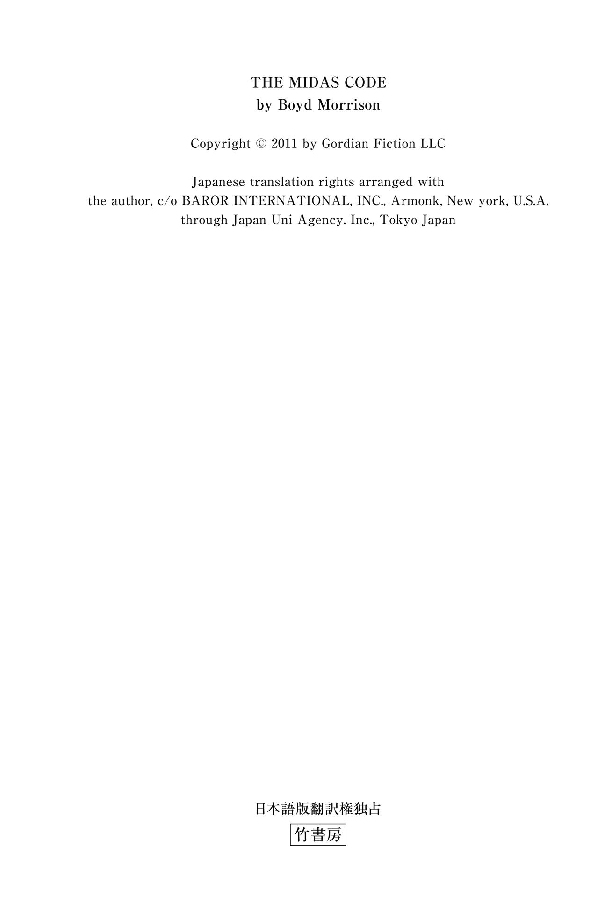
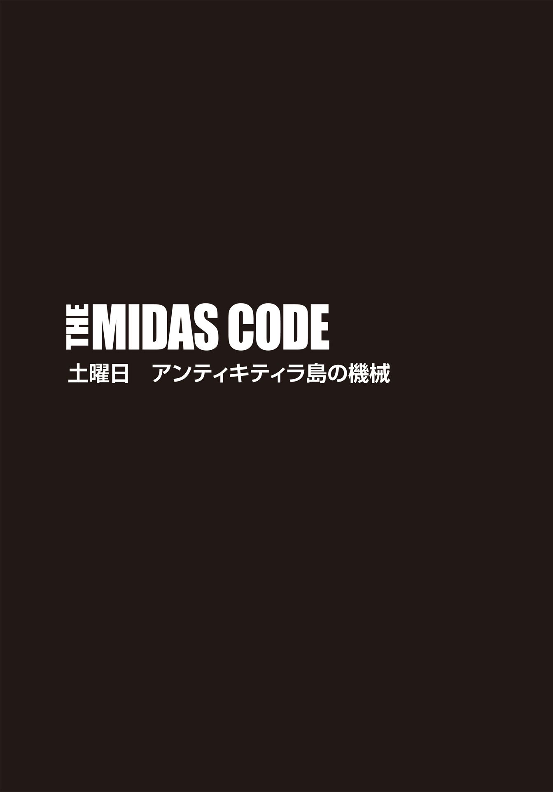
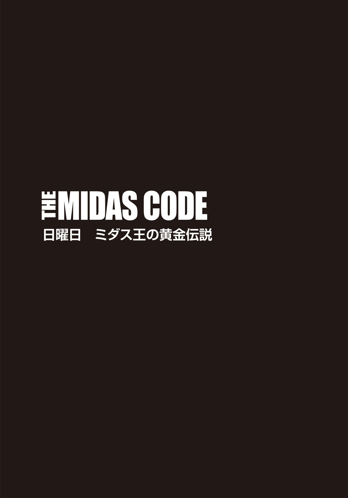
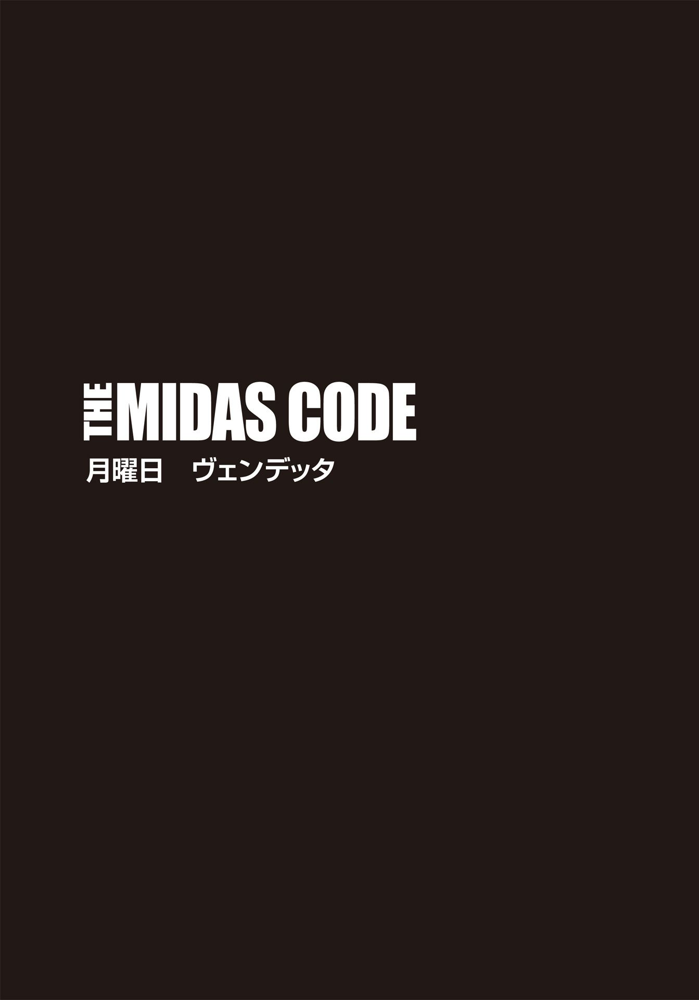
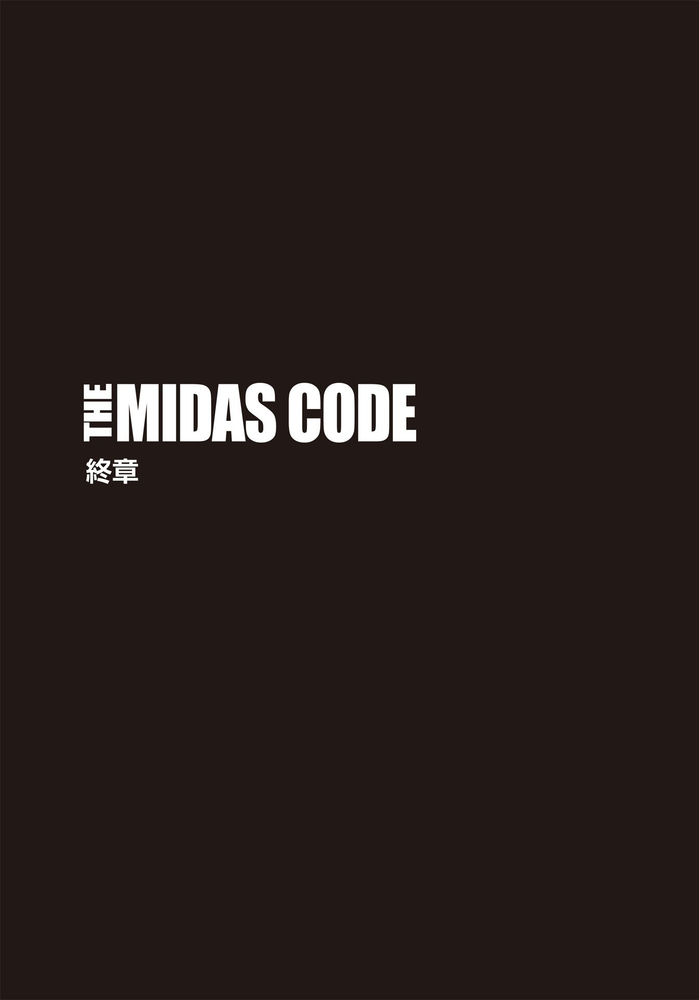

| ＴＨＥ ＭＩＤＡＳ ＣＯＤＥ 呪われた黄金の手 下 タイラー・ロックの冒険 (竹書房文庫) | |
| ボイド・モリソン | |
| (2014) | |
この作品は縦書きでレイアウトされています。
また、ご覧になる機種により、表示の差異が認められることがあります。
一部の漢字が簡略字で表示されていることがあります。

主な登場人物
タイラー・ロック .........世界有数の民間エンジニアリング企業〈ゴルディアン・エンジニアリング社〉の主任エンジニア及び特殊作戦チーフ。
ステイシー・ベネディクト .........人気テレビ番組『チェイシング・ザ・パスト』の司会者。古典学者。
グラント・ウェストフィールド .........〈ゴルディアン・エンジニアリング社〉の電気工学のエキスパート。タイラーの親友。
エイデン・マッケンナ .........〈ゴルディアン・エンジニアリング社〉の情報検索のエキスパート。
マイルズ・ベンソン .........〈ゴルディアン・エンジニアリング社〉の会長兼最高技術責任者。
シャーマン・ロック .........退役した空軍少将。タイラーの父親。
キャロル・ベネディクト .........ロースクールに通う学生。ステイシーの妹。
ジョーダン・オール .........タイラーに接触してきた謎の男。
ジア・カヴァーノ .........不動産会社〈ＶＸＮインダストリーズ〉社長。
バイロン・ガウル .........オールの部下。
ピーター・クレンショー .........オールの部下。
フィリップス .........オールの部下。
サルヴァトーレ .........ジアの部下。通称サル。
ベン・リエガート .........ＦＢＩ特別捜査官。
ジャッキー・イメル .........ＦＢＩ特別捜査官。
ＴＨＥ ＭＩＤＡＳ ＣＯＤＥ
呪われた黄金の手 タイラー・ロックの冒険② 下

38
ジョーダン・オールが客室乗務員にシャンパンのおかわりを頼むや、すぐに新たなグラスが運ばれてきた。彼女にウィンクをすると、まばゆいばかりの笑顔が返ってきた。ローマまでのフライトはあと六時間もある。長い年月をかけてきた計画がいよいよクライマックスを迎えようとしている中、前祝いとして機内でほろ酔い気分を味わっても罰は当たるまい。アリタリア航空のビジネスクラスの名前は〝ＭＡＧＮＩＦＩＣＡ 〟。「壮大」という意味のネーミングは、今の気分にピッタリだった。
フットレストを上げてまぶたを閉じたものの、ちっとも眠れない。ゴールがすぐそこまで迫っているせいか、気持ちが昂 っているのだ。彼は、二十年の間夢に見続けてきたミダス王の黄金の宝物庫を思い浮かべてみた。燦 然 と輝く黄金は途方もない量で、とても両手で抱え切れるものではない。それらがあれば、当時のミダス王が想像した以上の裕福さを自分は味わえる。しかし、もうすぐ我が物になる富以上に、彼の心を喜びで打ち震わせるのは、〝復 讐 〟だ。自分から人生を奪った償いをさせてやる。成功した者だけが得られる快適な生活を取り上げられ、惨めで貧しい日々に突き落とされる気分がどんなものか、思い知ればいい。どん底から這 い上がろうと、必死でもがき、苦しみながら生きなければならない屈辱まみれの毎日。それをあいつらにもたっぷりと味わってもらおう。そう、残りの半生を懸けて──。
自分は信じられないほどの富豪になり、一方、彼を地獄に突き落とした連中は全てを失うことになる。ざまあみろ。オールは「因果応報」という言葉の意味を改めて嚙 み締め、ひとりほくそ笑んでいた。
隣の席では、ガウルが映画を観ていた。フィリップスとクレンショーは計画の仕上げのために、米国に戻った。ガウルと作戦について話し合うのはイタリアに着いてからだ。機内では、周囲に人が多すぎる。
オールの頭の中では、すでに筋書きはでき上がっていた。過去に携わった数々の強奪経験から、細部まで綿密に準備するのが身に付いているのだ。もちろん、ガウル、フィリップス、クレンショーのために、詳細は紙に書いて渡すつもりでいる。しかしながら、手順を完璧に暗記した後にその紙を燃やしたかどうか、確認する必要があった。証拠は何ひとつとして残してはならない。
ローマに到着したら、フレッチェロッサ高速列車でナポリまでは一時間十分。そこからはレンタカーを調達し、宅配便で送っておいた品々をピックアップする。空港の荷物検査で引っかかれば逮捕されかねない品物だったので、別送せざるを得なかった。
オールにとって五年ぶりのナポリとなるが、この地については詳しく知っている。ナポリ県の都市部人口は三百万人超。それだけの大都市ゆえ、ジア・カヴァーノの注意を引かずに、自分はビジネス に勤 しむことができるだろう。彼女はこの街であちこちに太いパイプを持っているが、オールは移動のため様々な偽名を使っており、本名を別とすれば、ジアはひとつしかこちらの名前を知らないはずだ。
つまり、オールは早朝にナポリに入り、いろいろと手 筈 を整えてから、例の問題児──タイラー・ロック──を待ち受けることができる。
タイラーは、与えられた使命を本当に果たせるのか？ 少なくともやろうとはしているのだろう。例の追跡装置は、やつが最初はロンドン、それからミュンヘンに移動したことを示していた。その二都市でタイラーとステイシー・ベネディクトがどんな情報を集めていたかは知る由もないし、正直なところ、どうだっていい。オールは結果さえ良ければいいと思うタイプだし、タイラーは実行力がある男だ。
やつとステイシーが失敗した場合、それほど実入りは良くないが、簡単に実行できる代替策は考えてある。もちろん、ジアが取引に彼を組み入れて取り分をシェアしないのであれば、黄金の宝物庫の存在をイタリア国家憲兵〝カラビニエリ〟に暴露すると脅せばいい。イタリア当局が気づけば、ジアが財宝を不法に独占するのを黙って見すごすわけがない。戦利品をジアと折半するのは、残念賞をもらうようなものだが、それでも何も手に入らないよりはマシだ。むろん、彼女もその案には不満足だろう。なぜなら、オール自身がもともと彼女を裏切った人間だからだ。
こういった類いの計画が間違った方向に進んでしまうのは、得てしてパートナーが犯罪行為に手を染めたことが原因だったりする。なので今回、オールも相棒選びには慎重に慎重を重ねた。ガウルとフィリップスは若いが真面目だ。とはいえ、欠点がないということではない。ガウルはギャンブル依存症で、常に借金を背負っている。すぐに使える現金を必要としているため、こんな危険な仕事も引き受けたのだ。フィリップスの弱みは女。高級ＳＭクラブで何千ドルも浪費してしまう愚か者だ。オールの計画では、人質のひとりが女だったため、厄介を起こすかもしれないと不安を覚えたこともあったが、マゾヒズムの傾向があるフィリップスは、女王様と対極にあるキャロル・ベネディクトには見向きもしない。人間的には完璧ではない二人も、仕事となると話は別だ。常にプロの仕事ぶりを見せてくれる。オールは彼らとこれまで何度も一緒に働いてきたが、一度たりとも失望させられたことはなかった。
一方、もうひとりのパートナー、クレンショーは、摑 みどころのないタイプだ。爆弾作製に関しては、間違いなく天才的ではあるものの、重荷になる可能性も大いにあった。まあ、いざとなったら、フィリップスに対処させればいい。
一応信頼を置いているガウルとフィリップスでさえ、二百万ドルの分け前を受け取った後に、脅威にならないとも限らない。しかしその前に、オールは数十億ドルもの財宝と一緒に雲隠れしているだろう。万が一彼らが脅迫する素振りでも見せようがものなら、どんな手段を使ってでも黙らせてやる。
何年も前、この長期計画を考え始めたとき、彼は今後の準備に関してジアと話し合っていた。順調に行くかに見えたパートナーシップだったが、アルキメデスの写本の発見が、二人の不安定な関係を解消させることになる。ジアはオールの強盗の技能を必要とし、写本を盗むことが可能だという情報も手に入れていた。結果、多大な危険を冒し、オールは目的のものを手中に収めることに成功した。しかしあの夜、ふと思ってしまったのだ。彼女に写本を渡したとして、本当に自分と利益を共有してくれるのか。もしや独り占めするのではないか。手下のひとりと見なされ、単に利用されたのではないか、と。こうして、オークションハウス強奪の一件は、ジアに対する不信感を彼に抱かせる結果となった。
だが、オールが彼女を憎むようになったのは、何もこれがきっかけではない。両親が死んだとき、彼は警察にナポリの親戚の名前を教えていた。ところが、ジアの父親は助けの手を差し伸べる気はないと、きっぱりと拒絶したのだ。オールの父親が自殺し、母親を道連れにしたことを、不名誉で一族の恥だと感じていたらしい。自分の父がオールの受け入れを拒否した事実をジアが知っていたのかどうかはわからないし、今となってはどうだっていい。いずれにせよ、彼女には父親の犯した罪も償ってもらう。
とはいえ、オールは彼女を殺すつもりはなかった。聞くところによれば、カモッラの犯罪組織のトップに君臨する彼女も、その地位は今、大きく揺らいでいるらしい。だからこそ、ミダス王の財宝を獲得しようと躍起になっているのだ。あの黄金があれば、カヴァーノ・ファミリーの財政的急落を阻止し、彼女はナポリで最も影響力のあるリーダーのひとりになれる。幼い頃、一緒に見つけた秘宝だが、向こうに先を越される前に、オールは全てを自分のものにするつもりだ。あの女には、砂金ひと粒だって渡すものか。
オールはグラスに残っていたシャンパンを一気に喉に流し込み、シートを倒して横になった。心地よい眠りのために、再び想像を膨らませる。思い描くのは、ジア・カヴァーノの世界が粉々に崩れていく様子だ。当然だと信じている地位や暮らしを失うことが、どれほど恐ろしいか。かつてオールが経験したその恐怖を、ジアももうすぐ味わう。彼が手を下すのは、そこまで。あとは、他のカモッラ・ファミリーがきれいに片を付けてくれるはずだ。素晴らしい。
まどろみながら、オールは満ち足りた気分に包まれていた。
39
土曜日の朝、アテネ国立考古学博物館がオープンするや否や、グラントはチケットを三人分購入し、入館した。彼が博物館の下見をしている間、タイラーとステイシーは入り用となる品を買いに出かけることになった。彼らは地球観測機の追跡装置をゴルディアン機に置いたままにし、オールにこちらの動きを極力悟られないようにした。
前日金曜日の夜にミュンヘンを発 ったのだが、アテネまではわずか二時間のフライトだったので、その夜はずっと、アンティキティラ島の機械のレプリカをどうやって失敬するかを三人で話し合った。全員がリスクを冒すことを承知していたが、最も危険に晒 されるのは、やはりタイラーの役目となった。ミュンヘンの一件をかろうじて切り抜けた直後ゆえ、グラントは自分がやるとしばらく譲らなかったものの、タイラーの意志は固く、結局は折れるしかなかった。
インターネットで見つけた考古学博物館の写真とマップを用い、タイラーはレプリカ持ち出し計画の概要を説明してくれた。決して確実な方法ではないとはいえ、博物館の内部がネットで手に入れた見取り図と同じであれば、失敗する確率は低いように思う。作戦の過程で誰かが傷つく可能性も限りなく低い。ただし、タイラーが拘束された場合、彼がケガをすることは十分に考えられた。
古典的な設計の建物は、中央にオープンエアの中庭が二ヶ所あり、それを包み込むかのように大理石の床の部屋が並んでいた。アンティキティラ島の機械のところへ行くには、館内の展示物の迷路を曲がりくねりながら奥へ進まねばならない。通路は、やがて玄関ホールへと戻ってくる形になっており、さらに博物館北側の小さな部屋にも伸びていた。マップがなければ、グラントは完全に迷っていただろう。ギリシャ語の掲示と迷宮のような造りでは、完全にお手上げだ。
陳列されているブロンズ像や石の彫像をぼんやり眺める旅行者よろしく、グラントは歩きながら写真を撮っていく。とはいえ、芸術作品にレンズを向けてシャッターを切るのはあくまで形ばかりで、実は、各展示室のどこに監視カメラが設置され、案内係がどの場所に配されているのかをチェックすることに集中していたのだ。案内係は各展示室にひとりずついたが、そのほとんどは若く、大学生のようなカジュアルな格好だった。
流れる汗がグラントのシャツを濡 らしていく。エアコンがない博物館なんて初めてだ。真夏に博物館を訪れると、外の暑さから逃れ、涼しい館内でひと息つけるという利点があるものだが、アテネ国立考古学博物館は違う。まるで蒸し風呂だ。室内はほとんど無風で、歩き回る入館者が澱 んだ空気を動かしている状態だった。
古代の金の装飾品と陶器の破片が収められている展示ケースの横を通過する。それぞれのケースにはコイル状のコードが付いており、天井まで伸びていた。おそらく照明と警報機の電気コードだろう。
入館から十分後、最初の警備員を見かけた。ブレザー姿の男性で、案内係の若い女性とおしゃべりをしている。トランシーバーは携帯していたが、武装している様子はない。他に目に付くものといえば、腰から下げられた伸縮自在のコード付きのキーチェーンくらいだ。グラントはしっかりその警備員の写真も撮っておいた。
歩き続けた彼は、ついにアンティキティラ島の機械が飾られている部屋へとたどり着いた。オリジナルの方の第一印象は、「これがそうなのか......？」という拍子抜けに近い驚きだった。
ブロンズ製の古代の精密機械は、ガラス張りのケースに入れられ、展示室の中央に位置していた。これは、一九〇一年にアンティキティラの沈没船で発見されたものだ。約二千年前にエーゲ海で沈没したと推測される船には、数々の彫刻や装飾品が眠っていたが、それらの回収物に混じっていたのが、この機械だった。そのうちの三つのパーツが展示されており、いずれも長年海水に晒されたせいで著しく腐 蝕 している。いずれもグラントの手のひらに収まる小ささだった。レプリカのショーケースは、その横に並んでいた。ガラクタ同然のオリジナルから復元されたとは到底思えない美しいブロンズ製で、透明な台座に載せられている。そのため、ぱっと見たところ、宙に浮いているようにも見えた。
展示用のケース自体は縦二メートルちょっとの大きさで、ケースの上部上三センチは照明付きの金属の蓋で覆われている。展示物の周りをゆっくりと歩いたグラントは、ステイシーから探すように言われていた穴を見つけて足を止めた。それは、博物館が展示物を出し入れする際に使う、特別な鍵の穴だった。どの博物館も独自の鍵を特注しているらしい。ケースの中の物に触れなければいけないときには、まず動作探知警報機のスイッチをオフにし、鍵を差し込んで金属の蓋のロックを解除する。防弾ガラスから金属の蓋を外したら、フロント部分のガラスを開ける。それが通常時の正しい手順らしい。もし警報機を点 けたまま鍵を回そうとすると、即座に中央管理室に通報が行き、何者かが不正に開けようとしているのが発覚するシステムになっているという。
二つのショーケースの間には、オリジナルの方のＸ線写真が掲示されており、この遺物にダメージを与えることなく、内部の歯車の様子をうかがい知ることができる。
室内をぐるりと歩いてもみたが、近くにある監視カメラは一台しか確認できなかった。他にもカメラ台は据えられていたものの、空のままになっており、アンティキティラ島の機械の展示エリアは遠くからの撮影はされていない。彼はショーケースのところに戻り、それぞれの角度から写真を撮った。他の展示ケースの後ろには大きな隙間もあり、タイラーがカメラから隠れるには十分だ。一台しかない監視カメラのすぐ下の空間ももちろん使える。
展示ホールは次の部屋で行き止まりとなっていて、唯一外に通じているのは、建物の北側に面した非常口だけだった。そのドアの隣にはイスが置かれ、案内係が座っている。
これで館内の偵察は十分だろう。グラントは来た道を戻り、今度は建物の外側をチェックすることにした。特に建物の北側は必ず確認し、あの非常口がどこに通じているかを調べておこう。
非常口と博物館の敷地の境界となる道路の間には、大理石の破片があちこちに散らばった中庭が横たわっていた。木々がバス停と案内所に日陰を作り、歩道と中庭を隔てるフェンス沿いには、オートバイやスクーターが並ぶ。アテネでは、四輪車よりもバイク類の方が多いのだ。
そこでもカメラのシャッターを何回か押したグラントは、見るべきところは全てチェックしたと判断した。完璧とはいえないが、それに近い下調べはできたはずだ。
彼はタイラーに電話をかけた。相手は最初の呼び出し音で応答した。
〈どんな感じだった？〉
「忌 憚 ない意見が必要だと思うから、遠慮なく言わせてもらうが──」グラントは少しもったいぶったように切り出した。「あんたのクレイジーな作戦はきっとうまくいくだろうな」
40
電話を切ったとき、タイラーとステイシーはホテルから出たところだった、
「グラントからゴーサインが出た」
そう告げた彼は短パンにＴシャツというラフな格好で、ステイシーもタンクトップとショートパンツに着替えていた。露出した彼女の肩に、小さな漢字のタトゥーが二つ入れられていることにタイラーは気づいた。
「これ、なんて意味？」
そう問われ、彼女は肩を前に突き出して、タトゥーに目を落とす。
「ティーンエイジャーだった私は、農場を飛び出したくてウズウズしていた時期があった。そのときに自分に誓った約束の言葉なの。意味は〝アドベンチャー〟。どうやら、その約束は果たせたみたいね」
「気に入った」そう言った後、彼はＴシャツの袖をまくり、自身のタトゥーを見せた。剣が貫く城が描かれている。
「俺が率いていた大隊のトレードマークだ。軍隊では人気のタトゥーで、グラントも腕に同じものを入れている」
ステイシーは感心したように彼の腕を眺めていたが、その細い指が絵柄をなぞり始め、タイラーをドキリとさせた。これまでになかった親密な空気が二人の間に流れる。このままこうしていたいという思いに駆られたが、仕方がない。タイラーは咳 払 いをし、敢 えてステイシーを現実に戻した。
「準備はいいか？」タイラーはヘルメットを被 りながら訊 ねた。
「もちろんよ」彼女も自分用のヘルメットを着用した。「私、オートバイ大好きなの」
タイラーは、グラントと自分用にと二台レンタルしておいたのだ。混雑したアテネの道路を快適に進むなら、二輪車の方が断然いい。
グラントが博物館の偵察をしている間、タイラーとステイシーは作戦決行に必要な品物を揃 えるべく、あちこちの店に電話した。彼はギリシャ語を全く話せないので、店のスタッフに対応するのはステイシーの役目だ。およそ一時間を費やし、ようやくペイントボールの店と電気店を探し出した。携帯電話に住所を登録しておいたので、後部座席からステイシーに道案内をしてもらうことにする。荷物を入れたリュックも彼女が背負う。後ろにまたがったステイシーがタイラーの腰に腕を巻きつけ、やわらかい身体を背中に密着させた。
「どこでどっちに曲がるかだけ言ってくれ」
そう言って、タイラーはバイクを発進させた。マフラーから響く轟 音 が、頰を当たる風とともに後ろに流れていく。二十分もしないうちに、二人は街の西部へとやってきた。事前に地図を確認していたものの、右も左もわからない。標識の単語の発音ですら見当がつかなかった。
ステイシーが右手にある店を指差したので、タイラーは視線を向けた。ありがたいことに、店の看板には、人型に塗料が炸 裂 するペイントボールの絵が描かれていた。
ペイントボールとは、アメリカ生まれのサバイバルゲームの一種。塗料が仕込まれたペイント弾を相手に撃って倒すというシンプルなルールだ。
最初の目的地に着き、タイラーはバイクを停めた。地面に降り立ったステイシーはヘルメットを脱ぎ、頭を軽く振った。豊かなブロンドの髪が揺れ、首筋の汗がキラリと光る。タンクトップは彼女の引き締まった身体のラインを露 にし、タイラーは一瞬目のやり場に困った。
「裸の私でも想像してるの？」
我知らず彼女を凝視していたことを指摘され、タイラーはカッと頰が熱くなるのを感じた。
「い、いや。むしろ逆だ。もっと露出度の低い服を着た方がいいかな、と──」
恥ずかしさのあまり、声がうわずる。
「そんなことを言う人、初めてよ」彼女はクスクスと笑った。
「堅気の店員でも、一度君を見たら、忘れられないだろうなと、ふと思ってね」
「まあ。それ、褒め言葉よね？」
「というか、ここで下手に我々を印象づけると、これから起こる出来事と結びつけられないとも限らない。だから、現金で支払い、できるだけ速やかに店から出てくれ」
タイラーはステイシーが背負っていたリュックからマリナーズの野球帽を取り出した。
「じっとしてて」
そう言って彼女のサングラスを外し、ブロンドヘアをひとつにまとめていく。髪がサラサラしていて、まとめるのに結構手間取った。ステイシーは手出しをせず、四苦八苦しているこちらを楽しそうに眺めている。ようやく片手で髪の毛をまとめ上げ、野球帽を被せる。そして、元通りにサングラスをかけさせた。
「店の中でもサングラスはかけたままでいてくれ」
「あなたって優しいのね。ありがとう」
再び赤面するのが自分でもわかる。それをごまかすために、「爆弾を処理する人間は常に器用でなくちゃいけないから」と、やや的外れな答えを返した。
「え、それ、あなたにも当てはまる？」ステイシーはサングラスを傾け、いたずらっぽくこちらを見つめた。
「この三日間で、ずいぶんズケズケと物を言うようになったな。まあ、君らしい賛辞だと受け取っておくよ」
タイラーは苦笑しながら頭を搔 いた。
「三日間で数え切れないくらい死にそうになったんですもの、今この瞬間を大事にしなきゃって思うようになったわ。だから、笑って過ごせるときは、笑っていたいの」
「よし。これからは、危険な目に遭わないよう努力しよう」
彼の返事に、ステイシーはますます大きな笑みを返してきた。
「あの店で買う物はわかってるよな？」
彼女がコクリとうなずく。「発煙手榴弾 。古代ギリシャ語でもそんな難しい言葉は習わなかったけど、なんとか伝えられると思う。念のために二つ買うわ」
「それと、他の商品もいくつか一緒に買って、スモークグレネードが目立たないようにしてくれ」
「お安いご用よ。じゃ、行ってくるわね」
ステイシーはウィンクをし、足取りも軽く店内へと入っていった。
バイクのそばで待っていたタイラーは、何度も腕時計をチェックした。時折、空を仰ぎ、アテネのまぶしい陽 射 しに目を細める。傍目からは、休暇で遊びに来ている恋人同士に見えるだろうが、これから待ち受ける展開を考えると、とてもバカンス気分になどなれない。
ちょうど五分後、彼女はにこやかに戻ってきた。
「何か問題は？」
タイラーの問いに、ステイシーは首を横に振った。「簡単だったわ」と、買い物袋を開いて見せる。「これでＯＫよね？」
中には確かにスモークグレネードが二個入っていた。表面の文字は読めないものの、容量は合っている。彼女はその他に、ペイント弾二袋と黒い無地の野球帽をひとつ購入していた。
「この帽子は、あなた用よ。あなたのマリナーズのやつは私が被ってるから」
ステイシーは商品をリュックに詰め、サングラスを外した。そこにはもう笑顔はない。
「本当にやり遂げられると思ってるの？」
「博物館での計画のことか？」
「もし逮捕されたら、ギリシャの刑務所で十年過ごすことになるかもしれないのよ」
「俺を信じてくれ。他に方法があったらいいんだが、選択肢がこれしかないんだ。俺だって自由を奪われたくはない」
ステイシーは心配そうにこちらを見つめている。
「だけど、自分では狂気の沙汰だとは思ってないんでしょう？」
「思ってるさ。だが、俺の父親と君の妹を誘拐した誰かが、俺たちにアルキメデスが作った宝の地図を発見させ、ミダス王の伝説の宝を手に入れようとしているのも、尋常じゃないと思う。それに、もしオールが放射能汚染爆弾 のための放射性物質を所持しているとしたら、やつを止めるために全力を尽くさないと。見過ごすわけにはいかない」
彼女はその言葉を反 芻 するかのように黙っていたが、やがて顔を上げ、こう言った。
「オールはどうしてそんな危険な爆弾を作りたいのかしら？ あなたはどう思う？」
「それは本人にしかわからないよ」タイラーは肩をすくめた。「この計画がダメになったときの代替案なのかもしれない。俺が反抗したら、爆弾を起爆させるぞと脅す。あるいは、ミダス王の財宝が見つからず、金が手に入らなかった場合、放射能爆弾でアメリカ政府を脅迫する可能性もある」
「それか、今回の件と爆弾は全く関係していないのかも」
ステイシーの推論に、彼は首を振った。「オールのことだ。無関係ってことはない。やつは何かを計画しているはずだ。俺たちには見当もつかない何かを──」
「話を戻すようで悪いんだけど、お父さんがジェスチャーで示した〝ＳＲ‐90 〟がストロンチウムだってことは確かなの？」
「いいや」再びタイラーは否定した。「だが、父はＷＭＤ──Weapons of Mass Destruction（大量破壊兵器）──のエキスパートだった。あのハンドサインを見た俺やグラントがやがてそこにたどり着くだろう、と考えていた可能性は否定できない」
真摯なまなざしでまっすぐにこちらを見ていた彼女は、納得したように小さくうなずいた。
「わかった。とにかく、ショッピングを続けましょう。遠隔操作のできる点火装置が必要なのよね？」そう訊ねつつ、ヘルメットを被る。
タイラーもヘルメットを装着した。「ああ、次に行こう」
ステイシーは片手でリュックを差し出し、もう一方の手のひらをこちらに向けている。
「え？」タイラーは思わぬ彼女の反応に面食らった。
「バイクのキーをちょうだい」
ウィンクをした彼女はヘルメットのシールドを下げた。「次は私が運転する番よ」
41
ナポリの西、エメラルドグリーンの海が広がる沿岸に、ジア・カヴァーノの大邸宅はあった。彼女は猛烈な勢いで玄関を通過し、手に摑める最初のもの──玄関ホールのテーブルに置かれていたスチューベングラスの高級クリスタルガラスの花瓶──を握り、力一杯壁に投げつけた。粉々に割れたガラス片がキラキラと輝きながら、床に散っていく。
物を壊したことで、一瞬はスッとした。だが、そう簡単にこの怒りが収まるわけがない。
物音を聞きつけたメイドたちが飛んできて、慌てて床掃除を始める。それを一 瞥 したジアはズカズカと大股でリビングを抜け、地中海が一望できるテラスへとやってきた。いとこで手下のサルヴァトーレも彼女の後に続く。あまり頭が切れる男ではないが、ジアはサルのそんなところも気に入っていた。筋骨隆々でこの仕事では有能だと言えるし、夫が死んでからずっと忠実な右腕として側に控えてくれていた。
「ピエトロは大バカ者よ！」ジアは叫び、近くにあったデッキチェアを蹴り飛ばした。「もしまだ死んでいないんだったら、私が息の根を止めてやる！」彼女はイタリア語でわめき続けた。
「全ての元凶はあいつです。タイラー・ロック──。落とし前は絶対につけさせないと」
「昨日だけで、いくらかかったか知ってる？ 鉄くずになったランボルギーニの代金とフェラーリの修理費で三十万ユーロ！ スクラップになったＢＭＷとあいつの追跡のために買う羽目になったパガーニ・ゾンダを除いてよ！」
「失ったのは金だけではありません。三人の部下が命を落としました」
「ええ、その通り。一生養ってあげなければいけない遺族がまた増えた」
ジアは、ボディガードたちが仕事中に亡くなった場合、その家族の面倒を生涯見ることにしている。自分に何かあっても家族が守られると知ると、彼らの忠誠心はさらに揺るぎないものになるからだ。
ゾンダがガス欠となって動けなくなった後、ロデルが迎えの車を寄こしてくれた。ボルスト不動産＆投資会社の立体駐車場で落下したＢＭＷと、アウトバーンでクラッシュしたランボルギーニに関わる死亡事故の調査は警察に一任した。フェラーリはほどなく発見されたが、車体には銃弾の穴が二ヶ所開いていたという。ジアはロデルにフェラーリが盗まれたことを告げ、捜索を彼に任せてさっさとミュンヘンを離れていたのだ。できるだけ面倒事には巻き込まれたくはない。
正式にイタリア保健省ビルのオーナーとなったものの、解体工事は月曜日にならないと始まらない。彼女の影響力をもってしても、週末までの重機の搬入は無理だった。
地下通路に入れるようになるまでオールを食い止めておければ、あの金塊は全て己のものとなる。しかし、タイラー・ロックのやつは侮れない。例の装置を奪還すべく、ミュンヘンまで追いかけてくるとは──。ロデルが提出した監視カメラの映像には、タイラーがＢＭＷを探し出したのちピエトロと戦い、最終的に車を吹き抜け部分へと落とす一部始終が記録されていた。野球帽を深く被っていたため、本人だとは判別できず、警察も犯人逮捕の決め手にはできないだろう。ジアも敢えてタイラーのことを報告しなかった。あの男は自分の手でけりをつけたい。
なぜ彼はあそこまでの危険を冒してまで、例の装置を取り戻したかったのか。その理由を見つけ出さねばならない。盗まれたアルキメデスの蠟板 と同様、やつのリサーチに必要不可欠な要素だったのは確実だ。最終的に、タイラーもナポリに来るだろう。そう、やつとオールはここに来なければならないはずだ。
「空港と駅の監視は続けているのね？」
ジアの問いに、サルは首肯した。「両方に人員を配置しています。ジョーダン・オール、タイラー・ロック、ステイシー・ベネディクト、グラント・ウェストフィールドが姿を現わした場合は、すぐに連絡が来ます」
サルは迅速に手配してくれたのだろうが、連中が必ず見つかる保証があるわけではない。オールにとって身分や行動の隠蔽は朝飯前だし、ナポリでは攻撃を受けやすいことくらい承知しているに決まっている。一方のタイラーは、確固たる意志を持ち、機略に富む人間だが、悪事に手を染めた犯罪人ではないゆえ、己の痕跡を消すスキルは今ひとつだ。
「全てのホテルにも探りを入れなさい。あいつらは普通の旅行者やビジネスマンとは違う。その点に注意して宿泊客をチェックさせるのよ」
「彼らのうちの誰かひとりでも発見したら、どうします？」
「黄金の宝を守るのが最優先ね」
サルは、ジアの手下の中で唯一〝探し物〟の真相を知っている人物だ。
「では、発見し次第、殺していいと？」
彼女ははたと考えた。見つけたその場で仕留めるのがスマートなやり方だろう。銃弾三発を銃殺刑のスタイルでぶち込む。ナポリの犯罪率の高さは、西ヨーロッパ一だが、逮捕に至る犯人の数はほんのわずかだ。
とはいえ、不安は払拭できない。オールとタイラーが宝を探し当てる方法をすでに知っているとしたら？ どちらかを殺したとしても、もう一方が何を計画しているのかまでは不明だ。万が一先に宝窟にたどり着かれたら、自分はミダス王の黄金の全てを失うかもしれない。
「殺すのは、最後の手段よ。やむを得ない場合を除き、できるだけ生け捕りにしなさい。でも、決して逃がさないで。それを阻止できるなら、誰が死のうと構わない」
「承知しました」
ジアはその場を行ったり来たりしながら、敵の気持ちになって考えてみた。
「オールは、黄金にたどり着くための別の道も探している。あの蠟板とタイラー・ロックの装置がきっとそれに関係しているはずだわ。でも、詳しいことまではわからない」
「大英博物館の件はどうなんです？」サルが訊ねた。「ウェストフィールドを尾行した際、考古学者のラムレーと熱心に話し込んでいた様子でしたが──」
「博士に電話をかけ直したとき、彼は写本が何を意味しているかまで読み解けなかったと言っていたわ」
「たぶんあの装置は写本となんらかの関わりがある。だから、タイラーはわざわざ我々から奪い返したんですよ」
そのひと言にジアはハッとした。どうやらサルヴァトーレを甘く見ていたようだ。ラムレーはまだ公にされていないアルキメデスの写本の情報を前もって自分から聞いていたわけだし、ウェストフィールドの訪問で、その遺物について何も得られなかったとは信じがたい。あの考古学者は何かを隠している──？ 憤怒の炎が燃え上がるのを感じながら彼女は乱暴に電話を摑んだ。
〈──もしもし〉
相手のためらいがちな声が聞こえ、ジアは怒りに任せて一方的に話し始めた。
「私よ。今回は噓をつかないで。グラント・ウェストフィールドに話した内容を正直に言いなさい」
〈な、何も噓なんか......。私は彼の役に立つことはできなくて──〉
つまらない言い訳など聞いている暇はない。
「知っていることを教えなければ、テーブルの上に縛りつけて腹を裂き、自分の臓物が引き抜かれる様を絶命する瞬間まで目撃することになるわよ」
身の毛もよだつ描写に、相手が息を呑 むのがわかった。
〈──わかった、わかったよ。ウェストフィールド君は、二体の彫像に特に興味を示していた。パルテノン神殿東側のペディメントにあった像──ヘラクレスとアフロディーテだ〉
「どうしてその二つなの？」
ジアの質問に、今度は専門家然とした答えが返ってきた。
〈ある謎を解く鍵として、その二つの彫像が写本の中で言及されていた。しかし、確かなのはそれだけで、詳しい内容は私にも摑めていない〉
「あれから彼は博物館に戻ってきた？」
〈いや。もう戻ってこないと思うがね〉
ジアは眉をひそめた。「どうしてそう言い切れるわけ？ あいつらが謎を解いたって意味？」
〈いや、そこまでは断言できない。ただし写本によれば、二体の彫像が何を意味するのかを理解するには、直接パルテノン神殿に行く必要があるらしい〉
──パルテノン神殿！
「ご協力感謝するわ、博士」ジアはニヤリとほくそ笑んだ。
〈もうこれで、私はお役御免かな？〉
「いいえ、まだよ。また連絡するかもしれない。そのときに応答がなければ、裏切ったものと見なすわ。いいわね？」
〈──了解した〉荒い息遣いから、老博士がいかに不安を感じているかが伝わってくる。ふん、たっぷり怯 えるといいわ。このジア・カヴァーノを甘く見るんじゃないわよ。
ジアは電話を切った。
新たな情報を手に入れたものの、遅きに失した感は否めない。それでも、タイラー、ステイシー、ウェストフィールドを追うには、この手がかりに頼らざるを得なかった。
「アダモとダリオを呼び出して」
彼女はサルに命じた。「あの二人も大英博物館にいたから、ウェストフィールドの顔はわかっているわよね。今夜彼らをアテネに向かわせなさい。タイラー・ロックとそのお友だちはすでに現地入りしているはずだから」
「私も同行すべきですか？」
「いいえ。あなたはナポリに残ってちょうだい。アテネで切り抜けたとしたら、連中は次にここに来るもの」
サルはうなずき、こう訊ねてきた。「アダモとダリオはアテネで何を？」
「タイラーと連れの女の写真を探して、渡しなさい。パルテノン神殿に行き、オープンから終了時間まで一日中見張るように二人に伝えて」
「もし三人とも見つけた場合は？」
全員をイタリアに連れてくるのは困難だろう。ボートをチャーターするのが一番いいが──。
これから何をすべきか具体的に決まり、彼女は胸の動 悸 が収まりつつあるのを感じた。怒りで強 張 っていた筋肉も、自然と緩んできた。こんなに気分が落ち着いたのは、丸一日ぶりだ。
「三人全員は必要ないわ」彼女はきっぱりと言った。「タイラー・ロックは生け捕りにして。残りの二人は始末しなさい」
42
時刻は午後二時四十五分。午後三時の閉館時間が迫り、アテネ国立考古学博物館を訪れていた客は、次々に入り口へと向かっていく。グラントが朝一番で購入しておいたチケットを使い、タイラーとステイシーは別々に入館していた。
タイラーは作戦に備えて襟付きシャツとジーンズに着替え、肩からリュックを下げていた。耳にはイヤホンを着けており、非常口でバイクとともに待機しているグラントと常に携帯電話でつながるようにしてある。
「そっちは準備できてるか？」
彼が問うと、相棒は現況を報告してきた。
〈バス停が少し混雑しているが、それ以外は問題ない〉
「途中で危険を察知したら、叫んで知らせてくれ」
〈了解〉
ミュンヘンの立体駐車場の一件と紐 づけられないとも限らないので、マリナーズの野球帽ではなく、ステイシーが買ってくれた無地の黒い帽子を被っていた。下調べをしてくれたグラントの指示に従い、博物館内を進む中、つばを深く下げ、各部屋の監視カメラに顔が撮られないようにする。目指すのは、もちろんアンティキティラ島の機械。それがどんなものなのかは十分承知していたつもりだったが、現物をこの目で見るのは初めてだった。それゆえ、オリジナルの隣に鎮座するレプリカが、自分が造った地球観測機にあまりに瓜 二つだったことに驚きを隠せなかった。アンティキティラ島の機械の側面には、把 手 がひとつしかないのに対し、地球観測機には二つ付いている。それ以外は、そっくりだ。
部屋の案内係たちは、非常口のそばにいる係とおしゃべりに夢中で、タイラーのことなど気にも留めていない。周囲には他に旅行者などもおらず、まさしく作戦決行の絶好のタイミングだった。
ショーケースのそばに稼働中の監視カメラがあり、その真下に移動する。カメラと壁の間には小さなスペースがあった。靴ひもを結ぶふりをしてしゃがみ込み、足元にリュックを置く。それから、中からスモークグレネードを出し、ショーケースの裏に寝かせた。澱みのない流れるような動きだったこともあり、誰にも気づかれていないはずだ。グレネードの存在も、敢えて探すのでなければ、簡単に見つかることはない。
何ごともなかったかのように立ち上がり、タイラーはアンティキティラ島の機械の説明文を読む素振りをした。レプリカが入っているケースの周りをぐるりと歩き、展示ケースの正面のガラスを開けるための鍵穴を確認する。
彼は来た道を戻り始めたが、途中ですれ違ったのは、古代ギリシャの遺物に熱心に見入っている客ひとりだけだった。タイラーもできれば、もっと時間をかけてアンティキティラ島の機械の部品を観察したかった。紀元前一五〇～一〇〇年に製作されたと推定されており、同レベルの天文時計が欧州で作られるようになったのは、その千五百年後。太古の昔に時代を先取りしていた希 有 な精密機械なのだ。実際にこの目で見られただけでもありがたい。
アンティキティラ島の機械の展示室から三十メートルほど離れた場所には、墓碑の彫刻が飾られているギャラリーがあり、タイラーたちは、そこでもひと仕掛けする予定でいた。通路を曲がると、とある彫像に目を奪われているステイシーが視界に入った。それは、供物が入った器を手にしたローブ姿の男性の立像だ。
ゆっくりと真後ろを向いたステイシーに、タイラーがうなずく。彼女の視線は、彼を通りすぎ、その奥へと向けられた。
グラントは館内の全ての火災報知器の場所を調べ上げており、ステイシーは、そのうちのひとつがどこにあるかをすぐに把握した。英語で説明するガイドに聞き入っている老人たちのツアーグループの近くだ。さりげなく団体客の横を通過しつつ、彼女は報知器のスイッチを押した。当然のことながら、警報が鳴り出す。
天井のスピーカーから音が響いてくるゆえ、誰もステイシーの方には見向きもしない。彼女も他の客たち同様、戸惑っている演技をした。
案内係たちが慌てて展示物と火の確認を始める。火災は、芸術品に対して大きな脅威となるも、貴重な彫像群に不必要なダメージを与えぬようスプリンクラーが即座に作動することはない。タイラーはポケットの中でレザーマンの万能ナイフを握り、その瞬間を待った。
数秒が経過し、警備員がひとり姿を見せた。大声でトランシーバーに話しかけ、火災報知器へと直進していく。その前まで来て立ち止まると、周囲を見渡して火災の気配があるかどうかをチェックし出した。
ツアー客たちは不安げに警備員を注視したまま、その場に固まっている。出口に向かう者はいない。タイラーの望み通りの展開だ。彼はそっと横に移動し、グループのひとり、高齢の紳士の隣に立った。
「今の聞きました？」
タイラーが話しかけると、紳士は驚いたようにこちらを向いた。「え、何をですか？」
彼は警備員を指差した。「彼が言ったんですよ。博物館の裏で火の手が上がったって」
紳士はさらに目を丸くし、悲鳴のような声を上げた。「誤報じゃなくて、本当に火災が起きてるんですか!? 」
周囲のツアー客もそのひと言でどよめき、次々に正面出口へと向かい出した。
一方、ステイシーは警備員と話に花を咲かせていた。彼女がギリシャ語に堪能で本当に幸いだった。しかも、テレビ番組の司会者として培ってきた〝相手をいかにして自分に惹 きつけるか〟のノウハウをいかんなく発揮し、その演技は完璧だった。彼女は天井を指で示し、もしかしたら火災は天井裏で起こっているのかもしれないと伝えている。警備員の背中に手を当てて、よく調べてほしいとも訴えた。彼らのところに集まってきた案内係二人も、天井を見上げている。どうやらステイシーの言うことを鵜 呑 みにしているようだ。
タイラーはというと、レザーマン社のナイフをポケットから取り出し、万能ツールの中のワイヤーカッターをいつでも使えるようにした。レザーマンの多機能ナイフは、ある意味、グラント同様、実に頼りになる大切な相棒だ。ポケットに収まるコンパクトさでありながら、各種ナイフ、ノコギリ、カッター、ペンチ、ドライバー、レンチ、ハンマー、栓抜きなど様々な局面で活躍するツールが満載で、これまで何度も助けられてきた。タイラーにとって、もはやなくてはならない存在になっている。
彼の視線は、警備員の左腰にぶら下がっている鍵束を捉えていた。ごく自然な足取りで警備員の横に向かって彼らの輪に加わり、あたかも一緒になって火災報知器が鳴った原因を探るかのように上を見たりしてみる。
そのとき、ステイシーが大声を出した。
「ねえ！ あそこを見て。なんか変じゃない？」
それが合図だった。彼女の指が示す先に皆が一斉に目線を向けるや、タイラーは少しだけ屈 んで鍵束を握り、ワイヤーカッターでキーチェーンから切り取った後、何食わぬ顔で集団から離れた。幸い、警備員は何も気づいていないようだ。
一目散にアンティキティラ島の機械を目指し、隣の部屋に入ったタイラーは、周辺三つのケースに思い切り腰を打ちつけた。ステイシーによれば、どのショーケースにも無音の動作検知型警報装置が内蔵されているという。異常事態ではなく、客が偶然ぶつかったりした場合にも通報が行くので、博物館側にとっては結構面倒なことになるそうだ。今、複数のガラスケースの動作探知機が作動したとなると、火災報知器が鳴って動揺した客がぶつかったのだろうと、セキュリティ室が判断する可能性が高い。つまり、標的のレプリカのガラスケースで検知器が発動しても、問題視されないで済む。さらに、火災騒動と併せ、セキュリティ室をも混乱させることで、できるだけタイラーたちの計画から気を逸 らしておくことも目的だった。
それから彼はリモコンのボタンを押し、あらかじめケースの裏に仕掛けておいたスモークグレネードに点火した。この点火装置は、グラントが昼食の時間に組み立ててくれたものだ。導火線につながる九ボルトのバッテリーを持つ無炎のペイントボールの発煙手 榴 弾 は、電気発火スイッチに接続されており、押しボタン式のリモコンで稼働するという仕組みだ。
グレネードから大量の煙が噴き出し始め、瞬く間に周囲に煙幕を張っていく。三分もすれば、非毒性ガスが展示室全体に充満し、アンティキティラ島の機械のレプリカ周辺も煙で見えなくなる。タイラーは警備員から頂戴した鍵束を取り出し、さっき確認しておいたショーケースの奇妙な鍵穴に一致するものを探し始めた。
今や、廊下もオレンジ色の雲の中にすっぽりと包まれたようになっていた。ペイントボールで使用する発煙ツールなので煙に色が着いており、鮮やかな暖色の煙幕は、あたかも煙の向こうに炎が上がっているかのような演出をしてくれている。タイラーから五メートルほどしか離れていない場所に案内係が二人いたが、突然の出来事に驚いて叫んでいた。毒ガスだと思い込んでいるのか、激しく咳き込みながらこちらに向かってくるではないか。てっきり彼らは非常口から外に出ると思っていたので、逆方向とは予想外だった。一瞬ドキリとしたものの、パニックになっている二人は脅威ではない。彼は、自分の仕事を予定通り遂行することにした。
案内係たちと鉢合わせをしないように廊下の端を小走りで進み、展示室へと勢いよく飛び込む。案の定、室内は完全に煙に包まれており、かろうじて見えるのは足元の床くらいだ。視界が悪い中、タイラーは手探りでレプリカのショーケースまで進んでいく。
目的のケースの前に立った彼は、あらかじめ準備しておいた鍵を鍵穴に挿そうとした。ところがそのとき、不意に誰かに腕を摑まれ、タイラーはギョッとした。さっき逃げ出した案内係の女性だった。勇敢にも煙の中を舞い戻り、わざわざ助けに来てくれたらしい。ギリシャ語で何言かわめきながら、執 拗 に腕を引っ張ってくる。思わぬ展開にタイラーは戸惑ったが、ここで怪しまれてはいけない。彼女を先に行かせ、あたかも後ろからついていくふりをした。相手が二歩ほど前進したところで、タイラーは歩みを止め、ケースに戻っていく。彼女が振り向いたときには、すでにこちらの姿は煙に紛れ、見えなくなっているはずだ。
彼はケースの上部に手を這わせ、鍵穴を探り当てた。鍵を挿し込み、ゆっくりと回すと、ケースが開くのがわかった。途端に、オレンジ色の煙がケース内に流れ込んでいく。タイラーはリュックのファスナーを開け、取り出したアンティキティラ島の機械のレプリカをしまい込んだ。次いで鍵の指紋をシャツで拭い取り、ケース内にそれを投げ入れる。
「手に入れたぞ」
タイラーの報告に、すぐに相棒から返答が来た。
〈了解。今のところは誰にも怪しまれてなさそうだな。こっちもＯＫだ〉
煙のせいで右も左もわからない。勘を頼りに非常口へと直行し、彼は扉を押して外に飛び出た。誰かに見られることも考慮して片手で顔を隠していたので、息苦しさから呼吸が荒くなっていた。新鮮な空気を吸ってホッとするも、グラントがオートバイと一緒に待機している場所へ急ぐ。バス停の隣には、相棒の他には誰もいなかった。やじ馬たちは博物館の正面入り口に集中しているのだろう。
二人はバイクにまたがるや、エンジンをかけ、博物館の沿道を進み始めた。正面入り口まで来ると、ステイシーが駆け寄ってきた。彼女はタイラーの後ろに飛び乗り、「行って！」と叫んだ。再び走り出したＢＭＷの二輪車は、見るみるアテネ国立考古学博物館から離れていった。
三つ目の交差点を過ぎたところで、赤信号で足止めされる。どこからかサイレンが聞こえてきてハッとするが、音は皆、博物館の方角へと流れていく。
「何か問題は？」
グラントの質問に、タイラーはこう答えた。
「最後の最後に案内係に逃げろと腕を摑まれた以外は、滞りなく済んだ」
それから、背後のステイシーに「君の演技力には感心したよ。俺も危うく天井を見上げるところだった」と、肩越しに笑顔を見せる。
「みんなを楽しませるのが仕事ですから」
彼女は茶目っ気いっぱいにおどけた後、「声をかけてきた案内係は、あなたの人相を覚えてるかしら？」と訊ねた。
「あの煙の中で？ 性別も定かじゃなかったと思うが。まあ、男だと気づけたなら、それだけでもかなりラッキーだろうな」
「つまり、幸運だったのはあなたの方だってことね」
信号が青に変わる。
「運も実力のうちって言うだろう？」
タイラーはエンジンを全開させながら、ステイシーに大声で返した。こうして彼らは、犯罪現場から遠ざかっていった。
43
ステイシーをホテルで降ろした後、タイラーとグラントは地元の金属加工店へと向かった。その日の夜、閉店後に店をまるごと貸してほしいとオーナーに事前にかけ合っており、さすがに難色を示されたものの、気前よくレンタル代を支払うことで無理難題を承諾してもらっていたのだ。アンティキティラ島の機械の復元品から歯車を取り外し、それを地球観測機に移し替えるのに、研削、切断、溶接道具一式がどうしても必要だった。
レプリカは地球観測機とよく似ているが、ところどころ違う構造になっているためにアプローチが異なり、分解作業も慎重に行わねばならなかった。がらんとした無人の作業場に立った二人は、今しがた借りて きた代物をまじまじと眺めた。
「よし。まず、レプリカから主軸を抜き取った後に問題の歯車を外し、地球観測機に取りつけていこう」
その指示を合図に、作業は開始された。
全てが終わったのは七時間後だった。真夜中までに、タイラーは四十七の歯車全部を元通りに組み込んだ。最後のひとつを装着した彼は大きく息を吐き、新品同様になった美しい地球観測機を愛おしげに眺めた。だが、見てくれが良くなっても、実際に動かなければ、これまでの苦労が台無しだ。タイラーはグラントに無言で目配せし、相棒も黙ってうなずく。そして、タイラーの指先が、修繕された装置の把手を回し始めた。二人が固唾 を呑んで見つめる中、地球観測機の目盛り盤は、あたかも最初からその歯車が部品の一部だったかのようにスムーズに回転した。破損したメインの歯車をレプリカのそれと交換するというタイラーのアイデアは、大成功だった。こうして、もともとオールのために組み立てられた装置は、再び正常に動くようになった。
「あとは、明日の朝まで待てばいいってわけだな」
太い指でバラバラになったレプリカの部品を集めながら、グラントが言った。「アクロポリスがオープンするのは午前八時だ」
ギリシャの首都アテネで、最も人気が高い観光地アクロポリスの丘。もちろん見物客の目当ては、そこに威厳をたたえつつそびえる、古代ギリシャ文明の象徴──パルテノン神殿だ。タイラーたちは、大勢の旅行者に紛れて静かに目的を果たせばいい。
「現地入りすれば、十分もかからずに計測は済む。その後は速やかに空港に戻ろう。一時間の時差を考慮しても、ランチタイムまでにローマに到着できる」
「ローマでランチか！ いいねえ。そういや腹減ったなあ」
大食漢のグラントは、タイラーの言葉に食欲を刺激されたようだ。
「ん？ だが、なんでローマなんだ？ 俺たちはナポリに行くんじゃ？」
相棒の疑問はもっともだ。しかし、直接ナポリに入るのはあまりにも危険すぎる。ジア・カヴァーノが地元で手ぐすねを引いて待っていることくらい、容易に想像がつく。ナポリ以外で彼女の影響力がどれほどのものなのかは不明だが、カヴァーノ一派の力は、ローマにまでは及んでいないとタイラーは踏んでいた。そこで、まずはローマに飛んで車を借りることにする。レンタカーで一時間も移動すればナポリに到着するので、オールとの待ち合わせには間に合うはずだ。そう説明すると、グラントも素直に納得した。
急に眠気に襲われ、タイラーはまぶたを擦 った。明日に備えて、きちんと睡眠を取る必要があるが、様々な思いが頭の中で交錯し、果たして熟睡できるかどうかはわからない。グラントは、こちらの表情に不安の色が浮かんだのに気づいたらしく、「親父さんは大丈夫だって。息子のあんたが一番承知してるだろ？」と元気づけてくれた。
「ああ、わかってる。ロック少将のことだ。彼の身より、核物質の心配をしろと思っているに違いない。もし、ＳＲ‐90 がストロンチウム90 を指すのであればな」
Ｓ・Ｒ・90 ──。オールが送ってきたビデオ映像に映ったシャーマンのハンドサインが、脳裏に蘇 る。
「だとしても、オールがなんでそんなものが入り用なのか、さっぱり見当がつかん。奇妙すぎるよ」
「ミダス王の黄金と関係があるんだろう。俺たちに宝探しをさせておいて、なおかつ同時に核兵器を準備する理由が、他にあるか？」
「もしワシントンＤＣで爆発したら、今後二十年、アメリカの首都はゴーストタウンと化すぞ」グラントは苦い顔をする。
「おそらくオールは政府に積年の恨みを持っている」
「ああ、俺以上に税金を払うのが嫌でたまらないのかもしれないな」
相棒のジョークにニヤリとしつつ、タイラーは地球観測機をリュックにしまった。そのとき、ある思いが頭をよぎった。
「なあ、ＦＢＩにこの件を告げないのは、本当に正しい選択なんだろうか」
「どうかな」グラントは肩をすくめた。「どっちにしたって、メリットとデメリットがある。俺たちにはエイデンの検索能力やマイルズの豊富なコネがあるが、ＦＢＩなら、それをはるかに上回る人材と情報を持ってるのは確かだ。でも、あんたの考え通り、俺たちが通報したら、オールはその事実を嗅ぎつけると思う。俺たちが当局に頼らないで自分たちだけでやってると思わせている以上、やつは親父さんとステイシーの妹に手出しはしないだろう」
「そうだな。それに、父さんは人質にされている間、ただぼんやりと座っているだけなんてことはない。オールを挑発し続けて、脱出のチャンスをうかがっているはずだ」
グラントは片眉を上げた。「ロック少将はマジで何かを試みるつもりだと？」
タイラーはうなずいた。「俺たちが先に発見しない限りはな。エイデンによれば、オールが送ってくるビデオからは、居場所を突き止めることはできないそうだ。東欧ルートで三つの匿名化ツールを介して送信されているらしい」
「ああ、俺もエイデンのメールを読んだよ」
ゴルディアン・エンジニアリング社は、事故調査分野で世界トップクラスの企業だ。社長のマイルズ・ベンソンは、今回の一件でタイラーに近しい人材からボランティアを募って調査チームを作り、社長自らもフェリーに載っていたトラックが爆発した現場に赴き、証拠集めをしてくれていた。地元の保安官の案内で、車の残骸などを厳密に調べたものの、ジョーダン・オールにつながる手がかりは何も発見できなかった。トラックはその前日に盗まれた車で、爆弾に使われた部品はどれも、家電量販店ラジオシャックで売られているものばかりだったという。二成分系爆薬も、犯人を探し当てるヒントにはならなかった。他に手がかりがなく、負傷者も出ていないとなると、保安官としては、手製爆弾を爆破させて自己満足する、どこかの変わり者の愚行として片づけるしかないらしい。
ゴルディアン社の電子頭脳といえば、エイデン・マッケンナだが、彼のサイバーワールド内のあらゆる情報網を駆使しても、オール捜索の努力は今のところ実っていない。やつの携帯電話は使い捨てタイプだったし、地球観測機を追跡するためのウェブページは偽名でセットアップされていた。よほどの幸運に恵まれない限り、オール自身を逮捕できなければ、父とキャロルを自由の身にできるチャンスは訪れないことになる。
「よし」タイラーはリュックを肩にかけた。「ホテルに戻ろう。明日は長い一日になる」
スイートルームに戻ると、ステイシーはリビングでアルキメデスの写本を読み直していた。
「どう？ うまく行った？」彼女は目を輝かせて訊 いてきた。
タイラーがすかさず笑顔を返す。「スイスの時計並みに正確に取りつけたよ」
「俺はもう寝るよ」グラントは大きな伸びをした。「朝食を摂 る時間を考慮し、目覚ましは七時にセットするからな。腹が減ってはなんとやら、だろ？ じゃあ、おやすみ」
寝室のドアが閉まり、リビングは、タイラーとステイシーの二人だけとなった。彼は地球観測機の入ったリュックをテーブルの上に置き、彼女の隣に腰かけた。突然、ここ数日の疲れがどっと押し寄せ、身体が鉛のように重くなった。ソファに沈み込むように背を預け、タイラーは目を閉じた。
「かわいそうに。疲れてるのね」
彼は薄目を開け、ステイシーの方を見た。「君はやけに目が沍 えてるな」
「あなたたちが出かけてる間、お昼寝したから」
彼は首を傾け、凝り固まった筋肉を伸ばそうとした。休みなしで何時間も地球観測機に向き合い、背を丸めて精密作業に集中していたのだから仕方がない。
「ここでしょ。私がほぐしてあげる」
タイラーが口を開くよりも先に、ステイシーの手が肩を摑んだ。唐突にマッサージが始まり、不意を衝 かれたものの、心地よい指圧に抗うことはできない。小柄にもかかわらず、なかなか握力がある。彼は目をつぶり、ステイシーの親指がツボを刺激する快感に身体を預けた。
五分ほど肩を揉 まれ、疲れが完全に消えたわけではないが、少なくとも強張っていた筋肉は緩んだ。タイラーはソファに寄りかかり、横に座る彼女を見た。二人の視線は互いをまっすぐに捉えている。
「何？」ステイシーは少し戸惑ったように訊いてきた。
「この状況......辛いだろ？」
「あなたにだって辛い状況でしょ？」
「ああ」彼は目を擦りながらうなずいた。「だが、全てうまく行くと信じてる」
「私も同じ」
彼女はごく自然な素振りで、タイラーの髪をそっと撫 でた。「でも本当は、あなたは違う。うまく行くと信じてるっていうより、自分でうまく行くようにしなきゃと思ってるんでしょ？ だから、相当無理してるんじゃない？」
ステイシーの瞳は穏やかな光をたたえている。指の滑らかな感触も、落ち着いた声のトーンも、何もかもが疲れ切った身体に優しく染み入ってくるようだ。
「自分でコントロールできないことが、すごく嫌なのね。アウトバーンでフェラーリを運転するあなたは、本当に生き生きとしてた。敵に命を狙われているっていうとんでもない状況だったにもかかわらず、ね。車はまるで身体の一部みたいに、あなたの思い通りに動いてた。助手席から見たあなたの横顔は、何があっても対処できるっていう自信に満ちあふれてたわ」
タイラーは彼女の視線を受け止めたが、言葉は返さなかった。
「子供の頃に馬でケガをしたって話してくれたけど──」彼女はさらに続ける。「あなたは死ぬのが怖かったんじゃないのね。身体が自分の言うことを聞かなくなるのが怖かったんだわ」
彼は驚いた。いつの間にステイシーはこんなにも自分を理解していたんだ？ 彼女は核心をついている。とはいえ、身体が麻 痺 すること自体が恐怖なのではない。マイルズを見てもわかるように、車イスになっても実り多き生活が送れる。タイラーが恐れているのは、自分で物事をコントロールできない状態に陥ることだ。もし残りの人生を植物状態で、百パーセント誰かの世話になりながら、それでいて何も自分から提供できないまま過ごしていくとしたら──？ 想像するだけでゾッとする。
「どうしてその話を今持ち出したんだ？」ようやくタイラーは口を開いた。
ステイシーは両手を彼の手に重ねた。
「あなたに知っておいてもらいたかったの。あなたはひとりじゃない。一緒なら、これを乗り切ることができる。私たちみんなで頑張りましょう」
二人は無言で見つめ合い、タイラーは時間の流れが止まったかのような感覚に陥った。部屋の片隅から聞こえてくる時計の音が、鼓動にも似たリズムを刻んでいく。ステイシーの碧 眼 の美しさに吸い込まれそうになり、彼は息を呑んだ。
彼女が上体を傾け、その視線はこちらの唇から瞳へと移っていく。小さな手のひらが、タイラーの手をぎゅっと握り締めた。彼はよくわかっていた。あと一センチでも彼女との距離が縮まれば、もう自分自身を抑えることはできないと──。
タイラーの中で激しい葛藤が生まれた。厳しい現実から目を背け、互いの温 もりに身を任せて慰め合うのは簡単だ。しかし、シャーマンとキャロルは、この瞬間も囚 われの身としてやつらの手中にある。彼は理性を振り絞り、苦渋の選択をした。前を向いてステイシーの手を静かに外し、ソファから立ち上がったのだ。
「じゃあ──」タイラーは彼女とは目を合わせずに言った。「そろそろ、俺も寝るとするかな」
ステイシーも慌てて立ち上がり、「そ、そうね。そうしなきゃね」と、ぎこちなく話を合わせた。心なしか頰が赤くなっている。
「それじゃ、おやすみ」
「ええ、また明日。あ、日づけが変わっているから、今日だけど」
彼女は気もそぞろに部屋に向かい、「おやすみなさい」と肩越しにタイラーを見やった。パタンとドアが閉まり、タイラーは再びひとりきりとなった。
どこか気まずい雰囲気は残ったものの、ステイシーのあの性格なら、朝には何ごともなかったかのように振る舞ってくれるだろう。それに、彼女自身もタイラーが取った行動を理解してくれるはずだ。今はあれでよかったのだと。
大急ぎで歯を磨いた彼は、ベッドに這い上がり、ステイシーの言葉を思い返していた。
あなたはひとりじゃない。一緒なら、これを乗り切ることができる。
そう言われ、素直にうれしかった。ステイシーとグラントが味方でいてくれる事実は、彼の心を軽くした。明日、何が起ころうとも、三人で向き合おう。タイラーが目を閉じるや否や、眠りの闇が彼の全てを包み込んだ。

44
アダモ・カヴァーノは、ダリオと一緒にアクロポリスへと続く道を登っていた。他に、さらに二人の手下が同行している。昨晩、アテネの国立考古学博物館で盗難事件が起きたというニュースが流れた。ファミリーのトップであるジアはそれを深刻に受け止め、急 遽 、手下を二人追加させたのだ。博物館から盗まれたのは何やら箱のような装置だったらしいが、詳細は知らないし、知ろうとも思わない。アダモが関心があるのは、あのどでかい黒人だけだった。大英博物館の前で、自分とダリオを殴り倒した大男に、今度こそひと泡吹かせてやる。二度とあんなヘマはするものか。
アテネには朝六時に現地入りし、まずカヴァーノ・ファミリーと知り合いの地元業者から拳銃と弾薬を手に入れた。現在時刻は午前八時。アクロポリスの開場時間だ。四人分のチケットを買い、かの有名な丘の頂上目指して長い道のりを歩き出す。
アテネに初めて訪れる者の多くは、アクロポリス＝パルテノン神殿だと考えている。実際には、アクロポリスとは広大な岩の台地全体を指し、パルテノンは、ギリシャ神話の女神アテナを祀 る神殿で、アクロポリスの丘にある複数の古代建造物のひとつなのだ。ここにある神殿や門などの遺跡群は、故郷ナポリの建物よりも古いということはわかる。しかし、崩れそうな石の壁や朽ちた柱に、アダモはなんの魅力も感じなかった。ただのガラクタじゃないか。見晴らしのいい地点から眺めると、パルテノン神殿は、まさしく〝過去の栄光の抜け殻〟といった趣だった。風化してボロボロの瓦 礫 は、いつ崩壊してもおかしくないように思えた。
太陽の陽 射 しは、すでに肌を刺すような強烈さで降り注いでいるものの、周囲に日陰はほとんど見当たらない。彼らの誰もが、着るものにまで頭を回していなかった。アダモはスラックスにフェラガモの靴、ベルトに差した銃を隠すためにワンサイズ大きい緩めのシルクのワイシャツという出で立ちだ。自分たちの横を行き交う旅行者は皆、短パンにＴシャツ、サンダルもしくはスニーカーというラフな格好だったので、ひどく場違いな雰囲気だった。これではまるで、白いモッツァレラチーズに止まる黒いハエみたいで目立ちすぎる。
今のところ、いずれ現われる標的に目を光らせる以外、特にすることはない。四人のうち二人は入り口付近で待機し、他の二人はその近くでスタンバイする。アクロポリスの入り口は一ヶ所だけなので、グラント・ウェストフィールドとそのお友だちのタイラー・ロックは、必ず自分たちのそばを通過するはずだ。
アクロポリスの前門であるプロピュライアが近づいてきた。徐々にアダモの血がたぎってくる。彼の目は捕食者の如 く、グラントたちの姿を探し続けた。プロピュライアの狭い階段を上っていくと、石柱が並ぶポーチに出る。その先に広がっているのが、アクロポリスのメインエリアだ。
開場したばかりだというのに、階段部分は団体旅行客で混雑していた。
──これは一体どういうことだ？
アダモは首をひねった。彼らはオープンと同時に入ったので、最初に入場したはずなのに。そのとき、さらに大勢の客が彼らの左側からやってくるのが見えた。そこで彼はハッとした。入り口はひとつだけではなかったのだ。
探し人──グラント、タイラー、ステイシー・ベネディクト──の顔は覚えている。これだけ人が多くても、三人を見分けることは難しくない。特に、グラントは隠れようがない大男だ。アダモの鋭い視線はこちらに向かってくる旅行者のグループを目ざとくチェックしたが、そこに三人はいなかった。
辺りを見回したところ、座るのに格好の場所を見つけた。今日は長い一日になるだろう。何もずっと立ちっ放しでいる必要はない。しかし、まずはアクロポリス全体を偵察し、グラントたちがまだ到着していないことを確認すべきだ。
アダモはダリオと他の二人を脇に連れ出した。
「ここで面倒を起こすんじゃないぞ」と、イタリア語で注意する。「タイラー・ロックを見つけたら、できるだけ物音を立てずにやつを捕まえろ。他の二人──黒人と女は連れ出してから始末し、ゴミ捨て場に廃棄する。覚えておけ、グラント・ウェストフィールドは俺とダリオの獲物だからな」
「騒がれたらどうする？」ダリオが訊 ねる。
「そのときは、パルテノン神殿に死体を残していくことになる。だが、連中の持ち物を全部回収するんだ。ジアにそう指示された。ダリオ、おまえは俺と一緒に来い。これからここの状況を確認しに行く」
アダモは人波を搔 き分け、まぶしい陽光に目を細めながら階段を上っていった。この丘の頂上に一日いるのなら、落ち着く前に水のボトルを用意しておかねばならないだろう。
近道をしたのだから、自分たち三人がアクロポリスに一番乗りする──ステイシーはそう考えていた。ところが、作業員たちが重量のある大理石のブロックをガントリークレーンで動かしている現場に遭遇し、己の考えが甘かったことを思い知らされた。ガントリークレーンとは、垂直な脚の上に横行桁 を設置した橋 脚 型の大型クレーンだ。港でコンテナ船からコンテナなどの積み荷を陸地に積み下ろすのに、よく使われている。まさか、そんな大がかりな起重機がアクロポリスの丘にも投入されているとは──。それにしても、今日は日曜日。休日の朝に工事が続行されている現実に、ステイシーは驚きを隠せなかった。そのとき、横を通過したガイドの説明が聞こえてきた。
「六月末のイベントに間に合わせるため、現在急ピッチで修復工事が進められています」
なるほど。そういう理由だったのか。ならば、納得が行く。
ふと反対側を見ると、車イスに乗った婦人を押している老人がいた。仲睦 まじい様子から、おそらく夫婦だろうと彼女は思った。微笑ましい光景ではあるものの、こんなに速く、車イスとともにここまで上がってくるとは、よほどタフな男性だと感心する。
ステイシーは、十回以上アクロポリスに来ているが、何度訪れても、その遺跡群の素晴らしさには息を呑 む。外観は二千年以上の歳月の経過を感じさせるものの、パルテノン神殿の威厳は、紀元前四三八年の完工当時のままに違いない。この神殿は地上で最も完璧に調和が取れた建造物だ、と考える建築家もいるくらいだ。もしもディベートで彼らと議論した場合、その持論を否定するのは相当苦労するだろう。一見、まっすぐな大理石の円柱は葉巻のように中央がやや膨らんでいる。これは目の錯覚を利用した設計で、下から仰ぎ見たときに柱が直線に見える効果を醸し出す。さらに、建物の安定感を出すべく、柱はわずかに内側に傾いて立てられているのだ。太古の人々の建築美を追求する姿勢と、それを実現することが可能だった優れた才気と技術。ステイシーは先人たちに畏敬の念を抱かずにはいられなかった。
アクロポリスの反対端へ向かう直線ルートを三人で進んでいたが、神殿の屋根の残骸を支える巨大な大理石柱の列に、タイラーとグラントはすっかり目を奪われている。願わくは、最初に訪問したときの驚きと感動を、もう一度自分も味わいたい。
砂利道の中に埋もれた大理石部分で足を滑らせ、ステイシーは小さく悲鳴を上げた。咄 嗟 にタイラーが彼女の腕を摑 み、かろうじて転ばないで済んだ。
「大丈夫か？」
「砂利道が続いてるから、ふいに出現するツルツルの大理石の存在をつい忘れちゃうの。尻もちをついたこともあるわ。傾斜した氷の床の上に立っているようなものだから」
照れくさそうに答えた彼女に対し、タイラーは小さな笑みを向けただけだった。
今朝、ステイシーは遅く起きたので、昨晩のぎこちないひとときについて、彼と話し合う間がなかった。二人が置かれている状況が状況ゆえに、現実を忘れたいがために互いを求めようとしたのかもしれない。あのまま成りゆきに身を任せていたら、事件が解決していないのに何をしてしまったんだと、きっと後悔しただろうし、タイラーとの関係も不必要に気まずくなっていただろう。それでも、ステイシーは彼の真意を知りたいとどこかで思っていたし、誤解させたのなら、それを解きたいと感じていた。ただ、そんな時間もないことも十分承知していた。
次の神殿まで歩く中、ステイシーはタイラーに話しかけた。「圧巻でしょ？」
彼は黙ってうなずいた。
「この遺跡はどのくらい前のものなんだ？」
グラントに問われ、彼女は滑らかな口調で説明した。
「およそ二千五百年前よ。当初、神殿にあった浮き彫りの彫刻群は、鮮やかな色に塗られていたらしいわ」
「へえ。もともとカラー作品だったのか？ ちょっと想像できないな」
グラントは不思議そうに顎を擦 っている。
「みんな、白い遺跡や彫刻の写真を見慣れているから、パルテノン＝白亜の神殿っていうイメージが固定しちゃってるのね。でも、強力なライトを当てて特殊なカメラで撮影したり、彫刻の波長を調べたりしたところ、実は古代ギリシャの遺物は彩色されていたことが判明したの。長年風雨に晒 され、色がすっかり抜けてしまっていたにもかかわらず、現代技術が真実を突き止めたってわけ」
かつて古代ギリシャ文明は、豊かに彩られたファラオの墳墓内の壁画のように、古代エジプト文明の影響を大きく受けていた可能性が高い。かつてエジプト王に雇われたギリシャの傭 兵 たちが、現地で色とりどりの芸術品に圧倒され、自国にその文化を持ち帰ったという説が有力だ。ところが、ポンペイの遺跡が発掘され、産業革命でヨーロッパが台頭してきた十八世紀に、ギリシャ文明は〝白い文明〟という考えが浸透してしまう。「ギリシャ彫刻は白くなければいけない」という先入観から、大英博物館がエルギン・マーブルなどのギリシャ遺物を洗浄し、表面にかろうじて残っていたわずかな色を削ぎ落としたという、あってはならない事件まで起こる。博物館は、歴史的遺物をできるだけ当時のままの姿で厳重に保管するのが仕事だというのに、極めて悲劇的な出来事だ。今、アクロポリスの丘に佇 むプロピュライアやパルテノン神殿、その隣にあるエレクティオン神殿も、かつては見事な色調が施されていたと調査によって判明している。目の前の白い大理石の遺跡は青空の下で映え、それだけでも十分美しいが、本当はどんな色に染まっていたのかと想像するだけで、ステイシーは胸がときめくのだった。
「イギリスが手に入れてない彫刻って、どこにあるんだ？」
グラントの新たな質問に、彼女は我に返った。
「アクロポリスの南斜面に位置する、二〇〇九年開館の新アクロポリス博物館に収められているわ。旧アクロポリス博物館は、そこよ」と、パルテノン神殿西側にあるくたびれた建物を指差した。周囲にワイヤーが張りめぐらされており、建物がもはや使われていないのは明らかだ。
「新しいのができたから、お払い箱になったのか？」
「アクロポリスの発掘が進むにつれ、出土される遺物の量に対して、収蔵スペースが全く足りなくなってしまったの。でも、新しい博物館を建てたのは、新たに見つかった品を展示するためだけじゃないわ」
「なら、なんのために？」グラントは首をひねった。
「イギリスにアピールするため」
ギリシャ政府は、イギリスが十九世紀オスマン帝国時代にアクロポリスから持ち出してしまったエルギン・マーブルの返還を英国に要求していた。だがイギリス側は、仮に返還してもギリシャには適した博物館がなく、大英博物館の方が安全に保管できると主張してきたのだ。ギリシャとしては、この新博物館完成を機に、さらに返還の正当性を訴えていくつもりだろう。
「そりゃ、自国の大事な遺跡なんだから、ギリシャ人が返してくれと思うのは当然だろうな。そういえば、大英博物館で話に花を咲かせたラムレー爺 さんも同じことを言ってたっけ」
グラントは納得したように大きくうなずいている。
「エルギン・マーブルをはじめ、文化財返還問題は解決するのが本当に難しいでしょうね。エルギン・マーブルは〝略奪〟されたとギリシャ側は考えているものだけど、合法的に大英博物館に収められているロゼッタ・ストーンについても、エジプトは返還を求めているし。でも、新アクロポリス博物館ができたことで、ギリシャは今後なおさら強く出る可能性はあるわね」
ステイシーは、ずっと沈黙しているタイラーの横顔をちらりと見たが、敢えて声をかけることはしなかった。ただ、グラントはステイシーたちの不自然な雰囲気に何も気づいていないらしく、普段通りにこちらに接してくれることが救いだった。
三人は、パルテノン神殿の東端を通過した。東側のペディメントはほとんど破壊されており、かろうじて両端に傾斜した屋根の断片が残っているに過ぎない。ペディメントに唯一残っている彫像は、左端で足を伸ばして腰かけているヘラクレス像のみ。ただし、オリジナルは大英博物館の方にあり、これは、ペディメントにどのように彫像が配されていたかを示すため、ギリシャが添えた復元品だ。ペディメントを含む屋根を支えているのは八本の円柱で、ヘラクレスは左から二本目と三本目の柱の間に位置している。
ステイシーは、ペディメントの完全復元図をプリントアウトした紙を開いた。今では空洞になった部分に、どんな彫刻がどのような向きで置かれていたかを再現した写真だ。それによると、アフロディーテの足は、左から七本目の柱のところにある。
タイラーは階段をさらに十段ほど上がり、リュックから地球観測機を取り出した。ステイシーと彼は、アルキメデスのパズル〝ストマッキオン〟を用い、装置の目盛りを再調整しておいたので、全ての文字盤は再び十二時の方向を指している。タイラーは、アルキメデスの指示に従って機械を横向きに立たせた。黙々と作業する彼を目にしたステイシーは、ここは私情をあれこれ挟まず、事務的に事を進めようと気を取り直した。
彼女は、地球観測機が神殿に近すぎるとタイラーに注意した。少なくとも、石柱の端から端までを捉え、装置の上部がペディメントの底部に沿う場所に置かれなければいけない。
彼らは、アクロポリスの丘の外れにある、一段高くなった台を囲む小さな石の壁の後ろまで下がった。その場所なら、機械の上部がペディメントの底部と完璧に並ぶ。ステイシーが装置を安定させ、タイラーが第一の把 手 を回していく。左側の目盛りがヘラクレスの尻の部分に合うまで、回転を続けた。それから彼は地球観測機を裏返し、文字盤の刻み目を読んだ。
「三十二度」
グラントがすばやくメモを取る。「よし、書き取ったぞ」
タイラーは装置を元に戻し、今度は右の目盛りがアフロディーテの足の位置を指すまで回転させた。
「七十一度」
相棒は、ナポリの地図を石段の上で広げ、カステル・デローヴォ（卵城）とカステル・サント・エルモ（聖エルモ城）から、今しがた計測した角度で線を引き始めた。延ばした二本の線が、果たしてどこで交わるのか。その地点こそが、ミダス王の宝窟があるというナポリの地下通路への入り口を示しているのだ。
「わかったぞ！」グラントが声を上げた。「俺たちを黄金の宝物庫へ導く入り口は──」固唾 を呑んで見つめるタイラーとステイシーを、もったいぶったように交互に見る。「サン・ガエタノ広場近辺のどこかだ！」
太い指が、ナポリ中心部の広場を指した。その付近にローマ軍の砦 はないが、何千年もの歳月の中で、完全に破壊されたのだろう。あるいは、シラクサの密偵が単に地下で迷っただけなのかもしれない。
ステイシーは驚いて顔を上げた。「これでおしまい？」ここでの作業がこんなに簡単に済むとは意外だった。
「いや、安心するのはまだ早い」タイラーがやや声を低めて言った。その視線は、パルテノンの右手の何かを捉えている。「急に動いたりするな。じっとしてろ」
ステイシーの心に不安の暗雲が立ち込めると同時に、タイラーがさっきから口数が少なかった理由を理解した。彼は、昨晩のことが原因ではなく、何かに警戒していたのだ。
「どうして？」
彼は彼女の問いかけには答えず、相棒に言った。
「グラント、あれ は旅行者だと思うか？」
彼の視線の先を、ステイシーもグラントと一緒にたどってみた。光沢のあるシルクのワイシャツに黒いスラックス姿の男が、こちらに向かってぶらぶらと歩いてくる。肩越しにさっと背後に目を向け、すぐにこちらに向き直ったグラントは、「旅行者とは言えないな」と即答した。「あいつは、大英博物館の前で俺がボコボコにしてやったナポリタン野郎だ」
45
どうやらナポリタン野郎は、こちらに気づいていないと見える。グラントは確信していた。あれは、同一人物だ。あの異様に尖 った頭は、離れた場所からでも見間違えることはない。グラントたちは壁の後ろに隠れ、敵の様子を観察することにした。もしかしたら、すでにこちらの存在に気づいてあとをつけ、今壁の裏に隠れた俺たちを単に見失っているだけなのかもしれない。
「どうしてここがわかったのかしら？」ステイシーが不安そうに訊ねる。
「おそらく、ラムレー爺さんがバラしたんだろう」グラントは博士との会話を思い出しながら答えた。「さらにジアは、昨日の国立考古学博物館の盗難事件のニュースを聞きつけて、俺たちがアテネにいて、パルテノン神殿に来ると結論を出したに違いない。だから、手下をここに送り込んだ」
「ここは広すぎるし、隠れる場所が少ない。逃げてもすぐに見つかるだろうな」タイラーは言った。
「何か策はある？」ステイシーが訊ねる。
「おそらくジアの手下はやつだけじゃない。複数いるだろうから、まずはあの男だけを捕まえて、他に誰が待ち伏せしているかを聞き出さないとな。エサで釣るという、オーソドックスな手を使おう」
それからタイラーは、グラントの方に顔を向けてきた。
「あいつとは顔見知りのようだから、今回はおまえにエサになってもらうぞ」
「ああ、了解。そうそう、やつは少なくともお友だちと一緒だと思う。確か、黒いマーカーで描いたような細い口 髭 がある男だ」
「旧博物館の裏手に向かってくれ。あいつがおまえのあとをついていったら、俺がやつの後ろに回り込む」
タイラーの作戦と指示はいつも通り明確だ。「わかった」と、グラントはうなずく。
「私はどうすればいい？」
彼女の問いに、タイラーは「君はここに残るんだ」と返事をし、持っていたリュックを手渡した。「周囲に目を光らせ、口髭の男が現われたら、すぐに知らせてくれ」そう言って、イヤホンを耳に挿した。
ステイシーはタイラーの携帯の番号を押し、すぐに電話はつながった。
「通話状態にしておけば、敵を見つけたら、すぐに知らせられるわね」
「よし、じゃあ実行しよう」
相棒の合図でグラントは気合いを入れた。
壁の裏側から速やかに移動した彼は、柵を越え、修復工事の足場を抜けて丘を下っていく。かなり坂を降りたので、ナポリタン野郎の目線より下まで来ているはずだ。そこから岩肌が露出した斜面をよじ登り、旧アクロポリス博物館の裏手に出る。
振り返ると、敵のとんがり頭はすぐに目についた。タイラーは男から十メートルほど離れた地点におり、次第に距離を縮めている。グラントを認めた相棒はこくりとうなずき、わざと近くの小石を蹴った。小さな物音に敏感に反応した男が背後に顔を向けた隙に、彼は旧博物館の建物の陰から走り出した。南側の壁の脇には、もはや使われなくなったクレーン車が放置してあり、その隣の一画にはゴミ袋の山がうずたかく積まれていた。
グラントは必死に駆けて、角を曲がった。後方を肩越しに一 瞥 したものの、男が追ってくる様子はない。つまり、敵は正面に突然出現して、こちらの行く手をさえぎるというケースも想定しておくべきか。
物陰で呼吸を整えたあと、今度は狭い幅の線路に沿って直進していく。この線路はもともと、パルテノン神殿の遺物をクレーンまで運ぶ人力軌道用だった。手動式の台車を走らせ、修復が必要な出土品を新博物館に移動させることができる。台車はグラントの視線の先にあった。
ところが、彼が台車にたどり着く前に、尖った頭の男が曲がり角から姿を現わしたではないか。相手はこちらに気づくや否や、拳銃を引き抜き、銃口を向けた。
グラントは立ち止まり、両手をそろそろと上げた。ナポリタン野郎はゆっくり近づいてくる。
「ここでまた会えるなんて、奇遇だな！」彼はわざとらしく笑ってみせた。男が英語があまり得意ではないのは承知している。実際に、言葉が通じようが通じまいが、関係ない。この作戦で、自分は〝エサ〟だ。相手にできるだけこちらに食いつかせて油断させ、タイラーのために時間稼ぎができればいい。
「あの後、平気だったか？ 相当頭痛に苦しんだんじゃないか？」
「Ｚｉｔｔｏ ！」男はイタリア語で叫び、拳銃で狙いをつけたまま、詰め寄ってきた。
イタリア語はわからなかったものの、その口調からすると〝黙れ！〟だろう。
「聞いてくれ。ロンドンでは殴って悪かったと思ってる。俺はしつこく寄付を迫る怪しい慈善団体の人間だと勘違いしただけなんだ」
「Ｚｉｔｔｏ！」男がもう一度叫ぶ。
そのとき、グラントの目が、男の背後から忍び寄るタイラーを捉えた。まばたきをした一瞬のうちに、相棒は流れるような動作でレザーマンのナイフを男の喉元に押し当てていた。
「おまえがじっとしてろ！」
背後からタイラーに耳元で凄 まれ、男は固まった。相手の拳銃は、まだグラントに向けられたままだったが、この状況では手出しできないだろう。唇を歪 めたその表情からは、まんまと不意打ちを喰 らってしまった己の失態に臍 を嚙 んでいるのがわかる。
「やったな」
彼は相棒の華麗な早業に惚 れ惚 れしていた。
「ああ。仲間が来る前に、さっさと済ませてしまおう」
タイラーの言葉に、彼は首を縦に振った。
＊
口髭の男はすぐには現われなかった。パルテノン神殿の反対側に回っていたからだ。その事実にいち早く気づいたステイシーは十五メートルほど距離を取り、タイラーの後をついていった。さっきの場所に留まれと言われたものの、彼のことが心配だったのだ。このくらい離れていれば、タイラーに気づかれないだろうし、彼の死角になっている部分もこちらから確認できる。ところが、パルテノン神殿の隣にあったガントリークレーンに視界をさえぎられ、タイラーの姿を見失ってしまった。慌てた彼女が周囲に視線を移動させると、右手の約二十メートル先で何か白いものが太陽光に反射した。何だろう？ 目を細めたステイシーは、それがシルクのシャツだとわかった。黒いスラックスを穿 いた男で、さっきのジアの手下と格好が似ている。次の瞬間、彼女はハッとした。その男が拳銃を引き抜いたからだ。きっとタイラーの姿を認めたに違いない。マズい──。
ガントリークレーンでの作業は大方終了したのか、作業員たちは仕事の手を休めている。傍らには、積み上げられた大理石の山ができていた。高さは三メートルくらいだろうか。ステイシーは視界を確保するために、少し移動した。どこか困惑した表情の作業員たちの視線の先をたどると、尖った頭の男の背後に立ち、その喉にナイフを押し当てているタイラーの姿があった。一方、とんがり頭が握る拳銃は、少し離れたところに立つグラントに向けられている。
助けを呼ぶ作業員はひとりもいない。あまりにも緊迫した状況に、誰もが微動だにできずにいたのだ。もうひとりのジアの手下、髭を生やした男を除いては──。そいつが少しずつ前進しているのが、ステイシーにはわかった。敵が完全な死角に位置しているため、タイラーとグラントはその存在に全く気づいていない。このままでは、男の銃弾がタイラーを貫いてしまう。
「近くの物陰に口髭の男がいるわ！ 背後からあなたを拳銃で狙ってる。気をつけて！」
携帯電話で危険を知らせたはいいが、タイラーの体勢は変わっていない。下手に動いて、ナイフで動きを封じている手下に隙を衝 かれれば、グラントともども命が危ない。尖った頭の男の銃がグラントを撃ち、口髭の男が放った銃弾がタイラーに命中してしまうだろう。彼女は必死に考えた。二人の命運は自分に懸かっているのだ。ふと視線をずらしたところ、右手に幅の狭い線路と四輪の台車があるのを見つけた。大理石をクレーンの場所まで運ぶための人力軌道だ。今、石は載っておらず、二匹の猫が台車の上で気持ちよさそうにひなたぼっこをしているだけだった。
物陰からそっと進んでいた口髭の男が、持っていた拳銃を上げて狙いを定める。ステイシーは丸腰だったが、何かしら行動に出なければならないのはわかっていた。彼女の目が、男とタイラーを交互に見やる。一刻の猶予もない。そのときステイシーは、男が線路の上に立っているのに気づき、台車に向かって駆け寄った。驚いた猫たちは慌てて飛び降り、どこかへ逃げていく。
ただちに発車させなければ。だが、どうやって？ 人力ゆえにエンジンらしきものはなく、あるのは把手だけ。操作もこれで行うに違いない。渾 身 の力で把手を押した途端、ガクンと何かが外れるのがわかり、いとも簡単にそれは動き出した。行けるわ！ 彼女は地面に立ち、台車の後ろを押して駆け出した。砂利を砕く音とともに、空の台車はどんどん加速していく。彼女は緩やかなカーブのところまで走り、全体重をかけて車を押し出した。台車は予想を超えるスピードでカーブを曲がって進んでいく。
口髭の男はタイラーに集中していため、迫りくる台車に気づいたときには、すでに引き金に指を載せていた。ギョッとすると同時に発砲し、弾丸はあらぬ方向へと飛んでいく。線路上に立っていた男は、反射的にジャンプしたものの、着地した場所が悪かった。つるつると滑る大理石の上だったゆえ、バランスを崩し、結局、台車と接触してしまったのだ。猛烈な速度でぶつかったため、男の身体は思い切り弾 き飛ばされ、滑らかな大理石の床の上をどこまでも転がっていく。そして、あっという間に切り立った崖から転落し、ステイシーの視界から消えて見えなくなった。周囲には男の絶叫が響いたが、十五メートル下の岩場にその身体が激突する耳障りな音が聞こえると同時に、野太い叫び声は唐突に途絶えた。
一方、台車は線路の終点まで到達し、アクロポリスの外壁に衝突した挙げ句、脱線してひっくり返っている。空回りする車輪を見つめ、ステイシーは全身が粟 立 つのを覚えていた。
〈近くの物陰に口髭の男がいるわ！ 背後からあなたを拳銃で狙ってる。気をつけて！〉
イヤホンからステイシーの声が聞こえてきた。もうひとりの手下がいることを警告してくれたものの、タイラーは即座に反応することができなかった。かろうじてレザーマンのナイフで動きを止めている手下に何かした途端、別の刺客から背中に銃弾を撃ち込まれれば、自分は終わりだ。ところが次の瞬間、背後から銃声が鳴り響き、彼は一瞬、自分が被弾したのかと狼 狽 した。
タイラーが気を逸 らした一瞬の隙を、拘束している尖った頭の男は見逃さなかった。相手はすかさずタイラーのナイフを持つ手をねじ上げ、みぞおちに肘を打ち込んだのだ。予想だにしていなかった反撃を受け、激痛に貫かれた彼は膝をついた。
男はすかさずグラントに発砲したが、デカい身体に似合わず俊敏な元プロレスラー〝ザ・バーン〟は、近くの岩陰に咄嗟に隠れ、難を逃れた。とんがり頭は、グラントよりも先にそばにいるタイラーを始末しようと考えたのか、振り向きざまにこちらに銃弾を放った。弾が膝すれすれの地面を穿 ち、彼は反射的に立ち上がって後退した。旧アクロポリス博物館の入り口に続く階段を数段下り、身を屈 めるや否や、敵のさらなる銃撃で背後の壁にいくつも穴が開いていく。
ジアの手下たちを出し抜くつもりが、事態は急変し、たちまちタイラーとグラントは窮地に陥った。もしこの二人の他にも敵がいるのなら、ますます絶望的だ。
タイラーは何か武器になるようなものがないか、辺りを見回した。できれば強力な銃火器がいいのだが、地面に転がっている石以外、使えそうなものは何も見当たらない。
さっきまでナイフで脅していた男に動きがあり、タイラーはハッとした。相手はステイシーの存在に気づいたらしく、今度は彼女を追いかけ始めたのだ。自分を背後から狙っていると忠告を受けたもうひとりの手下は、どうしたわけか、どこにも見当たらない。他にいい武器がなかったので、タイラーは仕方なく、視界に入った一番重そうな石を拾い上げて彼らの後を追った。
ステイシーは、一般の立ち入りが禁止されている工事現場内へと走り込んだ。作業員たちは銃声に怯 え、すでに逃げ出したのか、そこはもぬけの殻だった。ガントリークレーンはまだ動き続けているものの、操作する人間の姿はない。エンジンを切る余裕もなく、立ち去ったようだ。傍らの一画には、大理石がうず高く積み上げられていた。彼女がそのクレーンの橋脚のそばまで着たとき、尖った頭の男に追いつかれ、背中のリュックを摑まれてしまった。
その様子を目の当たりにしたタイラーは、さらに走る速度を上げたものの、クレーンの反対側の橋脚の足元で立ち止まった。男が拳銃をステイシーの額に突きつけ、何やらイタリア語でわめき出した。ここは下手に刺激してはマズい。おそらくこちらに降伏しろと言っているのだろう。彼女を人質に取られた今、選択肢はひとつしかなかった。彼は両手を上げ、持っていた岩石を落とした。グラントはというと、彼の右手五メートルのところで足を止めている。
「そいつはなんて言ってる？」タイラーは男に囚 われているステイシーに訊ねた。
「入り口で待機している仲間が銃声を聞きつけて......じきに来るって言ってるわ」
銃口を気にしつつ、彼女は恐怖で顔を歪めながら答えた。
「男は英語を話せるか？」
「......話せないと思う」
タイラーは、二人が高く積まれた大理石の山のすぐ前に立っていることに目をつけた。男は興奮し切っていて、稼働中のクレーンの音など耳に入っていない様子だ。頭上には、大理石を載せる大きなクレーンの鉄板が空の状態でガーダに吊 られている。鉄板自体の重さは五百キロを下らないだろう。クレーンの操縦者がいないので、宙ぶらりんのまま端の方で揺れ、すでに積み重ねられた大理石の山に時折ぶつかっている。大理石の山は頑丈なナイロンのロープで支えられていた。
ふと、脇の橋脚部分に目をやったタイラーは、ガントリークレーンの操作盤がそこにあるのに気づいた。それぞれボタンには、ギリシャ語の文字が書かれてあるが、どの文字が上下、左右、前後を指しているのか、全く不明だ。
「ギリシャ語で〝左〟って、どういう綴 りかわかるか？」
彼はステイシーに再び話しかけた。ギリシャ語の単語は理解できないが、かつて工学の授業で数式を学んだので、アルファベットなら判別できる。
ステイシーは一瞬困惑の表情を見せたが、すぐに答えてくれた。
「 α ρ ι σ τ ε ρ α よ。 α 、 ρ 、 ι ──」
「了解。もうわかった」タイラーは彼女の返事を途中でさえぎり、続いてグラントに指示を出す。
「おい、あの男に何か呼びかけてくれ」
相棒はうなずき、すぐに「おい、ナポリタン野郎！」と大声を出して気を引いた。「かよわい女性じゃなくて、俺を相手にしたらどうだ。すっかりおじけづいてるのか？ この腰抜けめ！」
その挑発的な口調に、男は憎しみを込めたまなざしで、グラントを睨 みつけている。その隙に、タイラーは操作盤に視線を向けた。「 δ 」「 π 」「 κ 」などがある中、「α 」の文字が入ったボタンを探す。それはいとも簡単に見つかり、彼は敵に悟られぬようそっとボタンを押した。クレーンの鎖が左へと動き出し、空の鉄板は積み上げられた大理石の周りで方向転換をしていく。いいぞ。タイラーは心の中でほくそ笑んだ。
再び両手を上げた姿勢に戻り、彼はステイシーに向かって言った。
「合図をしたら、男の足をかかとで踏みつけ、そいつの身体を後ろに押すんだ。だが、その前に、我々は降伏すると伝えてくれ」
彼女は首を縦に振り、イタリア語で男に通訳をした。見るみるうちに、男の顔に勝ち誇ったような笑みが浮かんでいく。相手は拳銃をステイシーの頭から離し、タイラーにグラントの近くに寄れと銃口を揺らして命じた。
その間も巨大な鉄の板は宙で回り続け、積まれた大理石の周囲に張りめぐらされたナイロンの綱を重く鋭利な角でゆっくりと擦 り続けている。タイラーの思惑通りにいけば、綱はあと数秒で切れ、滑らかな大理石の山は崩れ落ちるはずだ。一秒がとてつもなく長く感じる中、男は相変わらず、イタリア語で何言かわめいている。グラントも負けじと挑発を続けていた。だが、タイラーの耳にもはや会話は入ってこない。彼は、鉄板が綱を切断する瞬間を見極めようと必死だった。
太いナイロンの綱の端がついにほつれ始めた。ピンと張られた綱ゆえ、少しでも緩むと、あとは一気に行くはずだ。
「ステイシー、今だ！」
タイラーのその合図に反応し、彼女は敵の足の甲を思い切りかかとで踏みつけた。意表を衝かれたジアの手下はあまりの激痛に叫び声を上げ、彼女を拘束していた腕を緩めた。するりと逃げ出したステイシーは、即座に身体の向きを変え、力任せに男を後方に押しやった。すっかり油断していた相手は、そのまま後ろに飛ばされ、勢いよく大理石の山に背中を打ちつける。苦痛で顔を歪めつつも、男は大理石に手をつき、体勢を整えようとした。と、そのとき──。
ついに、大理石を支えていたナイロンの綱がぶつんと切れた。巨大な塊がぐらりと揺れたかと思うと、手下の上に一気に崩れ落ちた。
男は成す術 もなく、岩石の下敷きとなり、頭と胸は完全に押し潰されている。しばらく脚が痙 攣 していたが、すぐに全く動かなくなった。タイラーは相手の気を逸 らせればいいくらいの気持ちだったのだが、思いがけず完全に無力化することができた。
「大丈夫か？」
彼はステイシーのもとに駆け寄った。呼吸こそ荒いものの、ケガはしていないようだ。
「私なら平気。どうやってこのアイデアを思いついたの？」
彼女は惨状を前に眉をひそめているものの、タイラーの妙案には感心し切っていた。
「たまたまだ。それに、ここまでするつもりじゃなかった。偶然が偶然を呼んでこの結果を生んだだけだ」
彼らのもとにやってきたグラントは、崩壊した大理石の下を覗 き込み、血溜 まりができているのを見て顔をしかめた。
「あいつが持っていた拳銃は回収できるか？」
タイラーに問われた相棒は、首を横に振った。
「そうか。とにかく、すぐにここから立ち去るべきだな」
「どうやって？」彼の提案にステイシーが嚙みつく。「あいつが言ってたわよ。入り口に仲間が待機してるって」
「別ルートがある。そっちから行こう」
タイラーは彼女の手を取り、アクロポリスの北側へと駆け出した。グラントもぴたりと隣についてくる。説明する暇はなかったが、車イスの婦人を見たタイラーは、どうやって女性の夫が階段だらけの丘を上ってこられたのか不思議に思い、エレベーターがあるに違いないと悟ったのだった。そして、彼らがパルテノン神殿を通りすぎたとき、アクロポリスの北側に金属の柵があることに気づいた。すると、その柵が開き、別の車イスの訪問者が中から出てきたのだ。
神殿の反対側に近づく途中で、さっきの手下たちと同じような格好をした二人組が慌てて走ってくるのが見えた。尖った頭の男が言っていたように、銃声を聞きつけた仲間なのだろう。二人とも拳銃を手にしている。タイラーは、リュックから未使用のスモークグレネードを取り出した。博物館の作戦で必要になった場合を考慮し、グラントが用意しておいてくれた予備の分だ。彼はグレネードを点火させ、開けた中庭部分に放り投げた。たちまちオレンジ色の煙が噴出し始め、近くにいた旅行者たちから悲鳴が上がる。濃い煙は、こちらの姿を都合よく隠してくれるだろう。タイラーはステイシーとグラントにうなずき、三人はエレベーターを目指して足を速めた。視界が悪い中、背後から飛んできた銃弾が彼らの周囲の空気を切り裂くのを感じる。それでも暖色の濃煙のせいで、連中は正確に狙いを定めることができないはずだ。
エレベーターまで、あと五十メートルちょっと。だが、永遠にたどり着かないのではないかと思うくらい、タイラーにとっては長く感じた。それでも、車イス利用者に開放されたエレベーターを視界に捉え、彼は前進し続けた。
開いている金属の柵の中に飛び込んだ三人は、「これは車イスの人専用です」という操縦者の反対を押し切って、無理やり柵を閉めた。「下降しろ！ 早く！」とタイラーがどなると同時に、煙の中から二人の男が姿を現わし、無謀な発砲を繰り返す。金属の柵に次々と当たる銃弾の雨にさすがに操縦者も驚き、慌ててエレベーターの扉を閉じて下降を始めた。二人の追っ手をからかろうじて逃れることができたものの、天井が被弾し、ボコボコと小さな膨らみができていく。操縦者は恐怖におののいていたが、エレベーターの天井は、銃弾が貫通するほど薄くはないはずだ。
「Ｐｏｌｉｚｉａ ！」
手下たちのイタリア語が聞こえた途端、銃声が止 む。
「警察が来たみたいね」ステイシーが言った。
ほどなくして、エレベーターは階下に到着した。タイラーは扉から顔を突き出し、周囲の様子をうかがったが、発砲も待ち伏せもない。すっかり怯 えている操縦者に詫 びてタイラーたちは函 から降り、入れ違いに車イスのツアーグループが乗り込んだ。
五分も経 たないうちに、彼らはＢＭＷのオートバイのところへ戻っていた。パトカーが数台、三人の横を通りすぎていく。おそらく、アクロポリスの丘の入り口へと向かうのだろう。ホテルに直行する間、後部座席のステイシーはタイラーに無言のまましがみついていた。華 奢 な体が小さく震えているのが、背中から伝わってくる。危機一髪で命拾いをするという恐ろしい事態をまたもや経験したのだから当然だ。普段ならば、タイラーはグラントと辛くも生存できたことを喜ぶのだが、今はとてもそんな気分にはなれない。なぜなら、さらに恐ろしい事態がナポリで待ち受けているはずだからだ──。
46
ピーター・クレンショーは、メタリカの「エンター・サンドマン」を口ずさみながら、二成分系爆薬の容器に起爆装置を差し込んだ。これを含めて、もうひとつ作れば、全て完成だ。作業中はいつも、ヘヴィメタルの曲を聴く。強力な爆弾製作時には、常に頭が沍 えていなければいけない。ぼうっとしてバカなミスを犯し、自分がビーフシチューになるのだけはごめんだ。
オールとガウルが欧州に発 って以来、フィリップスだけが相棒だ。どういうわけか、フィリップスの話題はバスケットボールのことばかりだった。各チームの成績や選手、試合内容など細かいことまでベラベラとしゃべりまくってひとりで盛り上がっている。興味のないクレンショーにとっては、一方的にバスケ論議を聞かされるのは苦痛に過ぎず、常にｉＰｏｄをフル充電しておく必要性を痛感するだけだった。
この倉庫にはエアコンの類いは設置されていないにもかかわらず、高い天井のおかげで熱気が逃げ、比較的涼しい気温の中で作業を行うことができていた。爆弾が思いがけずに爆発してしまうといった事態は心配していない。こいつ は信じられないほど安定している。火、衝撃、電荷でも起爆しないのだ。寝食の時間以外、クレンショーは文字通りノンストップで働き続けた。
彼は容量二百リットル強の容 れ物の上に蓋を被 せ、息を吐いた。そこへ、フィリップスが台車を押してきた。
「こいつはどこに運べばいい？」
そう問われ、クレンショーは倉庫内をぐるりと見回した。すでに同じような容器が複数、十五メートル間隔で配されている。各々の容器を接続する配線作業は終えていた。空いているスペースといえば、突き出したコンクリートの独房の両サイドくらいだ。
「じゃあ、ロック少将の部屋の隣に置いてくれ」クレンショーは顎で場所を促した。「外壁にしっかり寄せるんだ」
すでに何度も容器を移動していたフィリップスは、すっかり慣れた手つきだ。容器の下の隙間に台車の角を差し入れ、上の方を傾けていとも簡単に台車の上に載せていく。ガラガラと台車を押していく仲間の後ろ姿を一瞥し、クレンショーは最後のひとつに取りかかった。
事が済んだ後、アジトとして使った倉庫を爆破させるというのは、彼の提案だった。仮にも重罪に手を染めるわけだから、高飛びや雲隠れをするにしても、証拠隠滅は不可欠だ。我ながら、いい案だと思う。これだけの爆発物を用意すれば、建物全体が原型を留めることなく、瓦 礫 の山と化す。たとえ木っ端微 塵 にならなかったとしても、ドラム缶三本分のガソリンが加われば、全てが灰になるだろう。
危険物には変わりないものの、粉末爆薬の取り扱いなど、放射性物質に比べたら、屁 みたいなものだ。放射性物質を伴う作業は、それ以外のどんな仕事とも比較にならないほど、彼に神経を使わせた。鉛入りの重たい防護服を始終着用しなければならなかったが、致死量の放射能に晒される恐怖で、慎重さを貫いた。とにかく無事に終わってよかった。しかしながら、報酬はそれだけの危険を冒す価値があるものだ。オールは自分が何もわからないバカ者だと思っているらしいが、彼には愚かなふりをしているだけであって、本当はもっと悪賢い。
こっちが彼のコンピュータをハッキングし、アルキメデスの写本の翻訳文をコピーしてあるとは、夢にも思うまい。オールの荷物の中身を覗き、黄金の手を見たとき、写本が言及している財宝は存在しているのだと確信した。そう、我らがボスは、ミダス王の膨大な黄金の在 り処 を探し求めている。その事実に気づいた途端、分け前だと言われていた二百万ドルなど、雀 の涙程度にしか思えなくなってしまった。
やっぱり、納得がいかない。彼は最後の粉末爆薬を混ぜながら考えた。自分のこの素晴らしい才能と命懸けの努力に、二百万ドル？ 全く見合っていないじゃないか。オールを一晩で大富豪にするために、こんなに大変な思いをしているのか、僕は？
クレンショーは、今は「ウィルビックス・コンストラクション」とロゴが入ったトラックを見つめ、にやりと笑った。己の最高傑作。あのトラックは、超大国アメリカ合衆国の立場を完璧に地に堕 とした人間として、自分の存在を歴史に残す最も重要な小道具となってくれるはずだ。ただ残念なことに、それがこのピーター・クレンショーだと知る者はいないだろう。ＦＢＩは、トラックの爆発は自爆テロによるもので実行犯は死亡したと決めてかかるはずだ。
イスラム教徒を誘拐しておくというのは、最初からオールが考えていたことだった。イスラム過激派とのつながりで叩 けば埃 が出そうな人物二人が、あらかじめ選ばれた。一度アルカイダが陰で糸を引く攻撃の実行犯として罪を着せてしまえば、全ての辻 褄 が合うようになっている。彼らの突然の失踪。アラブ系二人に車を奪われたと訴えるトラック運転手の証言。もちろんそのアラブ系は、オールとガウルがパーフェクトに演じていたのだが。イスラム教徒たちは、最終的に倉庫の瓦礫の下から発見されたとしても、爆弾で粉砕された上に黒焦げになっている。
アメリカの不 倶 載 天 の敵による大胆不敵なテロ攻撃。人々はそう信じて疑わないだろう。クレンショーと他の仲間は、瓦礫をふるいにかけてまで捜査するであろうＣＩＡやＦＢＩ、その他のアルファベット三文字の機関による追跡に怯えることもなく、戦利品の恩恵に授かって南の島で優雅な隠 遁 生活を満喫するのだ。もちろん、シャーマン・ロックとキャロル・ベネディクトの処遇も考えねばならない。だが、極めてシンプルに済まそう。用済みになったら、フィリップスが頭に二発銃弾を撃ち込み、死体はポトマック川に沈める。放射能汚染爆弾とのつながりなど、誰にも突き止められまい。
クレンショーはふと考えた。一連の偉業を成し遂げたのが、この自分だと世界に知らしめてもいいのではないか？ 自分の死後に──。アメリカが世界に誇る最も優秀な捜査機関をいかに出し抜いたのか正確に記した遺書を残す、というのはどうだろう？ 捜査機関の失態をバカにしたり、彼らを侮辱するのが目的ではない。自分の名前を永遠に歴史に刻みたいだけだ。
トラック爆弾の設計は自分でも好きな作業ゆえ、詳細を暴露するのも楽しいだろう。三百キロ近い高可燃性のおがくずに埋められた千リットル以上のガスの下には、およそ二百五十キロの混合爆薬が詰められている。彼が設計した特殊な鉛のケースに密閉されたストロンチウムは、より大規模な爆弾が爆発する直前に炸 裂 し、核物質をまき散らしてくれるのだ。この爆発により、おがくずは濃度の高い放射性の灰として、風下数キロのエリアを覆い尽くすことになる。
都会の空気処理システムは、吸い込んだ微細粒子を近隣全ての建物の隅々まで行き渡らせてくれるため、より汚染物質を拡散する最悪の結果を生み出す。一度汚染された建造物から、完全に放射性物質を除去することは不可能に近い。その場合は、建物を取り壊して全ての瓦礫を片づける必要がある。しかも、自治体や政府が人体に害を及ぼすレベルではないと発表したところで、一旦放射能の灰を被った建物に戻りたいかと訊ねられたら、躊 躇 する者が多いのではないだろうか。
この倉庫がただの瓦礫の山になった後、クレンショーとフィリップスはトラックとバンを目的地まで走らせる。オールが電子送金で彼らの口座に支払いを振り込んだら、二人はあらかじめ指定しておいた場所にトラックを残し、バンで立ち去ってからトラック爆弾を起爆させるのだ。
月曜の夜までに、アメリカは永遠に変わってしまうことになる。株は大暴落し、世界の金融の中心地は崩壊。一晩で何兆ドルもが消え失 せ、この国の経済は一気に失速するというシナリオが待つ。前代未聞の危機が地球上を襲う混 沌 の渦中で、唯一確実なものがあるとしたら、それは形のある財だろう。中でも最も貴重な有形財は、そう、金 だ。株式市場や証券市場が壊滅すると、投資家たちは金に走り、その価値は急騰する。まさに、『００７ ゴールドフィンガー』で、ジェームズ・ボンドの敵オーリック・ゴールドフィンガーの立てたプランを彷 彿 とさせるではないか。彼は、合衆国金塊貯蔵庫を放射能汚染爆弾で襲撃し、そこに保管された金塊を放射性物質で汚染して搬出不能にしようとした。その結果、西側諸国の金の価格は暴騰し、ゴールドフィンガー保有の金の価値も急上昇──そこまでの筋書きは素晴らしい。しかし、選んだロケーションが間違っていた。確かに、米政府はケンタッキー州のフォート・ノックス陸軍基地に巨大な金塊貯蔵庫を持ち、膨大な量の金を保管していた。ところが、そこは国内最大の金塊貯蔵庫ではなかったのだ。世界の金の十パーセント以上が保管されていると言われている、連邦準備銀行。その場所こそが、まさしく現代の黄金の宝物庫。日々、金相場は変化するとはいえ、その価値はおよそ三千億ドルだ。
明日以降、連邦準備銀行の金の価値はなくなる。銀行の保管庫は地下二十五メートルの深さにあるが、空調システムは、建物全体に広がる埃ほどの粒子の灰から放射性物質を取り除くことはできない。五千トンの金塊は放射能に汚染されてしまうのだ。
連邦準備銀行がニューヨーク証券取引所と同じ一画に位置していることも、ダメージを大きくする。もちろん、そこには多くの投資会社や証券会社が揃 っており、ニューヨークのダウンタウンに世界経済の全てが集中していると言っても過言ではない。
実行まであと一日。その後、世界の全てが以前とは異なったものとなる。このピーター・クレンショーは、マンハッタンのウォール街を変貌させた人間として永遠に記憶されるのだ。おがくずを積んだ一台のトラックを吹き飛ばすというあまりにもシンプルな方法で、反 吐 が出るような拝金主義の輝けるシンボルだった場所を、ただの荒廃した土地に変えた英雄 として──。
47
地中海の九千メートル上空で、タイラー、グラント、ステイシーの三人はノートパソコンの前に集まっていた。衛星回線で、マイルズ・ベンソン、エイデン・マッケンナとビデオチャットをしていたのだ。ゴルディアン社のガルフストリームジェット機は、あと一時間でローマに到着する。マイルズとエイデンもまた機上の人となっており、シャーマンとキャロルの解放を確認すべく、ワシントンＤＣに向かう途中だった。
タイラーは、捜査当局の助けを借りず、自分たちだけでこの件を進めるとボスを説得するのは容易ではないと覚悟していたが、予感は当たった。
〈気に食わない〉と、マイルズは渋い顔をする。〈おまえの父君の誘拐犯が誰であろうと、連邦機関に逮捕の準備をさせるべきだ。リスクが高すぎる〉
「そうした場合、捜査機関に全てを報告しなければならないし、俺はその覚悟ができていない」彼は正直な胸のうちを吐露した。「それに、あなたに危険があると思ったら、こんなことを頼みませんよ」
〈私が心配しているのは、自分が危険かどうかではない。おまえたち三人の安全だ。どうにかしてイタリアの国家憲兵 に相談できんのか？〉
「カラビニエリに助けを求めるのは不可能です。ジョーダン・オールはイタリアで悪事を働いていませんから、何も摑めないでしょう」
〈現時点ではな〉
「ニュートラライザー・セキュリティのスペシャリスト四人が打倒オールを手伝ってくれるはずだ」グラントは、タイラーが今回雇った民間警備会社の人材に触れた。「彼らとは以前も組んでいる。プロの仕事をきちんとこなしてくれる頼もしい連中だ」
〈なら、なんてギリシャで雇わなかった？〉
マイルズの鋭い質問に、タイラーは「俺のミスです」と素直に認めた。「パルテノン神殿にジアの手下が現われるとは、予想していなかった」
「タイラーだけじゃなく、私もグラントも想像できなかったわ」
ステイシーが横から口添えしてくれた。
「全く、しつこい女王様だぜ」グラントが肩をすくめる。
すると、エイデンの顔が大写しになった。ビデオチャットのとき、この天才アナリストはいつも顔を近づけすぎるきらいがある。
〈四十億ドルの価値がある金塊のためなら、彼女のことだ、カラビニエリ全体を買収するくらいやりかねない〉
エイデンが言う四十億ドルとは、宝物庫の中央に配されていると思われる金塊の値段だろう。
マイルズは首を横に振った。〈タイラー、おまえは自分が誰を相手にしてるかわかっているのか？ それだけの宝のためなら、おまえたち全員を殺すのに何のためらいも持たない冷血な連中だぞ〉
「それは、すでに身をもって感じてます」彼はうなずき、さらにこう加えた。「しかも、それだけじゃない。ストロンチウムの存在が厄介ですね。放射能汚染爆弾を所有していた場合、オールはそれを使うつもりのはずだ。そんな暴挙は絶対に阻止しなければ」
〈やつがダーティボムを持っていると、確信してるのか？〉
「いえ、決定的な証拠はありません。だから、捜査当局にも通報できかねるんです。でも、オールを捕まえられれば、全てを白状させてみせます」
〈どうやって？〉マイルズの片眉が上がる。
「こっちには複数の奥の手があります。だが、やつを拘束するまでは使えない」
〈ならば、どんな計画で行くつもりだ？〉
「とりあえず、待ち合わせ地点へ向かいます。ナポリのウォーターフロントにあるプレビシート広場で野外コンサートがあるんですが、おそらく現地は大勢の客で混雑するはず。簡単に身を隠せるという意味で、オールはその場所を選んだのかと」
「ローマに着いたら、俺はニュートラライザーのチームと合流し、車でナポリに行きます」
グラントがそう言った。オールとの待ち合わせには、タイラーとステイシーの二人だけが赴くことになっている。「広場近くで監視地点を設定し、人目につかないように待機しますが、タイラーとは連絡を取り合い、合図があったらただちに行動を起こしてオールを確保します」
〈オールが支援要員を連れていたらどうする？〉
「そのときは追跡装置に活躍してもらいます」タイラーはボスの問いに答えた。「地球観測機から外しておいたので、それをグラントに携帯させます」
〈ほう？ それはつまり──？〉マイルズは興味を示した。
「オールの手下たちが先回りしようと考えているなら、追跡装置でこちらの位置を把握し、待ち伏せしてくるかもしれない。それを逆手に取り、グラントがやつらの不意を衝くんです」
〈なるほど。それで、やつがおまえの父君とキャロルを解放する気がなかったら？〉
マイルズの言葉に、タイラーの胸が締めつけられる。横にいるステイシーに視線を投げると、彼女も顔を強 張 らせていた。できれば考えたくない事態だが、そうなる可能性はゼロではない。
「我々の選択肢はひとつ。オールを捕え、こちらと交渉せざるを得ない状況に追い込む。ただ、それだけです」
タイラーはきっぱりと言い、それ以上は口を閉ざした。自分のアイデアが成功するかどうかは、やってみないとわからない。しかし、ステイシーを見れば、彼女が妹の生還をどれだけ望んでいるのかは一目瞭然だ。自分とて父の無事を心から祈っている。人質二人を救い出すためには、それなりに大胆な手口も必要になるだろうし、危険を顧みずに行動を起こさねばならないと、タイラーは重々承知していた。
〈わかった。おまえに任せよう〉
ため息混じりのマイルズの声が聞こえてきた。ボスが折れてくれたことに、タイラーは感謝した。「ありがとう、マイルズ。そちらはお願いします。気をつけて」
〈おいおい、私が警護チームなしで行くと思うか？〉
「あなたなら、やりかねませんからね」タイラーは頰を緩めた。「とにかく、オールを確保したら、連絡します」
〈幸運を祈る〉
「そちらも」
マイルズとエイデンが退出し、モニターが暗くなる。
「俺はニュートラライザーチームに電話して、今後の件を打ち合わせする」
グラントは立ち上がり、飛行機の後部へと歩いていった。
「オールを捕まえるなんて、そんなに簡単に行くかしら」ステイシーの目には不安の色が浮かんでいる。「あっちがどんな手を使ってくるか、わからないでしょ？」
「それは否定しない」タイラーは彼女と目を合わせた。「今は向こうの指示に従おう。少なくとも、従おうとする素振りは見せよう。今はやつの方が優勢だからな」
「でも、あなたは地球観測機を持ってる。先に私たちで黄金の宝物庫を探し当てれば、こちらが優位に立てるわ」
「そこまで時間的余裕はない。指定された時間に間に合わなければどうなるか、君も考えたくはないだろう？ オールが言ってることが、ただの脅しとは思えない」
「そうね。あいつは口先だけじゃなく、有言実行するタイプよね......」彼女は息を吐いた。
タイラーはひと呼吸置き、こう訴えた。「君まで危険を冒す必要はない。俺だけでなんとかしてみせる」
「何言ってるの？ 今、オールの指示には従おうって言ったばかりじゃない」彼女は眉間にシワを寄せた。「あいつは私も待ち合わせ場所に来いと命じた。だから、私も行く。キャロルの居場所を教えないのなら、こっちだって耳を削ぎ落とす以上のことだってしてやるわ」
それが真意なのか、大 袈 裟 に言っているだけなのか、タイラーには定かではなかった。おそらく彼女は、妹を助け出すのに実際どれだけの覚悟が必要なのか見当もつかないはずだ。こんな事態に巻き込まれるのは初めてなのだから。
「わかった」彼はうなずいた。「グラントはいつでも俺たちの動向を見守ってくれているし、きっと大丈夫。今夜、全て終わらせよう」
「なんとかしなきゃ、ね」ステイシーは大きくため息をつき、まぶたを閉じた。「本当はあいつ、キャロルたちを自由にするつもりなんてないんじゃないかしら......」
「こっちが何かしでかさない限り、大丈夫だ」そう彼女をなだめつつも、タイラー自身も不安を拭い切れてはいなかった。自分の言葉などただの気休めに過ぎず、百パーセント確実なわけではない。「とはいえ、うまく立ち回らないとな。待ち合わせ場所に出向くのは、オールが次のビデオ映像を送ってきて、父さんとキャロルの無事を確認してからにしよう」
彼は腕時計に視線を落とした。時計の針は正午を指している。そろそろローマに到着する時間だ。そこからは、三台の車でナポリに移動する予定になっていた。一台はタイラーとステイシー用で、残り二台はグラントとニュートラライザーチーム用。グラントたちは、オールが待ち伏せ攻撃を仕掛けてくるケースも考慮に入れつつ、敵の動きを注視する。狙われていないと確認できたら、グラントはタイラーとステイシーから離れ、チームとともに追跡装置を携帯して広場を監視できる場所に移動。同時に、タイラーとステイシーは地球観測機を持ってコンサート会場に向かう。
これは、決して安全なプランではない。しかし、悲劇的な結末を回避し、キャロルと父を救出する唯一の方法だ。タイラーは、そう信じていた。
48
独房のドアに、金属が当たる音がした。それが何かはわかっている。次に何が聞こえてくるかも予想はついていた。
「ＯＫ、少将。楽しいビデオ撮影の時間だぞ」思った通り、相変わらず腹立たしい声だ。フィリップスとかいう男だったか。
扉の開口部から手錠がぶら下げられ、ゆらゆらと揺れている。
シャーマンはゆっくりとベッドから身体を起こした。いつでもあのプランを決行する準備はできている。この二日間で、食事は二回しか与えられていない。なので運動は控え、体力を温存するように努めていた。今からの大事な一瞬のために──。
顎に手を当てると、五日間でずいぶん無精髭が伸びたのがわかる。立ち上がる際には、苦しそうな声を漏らした。こんな単純な動作なのに、信じられないほど難儀だ──と、うめき声がそう訴えているかのように。何日も鏡を見ていないが、想像以上にひどい見てくれになっているだろう。よし。こちらが完全にまいっているとフィリップスが思い込んでくれれば、さらに好都合だ。
シャーマンは身体を引きずるようにしてドアまで歩き、ため息とともに手錠を摑み取った。毎日の日課となっているので、一連の動作はすでに身に付いていた。まずは足首に足 枷 をはめ、それから手首に手錠をかける。それからドアが開くまで、少し下がって待つ。フィリップスは手錠と足枷がちゃんとはめられているかを確認し、大丈夫だとわかるまではテーザー銃をこちらに向けている。
だが今回、シャーマンはこの〝儀式〟に変化を与えるつもりだった。
監禁部屋の外に出されるたびに、連中はシャーマンのボディチェックを行ってきた。だが、着衣は認められていた。つまり、服そのものが逃走用の何かに役立つとは、考えていなかったのだろう。今、彼の手のひらには、ワイシャツの襟芯のかけらが握られている。夜中にひっそりと襟を折って芯を外し、小さく割った。ある程度固さのある小さな破片は、手錠に隠せるサイズになっている。
シャーマンが着けている手錠は、米国内の捜査機関で通常使われているのと同タイプだ。手錠が完全にはまると、歯止めの歯車にツメの部分が嚙み込んで、カチリと音がする。つまり、音が鳴るのは、途中で開いたりしないようにきちんと施錠されているという合図なのだ。その仕組みを知っているシャーマンは、歯止めの歯車とツメの間に小さな異物でも入れば、正常に施錠されずに手錠が自由に外せることもわかっていた。
襟芯は薄く、手錠の中に潜ませるのに適していた。あとはフィリップスが手錠がはまっていない事実に気づかないでいてくれるのを祈るしかない。
シャーマンは膝をつき、足首に足枷を装着した。しっかりと音が鳴るまで、はめ込む。足の錠にも同様の仕掛けを施すことは可能だったが、きちんと留めておかないと、歩き出してすぐに外れ、敵に計画がばれてしまう。ゆえに、足の方はしっかりと施錠せざるを得なかった。
立ち上がった彼は、手首を手錠に通した。ドアの隙間から、フィリップスの目がこちらをじっと見つめている。左手側の手錠に襟芯の小片を挿入するのを、相手に悟られてはいけない。手錠の隙間は狭く、芯のかけらは極めて小さい。神経を集中させ、慎重に行わねばならないのだが、チャンスは一度きり。しかも、敵の監視下ですばやく済ます必要があった。長年の軍隊生活で幾度も危機的状況を乗り越えてきた百戦錬磨のシャーマンだったが、今回はさすがに緊張を覚えた。だが、不必要にドアの向こうからの視線を気にしていたのでは、不審に思われるだけだ。手錠を閉じる間際、彼は小さく息を吐き、手錠のツメの下のわずかなスペースに襟芯の一片を差し入れた。白い芯のかけらがツメの下に入り、手錠を留めても、鈍い音しかしなかった。うまくいった──。シャーマンは心の中で安 堵 した。これで、タイミングを狙っていつでも手錠を外せる。
とはいえ、油断は禁物だ。両手を上げた際に、手錠が落ちてしまうかもしれない。手錠を身体に押しつけて支えるようにし、シャーマンはぐるりと回転した。手錠と足枷もちゃんと着けたことを相手に確認させるためだ。
納得した男はドアを解錠し、乱暴に開けた。シャーマンが命令に従わない場合に備え、その手にはテーザー銃が握られている。カートリッジは外されていたので、五メートルほどの電極付きワイヤーが飛び出すことはない。となると、あくまでも接近戦でのみ効果があるということだ。
「出ろ」日課となったビデオ撮影に、フィリップスは飽き飽きしているのだろう。気だるそうな口調から、相手の退屈加減を察することができた。
シャーマンはわざとおぼつかない足取りで部屋から出た。イスは同じ位置にあり、クレンショーがカメラを持っている。他には誰もいない。
フィリップスは目出し帽を被り、イスに腰を下ろしたシャーマンに目隠しを装着した。いつも通りの手順だった。新聞紙のカサカサという音が頭上で聞こえ、録画が始まったことがわかる。その後で、彼はシャーマン・ロックと名乗った。新しいことは何もない。
数秒が経過し、フィリップスが言った。
「よし、もういいぞ」
目隠しが外される。
「立て」フィリップスは帽子を脱ぎながら、こちらに顔を向けた。クレンショーは自分の作業台に戻っていくところだ。ｉＰｏｄのイヤホンからは騒がしい音楽が漏れている。
シャーマンは動かなかった。
「聞こえなかったのか？」フィリップスが睨みつける。
「聞こえたがね」
その返事に、相手は眉をひそめた。
「なら、立ち上がって、自分の高級スイートへ戻りやがれ！」
「そうさせてみろ」
「ほう？」男の片眉が大きく上がる。「電撃ショックを今一度経験したいようだな？ やってやろうじゃないか」
フィリップスは悪意に満ちた笑みを浮かべ、テーザー銃を腰から引き抜いた。
作業に戻ったクレンショーは、こちらに背を向けたままだ。
「おまえが悶 え苦しむのを楽しませてもらうよ」
男はゆっくりと歩み寄り、シャーマンの首にテーザー銃の電極を押し当てるべく、腕を伸ばしてきた。電流でこちらの全身の筋肉が硬直する様を想像しているのか、目をぎらつかせている。近づくフィリップスとの距離を目測し、シャーマンはその瞬間を待った。
今だ！ 手錠はいとも簡単に外れた。首筋まであと三十センチというところで、彼はフィリップスの手首を摑んだ。相手の顔に驚 愕 の色が浮かぶ。想定外の展開にひるんだ敵のこの一瞬を、シャーマンは待っていたのだ。テーザーを持つ腕をひねった彼は、電極を男の太 腿 に押しつけ、引き金を引いた。
高圧電流に貫かれたフィリップスの身体は激しく痙攣し、そのまま床に崩れ落ちた。シャーマンは念のため、相手の胸にもう一度電撃を見舞わせておいた。これでしばらくは動けないはずだ。次に彼は、クレンショーに視線を投げた。こちらの騒動に気づいたのか、振り向こうとしているではないか。作業テーブルの上に置かれた拳銃がシャーマンの視界に入る。向こうが武装したら分が悪い。クレンショーを無力化するチャンスは、すぐに消えてしまう。足枷をしたままなので、そばまで行って肉弾戦に持ち込むわけにはいかない。クソッ、何かないか──。
慌てて周囲を見渡した彼は、足元のフィリップスの腰にホルスターに入った銃を認めた。すかさずそれを抜き取り、テーザーを捨てると同時に、身体を回転させて銃口をクレンショーに向けた。相手はこちらの動きを察し、金属製のテーブルをひっくり返すと、その裏側に身を隠した。シャーマンが放った銃弾が、盾となったテーブルの底に次々と突き刺さる。そのとき、弾丸が金属を穿つ音とは別に、背後から妙な音が聞こえ、彼はハッとした。
嫌な予感とともに肩越しに後ろを見やるや、衝撃の光景に愕然とする。フィリップスはシャーマンの予想よりもずっと早く回復していたのだ。いつの間にか、テーザー銃を拾い、ゾッとするような不気味な笑みを浮かべている。相手は、これ見よがしにゆっくりとテーザーを掲げた。高圧電流が流れる電極は火花を散らし、耳障りな音を立てている。フィリップスは気絶していたのが噓のように、俊敏な身のこなしで襲いかかってきた。しかし間一髪、相手の腕が届く寸前、シャーマンは引き金を引き、倉庫内に再び銃声が響き渡った。男は唐突に立ち止まり、その場でぐらりと傾いたかと思うと、そのまま後ろ向きに倒れていく。銃弾で撃ち抜かれた頭からはおびただしい血が噴き出し、たちまち赤い染みが床に広がっていった。
硝煙の匂いが立ち込める中、シャーマンは肩で息をしながら、急いでフィリップスの身体を探った。鍵だ。鍵を手に入れなければ──。ポケットに片っ端から手を突っ込みつつも、クレンショーの動きを封じるために、さらに三発テーブルに向けて発砲した。
鍵束は、携帯電話とともに上着の内ポケットに入っていた。とりあえず片方の足枷を外す。これで十分動けるようになった。彼が移動しようとしたそのとき、熱い痛みが太腿に走った。
悲鳴を上げたものの、元少将は倒れずに持ちこたえた。クレンショーはついに銃を手にしてしまったらしい。背後のコンクリートの壁に銃弾が当たり、どんどん穴を開けていく。シャーマンは足を引きずり、独房のドアへと向かった。被弾した大 腿 部からの出血で、歩いた後に真っ赤な筋が残る。どこに逃げ込んだか一目瞭然だが、今は成す術がない。
監禁部屋の重い金属の扉は、最適な遮蔽物になってくれた。脚を貫く激痛に顔を歪め、ドアの後ろに崩れ落ちる。銃声を聞いた他の部屋の連中が、大声でわめき立てていた。シャーマンはもう片方の足枷を外し、両足を解放した。それから敵の携帯を使って、９１１番に電話をかけた。呼び出し音が二回鳴っただけで、すぐに応答があった。
〈こちら９１１番。どうされました？〉
「私はシャーマン・ロック少将。テロリストに監禁されている。ひとりは倒したが、もうひとりから発砲され、負傷した」
〈現在地を教えてください〉
「わからない。この携帯電話で場所を特定してくれ」
〈承知しました、少将。そちらを特定し次第、警察を向かわせます。犯人の数は？〉
「今のところは、あとひとりだけだと思う」
正直、こんなふうに追い詰められた状況は気に食わなかったが、代替案はない。クレンショーを近づけないために、二発を放ったところで弾切れになってしまった。
〈今のは銃声ですか？〉
電話の向こうでオペレーターが冷静に訊ねてきた。
悠長に説明している場合だと思うのか？ 腹立たしさを覚え、シャーマンは早口で答えた。
「そうだとも！ 犯人が発砲してきてる。緊急事態だから通報したんだ。早く警察を寄こせ！」
〈ケガをしているんですか？〉
「ああ、太腿を撃たれた。携帯電話のシグナルは傍受できたか？」
〈今、処理中です〉
こちらの状況を本当に理解しているのか？ のらりくらりとした受け答えに、彼は思わず「早くしろ！」と怒鳴り返してしまった。
少しの沈黙があり、オペレーターが〈現在地がわかりました〉と返してきた。〈ヘイガースタウン、ビジネスパークウェイ５２９番地です〉
「どこの州だ？」
シャーマンの奇妙な質問にも、オペレーターは動じることなく即答してくれた。
〈メリーランド州になりますね。州間高速道路70 号線と81 号線の交差点の近くです。州警察と地元警察がそちらに向かっていますので、数分で到着するでしょう〉
となると、自分はペンシルベニア州とバージニア州の間にいるのか。70 号線一本でワシントンＤＣに行け、81 号線はフィラデルフィアと鉄道路線の北東回廊に続いている。クレンショーは放射能汚染爆弾とともに、数時間で複数の主要都市にたどり着くことが可能だ。
しかし、シャーマンの目下の最大の問題はそんなことではなかった。自分の独房の隣に、大きな容器が置かれていたのだ。中身が何かはわからないが、別の容器に導線が伸びている。しかも、その容器からは、さらに別の容器へと続く導線が見て取れた。同じような容器は、少なくても四つあったはずだ。この倉庫を吹き飛ばそうとしているのは明らかで、そうなれば、クレンショーとオールの作戦の証拠も消えてしまう。それに、クレンショーが逃げ出せば、警察が到着する前に起爆させるはずだ。
シャーマンは、電話がつながっている状態のまま携帯をポケットに入れた。クレンショーの動向を探らねばならない。歯を食いしばり、動かせる方の脚だけでなんとか立ち上がった。扉の開口部を開け、外の様子をうかがったものの、クレンショーの姿はない。
──やつはどこに行った？
そのとき、トラックのエンジン音が聞こえてきた。クレンショーはここから逃げ出す気だ。シャーマンの背筋に冷たいものが走った。
表に通じる倉庫のシャッターが開くのが遅すぎる。クレンショーはイライラし、ハンドルを指で叩いていた。トラックはいつでも発進できるのに、シャッターがなかなか上がらずに焦る気持ちばかりが募っていく。
窓の外を見やると、ロック少将がよろめきながら向かってくるのがわかった。銃口はこちらを狙っている。二発の銃弾がドアを貫通し、膝上すれすれを通ってダッシュボードに埋め込まれた。彼も慌てて撃ち返す。
最初の二発は外れたが、次の三発目が少将の胸に命中した。果たして致命傷を与えたのかは見極められなかったものの、相手の身体は前のめりに倒れ、持っていた拳銃はどこかに飛んでいった。
倉庫のシャッターがほぼ全開になったとき、パトカーのサイレン音が彼の耳にも届いた。少将は、フィリップスから奪った携帯電話で警察に通報していたに違いない。ヤバい。こんなところでグズグズなどしていられない。
当初の計画だと、誘拐したイスラム教徒のうちひとりが全焼した倉庫跡から見つかるようにし、もうひとりは一緒に連れていき、爆発現場で発見されるようにするはずだった。しかし、もはやその通りにはいかない状況になってしまった。
クレンショーは、イスラム教徒のうちのひとりを連れてトラックを運転することはできない。フィリップスがいて初めて、可能だった案だ。それでも、捜査当局は三人目の爆弾犯がマンハッタンに逃れたのだろうと思うに違いない。まあ、最初の計画とさほど変わらないだろう。連中はアルカイダによる攻撃だと決めてかかるはずだ。
ロック少将に今一度視線を向けたが、相手はコンクリートの床に転がったまま、微動だにしない。仕留めたのか？ 半信半疑のまま、彼はトラックのギアを入れ、倉庫の外へと車を発進させた。
表には、他の車はなかった。こちらが出てくるところを目撃もされていないだろう。ビジネスパークウェイの角を曲がり、彼はスピードを上げた。ただし、ロック少将が逃げ出したりしないかと、その目はバックミラーに映る倉庫の入り口から離れることはなかった。どうやら動きはなさそうだ。今、開いていた倉庫のシャッターは再び閉まり始めている。
ビジネスパークウェイは、小さな倉庫や作業場が並ぶ区域だ。ここで働く人々は、自分たちの流通センターや製造工場のすぐそばで、歴史を変えることになった作戦が進行していたとは夢にも思わないだろう。
パトカー二台が近づいてきた。車体に刻まれた銃弾の痕を悟られなければ、このトラックが彼らの目的地から来たとは疑わないはずだ。案の定、パトカーはクレンショーの車を通りすぎていき、どんどん小さくなっていく。こちらの存在など眼中にないことは明らかだ。倉庫からはすでに一キロほど走っているので、十分距離はある。そろそろいいだろう。彼は起爆スイッチの安全装置を外し、なんのためらいもなくボタンを押した。
次の瞬間、バックミラーに映った光景に、クレンショーは度肝を抜かした。巨大な紅 蓮 の火の玉が空高く噴き上がったのだ。その直後、耳をつんざく爆発音と空を斬る衝撃波が襲いかかってきた。覚悟はしていたものの、爆発の凄 まじさに彼は改めて驚かされた。どうやら必要量をはるかに超える爆薬を使用していたらしい。クレンショーは盛大な爆発を演出できたことに満足し、にやけ笑いが止まらなかった。
パトカーが急停車するのも、バックミラーで確認できた。警官のひとりが車から飛び出し、粉々になった建物の方を眺めている。だが、背後を気にする者はいない。
クレンショーは角を曲がり、グリーンキャッスル・パイクへと入っていった。州間高速道路まであと一ブロックだ。九十秒後には、ニューヨークに通じる81 号線で車を走らせていた。さらに三キロ進むと、呼吸も落ち着いてきた。ここまでに見かけた緊急車両は、消防車三台のみ。赤い車体はいずれもかなりのスピードを出し、自分とは反対の方向へと走り去っていった。
49
南イタリアのナポリのヴィア・キアイアは、仕立て屋 が並ぶ目抜き通りだ。その通り沿いにある屋外カフェで、オールは追跡装置の信号をチェックしていた。隣では、ガウルがピザを頰張っている。シグナルが示した場所を見て、オールは満足げにうなずく。計画は順調だ。今のところは完璧に進んでいると言っていい。
現在時刻は八時。だが、タイラー・ロックとステイシー・ベネディクトは午後三時にすでに市内入りしているのを摑んでいる。オールはエスプレッソのカップを置き、ミダス王の伝説の宝に思いを馳 せた。長年の努力がついに実を結び、夜明けにはあの黄金が全て己のものになる。そう考えただけで、頰は緩みっ放しだった。
突然、携帯電話が鳴った。発信元はクレンショーだ。
「今日の日報はどうした？」
オールは単刀直入に言った。最後となる日報──生存証拠ビデオは、三十分前には送信されてこなければならないはずだ。
〈日報？ あっ、ビデオか！〉クレンショーの声は、心なしかうわずっている。〈しまった。すっかり忘れてたよ！〉
オールは眉をひそめた。電話の向こうからは、低速ギアに切り替わった車のエンジン音が聞こえてくる。車を運転しているのか？ さては、何かあったな──。さっきまでの高揚した気分は、嫌な予感へと変わっていた。
「今、どこにいる？」
〈トラックの運転中だ。ニュージャージーに向かってる。倉庫は黒焦げになった。予定より早めに爆破する羽目になってね。フィリップスは死んだよ〉
──フィリップスが死んだ？ 何をさらりと言ってのけてるんだ？ こいつはやっぱりバカだ。
「おい、一体何が起きた!? 」
オールの厳しい口調に、もう一切れピザに齧 りつこうとしていたガウルは、慌てて口を閉じ、何ごとかとこちらの様子をうかがっている。
〈ロック少将が脱走しようとして、フィリップスを殺しちまった。でも、僕は少将に二発も命中させたんだ。その場に留まろうとしたんだけど、警察が来るってわかってさ。ロック少将が通報したに違いない〉
「シャーマン・ロックはどこだ？」
〈木っ端微塵さ。あの女の人質とイスラム教徒ふたりもね〉
なんてことをしてくれた！
オールは激高のあまりもう少しで叫び出すところだった。これだから、大事な作戦はできる限り少人数で行わなければならないのだ。自分ひとりで全部遂行できるなら、誰の手も借りなかった。特に完璧に己の思い通りにやりたいときは、そうすべきだ。今回はそれができないから、この愚か者の協力を仰がねばならなかったのだ。オールはクレンショーに心底うんざりしていたが、冷静になれと自分に言い聞かせた。ゴールは目前だ。確かに想定外の事態が発生した。それでも、まだ修正が可能だ。クレンショーがその任務を全うしてくれるなら──。
「トラックは？ 準備はできてるのか？」
オールの問いに、〈もちろん、爆弾は設置したよ〉と、クレンショーは自慢げに返答した。〈トレーラーの中にね。大量のおがくずに隠れてる〉
「よし。どこに駐車すべきか、把握してるな？」
その言葉を聞き、クレンショーは慌てふためいた。
〈まさか、僕ひとりで実行しろって言うのか？〉
「いいか、クレンショー坊や。あと数時間で、ミッションを終わらせる。俺から合図を受けたら、爆弾の時限タイマーのスイッチを入れろ」
〈いやだね。僕が何も知らないと思ってるわけ？ あんたがミダス王の財宝を探していることくらい、お見通しさ。僕だって、ちゃんと分け前をいただかないとなぁ〉
この期に及んで、このバカ野郎は何を言ってる!? オールは唇を歪めた。はらわたが煮えくり返りそうだ。勝手に計画を変えるな。これは私の計画だ。変更できるのは、私だけなんだ！ 目の前にいたら、何をしたかわからない。しかし、今は相手の胸ぐらすら摑むことはできなかった。その距離感がオールを冷静にした。
「何が望みだ？」
〈僕がやってる仕事は、あんたにとって二百万ドルよりもはるかに価値のあることみたいだよね。だから、二千万はもらいたい〉
二千万ドルだと？ こいつは私を舐 めてるのか？
携帯を握る手に力が入り、プラスチックの枠が嫌な音を立てるのがわかった。
「......いいだろう。ただし、最後まできっちり仕事はしてもらう。それが条件だ」
オールは個人的なオークションでミダス王の黄金の手を売り飛ばしてしまうつもりでいた。マンハッタンのダウンタウンが死の街になってしまえば、金の価格は青天井だ。入札は十億ドルから始まるだろう。それが今、電話の向こうのブタ野郎によって、全てが危険に晒されている。
〈僕だけじゃ、爆弾のタイマーは入れないよ。あんたもここに来ること。それが条件さ〉
「なんだと!? 」思わず大声が口をついて出た。周囲の視線が一斉にこちらに向けられる。だが、すでに我慢も限界に来ていた。「なぜそんな必要が？」
〈僕もミダス王の黄金の手を見たいよ。伝説通り、なんでも金にしちゃうのかどうか、この目で確かめてみたいじゃないか〉
ピーター・クレンショー、おまえのバカさ加減にはうんざりだ。オールは怒りを通り越して、呆 然 としていた。分け前を増やせという要求は、まだまともだ。納得もいく。だが、黄金の手の伝説が本当かどうか確かめたいなど、あまりにも子供じみている。おまえの好奇心を満たすために、どれだけのリスクを冒すことになるのか、全くわかっていない。私をコケにするのもいい加減にしろ。オールはこの瞬間、クレンショーが二千万ドルを使う機会など絶対に与えてなるものかと心に誓った。
「いいだろう」冷ややかな口調でオールは答えた。「明日、おまえと合流する」
〈わかった。でも、会ったときに僕を殺そうとしないでよ。起爆装置には暗号が必要なんだ。僕がいないと爆弾は作動させられないからね〉
無駄に知恵のある白ブタめが。オールは目の前の現実が信じられなかった。だが、計画を遂行するには、今はクレンショーに同意するしかあるまい。
「了解だ。言われた通りにしよう。黄金の手が手に入ったら、連絡する」
オールは電話を切った。このやり場のない怒りを鎮めたい。テーブルをひっくり返すか、それとも窓ガラスに携帯を投げつけるか。しかし、ここは自制しなければ。ミダス王の宝物庫に集中するのだ。
「何か問題でも？」ガウルは、すっかり冷めたピザを手にしたまま訊ねてきた。
「シャーマン・ロックとキャロル・ベネディクトが死んだ。倉庫で銃撃戦があったらしい」
「フィリップスは？」
「少将に殺 られた」
その知らせを反 芻 するかの如 く、ガウルはゆっくりとうなずいた。だが、感情が一切浮かばないその表情は、この展開が今後の計画にどのような影響を与えるか以外、興味がないようにも見えた。
「で、どうするんです？ 生存証明ビデオを見てからでないと、タイラー・ロックは現われませんよ」
オールは追跡装置のシグナルを再度チェックした。赤いドットは、ドン・ボスコ通りをまっすぐに目指している。このまま直進し続ければ──おそらくそうだろうと踏んでいるが──、十分以内には待ち合わせ場所のプレビシート広場の近くまで行く。
オールはタイラーではなく、ステイシーの番号を押した。
〈もしもし？〉女はすぐに応対した。
「地球観測機は手元にあるんだろうな？」
〈あるわ〉
「よし。ロックに代われ」
〈なんだ？〉相手がすぐに電話口に出る。
「おまえの声が聞きたかっただけだ。ひどく寂しかったもんでね」
〈黙れ。日報はどうした？〉
「待ち合わせの前に送る。だが先に、おまえが地球観測機を本当にもってきたかどうかを確かめばならない。おまえの携帯で、ステイシーに観測機の写真を撮らせろ。彼女の携帯をその隣に置いて、俺と通話中だという証拠の画面も一緒に写真に収めろ」
すると、相手のくぐもった声が聞こえてきた。タイラーは携帯電話のマイクを覆い、女に何かしゃべっているようだ。
〈──送った〉
携帯メールの着信音が鳴り、オールは受信ボックスを確認した。新着メールの添付ファイルを開けると、光り輝く地球観測機の画像が現われた。隣の電話の画面には、自分の携帯番号と「通話中」の文字が見て取れる。つまり、その写真はリアルタイムで撮影されたもので、あらかじめ撮っておいたものを送ったのではないという意味だ。
〈満足したか？〉
タイラーに問われ、相手に見えるわけではないのだが、オールは「大満足だ」とうなずいていた。「我々の合流地点については、一時間以内に電話で連絡する。日報もそのときに渡す」
〈もう一度言っておくぞ。ビデオを見て父たちの生存を確かめた後でないと、俺たちは姿を見せないからな〉
「問題ない。ビデオはある。チャオ」
オールは電話を切った。苛 立 ちからか、無意識のうちに指がテーブルを叩いていた。
「──計画を前倒しにする必要がある」彼は吐き出すように打ち明けた。
「前倒し？ 本気ですか？」ガウルが聞き返す。
「バカなクレンショーのせいで、当初の予定通りにはいかなくなった。例の電話をかけてくれ」
ガウルはうなずき、携帯を取り出した。慣れた手つきで暗記した番号を押していく。
「ジア・カヴァーノと話がしたい」ガウルは電話の向こうの相手に言った。「ジョーダン・オールを見つける方法を私が知っていると伝えてもらえれば、話が早い」
ガウルはにやりとほくそ笑んだ。オールも薄い笑みを浮かべ、首を縦に振った。今の伝言は、絶対にジアの注意を引く。彼はガウルの携帯に顔を寄せ、ジアが電話口に出るのを待った。
〈──誰？〉
ジアの声が電話から漏れてきた。
「ジョーダン・オールを探してナポリ中に目を光らせているらしいな」
ガウルのその言葉に、彼女は即座に反応した。
〈情報を持ってるの？〉
〈グラント・ウェストフィールドという男がオールの居場所を知っている〉
しばしの沈黙の後、ジアは〈信じられる情報かしら？〉と返してきた。
「なら、信じるな」
彼女は再び黙り込み、少ししてから〈──わかったわ。その男はどこ？〉と言った。
「プレビシート広場に向かっている」
〈ひとりで？〉
「いや。連れがいる」ガウルは否定した。小一時間前、街路で追跡装置のシグナルを傍受したとき、彼は位置情報が正しいかを確認するべく、わざわざその地点まで足を運んでいた。そして、グラント・ウェストフィールドが単独ではなかったのを目撃していたのだ。
〈プレビシート広場は広いわ。どうやってその男を見つけろと？〉
そこでガウルは、追跡シグナルを追うことができるインターネットのサイトを教えた。
〈これが罠 じゃないと、どうやって確信できるかしら？〉
案の定、ジア・カヴァーノは慎重だった。
「さあな。信じるも信じないも、そっち次第だ。じゃあ、健闘を祈る」
ガウルは通話終了ボタンを押した。
「彼女は今の情報に食いつくと思うか？」
「今の向こうの状況からすれば、食いつかざるを得ない。血眼であんたを探しているわけだから。本当にグラント・ウェストフィールドだとわかれば、ジアの手下たちがやつを捕まえるでしょう」
「向こうがグラントを殺したら？」オールは顎を擦 った。
「邪魔者がひとり消えるだけ。そうでなくとも、グラントとジアは双方で仲良くやってくれるでしょう。どっちに転んでもこちらにとっては好都合だ」
オールは二十ユーロ札をテーブルの上に置き、立ち上がった。
「行こう。連中はもうすぐ来る」
二人は荷物をまとめ、車へと向かった。
オールは、全身がアドレナリンで満たされていくのを感じていた。これまでも数々の大仕事をこなしてきたが、いつも作戦決行の前はこんなふうに血がたぎるのだ。緊張しているのではない。頭の中であれこれ考え、長年構築してきた計画が、いよいよ実行に移されるという興奮、とでも言おうか。今後の展開を楽観視しているわけではないが、成功は確信している。ありがたいことに、必要な情報は重要な協力者 を通じ、全て手に入れることができた。そう、ステイシー・ベネディクトのおかげで──。
50
車から降りたグラントとニュートラライザーの四人は、パラッツォ・レアーレを目指して歩き始めた。そこは、十七世紀に建築されたブルボン家（The Bourbons）の王宮だ。どうせならバーボン（bourbon）の王宮の方がいい、とグラントは同じスペルの単語を見てちらりと思った。タイラーたちが危険に晒されるというのに、一緒にいられないもどかしさは、どんなに気を紛らわそうとしても払拭できるものではない。
その宮殿は、プレビシート広場の監視地点としては完璧だった。建物の西ファザードは広場に面しており、いつでも広場に駆けつけられる。一連の流れはこうだ。オールが現われたとタイラーから連絡を受けるまで、五人は王宮で待機。連絡を受けたらすぐに、グラントが二人を連れて人混みに紛れる。残りの二人は、目立たぬように離れた場所から彼らを注視し、トラブル発生時に備えておく。
グラントは、チームをウンベルト一世のガッレリアに連れていった。この建物は一八九〇年に完成したアーケードで、十字を成す華やかな雰囲気の内部には、様々なショップやカフェが並んでいる。ガラスと格子状の鉄枠で造られた高さ六十メートル近いドーム型天井からは、午後のやわらかな陽射しが差し込み、建物内を光で満たしていた。外の街路は混んでいたものの、ガッレリアの中は閑散としている。ショップのほとんどは閉まっており、人々は広場で開催される野外コンサートに夢中になっていたのだ。グラントとチーム全員はゴム底の靴を履いていた。これなら、大理石の床を歩いても音を立てることはない。
外のポーチに出て数歩も行かないうち、思いもかけない出来事がグラントたちを待ち受けていた。〝ＰＯＬＩＺＩＡ 〟と記されたアルファ ロメオが凄まじい勢いで現われたかと思うと、耳をつんざくような音とともに目の前で急停車したのだ。ライトブルーのセダンから飛び出した四人の警官は、すぐさま拳銃を引き抜いた。
ニュートラライザーチームのひとりが反射的に己の武器に手を伸ばしたものの、グラントがそれを制止した。ナポリ警察との銃撃戦は予定外だ。ここは極力面倒ごとは避けねばならない。彼らはおとなしく両手を上げた。周囲にはたちまち人だかりができ、どよめきに混ざって、携帯電話で写真を撮る音もあちこちから聞こえてきた。
「一体、何が問題なんだと警官に訊 いてくれ」
グラントは、イタリア語が堪能なチームのひとりに通訳を頼んだ。
「武器を捨てろ、だそうです」
返ってきた答えに、グラントは四人の顔を見てうなずき、全員が携帯していた武器を地面に放った。複数の拳銃が次々歩道に当たり、音を立てる。
これは誰かの画策だ。グラントは今回、敢 えてナポリと縁もゆかりもないチームメンバーを選んだゆえ、カモッラの反感を買う要因は皆無のはず。それにしても、どうやって警察はこちらの正確な居場所を知ったんだ？
「武器携帯の許可は取ってあると言うんだ」
グラントの言葉はすぐに通訳されたものの、警官は首を横に振っただけで、全員にパトカーに手をつくよう指示をしてきた。身体検査をされた結果、拳銃だけではなく、ポケットに入っていた携帯電話、追跡装置を含む全てが没収されてしまった。しかも、手錠までかけられた。グラント以外は──。
ニュートラライザーチームの四人は皆、パトカーの後部座席に押し込まれていく。すると、その場の責任者と思われる警官がつかつかと歩み寄り、グラントの前に立った。今度は自分が手錠をかけられるのかと思った途端、警官は今しがたグラントらが来た道の方を指差し、英語で「ＧＯ！」とだけ言った。一瞬、なんのことかと彼は目を白黒させたが、警官は同じ動作を繰り返すばかりだ。仕方なく背を向けて歩き出すと、パトカーはサイレンを鳴らして立ち去っていった。一体全体、何が起きたのか。訳がわからなかったものの、マズい事態には違いない。とにかく一刻も早く携帯電話を手に入れ、タイラーに自分たちの計画がとんでもない展開になった現実を伝えなければならない。急激に焦燥感にかられ、グラントはガッレリアの通路を小走りで戻り始めた。
ちょうどアーケードの中央部まで来たとき、右手の通路から巨大な人影が近づいてくるのがわかった。その懐かしい顔は、大英博物館で自分を尾行していたジア・カヴァーノの手下サルヴァトーレではないか。これで納得がいく。どんな手段を使ったのかは定かではないが、ジアはこちらの居場所を摑んでいたらしい。ナポリ警察を陰で操り、グラントのチームを逮捕させたのだ。
左側からも別の手下が歩み寄ってくる。正面からはさらに二人。全員が似たような服装で、ガタイがやたらいいので目立っている。肩越しに見やると、後方からも二人組がやってきた。完全に包囲されてしまっている。普通なら、こういう場面でこそ警察を呼ぶべきなのだろうが、ジアの息がかかっていると知った今、通報するだけ無駄だということは火を見るより明らかだ。
「今回は俺のアドバイスに従ったようだな。ほら、次はもっと仲間を連れてこいって言っただろ？」
サルはごつい手を上げ、にやりと笑った。
「おとなしくしてろ。傷つけるつもりはない」
「俺を傷つける？ それはないだろう。ただし俺の方は、おまえたちを無傷で帰すことは約束できないけどな」
そのひと言で、サルの顔から笑みが消えた。
まだ誰も拳銃を引き抜いてはいない。つまり、自分を殺すつもりではないということか？ この八方塞がりの状況で、唯一歓迎すべき展開だ。
「面倒ごとが望みのようだな」サルは吐き捨てるように言う。「なら盛大にトラブルを起こしてやろうじゃないか」
数で圧倒しているときに単独の相手をダウンさせる最も効果的な方法は、できるだけ迅速に標的に突進し、地面に押し倒すことだ。仰向けで倒された場合、どんなに優秀な戦士でも、狙われたグループからの攻撃をかわすことはほとんど不可能だ。
ところがジアの手下たちは、速攻を仕掛けては来なかった。計六人──左右からひとりずつ、正面と背後から二人ずつ──のうち後方の二人だけが、用心深くグラントに接近してきた。残りは距離を開けたままこちらを見守っている。こいつら、本当に俺を倒す気があるのか？ まあいい。こいつらの賢くないやり方に、合わせてやろうじゃないか。
敵二人が十分近づいたところで、グラントは片足を大きく振り上げ、左側の男に回し蹴りを見舞った。勢いよく倒れた男の側頭部が大理石の床に打ちつけられ、嫌な音を立てる。それを見た右側の男が思い切り腕をスイングさせてきたが、間一髪グラントが上体を屈めて攻撃を回避したので、相手の拳は空 しく宙を斬っただけに終わった。なら、こっちも拳で攻め立てるぜ。
彼は、固く握った右手を男のみぞおちに力一杯叩き込んだ。腹部に拳がめり込むと、男は身体を二つ折りにしてうめき声を上げた。そして、その場に崩れ落ち、酸素を求めて口をパクパクさせている。姿勢を正したグラントは、サルヴァトーレに笑みを向けた。
「華麗なる速攻技の手本を見せてやったぞ。今後の参考にしてくれ」
サルが他の手下三人に視線を投げるや、男たちが一斉に向かってきた。今度は一対三。難易度はさっきより高くなるが、かつてレスラーだった時代の混戦に比べれば、なんてことはない。もちろん、レスリングの試合は筋書きが用意されたものがほとんどだった。その後の陸軍特殊部隊アーミーレンジャーの訓練での方が、闘いの駆け引きや秘策、勝つための狡 猾 さといったものを学べたと言っていい。
グラントは瞬発的に身体を回転させ、背後のひとりの胸に肘鉄を喰らわせた。続いて右足を思い切り高く上げ、別の手下の顎の下を蹴りつける。よほどの衝撃だったのか、その男は後方へと弾き飛ばされた。三人目からは脇腹に膝蹴りをもらってしまい、一瞬ふらついたものの、それがグラントの戦意に火を点 けた。攻撃者をキッと睨みつけると、渾身の力を両の手に込め、大きな平手で相手の顔を挟みつけたのだ。もちろん、できるだけ荒々しく。男は白目を剝 いて気絶した。おそらく両耳の鼓膜は破れているだろう。
五人の敵を難なく無力化した気分はなかなかいい。レスリング界に復帰するつもりは毛頭ないが、今でも混戦試合で結構な見せ場を作れそうだ。しかしそのとき、何やら気になる音が耳に届き、グラントはハッとした。間違いない、警棒を伸ばしたときに鳴る音だ。しまった！ しかし、振り向いたときには遅すぎた。サルが手にした警棒が頭上に迫るその直前、咄嗟に頭を傾けたものの、背中に激しい一撃を喰らってしまった。さらなる打撃のため、サルは再び警棒を持ち上げた。かかとを突き出すと同時に腕も振るって相手に反撃を試みたが、十分な威力を発揮させることはできない。巨大な男が繰り出した二度目の殴打の衝撃は半端なく、強烈な熱さが五臓六 腑 を貫いた。
一瞬、火花が見え、視界がぼやける。膝からくずおれたグラントは、倒れる直前、床に前歯を叩きつけて折れないよう、反射的に顔をそむけた。大理石に上体を打ちつけた感覚はわかったが、もはや痛みは感じない。彼は必死に朦 朧 とする意識と闘っていた。ここで気を失ってはダメだ。自分のためではなく、タイラーとステイシーのために──。そう思ったのも束の間、激しい悪寒が全身に走った次の瞬間、グラントは闇の中に堕 ちていった。
51
グラントに連絡を入れてもつながらないのは、これで三度目だった。今朝早く、相棒とニュートラライザーチームと分かれる際、定期的に連絡を取り合うということで同意したはずだ。最後に話したのは十五分前。この沈黙は長いと見るか、短いと見るか──。いや、呼び出しに応じないこと自体がおかしい。
タイラーとステイシーは、プレビシート広場の西端に面したサン・フランチェスコ・ディ・パオラ聖堂の信者席のスペースで佇んでいた。聖堂は、野外コンサートの音楽ステージ裏手にあり、会場はすでに今夜の歌と花火のショーを楽しみにしている観客で埋め尽くされている。待ち合わせの時間が来たら、危険を承知で広場に出ていかなければならない。それまで、この聖堂は安全な隠れ場所になるとタイラーは判断した。グラントたちとの距離も近く、万が一オールが早めになんらかの動きを見せた場合、迅速な対処ができると考えたのだ。
彼らは午後になって別行動を取り、タイラーとステイシーはアルキメデスが言及していた印のある井戸を探すことにした。エイデンの助けを借りてイタリアのデータベースを検索し、ナポリ市内の複数の文化機関にコンタクトを取り、それらしき井戸を四ヶ所に絞ることができた。ただし、オールとジアが目撃してから相当の時間が経過しているゆえ、すでに埋められてしまっている可能性は否定できない。まだ存在していることを祈るしかなかった。
それぞれの井戸に立ち寄った二人は、蠍 座の印があるかどうかをチェックし、三番目の井戸の内側にそれらしき模様を見つけた。点の集まりが、まさに蠍座の形を成していたのだ。そこでタイラーはグラントに電話を入れ、該当する井戸の場所を告げた。それ以来、グラントとは連絡が取れなくなっている。
「どうしたの？」
携帯電話に視線を落としていたタイラーに、ステイシーが訊ねてきた。不安が顔に出ていたのだろう。
「グラントが応答しない」
「電波が届かないところにいるのかも」
「考えにくい。連絡を取り合うことを最優先させているから、電波が入らない場所には留まらないで、すぐに移動するはずだ」
「じゃあ、何があったの？」ステイシーは眉をひそめた。
「わからない」彼は首を横に振った。「嫌な予感がする」
ニュートラライザーチームのメンバーにも電話をかけてみたものの、やはり誰にもつながらない。できればグラントを囮 にしないで済めばよかったのだが、まさかオールが相棒と精鋭傭兵たちを出し抜けるとは想像もしていなかった。彼は地球観測機が入ったリュックを床に置き、追跡装置のシグナルを確認した。観測機から外してグラントに渡しておいたゆえ、相棒の居場所を示してくれるはずだ。ビーコンの位置を見て、彼はギョッとした。てっきりレアーレ王宮にいるものだとばかり思っていたのだが、今、赤い信号はプレビシート広場から離れようとしているではないか。
「追跡装置のシグナルが移動中だ。ここから立ち去ろうとしている」
タイラーの言葉に、ステイシーも即座に反応した。「なんですって!? 」
「まだ装置がグラントの手元にあるなら、あいつはかなり速いペースで北に向かっていることになる」
「これからどうするの？」
「グラントに何があったかわかるまで、俺たちは行動しない」
「でも、キャロルが──」
不安そうに訴えるステイシーをさえぎり、彼はなだめるように言った。
「オールはまだ人質を殺さない。やつの計画が終わるまでは、生かしておくだろう。それに、俺たちは単に待ち合わせを遅らせるだけだ」
「じゃあ、グラントを見つけないと」
「それは、俺ひとりでやる」
「えっ！」彼女は驚いて目を丸くした。「でも──」
「ここは俺に従ってくれ。単独の方が速く動ける。追跡装置を探して、現状に対処しないといけない。必ずグラントにたどり着いてみせるから。俺が戻るまで、君は安全な場所に隠れているんだ」
「嫌よ」ステイシーは大きく首を振った。
「君の安全のためだ。地球観測機を持っている限り、俺たちはそれを切り札にできる。人目につかない場所で君を下ろす。二時間だけ俺にくれ」タイラーは彼女をまっすぐに見据えた。「二時間経っても戻ってこなかった場合は、マイルズ・ベンソンに電話をして、助けてもらうんだ。オールに何を言われても、絶対にひとりで会うんじゃないぞ」
ステイシーはこちらの本気をわかってくれたのか、小さくため息をついた。
「いいわ。本当は嫌だけど」
「君が不本意だと思う気持ちは十分理解してる」
そう告げて、彼はリュックを肩にかけた。「じゃあ、車に向かおう」
聖堂の正面の扉を開けて、表の屋根付き通路に出る。広場は半円を描くように柱列で囲まれいた。彼らの車は北側の駐車場に置いてある。広場を突っ切る前に、タイラーは用心深く両サイドを確認した。だが、大勢の観客の中で、こちらに注意を払っている者は誰もいない。何万人もの観客が会場に入るルートはいくつもあり、オールがこちらの姿に気づくのは容易ではないはずだ。しかし、グラントの支援に頼れない今、タイラーはあらゆる事態に単独で立ち向かう覚悟をしなければならなかった。
安全を確認した彼はステイシーに手を振り、彼女を聖堂の外へと呼び出した。二人は会場内の群衆の合間を縫うようにして進んでいく。
屋根付き通路の外れまで来たとき、最後の柱の陰から、カーゴパンツとＵ２のＴシャツを着た男がヌッと現われ、二人の行く手をさえぎった。相手は腕組みをし、ジャケットを羽織っているため、武器を持っているかどうか定かではない。タイラーの警戒心が全身の筋肉を引き締めた。向こうはこちらを睨むように見据えている。オールの手下のひとりに違いない。タイラーはステイシーの手を摑み、その場から駆け出そうとした。ところがそのとき、硬質の何かが背中に当たる感触を覚え、彼は足を踏み留めた。間違いない。拳銃だ。
「ずいぶんと早かったな、タイラー・ロック」
背後からオールの声がし、彼は振り向かずに「あんたもな」と、短く答えた。
「計画を変更せねばならなくなったんでね。そうそう、そこにいるガウルもおまえに銃を向けていることを教えておこう。妙な気は起こさない方がいい」
「だと思ったよ」
オールは空いている方の手でタイラーのポケットを探り、レザーマンの万能ナイフを抜き取ると、ガウルに放り投げた。さらに携帯電話と腰の拳銃グロックも奪い、自分の懐にしまい込む。だが、敢えてステイシーの身体検査はしなかった。彼女はショートパンツにタンクトップという格好だったので、危険な武器を隠してはいないと判断したのだろう。
「お嬢さんの携帯電話も渡してもらおうか」
オールに耳元で囁 かれた彼女は、嫌悪感丸出しで唇を嚙んでいる。握った拳がワナワナと震えているのを見て、タイラーはこのままでは相手を殴りかねないと思った。そこで、彼女の肩を優しく摑み、小さく首を振って〝それはやめておけ〟と目顔で伝えた。
後ろに下がったものの、オールはまだ二人に銃口を向けている。他の観客に悟られぬよう、ガウル同様、コートで巧みに武器を隠していた。
「ねえ、何してるの？ あいつら、私たちを殺す気よ！」
ステイシーが声を低めてタイラーに言った。言葉の端々に怒りと焦りが込められている。
「連中が本気で殺そうと思っていたら、とっくにそうしていたはずだ」
彼も小声で返事をした。
「ロック、お嬢さん、聞こえてるかな？」オールは不敵な笑みを浮かべて話しかけてきた。「携帯電話を私に投げて寄こせ」
「お嬢さんって二度と呼ばないなら考えるわ」
「いいだろう。その呼び名はもう使わないよ、かわい子ちゃん」
オールはさらに神経を逆 撫 でするような呼び方をし、案の定ステイシーは不快感を露 にしている。それでも、妹のことを考えたのだろう、携帯電話を取り出すと、それをしぶしぶオールへと投げた。二人から電話を没収した男はにやりと微笑んだ直後、それを地面に落とし、これ見よがしに踏みつぶした。
「これで誰にも邪魔されないな」使いものにならなくなった精密機器を足で蹴飛ばし、オールは顎をしゃくった。「最後にリュックを渡してもらおうか。乱暴に扱うな。ゆっくり差し出せ」
タイラーは動かなかった。「あんたが持っていても、地球観測機は何の役にも立たないぞ」
「自分のところにあると思うだけでいいんだ。おまえが従わないなら、私はその足を撃ち抜いて奪うまでだ。それともおとなく渡して無傷でいるか。二つにひとつだ」
タイラーは相手の狡猾さにほとほと嫌気が差していた。それでもまだ反撃に出るわけにはいかない。言われた通りにリュックを手渡し、それを受け取ったオールはすぐに肩にかけた。
「よし。では、行こうか」
相手に拳銃で指示され、タイラーとステイシーは歩き出した。二人を後ろからオールとガウルがついてくる形になる。
「どこへ行くんだ？」タイラーは肩越しに訊ねた。
「どこだと思う？」オールは破顔し、質問で返してきた。
「さあな。俺たちがアルキメデスの指示する井戸の在り処を教えるとでも？」タイラーは強気の態度に出、相手の反応を見ることにした。「なら、交換条件を言え。おまえは俺たちに何も提示していないじゃないか」
「井戸の在り処だと？ ここで教えてもらうまでもないな。サン・ガエターノ広場にあるサン・ロレンツォ・マッジョーレ教会だろう？」オールは突然、ケラケラと笑い出した。「そこのかわい子ちゃんのおかげで、とっくに私も情報を得ていたんだよ」
タイラーは耳を疑い、一瞬、オールが何を言っているのか把握できなかった。しかし、すぐに全ての辻 褄 が合い、彼は衝撃を受けた。オールはたまたま、こちらの動きや発見を知ることができたのではない。グラントについては、追跡装置があったからだとも考えられるが、タイラーがサン・フランチェスコ・ディ・パオラ聖堂から出るや否や、オールたちが待ち構えていたかのように現われたのは、偶然ではない。あまりにも都合が良すぎる。そう、タイラーとグラントは最初から内通者と一緒に行動していたのだ。
彼はゆっくりとステイシーに顔を向けた。
「君を信用していたのに──」あまりのショックに言葉が出てこない。「俺たちの情報をこいつに逐一流していたのか──」
「何を言ってるの!? 」彼女は困惑し、たちまち表情を曇らせた。「私をこいつのスパイだとでも？ 違う。私、そんなことしてないわ。なんでそんなふうに思えるのよ？」
失望したタイラーは首をうなだれ、力なく横に振った。
「じゃあ、どうやってオールは俺たちがあの聖堂から出てくるとわかったんだ？」
「そんなの知らない！」ステイシーは声を荒らげた。「私はあなたと同じ立場よ。不本意ながらもオールに従うしかない。妹を人質に取られているから」
それでますます合点が行く。やはり、これは最初から仕組まれていた罠だったのだ。キャロル・ベネディクトも一枚嚙んでいたに違いない。
「そうだとも。ステイシーは実に素晴らしい活躍をしてくれた。我らが密偵としてな」オールは満面の笑みを浮かべている。「道すがら、常に情報を最新のものに更新してくれた。だが、欲張りな女でね。公平な分け前以上のものを要求してくるようになった。今始末してもいいんだが、まだ彼女は必要だ」
「そんなの噓よ！」彼女は大声でタイラーにそう訴え、続け様にオールに向かって吐き捨てた。「この大噓つき！」
「ほう？ 私が噓をついていると？」男は肩を揺すって笑い出した。「じゃあ、おまえたちがロンドン郊外のジアの屋敷に行った事実をどうやって知ることができた？ ミュンヘンでのジアとの一件については？ 昨日アテネ国立考古学博物館を訪ね、今朝パルテノン神殿まで足を運んだことは？ ほうら、もうバレバレだ、かわい子ちゃん」
「いい加減にして！ あまりにもバカげていて、話にならない」
ステイシーは早口でまくしたてた。
「いや、冷静に考えてみれば、バカげていないことがわかる」タイラーが唸 るように口を挟む。「ロンドンのジアの屋敷とミュンヘンの件は、地球観測機の追跡装置で知ることは可能だった。でも、我々がパルテノン神殿へ向かった事実を摑む術はなかったはずだ。俺たちは追跡装置を飛行機に置きっ放しにしたからだ」そこまで一気に解き明かし、彼はオールの方を向いた。「それで、グラントはどこにいる？」
オールは白い歯を見せた。「死んだ。まあ、生け捕りの可能性も捨て切れない。どちらかわからないし、実際、あの男の生死などどうだっていい話だ。生かすも殺すもジア次第だよ」
「彼女にグラントを攻撃させたのか？」
「邪魔者には退場してもらっただけだ」
「俺の父親は？」タイラーは拳にぎゅっと力を入れた。
「無事だ。今のところはな」
そのとき、オールの一瞬の表情に、タイラーは違和感を覚えた。
「なら、無事を確認させろ」
「宝を見つけたら、解放してやる」
「入り口となる井戸の場所を知っているんだろう？ なら、俺たちは用済みのはずだ」
「時間がないからだよ、ロック。正しい井戸を突き止めたとしても、宝窟の探索に何日もかけていられない」オールの目が怪しく光る。「地球観測機を駆使できるおまえの専門技術があれば、ずっと早く目的地にたどり着けるはずだ。それに、私はおまえたちがまだ見ていない写本の数ページも持っている」
タイラーはハッとした。確か水曜日の晩、ステイシーは「指示書の断片がまだいくつか見つかっていない」と言っていたではないか。
「じゃあ、その残りのページが地下通路の案内役になるってわけか」
「そうだ、地球観測機の力を借りてな。少なくとも、私は写本の残りが重要な役割を担うと思っている。おまえは黄金の宝物庫を見つけ出さねばならない」
「もし断ったら？」
オールは片眉を上げた。「おまえたち二人には、ここで死んでもらうしかない。あとは私ひとりでやる。それ以外に道はないだろう？」
「こいつの言うことに耳を貸しちゃダメよ」ステイシーが隣できっぱりと言った。
タイラーは他に選択肢を考えてみたものの、何も思い浮かばなかった。父の安否はわからないが、オールを捕まえ、放射能汚染爆弾の真相を明らかにするためにも、行動を起こせる機会が来るまで生き延びる必要がある。地下通路内で逃げられたら、地上に戻って支援部隊を呼ぶことも可能かもしれない。最低限でも、オールが地上に出るのを阻止し、その先の行動を起こさせないくらいはできる。
すばやく考えをまとめたタイラーは、こくりと首肯した。「わかった。協力する」
オールの顔に再び笑みが戻る。「さすが、タイラー・ロック。物わかりがいいな。さあ、歩け」
三分ほどで、彼らは駐車場に到着した。フィアットのセダンの前に立つと、ガウルがトランクを開けてベルトを二本取り出した。
「腕を出せ」
その命令にタイラーは眉をひそめる。「どうして？ それに、このベルトは何だ？」
「スタンベルトだ」オールは楽しげに説明を始めた。「刑務所で囚人に着用させるベルトで、死なない程度の電気ショックを与えることができる。おまえたちには、これを装着してもらう。そうすれば、地下通路でも変な気を起こされずに済む」
オールはポケットからリストバンドを二本取り出し、それを自分の左腕に巻いた。二本は違う色で、それぞれがスタンベルトと対になっている。赤はタイラー、青はステイシー用だ。よく見ると、リストバンドにはプラスチックで覆われたボタンが付いている。
「まあ、いわゆるリモコンだな。私の手元でスタンベルトに電流を流せる」
オールは指を動かし、ボタンを叩く真 似 をしてみせた。
決して歓迎すべき待遇ではなかったものの、タイラーは敢えて拒まなかった。スタンベルトを巻いてオールが遠隔操作をすれば、常に銃を突きつけられているより行動範囲は広がる。それに、もしベルトを外す方法を見つけることができれば、オールを出し抜いて逃げ出せるかもしれない。
ガウルはタイラーとステイシーの腰にベルトを巻きつけ、鍵で施錠した。ナイロン製のベルトは身体にピッタリと密着し、簡単に外せるタイプではない。腹部のところに、トランプケースほどのボックスが設置してある。
「後部座席に乗れ」
オールに命じられ、タイラーとステイシーはしぶしぶフィアットに乗り込んだ。一方、敵二人は前に陣取る。
ハンドルを握ったガウルが車を発進させ、フィアットは駐車場から滑り出していく。オールは振り向き、こちらに話しかけてきた。「そうだ、もうひとつ言っておかねばならない。このスタンベルトは私の仲間が手を加えた改良版なんだ。地下通路内で私とガウルが四六時中おまえたちに目を光らせておくのは、難しいんでね。つまり、おまえたちの逃走防止策として二重安全装置になってる。肝に命じておいてくれ」
「電気ショックの首輪みたいなものでしょ？ そんなもので私を手なづけられると思ってるの？」
ステイシーはオールを睨みつけた。
「まあ、実際は無理だろうな。そのために、これも用意してある」オールはテーザー銃を掲げてみせた。「必要とあれば、これも駆使させてもらう」
「テーザー銃があるなら、スタンベルトなど要らないだろう？」タイラーは目を細めて相手を見た。
「今説明したように、そのベルトには改良が加えられている。つまり、もはや純粋なスタンベルトではない。それぞれ八十五グラムのＣ４火薬が詰められたプラスチック爆弾なんだ」
Ｃ４爆弾！ タイラーは思わずベルトに視線を落とした。横にいるステイシーはベルトを触っていた手をパッと離した。
「おまえらのどちらかでも、十秒以上私の視界から消えたら、このスイッチを押させてもらう」
オールはリストバンドのボタンを指差した。「地面に倒れる前に、身体が真っ二つに裂けてもかまわないならな」
タイラーは歯を食いしばり、いやらしく微笑むオールをねめつけた。
52
脳震盪 か。
ナポリを横断する車の中で揺られながら、グラントの頭にその言葉が浮かんだ。かつて一度経験したことがある。レスリングの試合で場外乱闘になり、イスを思い切り後頭部に叩きつけられたときだ。具体的に、どんな症状だったろうか。グラントは必死に意識を集中させ、過去に学んだ知識を思い出そうとした。視覚障害──。今の自分はどうだ？ 視界はぼやけているものの、目を細めれば、なんとか物は把握できる。吐き気──。たらふく飯を食べた後だったら、後部座席は目も当てられない惨状と化していたはずだ。集中力の欠如──。脳 震 盪 以前に、闘いの最中にそいつが途切れたから俺は今ここにいる、とも捉えられる。記憶障害──。こいつが一番厄介な症状だろうな。
アーケード内で繰り広げた闘いの一部は覚えている。しかし、その後、どうやって車に乗ったのかは全く不明だ。グラントは次に、自分の両側にいる男たちに焦点を当ててみた。ひとりは喉を擦っており、もうひとりは腹を押さえている。無傷なのは、フロントシートの運転手と助手席のサルヴァトーレだけのようだ。他にも敵はいたはずだが、もっとひどい状態だろう。思い出す限り、自分は五人を無力化した。ひとりで倒した数だと考えれば、なかなかかもしれないが、結局敵に捕まってしまったのでは意味がない。非常に中途半端な結果だった。
車は鉄の門をくぐり、屋敷の玄関へ向かうドライブウェイを進んでいく。見えてきたのは、これまで見た中で最も派手な造りの邸宅だった。壁の色は淡い黄色で、正面には高い柱が複数そびえている。それぞれの窓と扉には凝った装飾が施され、ひさしに彫られた愛らしい天使像がこちらに微笑みを向けていた。かつてド派手なコスチュームで人気を博したピアニスト、リベラーチェがホワイトハウスを改装したら、きっとこんな感じになるだろう。
新顔の二人の男がグラントを車から引き出し、屋敷へと引っ張っていく。玄関部分を抜け、やがて素晴らしい眺望の屋外テラスへと出た。そこは断崖になっており、百メートルほど下に青い海が広がっている。
ジア・カヴァーノの姿は、ミュンヘンのボルスト社前からスポーツカーに乗り込むのをちらりと見ただけだった。しかし、間違いない。今、自分の目の前に座っている女は、ジアだ。タイトなＴシャツと黒ジーンズが強調するグラマーな肢体は、一度見たら忘れられない。漆黒のロングヘアはアップにされており、セクシーさを強調している。艶 かしい曲線美を描く抜群のプロポーションは、バーで出会う男たちを間違いなく引き寄せるはず。こんな美女がカウンターでひとり飲んでいたら、自分だって隣に座り、グラスを一杯ごちそうしたくなる。
「我が家へようこそ、ミスター・ウェストフィールド」
赤いルージュを塗った艶やかな唇が動く。
視界はずいぶんはっきりしてきたが、気を抜くとバランスを崩して倒れそうになる。グラントは足に力を込め、まっすぐに立てるよう意識を集中させた。
「俺をお茶に誘いたかったのなら、次は印刷した招待状を寄こしてくれ。ごつい男たちじゃなくてね」
「あなたを落とす のは、大変だって聞いたから」
「今度、本当の警棒 の使い方を教えてやるよ。ところで、喉がカラカラなんだが」
グラントはサルに視線を向けた。すでにこちらに銃口を向けている。
「なあ、あんたの姉御に氷の入った冷水をグラス一杯頼んでくれないか。あ、そいつはチェイサーで、スコッチもあるとうれしいな」
サルはグラントをただ睨みつけている。グラントの英語は、相手にとって侮辱的な響きを帯びているらしい。
「ミスター・ウェストフィールドに飲み物を持ってきなさい」
ジアに命じられ、サルはその場から離れた。イスを勧められる前に、グラントは勝手に腰を下ろした。
「俺の傭兵たちを邪魔させるのに、警察に手回ししておいたんだろう？ 彼らは今どこにいる？」
グラントの問いに、ジアは全く表情を変えずに答えた。
「彼らは無事よ。一晩拘留し、明朝には自由の身だわ。その頃には、私は例のものを手に入れて、あの四人は、もはや脅威でもなんでもないでしょうから」
「例のもの......。黄金か？」
「あなたから聞きたいのは、ジョーダン・オールの居場所よ。あなた、彼がどこにいるかを知ってるんでしょ？」
「惜しかったなあ」
「それ、どういう意味？」ジアの美しい額にシワが寄る。
「あんたのバカどもが俺たちの邪魔さえしてこなければ、正確な居場所がわかったのに」
そのとき、サルが飲み物を持って戻ってきた。
「ありがとよ、サリー」
グラントは、サルから受け取ったスコッチを一気に飲み干し、氷水のグラスをこめかみに当てた。
「オールのことを探せる？」
ジアに訊ねられ、「なんで俺が？」と、彼はすっとんきょうな声を上げた。
「言うことを聞かないなら、手下たちにあなたをこの岩壁から落とすように命令するわ」
グラントは水をひと口すすり、中腰になって、百メートル下の地中海を見下ろした。
「ずいぶんと強引なんだな。タイラー・ロックに電話して、俺は今から海に放り投げられるから、見つけてくれと頼んでおかなきゃな」
「彼の電話番号は？」
グラントは一瞬、相棒の番号を教えるべきか否かを考えた。しかし、ここは教えても問題ないと判断し、ジアに暗記していた数字を告げた。すぐに番号を打ち込み、しばらく携帯を耳に当てていた彼女だったが、電話を畳んでこう言った。
「留守番電話になっていたわ」
タイラーは電話に出られない状況なのか？ グラントは嫌な予感に眉をひそめた。
「なぜ電話に出られないのか、その理由はわからない」
「私は想像がつくわ。十分ほど前、匿名の人物から電話があったの。タイラーがジョーダン・オールと一緒にいるって。彼らはどこに向かっているの？」
それを聞き、グラントの不安は一層募った。自分とニュートラライザーチームと連絡が取れなくなった後、相棒たちが身を隠していてくれればと願った。しかし、オールは最初からこういう展開にするべく画策していたに違いない。追跡装置についてジアにチクれるのは、オールしかいない。そして、同時にタイラーとステイシーも追い詰めたのだ。どうやったら、そんなことが可能なのか、グラントにはわからなかったが、とにかくタイラーが死んでおらず、なおかつ自由の身になっていないのなら、オールは宝探しに相棒を同行させている確率が高い。
「考えがある」グラントがしたり顔で言った。
「何？ 教えなさい」
「その前に約束してほしい」
「その考えとやらを教えなければ、おまえをゆっくりと死に追いやってやるわ。今、約束できるのはそれだけよ」
「それはそれは、ずいぶんと寛大なこった。だが、そんな約束だけじゃダメだ。もっと別の保証がほしい。あんたらマフィアの人間は、約束をやたら大事にするらしいじゃないか」
とはいえ、グラント自身、そんな言葉を信じてはいなかった。犯罪者はしょせん犯罪者だ。はいそうですかと二つ返事でジアの言いなりになるつもりはない。ここは当たってくだけろで、交渉を試みるべきだろう。こいつらは弱者を食い物にするが、自分は彼女に弱味を見せるつもりはない。これから告げる言葉はそれなりにジアの心を動かすはずだ。
ジアは目を細めてこちらを見た。「何が望み？」
グラントは知っていた。この女は財宝とオールに対する復 讐 に命を懸けている。もしもグラントがオールにつながる手掛かりを持っているとなれば、そう簡単にこちらを殺せないだろう。
「あんたの母親の墓に誓ってくれ。オールと黄金を手にしたら、俺とタイラーとステイシーを解放すると」
「私の母はまだ健在よ。今、二階にいるわ」
ジアはクスリとも笑わない。
「そうか。じゃあ、あんたの亡き夫の魂に誓ってくれ」
「あなたはジョーダンと仕事をしている人間よ。私を罠に嵌 めるためにここに来たんじゃないと、どうしたら判別できるのかしら？」
「別に心をやつに売ったわけじゃない」グラントは肩をすくめた。「無理強いされていただけだよ。俺たちはやつのゲームの駒に過ぎないんだ」
「それを証明できる？」
ほう、いい質問じゃないか。グラントは胸の中でにやりとした。反論できない証拠を示すことができれば──。
「パソコンはあるか？」彼は訊ねた。「Ｅメールを見てもらう」
ジアが顎で指示をすると、サルがノートパソコンを持ってきた。だが、グラントには触らせず、ジアの前に置く。
「なんて打ち込めばいいか教えて」
ログインするページとＥメールのパスワードを彼が伝えると、ジアはその通りに指を動かした。タイラーから転送されてきたＥメールがクリックされ、画面にシャーマン・ロックの生存証拠ビデオが映し出された。ジアはそれを二回再生し、パソコンを閉じた。
「わかったわ。オールはタイラーの父親の命を脅かし、彼を意のままにしていたってわけね。でも、財宝発見後にあなたたちを自由にするとこちらが同意したとして、あなたたちがその事実を口外しないという確信は？」
「正直なところ、それはない。なんの確証もなく、俺たちを逃がすつもりはないんだろうな」
ジアはしばし口を閉ざし、考えをめぐらせていたが、やがて顔を上げて口を開いた。
「いいでしょう。亡き夫の魂に誓うわ。あなたが条件をちゃんと満たしたら、あなたとタイラーとステイシーを殺さないと」彼女は指で十字を作ってみせた。
「殺さないじゃなくて、安全を保証すると約束してくれ。一件落着したように思わせといて、空港に向かう途中で〝偶然起きた事故〟で死亡──なんてシナリオはごめんだ」
ジアはうんざりしたような顔になって、ため息をついた。
「いいわ。あなたたちの安全 を亡くなった夫の魂に誓うことにする」
「よし！ 取引成立だな」グラントは立ち上がった。とはいえ、こんな口約束は単なる気休めだ。しかし自分の命がある限り、盟友タイラー・ロックを見つけ出し、この厄介な事態を乗り切らなければならない。先行きは不透明で不安が重くのしかかっていたが、彼は諦めるつもりは毛頭なかった。
「それで、これかれらどうするの？」ジアも一緒に席を立つ。
「サン・ガエターノ広場と呼ばれる場所だ。俺たちはそこの聖堂に向かう」
グラントのまっすぐな視線を受け、彼女はこくりとうなずいた。
53
タイラーは、オール特製のベルトが本当の爆弾を搭載しているのかどうか判別つきかねていた。いずれにせよ、気分は良くない。胴体にぴったりと密着しているため、腰の方まで下ろすこともできないし、頑丈なナイロン製なので、運よく刃物を見つけて切ろうとしても、時間がかかってしまう。留め金と鍵で解錠する仕掛けは、爆薬収納部分に組み込まれており、無理やりこじ開けようとしたら、爆発させる危険性がある。
Ｃ４爆薬自体には、それほど不安を感じてはいない。爆薬は極めて安定性が高く、ちょっとやそっとの衝撃や銃撃では起爆させられない。Ｃ４の塊を銃で撃って爆発させる映画の一シーンを観るたびに、タイラーは少しばかりだが腹立たしさを覚え、同時にうんざりしてしまう。あの展開は完全なるフィクション。都合よく物語を進めるための演出にすぎないのだ。
ステイシーも彼と同じく、ベルトを巻かれて居心地が悪そうだ。その横顔を見つめながら、タイラーは彼女の裏切り行為について再考してみた。なぜ自分は、彼女がオールに協力していると、あれほど急いで結論を出したのだろう？ 聖堂を出たところでオールにまんまと捕まってしまった己の愚かさの責任転嫁か、事の顚 末 の正当化なのか。いずれにしても、ステイシーが自分を裏切っている可能性は信じたくない、というのが本心だった。
とはいえ、彼女が敵と手を組んでいたのでなければ、オールがこちらの動きをこれだけ正確に把握していた理由がわからない。アテネの国立考古学博物館の盗難事件の情報は、ニュースなどで容易に耳に入っただろうが、アテネ滞在中、追跡装置はゴルディアン社の自社機に置いたままだった。ゆえに、パルテノン神殿のひと悶 着 など知る術はないはず。まるで別のＧＰＳ発信器のシグナルでこちらを追跡しているかのようだ。
──別のＧＰＳ？
タイラーの脳裏にふと、オールが自分とステイシーの携帯電話を足で踏みつぶした光景が蘇 った。この一連の事件が起きて以来、ずっと自分たちが所有していた電子機器といえば、彼女の携帯電話だけではないだろうか。タイラーの電話は、馬と一緒に川に落ちたときにダメになった。つまりオールは、彼女の電話のシグナルを追跡することは可能だった。
──なんてことだ！
彼は片手で額を押さえた。地球観測機内蔵の追跡装置ばかりに固執していたため、オールが予備の追跡方法を準備しているとは思いつかなかった。確かにそれなら、こちらの居場所を確実に摑めていたはずだ。
しかしながら、その考えが正しいかどうかはわからない。それでもタイラーは、ステイシーは潔白だと思い直しつつあった。オールは、こちらの信頼関係を壊そうとしたのかもしれない。ステイシーを信じられなくなった自分は単独で行動しようとするわけで、オールにとっては、こちらを統制しやすくなるし、二人で何か画策するのも防げる。統治者が被支配者同士を争わせ、統治者に矛先が向かうのを回避するという〝分割統治〟の手法だ。ここは熟考し、慎重に行動を起こさねばならないだろう。
ガウルは、サン・ガエターノ広場のサン・ロレンツォ・マッジョーレ教会から二ブロック離れたところでなんとか駐車スペースを見つけた。全員車から降りて歩き出したが、相変わらず用心深いガウルとオールはタイラーたちを先に行かせ、後ろからついてくる。狭い街路に並ぶ店舗は皆閉店しており、その日の早い時間に通りに満ちていた活気は消え、閑散としていた。時折、スクーターが彼らのそばを通りすぎ、数人の歩行者とすれ違った。おそらく通り沿いのこぢんまりとしたレストランにでも行くのか、それとも近所の低層アパートへ帰る人たちなのだろう。
途中、タイラーは「Ｎａｐｏｌｉ Ｓｏｔｔｅｒａｎｅａ 」の看板を見つけた。人々が日常生活を営むナポリのこの地の下には、ギリシャ時代は採石場、ローマ時代には水路、第二次世界大戦時には防空壕として使われていた地下史跡が存在しており、観光客相手に地下探検ツアーが行われている。彼とステイシーは、昼下がりにここに立ち寄り、いくつか質問をしていたのだった。
ツアーガイドによれば、ナポリの地下に今も横たわる通路や空間の正確な数を知る人間は、誰もいないらしい。発掘は現在も続いており、毎年新しい地下道が発見されている。考古学者が立てた仮説の中には、まだ五十キロ以上の地下通路が未発見のままだというものもあるそうだ。そして、教会や民間の建物は、その下に存在する通路の調査を拒むことが多いとのことだった。タイラーはツアーガイドに、サン・ロレンツォ・マッジョーレ教会の井戸について遠回しに訊ね、観光客用のルートとつながっている地点があるかどうかを確認した。ガイドは、定期的に既存の地下道は全て歩いていると明かし、井戸との連結通路は見たことがないので、まだ発見されていないエリアと通じているのではないかと答えてくれた。
サン・ガエターノ広場に近づくと、マッジョーレ教会の荘厳な佇まいが見えてきた。ナポリのダウンタウン地区にあるほとんどの古い教会同様、正面の扉は通りから一メートルほど奥まっているに過ぎない。そこにある看板には、同教会の地下で行われた考古学的発掘により、古代ギリシャの市場跡が発見されたと記されていた。
夕方のミサはなく、地下史跡の公開もその日は終わっていたが、祈りや懺 悔 に来る人々のためにその扉は大きく開かれている。四人が中に入っていくと、懺悔の順番を待つ集団がたむろしているのがわかった。これだけ大勢の罪の告白に耳を傾けるとなると、神父は相当時間が取られるはずだ。
空っぽの参拝者席を迂 回 して進み、彼らはひっそりとした中庭に出た。その中央に、目的の井戸はあった。足元の貯水槽からアンフォラ型の陶器に水が汲 み上がる仕掛けのそれは、精密で美しい彫刻の上部にぽっかりと口を開けていた。送水路が機能しなくなってかなりの歳月が経っているのだろう、貯水槽はすっかり干上がっている。井戸の周囲は可憐な花で彩られ、これから財宝探しに向かうスタート地点だとはなかなか思いつかない。
井戸の前に立ったタイラーは、はるか遠い昔に思いを馳せた。アルキメデスの蠟板 に登場した密偵は、どうやってここにたどり着いた？ 送水路だった地下通路を泳いできたのだろうか。そして、汲み上げ装置に括 りつけたロープをよじ登ってきた──彼は頭の中でその様子を思い描いた。
「蠍座の印とやらを見せろ」
オールに命令され、タイラーは井戸の反対側に歩いていき、井戸の内側を指差した。
日没の時刻となり、陽射しが急速に弱くなっていたため、オールは懐中電灯を点けて井戸の内部を照らした。紀元前からこの場に佇む白い石の上に、ほのかな文様が浮かび上がる。目を凝らしてやっと認められる程度の輪郭だ。シラクサの王に仕えていた密偵が、太古の昔に刻みつけた十五個の点。再び地下通路に入るときのための目印だったのだろう。しかし、その機会は二度とめぐって来なかった。タイラーはあらかじめ、インターネットで星座の形をチェックしておいたのだが、この十五の点は、蠍座を象 る星と全く同じ配置になっていた。
「おめでとう、タイラー・ロック」
オールは満面の笑みを浮かべた。リュックからロープと登山用具を取り出すガウルを見て、さらに続けた。「このミッションが大きな賭 けだったのは、自分でもわかっている。うまくいく可能性は低いが、当たればとてつもない富が手に入る、いわば〝大穴〟。君たちふたりは、ものの見事に成し遂げてくれた」
タイラーは、声高らかに笑う相手を睨みつけた。この場で絞め殺してやろうかと思うほど、はらわたが煮えくり返っていたが、敢えて平静を装って返答した。
「認めてもらえて光栄だ」
「いや、正確には、まだだ。これから地下に降りねばならないからな」
「飛び降りればいい。お先にどうぞ」
タイラーが井戸の穴に手を差し出すと、オールは「面白い」とさらに笑い声を上げ、それから周囲を見回した。中庭には、今、自分たちしかいない。たまたまここに足を踏み入れ、自分たちの姿を目撃してしまったなんの罪もない人に、この非情な男が何をしでかすか、タイラーは想像もしたくなかった。
ガウルは井戸の彫刻にぐるりとロープを巻きつけ、その強度を試している。大丈夫だろうと判断した男は、ロープを使って井戸の中へと降りていった。一メートルほど降下したところでハーケンをハンマーで石に打ち込み、カラビナを掛けるという本格クライミングさながらの作業を行った。それらの道具が己の体重に耐えられるのを確認し、二本目のロープを通していく。
タイラーは男が何をしているのか理解した。四人が井戸の底に降り立った後、ガウルは一方のロープを引っ張ることで、井戸に巻いた最初のロープを中に落とそうとしているのだ。そうすれば、誰かが中庭に入ってきても井戸に降りた痕跡が残っていないので、怪しまれることはない。再び井戸の中から外に出る際は、二本目のロープがハーケンに残ったままなので、それを使用できる。しかも、井戸の内部にあるため、外界からはまずバレないだろうし、開口部から一メートルの場所に掛かっているゆえ、底に垂れたロープでそこまで上がれば、外に出るのは簡単だ。ここまで用意周到だとは──。
「よし」ガウルが口を開いた。「一度にひとりずつ降りる。無事に底まで行けるよう、しっかり装備しろ」
それぞれが三点式ハーネスを渡され、身に着けていく。タイラーも小さな穴に足を入れ、ウエストで三番目のバックルを閉めた。ブレーキ用のロープはすでに取りつけられており、その端にはカラビナがぶら下がっている。さらに、懐中電灯付きのヘッドバンドもひとりにひとつずつ渡された。井戸は深く、内部は真っ暗だ。この小さなライトが心強い味方になる。
最初にガウルが井戸に入った。リュックを背中に背負い、慎重かつ慣れた手つきでロープを下っていく。底に到達するまで要した時間は数分。その時間からどのくらいの深さなのかを推測しようとしたが、自分たちから少し距離を取って立つオールが気になった。必要とあれば、いつでもこちらの腰ベルトに据えられた爆弾を爆発できるよう、その指はスイッチに置かれている。いまだにこの爆弾が本物なのか、ただの脅しなのか、区別はつかない。タイラーは己の胴体に巻かれたベルトに視線を落とした。いずれにせよ、決していい気分ではない。
そのとき、ガウルからオールに無線連絡が入った。無事に地下に降り立ち、テーザー銃を準備したとの報告が流れてきた。
次に降りるのはステイシーだ。タイラーは、ハーネスがちゃんと装着されているかを確認し、井戸をまたぐのに手を貸す。未知の暗闇に沈んでいくというのに、その動きに躊躇や恐れは感じられない。そういえば以前話をしたときに、番組のカメラマンと一緒に古代遺跡や洞窟を探検した撮影秘話を教えてくれた。井戸の中に降りるのは、彼女にとって珍しい経験ではないのだろう。ステイシーは造作もなく縦穴を降り、どんどん小さくなっていった。暗闇の中で、かろうじてヘッドバンドの小さな明かりが見えるだけとなる。
タイラーとオールが中庭に残された。二人だけになるのは、これが初めてだ。父親の誘拐犯であり、今回の諸悪の根源である男。一対一なら倒せる自信は十分にあったが、ステイシーの腰にも爆弾がついており、下手な動きは見せられない。悔しさを呑み込みつつ、彼は鋭い目で敵を見据えた。相手も合わせた視線を逸らさず、不敵な笑みをたたえている。
「宝物庫の黄金は百トンを下らない。そんな重いものをどうやって運び出す気だ？」
タイラーの質問を聞き、オールは小さく声を立てて笑った。
「君は、私が金塊目当てでここまで来たと思っていたのか？ 言ったはずだぞ、私はミダス王の手そのものがほしいのだと」
「どうかしてる」タイラーは呆 れ、首を横に振った。
こちらの不理解に落胆したかのように、オールはため息をつき、こう言った。
「極限環境生物のことは知っているかね？」
「極限環境生物？ パラシュートを背負って高層ビルのてっぺんから飛び降りて喜ぶようなやつのことか？」
そう答えつつ、タイラーはグラントを思い浮かべた。相棒は、バンジージャンプやスカイダイビングをはじめ、エクストリームスポーツが大好きなのだ。この井戸から深い地下にロープで降りたことをあとで話したら、きっと悔しがるだろう。相棒と再びそんな会話ができればいいのだが──。
「興味深い答えだが、死と隣り合わせの環境に歓喜する愚かな人間のことではない」
オールはほくそ笑み、滔 々 と語り始めた。「極限環境生物とは、通常の生命体なら死んでしまう極限環境下に棲 息 する生物を意味する。例えば、インド洋の海底火山。三百度以上の高温の熱水とともに、猛毒の硫化物が多く含まれる黒煙が噴き出す噴火口付近では、その苛酷な環境に特化した進化を繰り返してきたエビやカニ、フジツボなどが暮らしている。また、イエローストーン国立公園の強酸性温泉地には、超好熱性細菌が繁殖している。後者は〝古細菌〟と呼ばれる微生物だ──」
相手の説明によれば、そういった微生物の中には、金属を溶解して消化し、固形物として排出するものもあるという。つまり、エネルギー源として鉱石を食べる微生物は、代謝を通じて鉱石を分解する際、硫化した金属鉱石や精鋼を抽出させる。〝バイオリーチング（生物冶金）〟と呼ばれるこのプロセスは、海底からレアメタルを回収する方法として注目されており、各企業が海底熱水噴出口周辺の生物の研究に躍起になっているそうだ。
「要は、ミダス王の黄金伝説の真相は、その極限環境生物だと？」
「まあ、バカげているように聞こえるかもしれないが、そうだ。私は人生を懸けてミダス王の伝説を調べ続けてきたが、とうとうこの結論に達した。ミダス王の皮膚は、この種のバクテリアに感染したんだ。おそらく、王がどこかの温泉地を訪れたときに微生物に接触したのだろうが、彼自身はその効果に対する免疫があった。世の中には、慢性皮膚病を煩いながら生活している人がごまんといる。にわかには信じがたい皮膚疾患も存在しているんだ。そういった人々の写真を見なくとも、君は信じるだろうな」
この世には、治療法も原因も解明されていない病気は山ほど存在している。皮膚疾患については、オールに言われなくても理解できる。だが──。
「とはいえ、ミダス王はそうやってあらゆる物を金に変えるんだ？」
待ってましたとばかりに、オールは顔を輝かせて答えた。
「王が触れたあらゆる物体は、その古細菌に汚染された。そして、菌に冒された物体が、金が溶け込んだ液体に浸された場合に、微生物によって金に変質した──。私はそう考えている」
オールの着眼点は興味深いかもしれないが、さすがに信 憑 性に関しては首をひねるしかない。
「つまり、その微生物を蘇らせることができれば、大金持ちになれると？」
「二十年前、我々の足元のどこかにある宝物庫で、私はこの目で確かに見たんだ。男が金に変わっていくのを」
その言葉には、熱がこもっていた。金に変わった男──。オールが言及したその人物は、ジアが語った幼少期の話に出てきた麻薬の売人に違いない。彼女とオールは、単なる好奇心から地下通路に入り、麻薬の山を目撃してしまう。そして、見られたことに気づいた男は二人を追いかけ、地下道を必死で逃げたジアとオールは、たまたま黄金の宝物庫に逃げ込んだ。確か、その男は黄金の棺 内の何かに触り、激痛に悶えながら絶命したのではなかったか。ミダス王の手の伝説が本当ならば、王自身は、神の意志により、そのバクテリアに影響されない身体になっていたことになる。しかし、棺の中の何かに触れた者は、精神を崩壊させるほどの苦痛を味わい、おそらく死に至るのだ。
「条件さえ整っていたなら、その古細菌は何千年もの間、休止状態でいるのも可能だろう」オールの力説は続く。「ミダス王の死体の防腐処置に何を使用していたとしても、微生物を保存するのは可能なはずだ」
あまりに突飛な持論だが、とにかくオールは信じて疑っていない。物質を金に変える微生物が王の遺体の中に留まっているという説は、あながちあり得なくもないのでは......と、タイラーも相手の熱弁を受け、つい納得してしまいそうになる。
「ミダス王の宝窟には、水が溜まっている場所があり、それは温泉水だったという話だったな」
タイラーは鋭い視線を向けた。「だが、温泉水と黄金伝説のつながりはどう説明する？」
「まだ正確には説明できない。私の仮説を裏づけるために、現地で三種類の液体を使って実験を行うつもりだ。そこでボトルを二つ持っていく。ひとつには真水が入っており、もうひとつには海水を詰めておいた。あとは、宝物庫内の温泉水を利用する。もしミダス王の手が本物なら、明らかな反応を示すはずだ」
「──海水？」
そのとき、ガウルからステイシーが地底に着いたと連絡があった。オールは、次はおまえだと顎でタイラーに指示を出した。
井戸の縁をまたいだタイラーがハーネスにロープを装着していると、背後からオールがこう言った。
「海水にはごく微量ながら金が溶け込んでいる。ミダス王の手の効果が本物の場合、海水から膨大な量の金を作り出すことができる、というわけだ」
なんだと？ 世界中の海水を用いたなら、一体どのくらいの金が抽出できるのか。考えただけで、めまいがしそうだ。
「数十トンは軽く超えるだろうな」
「ロック、いくらなんでも規模が小さすぎるぞ」
タイラーの答えに、オールは首を横に振った。「ヒントをやろう。世界には、十億立方キロメートル以上の海水が存在している。海水の金の平均溶解度は、十三ｐｐｔだそうだ。よし、もう行け」
十三ｐｐｔ。ｐｐｔ（parts per trillion）とは、一兆分のいくらであるかという割合を示す数値で、濃度を表わしている。つまり、金は一兆分の十三の濃度で海水に含有されているという意味だ。
タイラーは井戸の中を降り始めた。宙に吊られながらも姿勢を安定させるのは、それほど難しいことではなかったが、オールに示された数値が気になり、なかなか降下に集中できない。ひとりの男をこの狂気の計画に駆り立てた金の量とは、いかほどなのか、つい頭の中で計算を始めてしまう。エイデンは、オールとジアが数十億ドル相当の金塊をめぐって争奪戦を繰り広げていると語っていた。しかし、まるで桁が違う──。
仕事柄数字に慣れているタイラーにとって、この種の換算は比較的簡単だった。念のために二回繰り返してみるも、同じ結果が出た。それは驚くべき数値だった。
今聞かされたオールの言葉に偽りがないのなら、どんなに控え目に見積もっても、世界中の海水から採れる金の価値は──二十五兆ドルだった。
54
ランタンの明かりが、地球観測機と自分が渡した写本のコピーを暗闇の中に浮かび上がらせている。ランタンと観測機を手にしたタイラーが話す傍らで、ステイシーがコピーに鉛筆でメモをしていく。地下道の中で身を寄せる二人を、オールは目を細めて眺めていた。美男美女の名コンビは絵になる。とはいえ、タイラーは彼女と一緒に作業するのを拒んだため、ガウルからテーザー銃の一撃を見舞われた。さすがのタイラーも凄まじい電撃に屈し、仕方なく共同作業を承諾したのだった。
まだ二人に見せていない写本の残り数ページは、オールの切り札だった。それがなければ、古代の謎をここまで見事に解いてきた彼らでも、自力でミダス王の宝物庫を探し当てるのは不可能だ。目の前に広がる地下迷宮を甘く見てはいけない。オールはひとり、ほくそ笑んだ。
かつて貯水池として頭上の井戸に水を供給していたこの空間は、教会の地下四十五メートルに存在している。天井は建物三階分の高さにあり、そこに井戸の開口部がぽっかりと口を開けている。床部分は、周囲にめぐらされた地下通路より三メートルほど低くなっていた。明らかに何かを溜めておくスペースだったとわかる造りだ。現在では、送水路は閉ざされ、この場所は干上がっている。荒削りな階段が点在しており、それぞれの地下道に通じていた。
空間の壁を形成している灰色の凝 灰 岩 を手で撫でる。これは、人間がナポリに住みついて以来、定期的に噴火してきたヴェスヴィオ火山の火山灰が凝固したもので、古代ギリシャ人たちにとっては、格好の建築素材となり、膨大な量の火山灰が掘り出されるようになった。彼らはほどなく、この地下道が市民に水を供給する送水路として使えると気づく。さらにこの地下通路網は、ギリシャ人とこの街をめぐって争っていた紀元前三世紀当時、ローマ人が質のいいセメントを作るために凝灰岩を掘り続けたことで大きくなった。そして二千年以上が経過した今も、その構造はほとんど無傷のまま残っている。
湿った空気を吸い、反響する自分たちの声を聞いていると、自然とナポリを訪れた幼いの頃の記憶が蘇ってきた。両親の反対をよそに、ジアと地下通路で遊んでいたあの日々。閉塞感を覚える暗い地下空間を怖がる子供もいるだろうが、オールは平気だった。時間が許せば、一日中地下にこもって探検するのも厭 わなかっただろう。当時どれだけの労力と時間がかけられたのか想像もつかないが、古 の人々が作り出した地下迷宮には、幼いながらも冒険心を大いにくすぐられたものだった。
四本の地下道が伸びた貯水池に向かってオールは目を凝らしたが、それは、比較的簡単に見つけることができた。各通路開口部の底面に刻まれたギリシャ文字だ。あまりにも小さく、不鮮明だったので、あやうく見逃すところだった。α （アルファ）、λ （ラムダ）、σ （シグマ）、そしてμ （ミュー）。どの文字が彼らを正しい方向に導くのかは、地球観測機が示してくれるはずだ。
「おい、どの文字が〝当たり〟かわかるか？」オールは四つを順番に指差して訊ねた。
タイラーは顔も上げず、ぶっきらぼうに答えた。「今、調べている最中だ」
「早くした方がいいぞ。もし行き詰まって答えが出せないのだとわかれば、君たちのうちどちらかの腹に穴が開く。ディナー皿くらいの大きさにはなるかな」
爆弾を胴体に巻いている事実を改めて思い知らされ、ステイシーの顔色が失せていく。さりとてオールをわざと焦 らすために時間をかけているのではない。
「俺たちは精一杯やってる」
タイラーに続いて、彼女も口添えした。
「今、知らされたものだから、少し時間が要るわ」
「だが、それほど猶予はない」
オールの答えに、タイラーが「なぜ？」と反応する。
「理由は、ジア・カヴァーノだ。彼女は今すぐにでも姿を現わすだろう」
「なんですって!? 」ステイシーは声を荒らげた。「私たちの居場所を教えたの？」
「グラント・ウェストフィールドを君たちから引き離す必要があった。ジアのことだ。彼を殺すか、もしくは無理やり君たちのもとに案内させるだろう。グラントを始末していれば事態はそれほど面倒なことにはならないが、ここまで来るとなると、彼女にナイスなサプライズを贈らなければならないな」
「サプライズ？」タイラーは眉間にシワを寄せた。
「とても素晴らしいものだ。彼女はきっと驚くぞ」思わず頰を緩めた後、オールは再び顔を引き締め、「さあ作業に戻れ」と命じた。
こちらを見据えるタイラーの鋭い瞳に、オールは一瞬ギクリとした。完全にこちらがコントロールし、やつは言いなりのはずなのに、なぜか胸がざわついた。すぐにタイラーは地球観測機に向き直り、再び謎の解読に集中し始めた。視線を逸らされ、ホッとしたオールは、腕に巻いた起爆装置に指を置いた。これならタイラー・ロックは意のまま。少しだけ気持ちが落ち着いた。
タイラーとステイシーはその場にしゃがみ込み、古文書の指示を読んでは地球観測機をいじる......という動作を繰り返していた。オールが想像するに、自分の知識の範 疇 を超えた数式でも関係しているのだろう。そのとき、タイラーが鉛筆を取り、計算式を書き始めた。やはり、そうか。ステイシーの方は、男が解く数式には目をぱちくりさせていたものの、写本の文の意味や翻訳について訊ねられると、即座に返答していた。
十分後、タイラーが地球観測機を手に突然立ち上がった。
「わかったのか？」思わずオールは破顔して訊ねた。
「ああ」あまりにも短い返事だったので、その言葉が自信に満ちたものなのか、まだ半信半疑なのかは即座にはわからない。
「どうだ？ 教えろ」
タイラーは首を横に振った。「複雑すぎて説明はできない」
「でたらめ言うな」
「ああ、あんたは正しい。俺はただ言いたくないだけだ。こいつのせいでな」
相手の指は、ベルトの爆発物を指差している。
「相変わらず賢いやつだ」オールは噴き出した。「だが、そんなのは脅しにならん。私にはこいつがあるんだからな」彼はわざとらしく腕を上げ、ゆっくりと起爆装置を振ってみせた。「もしわざと違う方角に進んだり、来た道を引き返そうと画策したりしているとわかったら、こちらに従う気がないと見なす。いいな？」
「──わかった」
「じゃあ、教えてもらおう。我々はどの通路を選ぶべきかを」
タイラーは無言のまま、地球観測機の一番上のつまみを回転させた。そして文字盤が止まると、今度は装置をひっくり返し、周囲に視線を向けていく。その目は〝 σ 〟の文字の隣にある通路で止まった。その通路の入り口は、幅一メートルもない。
「あれだ」タイラーはそう返事をし、オールから渡されていた鉛筆とコピーの束をこちらに差し出してきた。
「間違いないな？」念を押さずにはいられない。
「アルキメデスの言う通りならな」
「よかろう」オールは相手の言葉にうなずいた。
これからどこに向かうかをタイラーたちがわかったところで、別に問題はない。だから、それぞれに明かりを装備させたのだ。彼らの周りだけがランタンの灯で明るくなり、自分たちの奇妙な長い影が床や壁に投影されている。光が届かない場所は、相変わらず漆黒の闇に包まれていた。通路は曲線を描いており、一度にひとりずつしか通れないほど狭い。先頭はガウル、次にステイシー、三番目がタイラー。それから距離を置いて、最後にオールが続いた。
数歩進んだところで、彼はガムを取り出し、包みから出すと、ガム自体はポケットに戻した。その銀紙を緩く丸め、地面に落とす。ランタンの明かりを当てると、銀色の小さな玉が反射して輝いた。遅れて来たジアは、この〝うっかり落としたゴミ〟に気づき、どちらへ進めばいいかわかるはずだ。
十メートルは前進しただろうか。一行は狭い通路を抜け、広い空間へと出た。最初の貯水池と同じくらいのサイズのスペースだ。そこからは、三本の通路がさらに奥へと続いている。ところが今回は、ギリシャ文字はどこにも刻まれていない。
「印はどこだ？」
眉をひそめるオールに、タイラーは「もうそんなものは存在しない」と返してきた。「ここからは、地球観測機が行き先を教えてくれる」そして、ほどなく右手にある通路を指で差した。
オールはようやく理解した。なぜ地球観測機が自分たちを導いてくれるのか──。シラクサの王に仕えていた密偵は、歩きながら己の地図を作っていたに違いない。おそらく、曲がり角や複数の道に直面したとき、どちらの方向に進むかを、炭で腕に記録していったのだろう。壁に印を刻めば簡単だが、ローマ人に宝物庫が在り処を知られてしまう恐れがあった。しかしながら、出口を見つけた密偵は、財宝の場所に戻るため、どの通路がスタート地点になるのか記しておく必要があると気づく。そこで、四本の通路のそれぞれにギリシャ文字を刻みつけたのだ。その頃は貯水池には水が溜まっていただろうから、水面より下に刻めば容易には見つからないと判断し、底の方に印を付けたと思われる。つまり、最初のギリシャ文字の謎以外、密偵の腕の炭の印は、全てアルキメデスにより、地球観測機で再現できるようになっていたのだ。
タイラーとステイシーがその場から離れたのを確認し、オールは小刀を取り出して壁面に〝ｘ〟と小さく彫った。これで、この通路が正しい道だとわかる。他の三人が次の通路へと向かう後ろ姿を見ながら、彼は膝をつき、リュックを開いた。中から取り出したのは、ひと回り小さなナップザック。ピーター・クレンショーの特製で、まるで探検の最中に忘れていった荷物に見える。中身は、四・五キロの白 リン弾だ。ナップザックの口は、敢えてファスナーを完全に閉めないでおく。
ジアは手下を連れ、必ずここまで来る。己の目でミダス王の宝窟を見るチャンスを見逃すわけがない。オールが残したガムの包み紙のあった道を選んだカヴァーノ・ファミリーご一行様は、このスペースに到着し、再び落とし物を発見するのだ。今度はナップザック。ファスナーが開いたままの袋を拾い上げた途端、白リン弾は爆発し、部屋は白い煙で覆われる。通常は、照明弾や発煙弾として用いられるが、その破片が人体に付着した場合、深刻な火傷を負わせるため、焼 夷 弾 としての機能もあるのだ。白リンは高い可燃性を持ち、酸素に触れると発火する。空中に飛散した燃え尽きる前の白リンが人体に降り注げば、ジアの頑強なボディガードたちとて、ひとたまりもない。見るもおぞましい最期を迎えることになるだろう。
ナップザックを床に残し、リュックの方を肩にかけて立ち上がった。次の通路に出るには階段を上らねばならず、思わず顔をしかめる。ステップを踏みしめながら、オールはこのプランに思いを馳せた。マイナス面があるとしたら、それは唯一、サプライズプレゼントを開けるジアの姿をこの目で見届けられないことだった。
55
ＦＢＩ特別捜査官ベン・リエガートの高らかな笑い声が、手狭な取調室中に響き渡った。ここは、メリーランド州西部のヘイガースタウンにある保安官オフィス。物語は、どんどん都合がいい方向に転がっている。モハメド・カシムは、不利な印象を与えまいとしているのか、どうにもこうにも話の辻褄が合わない。リエガートのパートナー、ジャッキー・イメルは、隣室でもうひとりの容疑者アブドゥル・ビン・カマルに尋問をしている。彼女がもっと有力な情報を引き出してくれれば、と願わずにはいられない。とにかく、この男の言うことは訳がわからなかった。
リエガートは、コーヒーをもうひと口飲んだ。テロ攻撃が発生し、倉庫が吹き飛んだとの通報があったと聞きつけるや否や、彼は二十数名の捜査官とともに、ワシントンＤＣからヘイガースタウンに駆けつけた。現場に急行した彼らは、コンクリートの壁の後ろにいたカシムとカマルを発見。さらにそこには、若い女性と胸と足を撃たれて失血死寸前の男性もいた。その負傷した男性は救急車で病院に搬送されたが、最近退役した元空軍少将のシャーマン・ロックだと判明した。現場の救急隊員から、危険な状態だとだけ聞かされていたものの、その後、少将が一命を取り留めたかどうかはまだ知らされていない。ただし、ヘリコプターで、ジョージ・ワシントン大学外傷センターに運ばれたようだった。
カシムたちと一緒に見つかった女性キャロル・ベネディクトは、地元の病院で検査を受けている。救急車に乗せられる前、彼女は誘拐されたことを覚えていないと地元の警官に話していたそうだ。おそらく薬品を盛られたのだろう、とリエガートは思った。ロヒプノールをはじめとするデートレイプ・ドラッグなら、一時的に意識を失わせることが可能だ。一応病院で薬物反応を調べるらしいが、時間が経ちすぎており、何も検出されない可能性も高い。カシムの聴取が終わったら、次は病院まで足を運び、彼女から話を聞くつもりだ。
容疑者の向かいの席に座るリエガートは、咳 払 いをし、身を乗り出した。
「では、ミスター・カシム、あんたの主張はこういうことだな。朝、コーヒーを飲んでいると、二人組の男が家に押し入り、あんたを拉致した」
彼はもはや不信感を隠そうとはしなかった。普通、テロリストになるようなやつは、己の行動を誇りに思っており、堂々としているものだが、この男はそういうタイプではない。カシムは恐怖におののいており、リエガートが予想していた挑戦的な態度は取っていなかった。
「誓います。私は噓を言っていません」カシムは訴えた。
「出身地はどこ？」
「サウジアラビアです。メリーランド大学に入学し、石油工学の学位を取りました」
「なるほどね。で、その二人組に拉致された理由は？」
言葉づかいもどんどんぞんざいになっていく。
「わかりません！ 私は目隠しをされましたし、バンに押し込まれて縛られましたから。それから、連中はアブドゥルも乗せました」
「アブドゥルとは知り合いか？」
「知り合いというほどでは......。私たちはカレッジパークの同じモスクに通っていました」
「それ以外で彼との接点はないのか？」リエガートは指でテーブルを叩いた。
「何度か、韓国語を一緒に勉強したことがあります。それくらいです」
カシムはどこか怯えているものの、視線はまっすぐにこちらを向いている。
「誘拐犯たちは、あんたたちをヘイガースタウンの倉庫に連れてきた。それからどうした？」
「あいつらは私を小さな部屋に入れ、ドアをロックしました。ベッドとバケツ以外には何もない部屋で、与えられたのは、水とわずかばかりの食べ物だけでした」
カシムは間違いなく空腹だ。さっきキャンディを渡したら、ふた口で呑み込んでいた。
「その部屋には、二日以上いたんだな？ なぜだ？」
リエガートの問いに、カシムが大きな声を上げた。
「さっきから、〝なぜ？〟〝どうして？〟の繰り返しじゃないですか！ そんなこと知りませんよ。犯人に訊いてください！」
「犯人か──」
彼はバインダーを開き、中から一枚の写真を取り出してカシムの前に放った。黒焦げ死体が写っている。
「今回の事件に関連する不審者で唯一発見できたのが、この人物だ。こいつはあんたの仲間か？」
「違いますってば！」カシムは苛立ちも露に返事をした。
「ミスター・カシム、あんたが誘拐されたと主張しているその日、現場からそれほど離れていない場所でトラックがカージャックされたんだ。運転手のクラレンス・ギブソンは、二人の男がトラックを止め、彼を人気のない森林地に連れていったと言っている。そこで銃撃されたが、死んだふりをして助かっている。つまり犯人は彼を射殺したと思い込み、そのまま放置して立ち去ったんだな。ところがどっこい、ギブソンは生きていた。そして、カージャックした二人組はアラビア語を話していたと証言している。その件について何か知ってるか？」
カシムは目を剝いた。「私がその事件に関与していると思ってるんですか？」
「あんたは、まさにその日に姿をくらましている」
「バカげてる！」
「今朝、テロリストに監禁されていたシャーマン・ロック少将から９１１通報があった。警察が到着する直前、現場である倉庫は爆発し、唯一生き残ったのが、二人の外国籍の男と、恐怖に怯える若い女性と、息も絶え絶えの中年男性で、退役したばかりの空軍少将。これをどう説明するんだ？」
「だから、説明なんてできませんよ！ 何が起きたのかなら話せますが、それだけです」
そう声を荒らげた後、カシムは大きく肩を落とした。空腹のときの反 駁 は、身体にこたえるだろうに。
「じゃあ、今朝の出来事を聞かせてくれ」
「あの......キャンディをもうひとつもらえませんか？」
カシムは急にしおらしくなった。
「いいとも。ただし、先に今朝何があったかを我々に聞かせてくれ」
ここで彼が言った〝我々〟とは、録音装置とマジックミラーの裏の監視室に詰め込まれた八人のことを意味していた。
カシムはコップの水をひと口すすり、咳払いをして語り出した。
「──わかりました。騒々しい物音に気づいたとき、私は監禁部屋で寝ていました。ケンカか何かだと思いました。うなり声や叫び声が聞こえましたから。誰かが転んだようにも思いました。で、その後に銃声が鳴ったんです。何度も」
「発砲は何回あった？」
「覚えていません」カシムは首を横に振った。「少なくとも十発は......。それ以上だったかと」
「それから？」
「トラックが発進する音を聞きました」そう言ったカシムは何かを思い出したのか、「そうだ！」と声を上げた。「やつらが私を小部屋に監禁する前、倉庫内にセミトラックが置かれているのをちらっと見ましたよ」
素晴らしい。ようやく尻 尾 を出してきたか。自分の罪を軽くするために、頑 なだった容疑者が情報を小出しにしてくることはよくある。リエガートはカシムをさらに促した。
「トラックを目撃したのか？」
「ええ、一瞬だけでしたが。運転席がある前部の車体はブルーで、長いシルバーのトレーラーが付いたトラックでした」
ギブソンの奪われた車の特徴と一致する。
「そのトラックはそこにあった。確かだな？」
「でも、それがカージャックされた車だとは......知りませんでした」
「いいだろう。で、トラックは発車した、と。ところで、あんたはどうやって監禁部屋から外に出たんだ？」
今朝の出来事ということで記憶が鮮明なのか、カシムはすらすらと答えた。
「私の部屋のドアの前で奇妙な音がしました。誰かが這 っているような......そんな音です。それから鍵束が立てるジャラジャラという音もしました。そのうちに、ドアのロックが外されました。解錠したのは誘拐犯だと思い、私は扉から離れたんです。すると、ドアがいきなり開かれました。そこには、初老の男性が血溜まりの中に倒れていました。ものすごい出血だったのを覚えています」
よく訓練されているじゃないか。リエガートはカシムに感心した。即興でこれだけの作り話ができるとは、彼がこれまで扱ってきたどんな犯罪者よりも優秀だ。
「それがロック少将だ。彼は何か言っていたか？」
カシムはうなずいた。「無精髭も生えていたし、服も汚れていたので、彼も私と同じように監禁されていたんだと思い、すぐに駆け寄りました。衰弱していましたが、『この建物には爆弾が仕掛けられている。一刻も早く脱出する必要がある』と、私に言ったんです」
「爆発物を見たのはそのときか？」
「はい。サウジアラビアでは油 井 の噴出作業に携わっていたので、爆薬も取り扱っていました。ですから、それが何かピンと来ましたね。私はロック少将から鍵束を受け取り、アブドゥルの部屋の施錠を外しました。そしたら、女性の声が聞こえたんです。ミス・ベネディクトが叫んでいたので、彼女も出してあげました」一気に話したカシムはそこで小さく息を吐き、さらに続けた。「アブドゥルは彼女に手を貸し、私は少将を抱えて一番近くのドアから外に出ました。遮蔽物になりそうなコンクリートの壁があったので、私たちは咄嗟にその裏に隠れたんです。次の瞬間、建物が爆発しました。いまだに耳鳴りがしますよ」
「警察が到着したのは、その直後か。ミスター・カシム、なかなか興味深い話だった。ミスター・ビン・カマルも同じ話をしているんだろうね？」
相手に信用されていないと知り、カシムが不服そうな顔で訴える。
「もちろんですとも！ 事実ですから」
ノックが二回鳴り、ドアが開いた。相棒のジャッキーが顔を覗かせている。
「ちょっといいですか？」
リエガートは彼女にうなずき、立ち上がった。そして、カシムにこう告げた。
「キャンディを取ってくる。そしたら、また続けようじゃないか」
容疑者は首肯し、再びコップの水を飲んだ。かなりナーバスになっているのがわかる。待ってろよ、その理 由 を見つけ出してやるからな。
取調室から出た彼は、後ろ手にドアを閉めた。
「あいつが作ったストーリー、すごい出来だぞ。フィクション作家になれそうだ」
「ええ。私の方の容疑者もなかなかの想像力の持ち主で」ジャッキーは笑いながら言った。「自宅から拉致されて、倉庫の監禁部屋に閉じ込められるまで、実に巧みな話術で語ってくれました」
リエガートは眉をひそめた。「倉庫内で銃声が聞こえた後に、ロック少将が監禁部屋の鍵を開け、その彼は血溜まりの中に倒れていた──そういう筋書きか？」
ジャッキーの顔から笑みが消える。「ビン・カマルの独房を開けたのは、カシムでしたが、確かにロック少将は血だらけで倒れていたと言っていました。キャロル・ベネディクトが叫んでいたので、彼女も助け出し、四人で建物の外に出てコンクリートの壁の後ろに隠れた途端、倉庫が爆発したと──。もしかして、二人は同じ話を？」
「そのようだな」リエガートは顎を擦った。
「さらに妙なことがあって......。ロック少将の息子か娘と連絡を取ろうとしたんですが、どちらもつかまらないんです。息子の上司である、ゴルディアン・エンジニアリング社の社長マイルズ・ベンソンとは話ができました」
相棒の言うことがすぐには理解できず、彼は聞き返した。「それの何が妙なんだ？」
「実は、ベンソンに倉庫の件を報告したところ、向こうは開口一番、こう返してきたんです。ガイガーカウンターを現場に持っていけ、と」
──ガイガーカウンター？
リエガートは耳を疑った。
56
どうせこいつらは、井戸の中に降りていくんだろうな。先の展開が読めたので、サン・ロレンツォ・マッジョーレ教会に向かう前にロープや登山道具を調達するべく、グラントはジア一味に登山グッズの店に立ち寄らせた。
井戸にたどり着くと、内側にロープが固定されているのに気づいた。つまり、オールたちはすでに地下に降り立っているということだ。ジアはサルヴァトーレの他に、アーケードでの肉弾戦で比較的ケガが軽かった三人、計四人の手下を連れている。五人ともフラッシュライト搭載のサブマシンガンを武装していた。ジアの手下二人が先に降り、続いてグラントが潜っていく。ロープを使ってヘリやビルなどの高所から降りていく懸垂降下 は、グラントの得意分野だ。しかし、脳震盪の後遺症でまだ頭がぼんやりしていたせいか、途中、二度も滑り落ちそうになった。二人のうちひとりがロープを固定している間、グラントは、もうひとりに監視されつつも広い空間を歩き回ってみた。ライトであちこちを照らし、タイラーが無事だとわかる痕跡が何かないか、必死に探した。
そのとき、明かりの中に小さな塊が浮かんだ。小さく丸められた紙？ グラントは屈んでそれを拾い、開いてみようとしたが、背後からジアに一喝された。
「こっちに渡しなさい！」
ロープを外した彼女が腕を伸ばしてきたので、グラントは不承不承それを相手の手のひらの上に置いた。
ジアは眉間にシワを寄せ、開いた紙を見つめていたが、こちらに突き返してきた。
「それ、どういう意味？」
グラントがライトを当てると、シワだらけの紙の上に単語が二つ書かれているのがわかった。タイラーの筆跡だ。
Ｌｏｕｉｓ Ｄｅｔｈｙ
それはグラントに宛てたメッセージ。タイラーは彼が来ることを予想していたのだ。ジアとその手下も一緒だとわかっていたから、グラントにだけわかるよう暗号めいた言葉を残したのだろう。しかし、相棒が言わんとしていることはなんだ？
グラントは脳震盪の後遺症を振り払い、精神を集中させた。ルイス・デシィ。その名前を目にしたことがあるのは確かだが、果たしてどこで見たのだろう。
「それで？」ジアがしびれを切らして訊いてきた。
「──全くわからない」
真実はいつだって最高の噓になる。とはいえ、タイラーが秘密のメッセージを残していたことは、もちろん明かすつもりはなかった。
心の中まで見透かそうとするように、ジアはこちらをじっと見据えてきた。その瞳にグラントはゾクリとしたが、ほどなく彼女は視線を外し、穴を降りてくるサルを見上げた。
ジアはなぜこの危険な探検に同行したのか。グラントはふと考えた。おそらく切羽詰まっているのだろう。信頼できる手下たちの数は、確実に減っている。ミュンヘンで二人、アテネで二人を失い、ナポリのアーケードではさらに数人が戦力外になって、彼女の戦力は急速に衰えつつある。ジアの金と人脈があれば、クマみたいな野郎を新たに雇おうと思えば可能なのだろうが、宝物庫での発見を絶対に他言しないと腹の底から信じられる関係を短期間で築くことは難しい。グラントは、ここに来ると決めた彼女の瞳の輝きを思い出した。きっと、もう一度己の目で黄金を見たいと切に願っているのだ。
貯水池スペースから伸びている通路をチェックしに行ったボディガードが、イタリア語でジアに呼びかけた。その指は、小さな銀色の何かをつまんでいる。丸めたガムの包み紙に見えるが──。
「別の手掛かりかも」
ジアはそれを受け取り、中を開いて匂いを嗅いだ。「まだミントの匂いがする。ここに捨てたばかりみたいね」
イタリア語で手下に何やら指示を出した後、彼女はこちらを向いた。
「先頭はロドリゴよ。次のスペースに着いたら、まず彼に偵察させ、安全を確認してもらう。大丈夫だとわかったら、次に他のボディガード二人を行かせる。それで平気だったら初めて、私たちも入る。どこかでジョーダン・オールが待ち伏せているかもしれないでしょ。慎重にならないとね。一番後ろはサルに歩かせるわ」
「次の部屋でオールが不意打ちを仕掛けてくるかもしれないんだろ？」
「その場合、犠牲はロドリゴひとりで済む。だから、彼だけを先に行かせるのよ。賢い戦略でしょ？」
グラントは眉をひそめ、ロドリゴを顎で指した。「ちょっと待った。あいつはその危険性を知ってるのか？」
「彼は彼の役目を果たすだけ。あなたは私の前を行きなさい。どこかに消えたりしないように、ちゃんと目を光らせておかないとね。サル、あなたは一番後ろからついてきて」
ジアがてきぱきと命令する中、ロドリゴはガムの包み紙が置かれていた通路を歩いていった。距離を開け、残りの三人もゆっくりと進んでいく。グラントはプラスチック製の懐中電灯を与えられた。軽量の安物なので、武器としては相手に十分なダメージを与えることはできない。
黙々と狭い地下道を前進していくと、ロドリゴが次の空間に行き着いた。目視で大丈夫そうだと思ったのか、他の手下二人にも来いと手招きをする。グラント、ジア、サルの三人は足を止め、ロドリゴたちが不審物などないか入念にチェックするのを待った。ようやくロドリゴが合図を寄こし、グラントたちは再び歩を進めた。
歩きながら、グラントはタイラーのメッセージを思い浮かべた。ルイス・デシィ。明らかにタイラーと自分の両方が知っている名前だろう。ゴルディアン社のスタッフや陸軍時代の誰かではない。苗字の方を考えてみた。デシィ......。ゴルディアン社のクライアントの名か？ いや、違う。そういう名前の依頼人とは会ったことはない。もしかして、爆弾処理の事例をリサーチしていたときに見つけた名前だったのではないだろうか。そのとき、頭の中の霧が一瞬で晴れたかのように、グラントは閃 いた。
ルイス・デシィのトラップハウスか！
数年ほど前、七十九歳の元エンジニアでベルギー人のルイス・デシィが自宅で死んでいるのが発見された。首に銃創があり、警察は自殺だと推測した。ところが、思いがけない出来事が起き、その仮説は覆されることになる。家宅捜索に入った刑事のひとりが木製チェストの引き出しを開けた途端、ショットガンが火を噴いたのだ。ワイヤーを巧みに使ったこの罠で、刑事は危うく命を落とすところだった。銃口はチェストを開けた者に向き、引き出しを引くと同時に発砲する仕掛けになっていたという。
デシィの事件は、タイラーとグラントが戦闘工兵だった頃、部隊内でもよく知られていた。というのも、警察が戦闘工兵に援助を求めてきた事件の中でも珍しいケースだったからだ。デシィが独自に設計したと思われる爆弾やショットガンを使った罠が十九個も見つかったのだが、あまりにも仕掛けが複雑だったため、爆弾の解除やトラップの除去が求められた。デシィの死は、自分自身で設置した罠を誤って発動させてしまった末の事故死だったのだ。結局、危険地域であらゆるブービートラップや爆発物を扱ってきたベテラン戦闘工兵をもってしても、現場の安全を確保するのに三週間を要した。そういう訳で、グラントたち陸軍兵の間では、ルイス・デシィの家に〝デシィのトラップハウス〟というニックネームをつけたのだった。
グラントはハッとした。タイラーのメッセージは警告だ。きっとオールは、この部屋にブービートラップを残したに違いない。彼はすぐさま空間の入り口付近まで近づき、目を凝らした。戦闘工兵時代に培った知識と勘から、導火線となるワイヤーや地雷などで用いられる感圧板の類いを探していく。しかし、何か仕掛けられていたら、自分の前の三人はすでに吹っ飛んでいるはずだ。自分が先頭でなくてよかったと思いつつ、何も起きていない事実が妙に引っかかる。
そのとき、部屋の中央で手下二人が何かを見下ろしていることに気づいた。グラントも歩み寄ろうとしたが、もう一人に銃口を向けられ、思い留まる。懐中電灯の明かりに照らされ、床の上に置かれたナップザックが浮かび上がった。
あれか!? グラントは目を細め、ナップザックを注視した。イラクやアフガニスタンで多く見られたトラップかもしれない。敵は一見無害そうなものの内部に爆弾を仕掛け、相手が中身を調べずに不用意にそれを拾い上げると爆発する、というタイプだ。目の前のジアの手下たちは、まさにその罠に引っ掛かろうとしている。戦場の修羅場を経験したことがない連中ゆえ、地面に置かれた不審物を気軽に触ってはいけないという基本ルールを知る由もない。
ロドリゴが身を屈め、ナップザックに手を伸ばした。
「やめろ！」
グラントは大声で叫んだが、遅かった。彼は踵 を返し、慌てて今来た通路へ走り出したが、ジアが行く手を塞いでいた。彼女は銃を構え、こちらを威嚇している。
「逃げろ！ ぐずぐずしている場合じゃ──」
次の瞬間、爆発の強烈な衝撃波にグラントとジアは押し倒された。
十中八九、ナップザックのそばにいた手下二人は即死だろう。もうひとりは爆発物から距離があったので、重傷は免れたかもしれない。ただし、ナップザックの中身が破砕性手 榴 弾 だった場合だが──。すると、背後から突然咳き込む音が聞こえてきた。どうやら三人目の手下は生きていたようだ。ところが驚いたことに、男はいきなりイタリア語で叫び始めた。
「Sono infiammato ! Sono infiammato !」
すると、白い煙が上がり、グラントの方に向かってきた。それを見た彼はギョッとし、慌ててジアに手を貸して立たせた。
「何が起こったの？ 彼は火が点いたと叫んでるわ。炎なんて見えないのに」
やはり、そうか。三人目のボディガードの悲鳴の意味がわかった彼は、ナップザックの中身を確信した。こうしてはいられない。
「あれは白リン弾だ！ 今すぐ撤退しろ！ 早く！ あの煙は有毒なんだ。急げ！」
ジアはサルに大声で指示を出し、三人は細い地下道を一列になって戻り始めた。煙は予想外の速さでこちらに向かってくる。ひとりずつ通るのがやっとの狭い通路がもどかしい。万が一あの煙に巻かれたら、それこそ生命の危機。空気中に晒され、発火したリンは長時間高温で燃焼する性質ゆえ、人体に付着したら最後、肉を焼き続ける。吸い込んでしまった場合は、何週間も血を吐くほどの激しい咳が止まらず、肺が焦がされ続けるのだ。
グラントはジアを後ろから急 かし、危うくつまずきそうになった彼女は肩越しに悪態をついた。井戸から降り立った貯水池の空間まで戻ってきても、グラントは立ち止まらなかった。別の地下通路へと全速力で移動し、そこから先にあるスペースへと転がり込むまで足を動かし続けた。ジアとサルも彼の後からやってきた。その顔には、恐怖と怒りと困惑の色がにじみ出ていた。
グラントはようやく足を止め、呼吸を整えながら言った。
「ここなら平気だろう。煙突の原理で、あの白煙は井戸の穴から地上に抜けるはずだ。とはいえ、こっちに向かってきたときには、もっと奥へ逃げなきゃならないが」
「一体何があったの？」
ジアの問いに、彼は「ブービートラップだ」と答えた。「オールがあの部屋に置き土産として仕掛けておいたらしい。あんたの坊やたちはまんまとそのエサに食いつき、爆弾を起爆させてしまったのさ」
「彼らは死んだの？」
「まだ息があるとしたら、今すぐ死にたいと願っているだろうな。白リン弾による火傷は、想像を絶する凄惨さらしい。高性能爆弾と一緒に使用したことがあるが、効果は抜群で、しかも相当悲惨な結果をもたらす。俺たちは〝シェイク＆ベイク作戦〟って呼んでいた」
「シェイク＆ベイク？ 肉と一緒に袋に入れて振って焼くだけのあれ？」
「ああ。楽な仕込みで、あっという間に肉が焼けるってことで」
「最低のネーミングね」ジアはグラントを睨みつけた。
残虐な手で邪魔者を容赦なく消してきたマフィアの姉御に言われたくはないと思ったが、グラントは何も返さなかった。ジアは唇を嚙みしめ、美しい顔を歪めている。その表情から、彼女の悔しさが手に取るようにわかる。
「これからどうすればいい？」
「今できることはない。防護用のガスマスクがあったところで、皮膚は焼けるし、服には火が点く。煙が消えるまで待たないと」
「どのくらいかかるの？」
「十分か、それとも一時間か。風通しの良さによる」
ジアはサルにオールのブービートラップについて説明を始めた。イタリア語は理解できなかったものの、サルがいちいち吐くのが全て口汚い罵 りだとグラントは推測できた。そして、ジアもサルも、三人の仲間を奪われた悲しみと憎しみから同じ結論に達したようだった。ジョーダン・オールへの報復。しかも、想像し得る最も恐ろしい方法で徹底的に苦しめてやると──。
57
もう何日も地下にいる気がする。しかし、タイラーの時計は、井戸に入ってからまだ一時間ちょっとしか経っていないことを示していた。途中、鈍い雷鳴のような轟 きが壁の向こうに響き渡るのがわかった。オールは、ジアのために〝ナイスなサプライズ〟を用意したと語っていたが、その〝置き土産 〟が立てた音に違いない。その音を耳にしたオールは、満足そうな笑みを浮かべた。タイラーはグラントに警告するため、写本のコピーの紙を破き、メッセージを走り書きして残してきたが、相棒は無事に受け取り、事なきを得ただろうか。そう願わずにはいられない。
最初の通路同様、三ヶ所ほど幅の狭い道を通ったが、あとは、四人全員が並んで歩ける広さだった。ある地点で、タイラーはオールの不審な動作に気がついた。通ってきた道の壁面に何やら印を刻みつけていたのだ。おそらく再び井戸に入ったときに、道順がわかるようにするためだろう。ジアがこちらの後を追ってくることはないとの確信の証 しだ。相棒はあの爆発をきっと生き延びている。そして、壁に刻まれた目印に従って、こちらに向かってくれるはずだ。今は自分にそう言い聞かせるしかなかった。
地球観測機の操作には、理論や知識以上に直感的な理解が必要だ。アルキメデスは、自身の数学的推論の理解者で、なおかつこの機械に適した直感力を有する人間にのみ、使えるような仕様にしていたのだ。一度タイラーが写本の数式を解いてしまうと、地球観測機は比較的簡単に使えるようになったのだが、その事実はオールには伝えていなかった。
道が交わる地点のほとんどは四つ辻 になっていたが、三 叉 路 のところもあれば、道が五つに分かれている場所もあった。どちらの方向に進むのかを知るために、タイラーは観測機の上部のつまみを時計回りに回転させた。すると上部の文字盤が、交差地点の分かれ道の数と同じ数の黄道十二宮のマークを動かしていく。底のつまみも同じ数だけ回転させるのだが、そちらは反時計回りだ。その後、装置をひっくり返すと、反対側の文字盤が選ぶべき正しい方向を示しているのだった。このとき、六時の目盛りは、自分たちがやってきた方向を指している。
かれこれ十番目の交差地点を過ぎても、文字盤が六時の方角を指すことはなかった。つまり、装置は一度も「来た道を戻れ」と指示していないのだ。タイラーは自分がアルキメデスの指示を正確に解釈している自信があった。
ここに来るまで、貯水池にまだ部分的に水が溜まっている場所に二度遭遇したが、おそらく雨水だ。豪雨があれば、今でも地下通路は雨水であふれるのだろう。それでも、送水路に水が溜まるのは一時的なもので、アルキメデスの密偵が徒歩で探検する大きな障壁にはならなかったはずだ。
歩きながら、タイラーはステイシーをずっと気にしていた。口数は少なく、目的地にたどり着くための作業中、最小限の言葉しか交わしてこようとしない。時折、何かを伝えたげにこちらを見つめるも、すぐに口を閉じ、顔を背けてしまう。恥ずかしいのか、怒っているのか、不安を感じているのか、タイラーはその理由を摑みかねていた。しかしながら、ステイシーに非はなく、謝る必要など何もない。実際、謝らなければならないのは自分の方だ。タイラーは一時間前にそのことを悟った。心の中で今日何が起きたのかを思い返した際、ステイシーの無実を確信させる出来事を思い出したのだ。しばらくはオールに好き勝手させてやるつもりだが、頃合いを見計らい、攻勢に出る。そのときにはステイシーの助けが必要になるだろう。
次の角を曲がると、通路は急勾配のトンネルに突き当たった。それは左の方へとカーブしており、さらに下って右手へと彼らを導いていく。道すがら、何ヶ所かは段差になっており、問題なく乗り越えられたものの、結局彼らは上り下りを繰り返しただけで、基本的には地下深く潜ったわけではなかった。ところが上り坂を進んだところで、レンガの壁にぶち当たり、トンネルは行き止まりになっていた。長いこと期待を膨らませながら歩いてきた者にとっては、あまりにも唐突な終点だ。
「一体こいつはどうなってる？」ガウルが唸るように漏らした。
「このレンガの壁、どのくらい古いものなんだ？」
タイラーに問われ、ステイシーは壁の表面を凝視していたが、「少なくとも二千年は経ってる」と素っ気なく答えた。
「ミダス王の埋葬場所を誰にも発見させないよう、造られたものか──」
オールも落胆の色を隠せないようだ。
「じゃあ、ここまでの道が封鎖されていなかったのはなぜだ？」
タイラーは心に浮かんだ疑問をそのまま口にした。
「さあな。君はエンジニアだろう？ 私の方が教えてほしいよ」
「これ、もしかしたら、ミダス王とは関係ないのかも」ステイシーがポツリと言った。「アルキメデスの蠟板 には、シラクサ王の密偵はローマ軍の砦を探していたと書かれていた。だから、砦内の人間が侵入者を防ぐ目的でこの壁を造ったとも考えられるわ」
「壁が建設された理由など、私にはどうだっていいことだ」
オールがそう吐き捨て、ある方向を指差す。「あのウサギの巣穴から、奥に進めそうだ」
その指が示す先には、確かに人ひとりが通れるくらいの穴があった。細く暗い穴を五十メートルほど下ると、一行は奥行き五メートル、幅三メートルほどの空間に出た。身体に着いた土を払いながら、立ち上がったタイラーの目が、部屋の一番奥にある水溜まりを捉える。部屋の横幅いっぱいに広がっているので、目測で、サイズは三メートル×一メートルくらいだと見た。水溜まりの中央には、およそ三十センチ幅の石橋が渡されていたが、渡ったところで、やはり壁で行き止まりになっている。彼は室内を見回してみたが、他に抜け道はなかった。
つまり、完全なる袋小路だ。
「これは何かの冗談か？」オールは憮 然 としている。
タイラーは驚き半分に顔を向けた。
「冗談なんかじゃない。地球観測機がここに導いたんだ」
だが、内心は穏やかではなかった。ここから先に進むにはどうしたらいい？ 自分の解読は間違っていたのだろうか──。
「ドクター・ロック、本当は謎が解けていないことをごまかすために、適当に進んできたんじゃないのか？ そうじゃないなら、証拠を示せ。さもないと、私はこのボタンを押すぞ」
タイラーの胴には、爆弾付きのベルトが巻かれている。地下道を歩いている最中も、ベルトは腹にきつく食い込み、一瞬たりともその存在を忘れることはできないでいた。オールの脅しを苦々しく思いつつ、彼は壁を調べ始めた。観測機が自分たちをここまで連れてきた理由が、きっとどこかにあるはずだ。
明かりで照らしながら、慎重に視線を滑らせていく。すると、端壁の二メートルほどの高さのところに、ひび割れが走っているのがわかった。ほとんど目に見えないくらいの細いひびだ。壁の表面は、これまで進んできた地下通路網と同じ凝灰岩でできている。しかし、目を凝らした彼は、ところどころ、灰色の石に穴が開き、その下の白い石の層が顔を覗かせていることに気がついた。穴？ しかも、ひとつや二つではない。まるで凝灰岩が単なるベニヤ板のように思えた。タイラーは腕を伸ばし、穴の奥から露呈している白い部分を爪で引っ搔いてみた。凝灰岩とは異なり、簡単に剝がれ落ちるような感触ではない。それどころか、彼の爪の方がすり減った感じだ。これはあたかも──。
タイラーは地球観測機をひっくり返した。文字盤の目盛りは「水 瓶 座」を指している。水瓶座の原名アクエリアスは、「水を持つ男」を意味する言葉。ヒントはそこにあるのではないか。
彼が考え込んでいると、「どうかした？」と、ステイシーが声をかけてきた。
タイラーは床に膝をついて、ランタンで水溜まりを照らしてみた。水の透明度はそれほど高くないが、深さは一・五メートルくらいだろう。水底がぼんやりと見える程度だ。
そうか！ そうだったのか。
「ユーリカ」彼は小さな声で言い、思わず笑みを浮かべた。工学的に素晴らしい創意工夫に、心底感動したのだ。
「えっ？ 何？」
隣で一緒に水面を見ていた彼女が、驚いてこちらに顔を向ける。
「あれを触ってごらん」彼は凝灰岩の下の白い石を指差した。
ステイシーは立ち上がり、言われた通りに指で穴の奥を擦った。
「どうなってる？」
二人の背後から、オールが問いただした。しびれを切らしたのか、その口調には苛立ちが感じられる。
「かかとを削るやつに感触が似てる。えっと、あれは──」
ステイシーは片手で眉間を押さえ、しばし考えていたが、すぐに顔をパッと上げた。「軽石？ そうよ、軽石みたい！」
「ご名答」タイラーは微笑み返した。「軽石の九十パーセントは空気だって知ってたかい？」
「それがどうしたっていうんだ？」
二人の会話を聞いていたオールが口を挟む。
「軽石は、水に浮く唯一の石で、ヴェスヴィオ山のような火山の噴出物。水に浮きやすい性質から、インドネシアの火山で作られた軽石の漂流物に乗って、動物や植物が太平洋の各所に移動したのではないかという説を唱える科学者もいるほどだ」
タイラーの説明に、オールは片眉を上げた。「何を言いたい？」
「あのひび割れから覗く後ろの壁全体は、軽石で作られている。表面の凝灰岩は、単にそれを隠すためのもの。軽石の壁全体は浮いているんだ」
オールは目をパチクリさせ、水溜まりに視線を落とした。困惑しているのは明らかだ。
「そんなことが可能なのか？」
「軽石の塊が接着されてできた壁、と考えればいい」と、彼は首肯した。「表面の凝灰岩の壁があるから、あたかもこの部屋は行き止まりになっているように見える。しかし、その裏の軽石の壁は、水溜まりの水位によって上下するから、扉のように開閉するんだ。下の貯水空間が満水状態になっていると、軽石の壁は水面の高さまで目一杯浮き上がるので、この部屋の天井まで届いて全てを塞ぐ形になる。つまり、それが現在の状態だ」
「まさか壁の後ろのもうひとつの壁が扉になっているなんて、誰も思いつかないわ」
信じられないという顔をして、ステイシーは壁と水溜まりを交互に見やった。「ミダス王は、ここまでして自分の墓を守ろうとしたのね。合点がいくわ。墓泥棒は、古代世界では、かなり厄介な問題だった。ほとんどの王が、己の遺体を膨大な量の財宝と一緒に埋葬するように命じていたから」
「古代エジプトのファラオ然 り、か」
タイラーが納得してうなずく傍らで、オールが「ちょっと待て」と、声を上げる。
「ジアと私が二十年前に王の宝窟を発見したときは、扉なんてなかったぞ」
「この水は、泉か何かの水源から流れてきたものだろう。今は満ちているが、あんたが宝物庫を見つけた当時は日照りが続いていたか何かで、水溜まりの水位はかなり低く、軽石の壁が下がった状態だったんだ」
過去の記憶を呼び起こすかのように遠い目をし、オールは「ああ、覚えている」と切り出した。「私たちはトンネルの斜面を降りてきて、水の上の橋を渡った。詳細は忘れたが、その光景だけは脳裏に浮かんでくる」
「この水に入って、泳げばなんとかなるのか？」
それまで黙っていたガウルが疑問を投げてきた。
「いや、水に潜ってなんとかなる仕掛けではない」タイラーは首を横に振った。「壁を十分に下げる必要があるからな」
「じゃあ、どうすればいいんだ？」
「どこかに水位を下げるスイッチがあるんじゃないかと、俺は考えている。水がどこか別のところへ流れ出せば、行く手を阻んでいた壁は下がり、俺たちは先に進める」
タイラーは室内を歩き回り、レバーやボタン、ハンドルといったスイッチ的なものがないかチェックしていった。だが、凝灰岩で囲まれた部屋には、それらしきものは何も見あたらない。ここにないとすれば──。
「水の中か！」
そのひと言で、全員の視線が彼に向く。
「浴槽の水栓みたいなものかもしれない。それを外せば、水が抜けていく」
タイラーはオールに向き合った。「ベルトを取ってくれ。俺が水に入って確かめる」
ベルトを装着したまま潜った場合、電気回線がショートし、爆弾が爆発する危険性があった。
「ダメだ」オールは即座に却下した。「信用できない。水中に逃げ道があるかもしれない」
「だが、今はそれしか前進する方法はない」
彼は、強いまなざしでオールとガウルを見据えた。「じゃあ、あんたたちのどちらかがやるっていうのか？」
「いいや」オールは片頰だけで笑い、こちらを見つめたまま、手下に指示を出した。
「ガウル、ステイシーのベルトを外し、懐中電灯を渡してやれ」
ステイシーは眉をひそめ、嫌悪感も露にオールを睨みつけた。それから、暗く不気味な水面を見下ろし、ごくりと唾を呑み込んだ。
58
ガウルがステイシーの腰から爆弾付きのベルトを外し、小さな金属製の懐中電灯を差し出してきた。それを受け取り、彼女はタイラーを見た。地下通路を進む途中、彼女は何度も話しかけようとした。自分がオールの手先だというのは全くのデタラメだと訴え、彼に信じてもらいたかった。しかし、オールがどうやって自分たちの行動を把握できたのか説明がつかないため、身の潔白を証明したくても叶 わず、結局は半分口から出かかった言葉を呑み込むしかなかった。寝耳に水だったオールの発言を否定したとしても、常に理論的なタイラーには、空しく響きだけに違いない。そう考えては彼に理解してもらうのを諦め、ここまでやってきたのだった。しかし、貯水池の中で、自分の身に何が起こるかわからない。水に入る前に、本心を伝えるべきだ。
「タイラー」ステイシーは心を決め、顔を上げた。「私はあなたを騙 したことは一度もない。それだけは信じて。私はキャロルを救うためだけに、必死でここまで頑張ってきたの。あなたと一緒に──」澱 むことなく、精一杯の気持ちを込めて彼女は訴えた。
彼は何も言わなかったが、こちらをじっと見つめていた。すると、わずかに頰が緩み、口角が上がった。そして、ウィンクをしたのだ。
──タイラー！
安堵の気持ちがどっと胸に押し寄せ、涙が出そうになる。彼はわかっていたのだ。私が裏切ってはいなかったと──。彼の表情が全てを物語っていた。
タイラーの真意を知った途端、ステイシーは、希望の光が再び心に強く射し込むのを感じた。彼と二人なら、この悪夢のような事態を乗り越えられる。気持ちが舞い上がり、彼に抱きつきたい衝動に駆られたが、もしそうしたなら、感情を抑えられずに子供のように泣いてしまうだろう。
オールには、タイラーのウィンクは見えなかったようで、「飛び込め」と、冷ややかに命じてきた。「その懐中電灯は防水仕様ではないから、長くは持たん。こっちからも水を照らしてやる」
「水の底まで行ったら、周囲を見渡して、何かないか探すんだ。ただし、見つけたとしても触らないこと。そのまま浮上して、何を見たのか話してくれ」
「でも、どんなものを探せばいいの？」彼女はタイラーに訊ねた。
「栓や把手の類いだ」
ステイシーは床に座り、傍らに懐中電灯を置いて靴と靴下を脱いだ。そして、そっと足を水溜まりの中に入れる。水の冷たさが背骨まで伝わり、彼女は身震いをした。
「さっさと行け！」
オールは怒鳴りつけたかと思うと、乱暴にステイシーの背中を押し、彼女はいきなり水の中に落とされた。不意打ちを喰らった形になり、突然頭まですっぽり浸 かった彼女は、慌てたせいか水を大量に飲み込んだ。必死で足を蹴って水面に上がり、水の外に顔を出すや思い切り咳き込む。身を切るような水温の低さに、本能的に地面に這い上がろうと腕が伸びるが、途端にオールの足に払われた。
「ちょっと、何するのよ！」
「躊躇してても、何もいいことはない。言葉通り、背中を押してやっただけだ」オールは不敵な笑みを浮かべ、こちらを見下ろしている。
「余計なお世話よ。さあ、懐中電灯を寄こして。さっさと終わらせるから」
ガウルがライトを手渡した。そして、タイラーとオールを含め、三人の男たちがランタンを持ち上げ、水面を照らす。明かりは水の底まで射し込んでいるものの、実際の深さは上から見ただけではわからない。自分の足がつかないので、一メートル半以上あるのは確かだ。
ステイシーはオリンピック選手級のスイマーではないが、子供の頃は自宅農場の近くにある湖で泳いで過ごすことも多かったので、こんな小さな貯水池に潜るのは朝飯前だった。
大きく息を吸い込み、彼女は水中へとダイブした。足で水をキックし、下へと進んでいく。途中、周囲の壁面に懐中電灯の明かりを向けてみたが、どこも水上の部屋の壁と同じで、取り立てて変わった箇所はない。三メートルほど潜ったとき、軽石の壁の底が見えた。貯水池の水底の上で浮いているような感じだ。その端は、隣接する壁の溝にきれいにはまっており、水位の変化に合わせて垂直に安定したまま上下する仕組みになっている。これを古代人が設計したのなら、本当に素晴らしい発想だ。軽石の壁の底から二メートルほど下には、壁がちゃんと止まるようなストッパー的な造りも施されている。
とはいうものの、把手も水栓も見当たらない。彼女は両手両足で水を搔き、反対側を向いた。そのとき、ステイシーの目が暗く影になっている箇所を捉えた。ちょうどタイラーがいる地点の真下に当たる。なんだろう？ 彼女はそこに向かって泳ぎ始めた。
それは、一片が二メートル弱の四角い空洞だった。懐中電灯で中を照らしてみると、奥行きは約一メートルで、壁から石の把手が突き出ているのが見えた。把手の隣には、平らな円盤状の石板がある。直径はビーチボールほどだ。その丸い石板の上の岩に、小さな黒いＶ字型の刻み目が付いているのもわかった。恐るおそる穴の中へ入り、腕を伸ばしてみたところ、手のひらが刻み目に吸いつくような感覚を覚えた。間違いない。水が流れていっている。これは制御弁だ。
そろそろ呼吸が苦しくなってきた。ステイシーは穴から出て、浮上を始めた。
水面から顔を出すなり、オールが声をかけてきた。
「見つけたか？」
水を吐き出しつつ、彼女は「たぶん」と短く答えた。
「どんなものだった？」
続いてタイラーが訊ね、彼女は今しがた確認した仕組みをできるだけ詳細に伝えた。
「仕組みとしてはかなりシンプルなものだな」
彼は興味深げに言った。「その把手を引けば、丸い石板がずれて排水されるはずだ」
「わかったわ」彼女はうなずく。
「くれぐれも気をつけろ。排水が始まると、吸引力は強力のはずだ。巻き込まれないようにするんだぞ」
タイラーの優しいまなざしを受け、ステイシーは使命感と勇気が湧いてくるのを覚えた。
「大丈夫。できるわ」
そう言い残し、彼女は再び水中に戻った。
排水口の空洞にたどり着き、懐中電灯の照明を向けて把手の位置を確かめる。ところが、ライトが点滅し出したかと思うと、五秒後には完全に消えてしまった。オールが言っていた通り、耐水性がないため壊れたらしい。タイラーたちの明かりが頭上に見えたものの、ステイシーの周囲は暗闇に包まれた。とはいえ、把手の場所は把握しているし、まだ息継ぎの必要はない。
──ステイシー、あなたなら、やり遂げられる。
そう己に言い聞かせ、彼女は空洞の中へと進んだ。暗がりの中、手探りで把手を見つけ出し、その上に手を乗せる。空洞内の壁に背中を押しつけ、体勢を整えた。覚悟を決めて、数をカウントする。
──一、二、三！
彼女は力任せに把手を引いた。ところが、石のハンドルはびくともしない。何回やっても動かないのだ。どうして？ 彼女は戸惑ったが、ふと「引く」のではなく、「押す」のではないかと思いついた。よし、もう一度。気を取り直し、ステイシーは把手を押してみた。案の定、それは数センチ動き、足元の水流が強まった。やっぱり、押すのね。彼女はさらに力を込め、把手を押し続けた。石板が徐々にずれていく手応えを覚える。排水の流れは一層強くなった。もうひと息のはず。歯を食いしばり、把手に体重を乗せるようにプッシュした。次の瞬間、ガクンと激しい衝撃を覚え、彼女は驚いて口の中から一気に息を吐き出してしまった。水がどんどん排水されていき、凄まじい吸引力がステイシーを襲う。息が苦しい。水面に出なければ。彼女は強烈な水流に逆らい、足で思い切り水を蹴ってその場から離れようとした。ところが、水の流れに屈し、身体が全く前進しない。そして、あれよあれよという間に、排水口に片足が吸い込まれた。
マズい。ステイシーの足は完全に穴の中にはまり、排水の急流のせいで全く外れない。このままでは溺れ死ぬという恐ろしい考えが頭をよぎり、彼女は必死で身体の向きを変え、自由な方の足で壁を蹴った。パニックに陥る寸前、渾身の力を振り絞る、すると、はまっていた足がついに解放された。そこからは無我夢中だった。死に物狂いで両手足を動かし、空洞から脱して上へ上へと泳いでいく。空気を求めて肺が悲鳴を上げている。水面が明るくなり、ゴールが近いのを感じたが、もう限界だ──。
諦めかけた瞬間、何者かに手をぐいと握られ、そのまま引き上げられた。水面から顔が出た彼女は荒々しく呼吸をし、胸いっぱいに酸素を吸い込んだ。力強い二本の腕がこちらの肩を摑み、身体が水の外に引っ張り上げられるのがわかった。
ステイシーが目を開けると、そこにタイラーの顔があった。彼は抱えた身体を床に横たえようとしたが、彼女は腕を離さなかった。タイラーはそれに応え、彼女の濡 れた全身を引き寄せ、固く抱き締めてくれた。広い胸に顔をうずめ、ステイシーは彼の温 もりに身を委ねた。ついさっきまで自分を支配していた恐怖が消え、穏やかな気持ちに心が満たされていく。自然と涙がこぼれ、肩が震えたが、タイラーの身体に隠れ、オールたちには悟られないで済むだろう。
「もう大丈夫だ」彼はなだめるように言った。「君はやり遂げた。水は抜けていっている」そして、耳元に顔を寄せ、囁いた。「反撃の時間だ。覚悟はいいな」
ガウルが歩み寄り、ステイシーの上にベルトを落とした。テーザー銃を向け、「彼女に着けろ」と、タイラーに命じた。
オールは部屋の反対側で、軽石の壁がゆっくりと降下していくのを見ている。
「ちゃんとカチッとなるまで閉めろ。俺に聞こえるようにな」
タイラーは命令に従い、彼女の腰に巻きつけた。軽く音がし、ベルトが閉まる。
すると突然、熱波が彼らの方へと押し寄せてきた。まるで誰かが高温のオーブンの扉を開けたかのようだ。その湿気を帯びたムッとする空気は、下がりつつある扉の向こうから流れ込んでくる。トンネルからの冷気でひんやりしていた室内は、どんどん暑くなっていった。彼らは皆、涼を求めるかのごとく部屋の隅へと移動した。
五分後、壁は底まで落ち、室温も落ち着いていた。これなら先へ進めそうだ。
凝灰岩の壁のひび割れを通り、軽石の壁の段差を超えて、タイラーたちは隣室へ入った。その小さな空間の奥へ向かっていくと、広大な洞窟を見渡せるバルコニーのような張り出した岩盤の上に出た。その洞窟は、これまで彼らが通過してきたどんなスペースよりも広かった。
目の前に現れた光景に、ステイシーは息を呑んだ。なんと形容していいかわからない。とうとう来たのだ。この場所こそ、ミダス王の墓所に違いない。なぜなら、床から天井まで、全てが金で覆われていたからだった。
59
ランタンのわずかな明かりが、黄金に反射し、何倍にも増幅される。タイラーの前に広がる部屋は、床も壁も天井も、全てが金でできていた。かつて冒険家たちが探し求めた南アメリカの伝説の黄金郷、エル・ドラドの入り口に立った気分だ。とはいえ、入り口付近まで蔓 のように伸びている金は、大きな空間全体を浸 蝕 している気味の悪いカビ菌のようでもあった。ミダス王の墓所と思われるその部屋は、長さ三十メートル×幅十五メートルほどで、タイラーたちが立つ、そこに通じる入り口スペースは、固い手すりのあるバルコニーの形になっている。ここの部屋は、おそらく、火山の噴火後の火砕流から掘り起こされた空洞なのだろう。室内をぐるりと見渡せるバルコニー部分は床上三メートルほどの位置にあり、部屋の高さのほぼ中央に位置している。タイラーの左側にある階段を降りれば、そこは、まさにミダス王の宝物庫。広い床の真ん中には、立方体の台座があり、その上には女性の彫像が横たわっている。もちろんいずれも金色に輝いていた。オールの描写通りの光景が、今、目前に広がっていることに、タイラーは驚きを隠せなかった。よく見ると、その女性像の左手は欠けていた。金の台座は二メートル四方で、側面にギリシャ語の文字がずらりと刻まれている。
台座の裏側の凹みの端には、壁に沿って貯水池があった。壁の開口部からは水が噴き出しており、水溜まりに注ぎ込んでいる。貯水池の水はブクブクと泡立ち、大量の湯気が辺りに立ち込めている。その不気味な様相から想像するに、おそらく水は地下水脈からのもので、しかも、ヴェスヴィオ山の膨大なマグマ溜まりによってかなりの高温になっていると思われた。軽石の壁が開いた今でこそ、高温多湿で不快指数は相当のものゆえ、もし閉まったままだったら、二分とここにはいられないだろう。
部屋の反対側には、三メートルの高さのテラスに通じる別の階段があった。しかし、その階段に行き着くには、危険な熱湯の水溜まりの脇を通過していかねばならない。そちらのテラスには、このバルコニーにあるような金の手すりはなく、視界をさえぎるものがなかったので、黄金のサルコファガス──壮麗な装飾が施された王の棺──が鎮座しているのがタイラーの位置からも見えた。その棺は、宝物庫を見下ろすようにテラスの中央に堂々と鎮座していた。
室内には、他に金の物体はなかったもの、これだけ見事に金に覆われた墓所に葬られ、ミダス王はさぞかしご満悦だったはずだ。神々とともにある素晴らしい死後の世界が待っていると、信じて疑わなかったに違いない。
タイラーの目は、わずか数秒で部屋の隅から隅までを捉えた。彼はこの一時間、如 何 にしてテーザー銃の攻撃や爆弾の起爆をさせずに、オールとガウルを無力化するか考え、準備してきた。連中の目的の場所に到達した今、タイラーとステイシーはもはや無用。いつお払い箱になってもおかしくない。すぐにも行動を起こさなければ、二人とも確実に殺されるだろう。とはいえ、反撃に転じてもリスクは大きく、成功する確率はそれほど高くない。闘いに持ち込んだところで、オールに起爆ボタンを押されて木っ端微塵になるのがオチかもしれない。
しかも敵ながら、称賛に値するほどオールたちは用心深かった。道中、二人はタイラーとステイシーから目を離さず、立ち向かう隙は全くなかった。これまでに攻撃を仕掛けたところで、殺されていたか、奇襲がばれて失敗に終わったか、いずれにしても最悪の結果になっていただろう。とはいえ、宝物庫に到着したこれからが正念場。今すぐにでも行動を起こすべきだろう。チャンスは一度きりだ。敵が黄金に目が釘 づけになり、油断したわずかな瞬間を狙わねばならない。
ここに足を踏み入れる直前、タイラーは巧みに位置を変え、オールとガウルが自分の両脇に、ステイシーが背後に来るようにしていた。そしてこの瞬間、自分の両隣で黄金の洞窟のバルコニーに立つオールとガウルは、明らかに目の前の宝の山に心を奪われている。
今しかない！
タイラーはいきなりステイシーを後ろに押し出し、地球観測機をスイングさせてガウルのテーザー銃を払いのけた。敵の手から離れた銃は勢いよく宙を飛び、三メートル下の宝物庫に落下した後、床を滑って貯水池に落ちた。彼は間髪入れずに、呆 気 にとられる敵に強烈なキックを見舞い、ガウルは階段を転げ落ちていく。
身を翻したタイラーは、そのまま観測機でオールのこめかみを狙った。ところが、相手の反応が思いのほか早く、機械は背中に当たって、思ったほどのダメージを与えられなかった。それでも、オールはよろめき、右手で手すりを摑んで身体を支えようとした。すかさず彼はオールの左手首を握ってひねり上げ、マジックテープで巻かれている二つの起爆装置を外しにかかった。
ひとつは難なく外れ、手から滑って手すりの向こう側に落ちていった。見ると、それは赤い装置の方で、タイラーが装着しているベルトの色と一致した。もう一基、ステイシーの青いベルトの起爆装置は、まだオールの腕に残っている。敵はタイラーから無理やり左腕を引き剝がし、肩にかけてあったリュックを振り回してきた。運悪くまともに強打を受けたタイラーは、大きく後 退 り、手すりに腰をぶつけた。体勢を立て直そうとしたものの、勢い余って身体が手すりを越え、彼は宙に投げ出されてしまった。
＊
電光石火の速攻でガウルを打ちのめし、オールに向かっていったタイラーを見て、ステイシーはすぐに彼の意図を把握した。狙いは、オールの左手に取りつけられた二つの起爆装置。そう、タイラーはそれを奪おうとしているのだ。
ひとつは男の腕から外れ、どこかに飛んでいったものの、もうひとつはまだ腕にはめられたままだ。残っている起爆装置の色は青で、自分のベルトとリンクしている方だった。
タイラーが一撃で敵を負かすかと思いきや、オールの反撃はすばやかった。このままでは彼が危ない！ ステイシーはリュックを振り上げる男に突進し、その動きを封じようとしたが、遅かった。
──危ない！
体勢を崩したタイラーは手すりからひっくり返り、あっという間に彼女の視界から消えてしまった。その場に残されたのは、オールとステイシーの二人のみ。タイラーが落下したことを嘆く暇などない。オールの指は、今にも起爆装置のボタンを押そうとしている。阻止しなければ！ 彼女は相手の背中に飛びかかり、その身体にしがみついた。
「何をする！ どけっ！」
オールはステイシーを振り落とそうともがいたが、彼女は両腕を彼の首に、両足を彼の胴体にしっかりと巻きつけた。腰ベルトの爆発物は、男の背中に強く押しつけられている。
「押せるものならボタンを押してみなさい。二人仲良く木っ端微塵になる？」
ステイシーはオールの耳元で囁いた。
オールは躍起になり、今度は肘鉄で攻撃してきた。角度が悪くてなかなか当たらなかったが、不意の一発が脇腹に入った。激痛が彼女の身体を貫き、危うく男の身体を離してしまうところだった。相手を自由にしたら、即、自分の死につながる。負けるもんですか！ 歯を食いしばったステイシーは片方の腕を首から外し、男の顔に思い切り爪を立てた。右目を乱暴に引っ搔かれたオールは悲鳴を上げる。
「このビッチめ！」
激怒した男は猛スピードで後退し、背中のステイシーごと後方の壁に体当たりした。背骨を強打した彼女は衝撃で息が詰まったものの、意地でもオールに巻いた腕を緩めはしなかった。それどころか、渾身の力で男の首を締め上げていく。ステイシーの細い腕は男の首にがっちり食い込み、オールの口から漏れるのは罵倒の言葉ではなく、もはや酸素を求める喘 鳴 だけとなった。二人の死闘は、もはや持久戦の様相を呈していた。先に諦めた方が負けだ。彼女は無我夢中で腕に力を込め続けた。
バルコニーから転落したタイラーが硬い床の上に着地した瞬間、肋 骨 が嫌な音を立てた。胸に激痛が走ったが、咄嗟に腕で頭をかばったので、頭部を石床に強打しないで済んだ。彼はそのまま寝返りを打ってうつ伏せになり、どこかに飛んでいった起爆装置を探し始めた。一体どこだ？ 必死に視線を左右に移動させていくと、金色の中にポツンと赤い点があるのがわかった。あった。あれだ！ それは、黄金の台座の脇に転がっていた。
それとほぼ同時に、タイラーの視界の隅で何かが動いた。階段から落ちたガウルが、頭を振りながらゆっくりと立ち上がったのだ。クソッ。こんなタイミングで──。
相手もタイラーと台座の隣の起爆装置に目ざとく気づいたらしく、少しの間、交互に見やっていたものの、いきなり台座へと駆け出した。
そうはさせるかと、こちらも一気に飛び起きてダッシュする。ガウルが赤い装置に腕を伸ばした直後、タイラーは強烈なタックルで襲いかかった。くんずほぐれずの肉弾戦となり、敵も容赦なく拳を振るってくる。こちらの顔を狙ったパンチを寸でのところで避け、相手の殴打が床に入った。固い石床に拳 骨 を叩きつけてしまったガウルが痛みで悶える中、タイラーは男のジーンズの折り返し部分を摑んで引きずり、相手を起爆装置から遠ざけた。次いで、うつ伏せのガウルに馬乗りになると、肝臓の辺りに痛恨の一撃を喰らわせる。さらなる激痛で男は咳き込み、タイラーはここぞとばかりに相手のポケットをまさぐった。
ところが、相手は予想以上に早く回復し、反撃を開始してきた。不意を衝かれ、タイラーの身体は脇の床に弾き落とされた。さらに男は、尻もちをついたこちらにかかと落としを繰り出してくる。彼は鋭い反射神経で身をよじり、凶器と化したかかとはこちらの肩を擦 っただけで済んだ。あと数センチずれていたら、相手の足が彼のひびの入った肋骨に命中し、完全に動きを封じられていただろう。冷や汗をかいたものの、タイラーの手は、ガウルのポケットから抜き取った鍵を握ったままだった。
だが、こちらが起き上がるより先に、自由の身となったガウルは、再び起爆装置へと猛突進していく。もはや相手を出し抜くことは不可能だった。数秒後には、男は装置を拾い上げ、なんのためらいもなくスイッチを押すだろう。クソッ！ 膝立ちになったタイラーは、必死の思いで手にした鍵をベルトの錠部分に差し込み、ひねった。
ガウルが台座にたどり着き、起爆装置を摑み上げるのが見える。
早く外れろ！ タイラーの心臓が早鐘のように鳴る中、ベルトがカチリと音を立て、胴体が解放されるのがわかった。ガウルは勝ち誇ったように装置を掲げ、いやらしい笑みをこちらに向けた。指がスイッチに置かれる寸前、タイラーはベルトを引き剝がし、思い切り放り投げた。ガウルが起爆ボタンを押し込むと同時に、満面の笑みが恐怖の表情に変わる。タイラーが投じた爆弾付きのベルトが、己の方向に飛んできたと悟ったからだ。
それは、見るも無残な光景だった。ベルトが顔面に当たる直前、凄まじい爆発が起きた。ガウルの顔は爆風とともに粉砕され、周囲の美しい黄金の床には、おびただしい血 糊 や肉片が飛び散る。頭部を失った身体は、その場に崩れ落ち、数回痙攣した後、動かなくなった。男が即死だったのは明らかだ。
九死に一生を得たタイラーだったが、安堵する暇などなかった。ステイシーはまだ危険な状態に置かれているのだ。
全身にアドレナリンが駆けめぐり、今は痛みを感じない。タイラーは急いで立ち上がり、階段を目指して走り出した。飛ぶように階段を上り、バルコニーに到着した彼の目に飛び込んできたのは、オールの背中にしがみつくステイシーの姿だった。男は床にうつ伏せに倒れ、彼女は両腕で相手の首をぎりぎりと締めつけている。呼吸と血流をさえぎられたオールの顔は真っ赤だ。
タイラーは慌てて駆け寄り、その腕を男から引き剝がそうとした。だが、興奮状態の彼女は、なかなか腕の力を抜かない。
「ステイシー！」タイラーは叫んだ。「オールは生かしておく必要があるんだ！」
彼女は顔を上げ、こちらを見た。その目は殺気だっていたが、誰が目の前にいるのか悟ったのか、急にへなへなとタイラーにもたれかかってきた。ひび割れた肋骨に鈍い痛みが走ったものの、彼はしっかりとその身体を抱きとめた。
彼女を座らせた後、タイラーはオールの方を振り返った。男の顔には、斜めに四本の醜い引っ搔き傷が走っており、右目は腫れ上がっておぞましいほど真っ赤に充血している。彼はその左腕から青い起爆装置を剝がし、脈を確かめた。
「......生きてる？」ステイシーは怖々と訊ねてきた。「私......殺しちゃったの？」
安堵と恐怖が綯 い交ぜになっているのだろう、その声は震えている。
「死んではいない。気を失ってはいるが、息はしている」
タイラーは優しく語りかけ、彼女の腰からベルトを外した。それを投げ捨てたとき、鋭い痛みに胸を貫かれ、彼は顔を歪めた。どうやらアドレリンの効果は消えかかっているようだ。
「大丈夫？」
ステイシーは心配そうにこちらを見つめている。
「ああ、平気だ。ちょっとぶつけただけだよ」
「ガウルは？」
爆発音は彼女にも聞こえたに違いないが、階下の惨状をまだ見ていないらしい。
「死んだ」タイラーは短く答えた。
死の恐怖から解き放たれたと改めて悟った彼女は、ガタガタと震え出した。彼はステイシーの手を握り締め、二人でゆっくりと呼吸を整えた。
緩やかな時間が流れ、タイラーも束の間の安心感に包まれた。ほどなくして、彼女が問いかけてきた。「これからどうするの？」
タイラーは、ぐつぐつと沸騰する熱湯の貯水池を一瞥し、こう答えた。
「オールの意識が回復したら、父と君の妹の居場所を吐かせる。教えない場合、やつは釜ゆでになるだろうな」
60
タイラーは気絶したままのオールを引きずり、階段を降りていった。一段ずつゆっくりと歩を進めるも、足を踏みしめる衝撃が肋骨に響く。地上に戻る前にケガを負ったのは厄介だが、それだけで済んだことを良しとすべきだろう。彼はできるだけ痛みを無視するよう心がけた。
父にしたことを考えただけで、今すぐオールの息の根を止めてやりたい衝動に駆られた。しかし、シャーマンとキャロルを見つけ出すには、この男を生かしておかねばならない。もちろん、核物質の在り処も聞き出す必要がある。
「やつのリュックを取ってくれ」
タイラーはステイシーに言った。「急ごう。時間はあまりない」
階段の一番上までやってきたタイラーは、オールを引っ張り続け、部屋の中央に横たえた。ステイシーは何気なく、台座近くにオールの荷物を置いたが、そこにガウルの身体が転がっていることにようやく気づいた。吹き飛んだ頭蓋と周辺の醜悪な現場を目の当たりにし、「なんてこと！」と、声を上げる。
「できるだけ気にしないことだ」
タイラーは陸軍時代、はるかにひどい光景を見てきた。とはいえ、この惨状が不快なことには変わりないし、そもそも気にしている場合ではなかった。もしジアがオールの置き土産に屈せず、ここに向かってきているなら、今この瞬間にたどり着いてもおかしくない。そうでないとしても、自分とステイシーが地上に戻る途中で鉢合わせする可能性は高い。いずれにせよ、うまく対処できなければ、いい結果にはならないはずだ。オール同様、死は免れまい。
ジアがグラントを人質にしていた場合、相棒の命を救うべく彼女と交渉しなければならなくなる。まずは、ここの財宝を調べ、何か策を考えよう。
ガウルの靴ひもでオールの両手を縛った彼は、ポケットを探って没収されていたレザーマンの万能ナイフを回収した。どの番号に電話をしていたかを知るべく携帯もチェックしてみたものの、パスワードで保護されていた。これはエイデンに頼んで破ってもらおう。オールのベルトには水筒もあったので、ステイシーに渡した。彼女は喉を鳴らしてひとしきり水を飲み、ボトルを戻してきた。
タイラーが受け取った水筒を口に運ぶと、ステイシーが質問してきた。
「私があなたを裏切っていたっていうオールの言葉が噓だったって、どうしてわかったの？」
濡れた唇を拭い、彼はこう答える。
「理由は二つ。まず、オールはプレビシート広場で俺たちを見つける方法を知っていたっていう点だけど、俺たちは井戸からあそこへ直接行ったろ？ 俺は君とずっと一緒にいたわけだから、やつに居場所を教えるチャンスなどなかったはずだ」
オールがどうやって該当の井戸がサン・ロレンツォ・マッジョーレ教会にあるとわかったのか。このからくりは簡単だ。あそこは、自分たちが出向いた最後の井戸だった。エイデンにピックアップしてもらった候補地は四ヶ所あったが、三番目で見つけ、言うまでもなくタイラーたちはそれ以降井戸の探索はやめた。こちらの動きをＧＰＳで見張っていたやつは、行動の変化から、足が止まったマッジョーレ教会の井戸が探し求めていた場所だと察したのだ。だから、その後広場近くで待ち伏せすれば、タイラーたちに出会えると踏んだのだろう。
「二つ目の理由は？」
「やつが君の携帯電話で地球観測機の写真を撮らせたことがあっただろう？ あのとき、俺はそれが妙に引っかかった。だが、あとで気がついた。あれは確か、グラントと傭兵たちが観測機の追跡装置だけを持って、俺たちと別行動をしていた間だった。君の携帯のＧＰＳと追跡装置のシグナルが違うロケーションを示していたから、オールは俺たちが撮影した写真で君の電話と観測機の存在を確認し、追跡装置だけ別の場所に持ち運ばれているという事実を裏づけた。そう考えると、やつは君の携帯でこちらの動きを把握していたって納得できる」
「なんで私の携帯電話なの？」ステイシーは驚きの声を上げた。
「イギリスのジアの屋敷を訪ねたとき、俺が馬と一緒に川に落ちたのを覚えてるか？ あのとき、俺の携帯はダメになった。君はここ数週間で携帯をどこかに置き忘れたりしなかったか？」
タイラーの質問を受け、彼女はしばし考えていたが、やがてパッと顔をこちらに向けた。
「そうだわ！ 先週、レストランで食事をしているときに、携帯電話がなくなったの。五分間くらいだけど。隣の席にいた男性客が床に落ちていたと渡してくれたわ。そのときは、てっきりバッグから滑り落ちたんだとばかり──」
彼は納得してうなずいた。
「それだ。ＳＩＭカードのコピーには数秒あれば十分だからな。俺が地球観測機の追跡装置に固執するよう意図的に仕向け、オールは最初から俺たちを騙していたんだ。そして、俺たちの信頼関係を壊そうとした」一旦言葉を切り、彼女に優しいまなざしを向ける。「もっと早く君にこの事実を教えるべきだった。だが、オールに騙されているふりを続け、やつを油断させたかったんだ。申し訳ない」
ステイシーは「わかった」と、白い歯を見せた。「タイラー、信じてくれて、ありがとう。私──本当にうれしいわ」
二人の間に親密な空気が流れる。しばし見つめ合っていたが、やがて彼女は照れくさそうに視線を外し、ガウルの荷物のファスナーを開け始めた。すると、中身を見るなり、ステイシーはリュックを床に落としそうになった。
「これ見て」
中を覗き込んだタイラーの目に、二成分系爆薬の容器が飛び込んできた。容器の数は三つ。しかも、すでに時限装置にワイヤーでつながれているではないか。この部屋全体を吹き飛ばすには不十分だったものの、適切に配置すれば、天井の大部分を落とすくらいの破壊力はある。
「オールは、ミダス王の伝説の手を確保したら、入り口を爆破して塞ぐつもりだったに違いない。他の誰もここに入れないように」
「そうなっていたら、考古学的にも悲劇だわ」
彼女は、爆弾に気をつけながらシグザウエルを取り出し、タイラーに手渡した。「これ、必要でしょ」
「ああ、助かる」
彼もリュックの中をチェックしたが、他に武器は見当たらなかった。ガウルが持っていたテーザー銃はすでに貯水池の中。スペアはないようだ。続いてタイラーは、オールのバッグも開けた。やつはフィアットに置いてきたのか、待ち伏せしたときに没収されたグロックも他の銃もない。銃火器の類いを携帯していなかったところを見ると、爆弾付きのベルトを全面的に信頼していたらしい。リュックの下の方には、以前、スタジアムで見せられた黄金の手が入った箱があった。その隣には革の袋があり、中身は古い書物だった。表紙には何も書かれていない。ページをめくろうとしたとき、「やめて」と、ステイシーに止められた。
「それ、アルキメデスの写本の原本だわ。かなり古いもので脆 くなっているから、取り扱いに細心の注意が必要よ。すでにオールがずいぶんダメージを与えてるはず。もうそれ以上触らないでおいて」
うなずいた彼は、写本を袋に戻した。リュック内には他に、透明な液体で満たされたボトルが二本あった。一方には〝海水〟と記されており、もう一方には〝真水〟と書かれている。それから、重いゴム製の手袋が二組。空のプラスチック容器が一個。古い型のデジタルビデオカメラが一台。それにはテープが入れられていた。
「ビデオカメラ？ なんのために？」
不思議そうに訊ねるステイシーに。タイラーはこう答えた。
「やつがミダス王の伝説の手を売ろうとしていたなら、偽物ではないという確かな証拠をバイヤーに示したいと考えていたに違いない。だから、宝物庫の様子やミダス王の手がどのように作用するかを録画しようと思っていたんだろう」
ステイシーも同意し、こくりとうなずいた。
「それで、サンプルを入手したら、ここへの入り口だけを爆破する自分も見せようとした」
「全てを確実に守ろうとしたんだな」
ステイシーは血だらけのオールの顔に視線を投げた。「守れないものもあったけどね」
「じゃあ、さっそく撮影を始めてくれ」
タイラーがカメラを差し出すと、彼女はきょとんとした表情になった。
「なぜ？」
「地上に戻った後、イタリア当局にミダス王の宝窟が本当に地下にあるってことを信じてもらわなければならない。俺たちが話しただけでは、眉唾ものだと相手にされないかもしれない。だから、証拠ビデオを撮っておこう。百聞は一見にしかず、だ」
「了解」ステイシーはビデオカメラを手にし、肩をすくめた。「でも私、普段は撮る方じゃなくて、撮られる方なんだけどね」
彼女は部屋の中央に移動し、モニターを開いて撮影を開始した。最初は、カメラをゆっくりと動かしながら宝物庫全体を収め、それから彫像や台座に焦点を当てた。注意しながら、テラスの下にある水溜まりにもレンズを向け、泡 を立てる水面も録画していく。
その傍らで、タイラーはオールの顔を軽く叩いた。
「おい、いい加減起きろ」
男はうめき声を上げ、もぞもぞと動き出した。どうやら意識が戻ったようだ。タイラーはステイシーから渡された拳銃を構え、銃口を向けた。突如としてうめきが悲鳴になり、オールは靴ひもで縛られた手を顔に当てた。
「目が！ 一体私に何をした!? 」
「自業自得だ。さあ、立て」
「無理だ！」
文句を垂れるオールに、タイラーは強い口調で言い放った。
「駄々をこねるな。戦場では、かなりの重傷でも戦い続けようとする兵士を何人も見てきた。おまえのケガなど、かすり傷に等しい」
右目を手のひらで覆い、男は顔をしかめる。「何が望みだ？」
「俺の父親とキャロル・ベネディクトの居場所を知りたい」
「私を殺したいなら、さっさと殺れ」
「教えないなら、死ぬ以上の苦しみを味わうことになるぞ」
台座に刻まれた文章を撮っていたステイシーが、「すごいわ、これ！」と声を上げた。
彼はオールから目を離さずに「どうした？」と、返す。
「ミダス王の伝説について、ここに詳しく書かれているの。なんてこと！ あの彫像は彼の娘だったのね」
「ミダスはおそらく、娘そっくりの彫像を作り、その美しさを愛 でようとしたんだろう」
「違うの。これは娘に似せた彫像ではなくて、彼女本人よ。ここに書かれてる文章によれば、王は娘の死後、その肉体を永遠に保存するためにわざと金に変えたんですって！」
タイラーは男を監視したままゆっくり後退し、彫像が見える位置まで下がった。ミダス王の娘は、両腕を身体の脇に置き、静かに横たわっている。端正な顔立ちで、年の頃は十四歳くらいだろうか。目は閉じていたが、わずかながら苦痛の表情が浮かんでいる気がした。身体同様、金色のローブをまとっており、その左手は手首のところから切断されていた。
「全部ビデオに収めるんだ。話の続きはあとで聞かせてくれ」
タイラーはオールのもとに戻り、軽く足で突ついた。
「ミダス王に自己紹介に行くぞ。一緒に来い」
男はよろめきながらも、なんとか自分の足で立ち上がった。縛られた手は、相変わらず右目を覆っている。タイラーは肩越しにうなずき、階段へと向かい始めた。オールは重い足取りで後に続き、ミダス王の棺を目指して階段を上り始める。ステイシーも撮影しながら、彼らに従った。
テラスの上にやってきたタイラーは、いきなり歩みを止めた。王のサルコファガスの死角となった光景が明らかになり、愕然となる。棺の裏で、一体の骸骨が床に伏していた。シャツとジーンズと靴を身に付けたままで、骨は染みひとつなく真っ白だったものの、脆くなっているのがわかる。頭蓋骨には大きな陥没が見られた。
彼はジアの話を思い出した。子供の頃、地下道で不審な男たち二人組に追いかけられたと言っていたはず。そして、二人のうちひとりは頭を強打し、もうひとりはミダス王の身体に触った後に水の中に落ち、死んだのではなかったか。
「こいつがあんたたちを追いかけた男か？」
タイラーの問いに、オールは首肯した。
「もうひとりいるわ」
ステイシーが指差したテラスの下の方に目を向けると、ちょうど貯水池が真下にあり、ぼこぼこと泡立つ水の底に別の男の身体が横たわっていた。ミダス王の娘のように、着ている衣服ごと全身が金色に変化している。
彼女は男の死体と骸骨の両方を見やり、疑問を呈した。
「水の中の男は金になっているのに、どうしてこっちの骸骨は白いままなのかしら」
「それは、骸骨になった方はミダス王に触らなかったからだろう」
タイラーは興味深げに異なる状態の遺骸を見比べた。「この熱気では、こっちの男の肉体はバクテリアの格好のエサになったはずだ。二、三ヶ月で完全に白骨化したと思う」
「そういえば、この宝物庫の壁だけど、金になっていない部分も残ってるわね。入り口付近とか。どういうことかしら？」
周囲を見回すステイシーを、オールが「そんなのわかりきったことじゃないか」と、鼻で笑った。「ミダスは生前、部屋のほとんどを金に変えていた。壁にも触っていたに違いない。それから、あの貯水池の熱湯を吹きつけたんだ」
タイラーは自分たちがやってきた入り口に目を向けた。そこには、金色の蔓が這っているかのようなまだら模様ができてはいたものの、全てが金にはなっているわけではない。
「おまえの言葉が正しいかどうか、調べる方法がひとつだけある」
彼はそう言って、テラスの隅を指した。「あそこに行き、頭に手を乗せてひざまずけ」
オールは躊躇していたが、「早くしろ！」と一喝されるとしぶしぶ移動した。言われた通りに膝をつき、両手を頭の上に置く。血が垂れる右目は閉じていたが、左目でこちらを睨んでいる。タイラーはわかっていた。こいつは虎視眈 々 と優位になれるチャンスを待っているに違いない。あれだけ抜け目のない男だ。片目でも、両手が縛られていても、丸腰でも、油断はできない。
「少しでも動いたら、命はないと思え」
「それは本心ではないな」オールは大口を叩いた。「私には生きていてもらわねばならないんだろう？」
「いいだろう。じゃあ、これならどうだ？ 少しでも動けば、膝を撃ち抜いてやる。五体満足でいたいなら、そこでじっとしていろ」
何も返事はなかったものの、相手はこちらの本気を理解したようだ。オールの姿を視界に入れつつ、タイラーは王の棺に向き直り、改めてその全貌を眺めた。
沸騰する貯水池を下に臨むテラスの端近く、王のサルコファガスは一メートル近い高さの台の上に鎮座していた。言うまでもなく、台も金色だ。複雑で繊細な彫刻が施された蓋を、彼はそっと手で撫でた。それは奇妙な感覚だった。黄金ゆえ、硬質の手触りを予想していたのだが、押すとほんの少しだけ凹むようなやわらかさを覚えたのだ。つまり、金属ではない......？
加えて、この蓋はどうやって開けるのだろう。彼は棺を見たときから、ずっと疑問に思っていた。もし通常の固い金塊だった場合、この蓋の大きさからすると、百キロは下らない。しかし、触った感じでは純金ではなさそうだ。棺は木製で、金 箔 が貼られた状態なのではないか。
タイラーはレザーマンのナイフを取り出し、木製のサルコファガスを支える台座にナイフの刃を走らせた。何ヶ所か試したところ、簡単に傷がついた。予想通りだ。金が剝がれ落ち、その下の凝灰岩が露になる。
ステイシーは隣にひざまずき、今しがた彼が付けた台座の傷をクローズアップで撮影していく。
「台座がこうなら、もしかして壁も？ 宝物庫が金に覆われているのは、金に変質したのではなく、ただ金箔が貼られていたってこと？」
「見たところ、完全に金に変わったのは有機物だけのようだ」
タイラーはもう一度、墓所全体を見渡した。「さらに、気が遠くなるほどの長い間、この熱気に晒され続けている。棺が単に金箔で覆われていただけなのは、そこに理由があるのだろう。この部屋で純金なのは、二体の死体だけってことだな」
「だから言っただろう」テラスの隅にひざまずくオールが口を挟んだ。「本当に価値があるのは、ミダス王の手だけだと」
「ああ、そうだったな」タイラーは男を一瞥する。「予想していた通りだったから、あんたはがっかりはしないわけだ」
「伝説が本当なのかどうか、確認すべきよね？」
ビデオを回すステイシーの目は、好奇心に輝いている。
危険は承知だったが、タイラーも真実を知りたかった。彼女にうなずき、オールの荷物にあった分厚いゴム手袋を渡す。
「君も十分わかっているだろうが、慎重にやらなければならない。ジアの話を覚えているだろう？ 麻薬の密売人の男は、ミダス王そのものではなく、棺の中の何かを触っただけで金に冒された」
ゴム手袋を装着した二人は、緊張の面持ちでうなずき合った。ステイシーの強い視線が覚悟を表わしている。
蓋には蝶 番 はなく、棺とは完全に分離している形だ。そこで、それぞれが蓋の両端を持ち、スライドさせた後、棺の脇に立てかけた。中から現われたのは、ミイラ化したミダス王だった。乾燥し切った顔は、まるでこちらに微笑みかけているかのように見えた。干 涸 びた頰の皮膚はカサカサになって引きつっている。身体は王の威厳を象徴する紫色のローブに包まれ、ルビーやサファイアといった宝石に装飾された王冠が頭に被せてあった。胸の上で両手を組んでいるのではなく、そこには萎縮した片手だけが乗せられ、もう一方の手は胴体の脇でねじれたままになっている。両手のどの指にも、見事な宝石で彩られた指輪がはまっていた。オールとジアの追っ手は、これらの指輪を外そうと手を摑んだのかもしれない。しかしながら、ミダス王の皮膚に触れた途端、男は異変を感じて指輪を盗むどころではなくなり、手を離した。そして、蓋は元通りに閉じたのだ。
オールは上体を精一杯伸ばし、こちらを覗き込もうとしている。
「棺の中に、ミダス王はいるのか？」
「ああ、ちゃんとここにいる」と、タイラーは返事をした。「実物のままだ。彼自身は金にはなっていないんだな」
「王は何ヶ月も、いえ、何年もかけてこの墓所を準備したはず。そして、信頼できる家来たちに、自分の死後は、ここに死体を置くように命じていたのね」ステイシーは考古学の専門家の顔になっていた。「そして、命令通りに王の遺体をここに安置した後、家来たちはこの空間を封鎖したんだわ」
タイラーはリュックを搔き回し、水の入ったボトルを二本取り出した。あることを調べなければならない。彼は、麻薬密売人の骸骨の方に向き直った。骨となった足が履いたままの靴は、一見、どこも劣化していないように見える。ナイロン製の靴ひもなら完璧だろう。タイラーは片側の靴ひもを解き、靴から抜いた。
靴ひもの両端を棺内に垂らし、それでミダス王の手を撫でる。
「ボトルを開けてくれ。二本ともだ」
タイラーに言われ、ステイシーはまず海水の方を開栓した。
回り続けるカメラの前で、タイラーは靴ひもの一端を海水のボトルの中に入れた。するとどうだろう、一瞬のうちに靴ひもの端は金色になったではないか。ところが、真水で同じ処置を繰り返したところ、何も反応しなかった。真水に金が含まれていなかったからだ。次に彼は煮えたぎる貯水池の縁まで行き、真水で変化しなかった方の端をお湯の中に浸けた。今度は海水のときと同様、ポタポタと水滴を垂らす靴ひもの端はものの見事に金色になっている。タイラーは驚嘆のまなざしでそれを眺めていた。
ステイシーはしばし言葉を失っていたものの、「すごい！ 金になった！」と歓喜の声を上げた。
「ああ、噓みたいだが、これは現実だ」
タイラーも呆気に取られながら返した。自分の目前で起きたことでなかったら、到底信じられなかっただろう。きっと他の誰もが同じように感じるはずだ。
火山性の温泉水はミネラルが豊富だ。おそらくここの水にも金が含まれているのだろう。その性質を利用して、王はこの空間を金だらけの宝物庫に仕上げたに違いない。己の墓所にふさわしい場所にするために──。
「地上に戻ってからもっと試せるように、王の手をサンプルとして持ち帰ろう。プラスチック容器を取り出して蓋を開けてくれ」
彼はステイシーに頼んだ。彼女は棺内を触っていないゆえ、手袋はきれいなままだ。
タイラーはひと呼吸し、胸に乗っていた方の王の手を指輪ごともぎ取り、空の容器に入れた。そして、彼女がしっかりと蓋をする。これで、必要なものは採取できた。オールの仮説は正しいのかどうか断定はできないものの、今の実験は、ミダス王の伝説を科学的に証明する大きな手掛かりになる。微生物が皮膚に付着しないよう細心の注意を払いながら、彼は手袋を外した。ステイシーも同様に手袋を取った。
彼は、金色になった靴ひもをオールに見せた。
「あんたが探し求めていたのは、これだ。惜しかったな。あと少しのところだったのに、さぞかし悔しいだろうな」
嫌味たっぷりに言うタイラーに対し、オールは「交渉の余地はまだある」と返事をした。その言葉には未練がにじんでいる。「誰が銃を持っているか以外、事態は何も変わっていない。おまえの必要な情報を渡すから、私と取引をしないか」
「あんたとの取引内容は、もう決めている。シャーマンとキャロルに何かあったら、死ぬまでの短い時間に地獄の苦しみを約束してやる。ただそれだけだ」
「そうか、それもなかなか面白い取引だったかもしれんが、残念だ。もう手遅れだよ」
オールの予想外の発言に、タイラーは眉をひそめる。
「どういう意味だ？ 負け惜しみか？」
男は大きく破顔し、こちらの背後を顎で指した。
振り返ったタイラーは、ギョッとして目を剝いた。
──ジア・カヴァーノ！
颯 爽 と宝物庫に入ってきた彼女の鋭い視線が、まっすぐにこちらに見据えている。その後ろには、サブマシンガンを携えたボディガードの姿があった。そして、その銃口はグラントの頭に向けられていた。
61
タイラーとステイシーが自ら進んでオールの企てに荷担しているのか、意に反して嫌々やっているのか、そんなことは自分にとってどうでもよかった。あの男が二人の肉親を人質に取っているというのは十分信頼できる情報だが、かといって、他の誰かと宝を共有しようと気持ちが揺らぐことなどあり得ない。タイラーたちを解放しようがものなら、こっちが金塊を運び終えないうちに、イタリア当局に嗅ぎつけられてしまう。財宝は私のもの。誰にも渡さない！
サブマシンガンを構え、ジアは豪快に発砲した。しかし、タイラーとステイシーは咄嗟に金の棺の裏に飛び込み、後方の壁が蜂の巣になっただけだった。オールは床に寝そべり、弾を避けているが、最初から狙っていない。彼は生かしておく必要がある。頭に銃弾一発で即死？ そんな安らかな死を迎えさせるわけにはいかないのだ。
タイラーは手に拳銃を握っていたはずだが、反撃はしてこなかった。なるほど。サルヴァトーレがグラントを盾にしているため、ケガを負わせたくないのだろう。なんて熱い友情で結ばれた二人なの！ ジアのサブマシンガンは、一層猛烈に火を噴いた。
黄金に埋め尽くされた宝物庫を目の当たりにし、彼女は改めて驚嘆した。幼い頃に自分が見たものは、やはり現実だったのだ。しかも、その美しさと荘厳さは当時と何ひとつ変わっていない。階下の空間の中央に死体が転がっているのを除けば──。それは頭が破裂しており、血糊の具合からして、死んでから間もないものだとわかった。それにしても、この湿気はなんとかならないものか。ジアの全身はすでに汗まみれだ。
彼女はオールの顔面が血だらけになっていることに気づき、部屋の反対側のテラスに向かって叫んだ。
「ドクター・ロック！ 私のためにいろいろと骨を折ってくれたようね！」
すると、グラントも大声を出した。「タイラー、大丈夫か？」
「なんとかやってる」棺の裏からタイラーの返事が聞こえてくる。「おまえこそ平気か？」
「警告メッセージのおかげで、俺は助かった。ジアの手下三人はお陀 仏 しちまったがね」
「よくも可愛い部下たちを殺してくれたわね、ジョーダン」今度はオールに向かって彼女は言った。「お返しとして、私が想像し得る最も悲惨な死を用意してあげるわ」
「聞いてくれ、ジア」タイラーが再び声を上げる。「オールの死を望むという点では、君も俺も同意見だが、今こいつに死なれては困るんだ！」
「この数日、私たちを徹底的に邪魔してくれたけど、その理由はグラントから聞いたわ」
そう返したジアは、続いてオールに対して放言した。「ジョーダン、また会えて本当にうれしいわ。顔の傷、ずいぶんと痛そうね！」
「ジア、君は私を殺せない。この部屋の金塊は、君が思っているほど価値はないんだ」
オールの返事を彼女は鼻で笑う。「わずか数十億ドルだったとしても構わないわ」
「数十億ドルなんてとんでもない。数百万ドルに過ぎないんだ」
「黙れ、オール！」タイラーが口を挟む。
こんなに広い部屋に金があふれているというのに、オールは何を寝ぼけたことを言っているの？ 私に独り占めされたくないから？ ふん、もっとマシな噓をつきなさいよ。ジアは相手の訴えを一笑に付し、サルも一緒になって笑い飛ばした。
「信じてくれ！」オールは執 拗 に訴え続けている。「隣の壁を爪で引っ搔いてみろ！ 金はわずか数ミリの厚さしかないとわかるはずだ」
ジアは眉をひそめ、サルを見た。腹心は肩をすくめている。これまで思い描いてきた一 攫 千金の夢は、見当外れだったというの？ 急に不安に駆られた彼女は、サブマシンガンの銃口で近くの壁を擦ってみた。
──まさか。
彼女は今、目にしているものが信じられなかった。いや、信じたくなかった。金の壁はいとも簡単にめくれ、後ろから凝灰岩の灰色の層が現われたのだ。でも──。
「その彫像は純金よ。それは確かだわ」
「彫像はな。だが、台座の方は違う」オールは首を横に振った。「少女の像は百キロほど。せいぜい二千万ユーロってところだ。おまえが抱えている借金は、そんなもんじゃないだろう？」
男は痛いところを衝いてきた。彼は正しい。イタリア保健省ビル購入に伴い、ジアの組織はかなりの散財をした。相当額の現金収入がなければ、ジアの一派は弱体化し、他のカモッラたちの襲撃を受けて大きな痛手を追うだろう。これまで築き上げてきたカヴァーノ王国は、たちまち崩壊の危機に直面する。
「私が君と十億ドルを分け合うというのはどうだ？」
オールの提案に、ジアは眉間にシワを寄せた。「どういう意味？」
「ミダス王の伝説の手をオークションに出すつもりでいる」
「歩み寄っていただいて感謝するわ。でも、私は自分でバイヤーを見つける」
「私が集めたグループなら、当てにならんぞ。あいつらが信用するのは私だけだ」
ジアは歯ぎしりをする思いで、男をねめつけた。「なぜあんたを信用しなきゃいけないの？」
「信用する必要はない。オークションに同行するだけでいいんだ。そこでの落札額を折半し、それぞれの口座に振り込めば済む話だろう？ 私が噓をついたとわかったら、そのときは好きに殺してくれ。だが、噓ではなかった場合、その金で君は君の道を進み、私は私の人生を歩む。これまでの血を血で洗う復讐 は水に流そう。二人とも大金持ちになって」
黙ってオールの言い分を聞いていた彼女は、少し下がり、イタリア語でサルに訊ねた。
「どう思う？」
「壁の件では、正しいことを言っていましたね」手下は小さな声でそう返事をした。
ジアはうなずいた。報復については、あとからなんとでもなるが、今ここでオールを殺してしまうのは、あまりにもリスクが高すぎる。相手の申し出を受けようとした矢先、タイラーが大声で言った。
「ジア、君の計画は大きな問題を抱えているぞ！ 俺は棺の裏にいる。三秒もあれば、このテラスの真下にある貯水池に、棺ごとミダス王を落とすことができるんだ」
「だから？」
「水に入った王の身体は一時間足らずで金に変わる。そして、ミダス王の伝説を現実のものにしていた微生物は永遠に消えてしまう。つまり、もう何も金に変えることができなくなる」
──なんですって!?
「そんなことをしたら、グラントの命はないわよ！」
「どうせ俺たちの命は風前の灯 だ。オールとの取引をとことん邪魔させてもらう。ミダス王の手がなくなったら、全てが水の泡だ。俺と取引する方がマシだぞ」
ジアははたと考えた。誰にも取引の邪魔をさせるつもりはない。しかし、ミダス王の手を失うわけにはもいかなかった。
「わかった」彼女はタイラーに言った。「でも、ミダス王の本物の手を先に見せて」
「俺と取引するのか？」
「夫の墓に誓うわ。信用して」
しばしの沈黙が流れた後、再びタイラーの声がした。
「よし。階段を降りて、下まで来い。俺はオールを見張っているから、ステイシーが手を持っていく。少しでも不審な動きをしたら、オールを殺し、ミダス王は水の中だ。そうなれば、誰も何も得られなくなる。わかったか？」
完璧だわ。ジアは心の中でほくそ笑んだ。
「了解。もしステイシーが何か仕掛けてきたら、真っ先に彼女に死んでもらう。それから、グラント、最後にあなた。いいわね？」
彼女はサルの耳元で再び囁いた。
「私が王の手を奪ったら、グラントを殺し、タイラーも倒しなさい。ステイシーは私に任せて」
従順な手下はこくりとうなずいた。
夫の墓に誓う？ もちろん大噓だ。誰がタイラーの思うままにさせるものですか。それでも自分は敬 虔 なカトリック教徒。ジアの流儀では、この件は懺悔室で数分間告白すれば済む。ただそれだけだった。
62
ミダス王の手が入った容器を抱え、ステイシーは一段ずつ慎重に階段を降りていった。気を緩めると、足元が震えそうになる。ジア・カヴァーノが怖いのではない。ミダス王の手の方が何倍も恐ろしかった。
階段を降り切ると、すでにジアはこちらを待っていた。相手が構えたサブマシンガンの銃口が、ステイシーの動きに合わせてスライドされていく。サルとグラントも階下に着いており、サルはジアの背後、台座の反対端でグラントに銃を向けている。
「容器を床に置いて」
ジアは銃を下に向け、命令した。
ステイシーは立ち止まり、足元に容 れ物を置いた。これで、よし。ところが、後ろを向いて戻ろうとするや、「待ちなさい！」とジアに止められ、ビクリとした。
「ゴム手袋を外して」
マフィアの女ボスに命じられ、彼女は唾を呑み込む。一本ずつ指を抜き、ゆっくりと手袋を取ると、容器の隣にそっと並べた。
「そのまま後ろに下がっていなさい。ただし、階段を上がるのはまだよ」
彼女は言われた通りに後退りをした。心臓が早鐘のように鳴っている。次の数秒で何が起きるか全く想像ができないし、何が起きてもおかしくない。あらゆる事態に対処できるよう、五感だけは研ぎ澄ませておかなければ──。
ジアはポケットに手を突っ込み、二十ユーロ札を取り出した。
賢いわね。ステイシーはそう思った。紙幣でミダス王の手を擦って微生物を付着させ、それを水溜まりに投げれば、あっという間に実験結果が出る。
銃を石床に置いたジアは、ゴム手袋を拾い上げた。最初に左手にはめ、続いて右手にも装着する。容器を摑んで蓋を開けようとした途端、突然、その美しい顔が歪んだ。相手は、困惑の表情で両手を見つめている。罠にはめられたことをジアが悟ったときには、すでに手遅れだった。
ジアは、ミダス王の手をその目で確かめたいと訴えてきた。彼女の言葉に、タイラーは、それこそチャンスだと気づいたのだった。棺の裏で身を隠しつつ、彼はステイシーに閃いたアイデアを決行すると打ち明けた。微生物に冒されていないステイシーの右手袋を裏返し、その指先をミダスの手になすりつける。それから、レザーマンのナイフを使い、内側の生地に触れぬよう慎重にひっくり返した。ステイシーはそっと手袋をはめたが、右手に関しては、拳を握ったままにする。そうすれば、指先が微生物に接触することはない。
ステイシーがひどく怯えていたのは、それが理由だった。誤って指が手袋の奥に入り込み、ミダス王の呪いを受けてしまうのが、心底恐ろしかったのだ。
さすがの女マフィアも、ステイシーが身に着けていた手袋なら安全だと思い込んでいたらしい。ミダス王の手がもたらす凄絶な作用に毒され、ジアの美しい顔は恐怖と苦痛に歪んでいる。ゴム手袋を外そうと躍起になるあまり、ジアは容器を落とし、うっかり蹴飛ばしてしまった。プラスチック容器は彼女の後ろの台座の陰へと滑っていく。なんとか手袋は外せたものの、すでに右手の指には変化が現われていた。
「一体、どうしたんです!? 」
ボスの様子がおかしいことに気づいたのだろう、サルが背後から大声で問いかけた。
「殺しなさい！」ジアは叫びながら、足元の銃を左手で摑んだ。「皆殺しにするのよ！」
──よっしゃ、今だ！
ジアが叫び声を上げるのを見て、グラントは高揚した。囚われの身になって以来、辛抱強く反撃のチャンスが到来するのを待っていたのだ。
隣のサルは「皆殺しにしろ」という命を受け、あろうことか、自分ではなく、タイラーに発砲を始めた。なんて幸運だ。勢いよくサルに突進すると、不意を喰らった相手は体勢を崩し、マシンガンの連射はあらぬ方向へと飛び散っていく。それらの弾が何に当たったか、グラントに確かめる余裕はなかった。怒り狂ったジアの手下が、銃を下ろしてこちらに殴りかかってきたからだ。とはいえ、肉弾戦を得意する元レスラーのグラントにとって、相手はすばやさに欠けていた。瞬時にサルの動きを読んだ彼は、上体を折ってパンチを回避し、そのままみぞおちに頭突きを喰らわす。まるで破 城 槌 の如く、グラントの石頭がやわらかな腹部に埋め込まれ、手下の身体は後方に滑っていった。
ところが、サルの巨大な体 軀 はだてではなかった。頭突きの衝撃を吸収し、倒れることなく立ち続けているではないか。しかも、再び銃を構えて至近距離で発砲してきたのだ。熱い弾丸がシャツを擦ったのを感じたが、それがさらにグラントの闘志に火を点けた。ぐいと腕を伸ばし、渾身の力で銃身を摑むと、発砲直後の銃身の熱が手のひらに伝わってくる。力任せに銃身の向きを曲げたグラントは、サルと顔を付き合わせる形となった。だが、巨漢である相手も相当の腕力の持ち主だ。ギリギリと銃口をこちらに向けようとしてくる。二人の大男は歯を食いしばり、互いに睨み合った。
サルの武器が火を噴くや否や、タイラーは反射的に床に身を伏せた。ステイシーは連射の猛攻から逃れるべく、階段を駆け上がり始めたが、ジアはすでにサブマシンガンを手にしている。彼女が遮蔽物にたどり着くまで、ジアの気を逸らせなければ。持っていた拳銃で、立て続けに三発放ったが、弾倉はひとつだけ。すぐに一発一発が貴重になってくるだろう。
命中こそしなかったものの、タイラーの発砲は、ジアを台座の裏に追い込んだ。そこから当てずっぽうに撃ってきた弾は、こちらの周囲の壁に穴を開けただけだった。
テラスに上がってきたステイシーは、タイラーの予想を裏切り、サルコファガスの裏ではなく、オールの足元へとダイブした。その直後、階下から飛んできた弾丸が、彼女の身体からわずか数センチ上を通過していき、彼は冷やりとする。だが、ジアの銃撃は止まらず、どうしてもタイラーは応戦に気を取られてしまった。案の定、その隙に、オールは床に置かれていたリュックを摑み、テラスの奥へと走り出した。それを見たステイシーが上体を下げつつ、慌てて男を追いかけていく。タイラーは一旦オールに銃口を向けたものの、引き金を引くことはできなかった。父とステイシーの妹の居場所を吐かせるまでは、やはり殺せない。
再びジアからの猛攻を受け、彼は棺の陰に身を隠した。今は、ステイシーを守ることに専念するしかなさそうだ。残りの弾数を気にしながら、タイラーは掩 護 射撃を続けた。
銃撃戦が始まり、オールは真っ先に予想以上の好機が訪れたと思った。敵対するそれぞれが攻撃と反撃に集中している今こそ、脱出のチャンスだ。
タイラーがジアに撃ち返している間に、オールは起き上がり、床に置かれたリュックを摑んだ。そこには、黄金の左手とアルキメデスの写本の原本、ステイシーがこの場所を撮影したビデオカメラが入っている。自分の両手はまだ縛られていたものの、動かすことはできる。タイラーやジアの視界に入るため、階段は使えない。なんとか貯水池を飛び越え、このテラスから逃げ出そう。
そのとき、ステイシーにこちらの動きを悟られた。彼女に飛びかかられたものの、咄嗟に足蹴りを腹に見舞ってやった。どのぐらいダメージを与えられたかわからなかったが、彼女は腹部を押さえ、その場に倒れ込んでいる。よし、効果は十分だったようだ。
勢いよく助走して、テラスの端からジャンプをすれば、水溜まりの狭くなっているところは飛び越えられるはずだ。目測で、その幅はわずか三メートルほど。不可能ではない。心を決めたオールは、思い切り助走をつけ、テラスから飛び降りた。身体がふわりと宙に浮いたのも束の間、すぐに下降し、見事階下に着地した。降り立ったのは、湯気が上がる水際から、わずか数センチの地点だった。安堵する暇もなく、彼の目は、数メートル先に転がっていたあるものを捉えた。
──ミダス王の手が入ったプラスチック容器！
容器の外側は安全なはずだ。彼は小走りに容器のところまで進み、それを拾い上げると、すかさずリュックの中に押し込んだ。周囲をもう一度見回すと、ガウルのバッグも目ざとく見つけた。あれは利用するしかない。銃撃戦のどさくさに紛れ、水の噴き出す壁の近くに放置されていた荷物を摑み上げた。中身を確認し、ボタンを数回押す。これでいい。オールは入り口のバルコニーへ続く階段を駆け上がっていく。ここを抜ければ、あとは来た道を戻って地上に出るだけ。こんなにスムーズに事が進むとは。笑みがこぼしながら、オールは思った。三十秒もあれば、十分だろう──。
この世にいられるのも、そう長くない。ジアにはわかっていた。だが、死の恐怖に怯え、悲嘆に暮れたまま最期を迎える気など毛頭ない。ミダス王の呪いに晒された右手は、焼けつくように熱い。それでも激痛を堪 え、利き手ではない左手で持つ銃を右手首で支えつつ、発砲を続けた。
この凄まじい感覚をどう表現したらいいのか。真っ赤に燃える溶岩が血管に注入されているかのような感じ、とでも形容しようか。このまま無駄死にはしたくない。願わくば、自分を陥れたステイシー・ベネディクトとタイラー・ロックを道連れにしてやる。
震える左手で新たな弾倉を挿入して遊底 を閉めると、ジアは立ち上がった。タイラーの位置を狙い、再び引き金を引く。だが、下からでは埒 が明かない。そう気づいた彼女は、ふらつく足で階段を目指した。痛みは次第に激しさを増し、もはや視界もぼやけている。それでもジアは発砲する手を緩めなかった。弾を撃ち続けていれば、誰かに当たるかもしれないからだ。
あと一段でテラスに到達するというとき、突然はらわた全体が痙攣を始めた。胃だけではない。内臓全部がねじ曲がっていく気がする。と同時に、頭が割れるように痛み出した。自分の内側から獰 猛 な獣に食い破られる──そんな言い方しかできない苦痛だ。彼女は階段に倒れ込んだが、指は引き金を引き続けた。新しい弾倉が空になるまで、サブマシンガンの銃声が止むことはなかった。
喉元にサルのサブマシンガンの銃身が容赦なく食い込んでくると同時に、彫像が載った台座に追い詰められ、グラントは進退極まっていた。気道が圧迫されて呼吸ができず、このままでは窒息死は免れまい。もはや万事休すか──。
ジアの手下でグラントに体重で勝っている者は数少なかったが、サルはそのひとりだ。しかも己の長所を熟知し、そのクマのような体型を活 かした戦法を心得ている。サルの全体重を銃身にかけられ、徐々に目の前が暗くなってきた。
二人は台座の角近くに位置していた。あと左に数センチずれることができれば、相手の体重を利用し、この窮地を切り抜けられるはずだ。朦朧とする意識の中で、彼はそう考えていた。
クソッ、ザ・バーン様の底力を見せてやるぜ！ 最後の力を振り絞り、グラントは身体をぐいと左に傾けた。そして、どうか、台座が切れていますようにと願いつつ、後ろに倒れ込む。
いきなりこちらが仰向けになったため、思い切り体重をかけていたサルは虚を衝かれ、前のめりになった。しめた！ グラントは瞬時に足を上げ、相手の図体を持ち上げて投げ飛ばした。ちょうど柔道の巴 投げが決まったときのように、サルの巨体はグラントの頭を越えて飛んでいく。野獣の咆 哮 のようなうなり声を上げ、滑らかな石床を転がっていく相手を彼は荒い息で見守った。勢いづいた重い身体は、もはや簡単に止まることはできない。あれよあれよという間に、その巨漢は煮え立つ貯水池へと落下し、凄まじい水しぶきが上がった。
蒸気とともにものすごい熱波が押し寄せてきたが、グラントは背筋が凍る思いだった。サルの断末魔の叫び声が宝窟中に響き渡り、熱湯地獄はゴボゴボと嫌な音を立てていた。焼けただれていく姿を見ていられず、彼は顔を背けた。やがて、サルの気配はなくなった。
オールが階下にジャンプするのを見て、ステイシーは急いで立ち上がった。一目散にテラスの端に駆け寄ったものの、どこか遠くに置かれたランタンの明かりは十分ではなく、自分の長い影が視界を邪魔していた。階下に着地した男が何をしているのか、はっきりとは見えなかったが、両手を縛られたまま、ミダス王の手が入った容器を摑み上げたのはわかった。
それから少しの間、オールは壁際にあった荷物のところまで進み、ひざまずいて中身をいじっていたように見えた。そして、自分のリュックを拾い、全速力でバルコニーへ上がる階段に向かっていった。
どこかで身の毛もよだつような絶叫が聞こえ、銃撃戦の激しい撃ち合いも背後でいまだに続いている。しかし、ステイシーは、どうにも壁際のバッグが気になってしょうがなかった。地下通路に逃げ込む前に、オールは膝をつき、あの荷物に何かをしていた。一体何をしていたんだろう？ それに、あのバッグは確か──。
彼女は全てを悟り、愕然とした。あれは、ガウルの持ち物だ。タイラーと一緒に中身を確認したとき、時限装置につながれた爆薬が入っていたのを覚えている。
──大変だわ！
階下の広間では、グラントが彫像の台座から離れようとしているところだった。
「下がって！」ステイシーは声を限りに叫んだ。「爆弾があるわ！」
振り返ると、そこにはタイラーが立っていた。
「危ない！」
渾身の力を込め、ステイシーは彼の身体を後ろに押しやった。次の瞬間、激しい衝撃が彼女を襲った。
63
何が起きたのか、タイラーは即座に理解することができなかった。耳鳴りがひどく、頭痛がする。とはいえ、自分がどこの誰かはわかり、今いる場所も覚えているゆえ、意識は正常だ。彼は力を振り絞って立ち上がった。ランタンは二台がまだ明かりを灯している。周囲を見回すと、ステイシーがうつ伏せに倒れているのを見つけた。身体はピクリとも動いていない。
爆発が起きたとき、彼女は自分を押し倒した。あの場に立ったままだったら、後方の壁に激突して背骨が粉々になっていたかもしれない。彼女が自分を助けてくれたのだ。
タイラーはステイシーのもとに歩み寄り、そっと仰向けに抱き起こした。身体の脇から出血している。爆弾の金属片でケガをしたのだろう。衣服をめくると、七センチほどの裂傷があった。彼は自分のシャツの裾を引き裂き、傷口に当てた。だが、どのくらい深い傷なのかはわからない。
すると、ステイシーはまばたきをし、目を開けた。
「脇腹が痛いの」顔を歪め、かすれた声で訴える。
「ああ。だが、心配要らない」
「どうして......そんなことわかるの？」
「だって、君はタフだろう？ さあ、今は安静にしておくんだ。俺がグラントの安否を確かめてくる」
ランタンのひとつを手にし、タイラーはテラスの端まで行った。階下を照らしたところ、台座の裏でぐったりしている相棒の姿が見えた。
「グラント！ 起きろ！」
「──あと五分」
寝ぼけたような声が返ってくる。
タイラーは苦笑したが、相棒の無事がわかり、安堵した。そのとき、水の流れるような音が聞こえてきた。爆発音で耳がやられたせいかと思っていたが、どんどん大きくなってくる。何か変だ。辺りを見回した彼は、爆発で壁に裂け目ができ、水が貯水池に注ぎ込まれているのが見えた。水溜まりからは水があふれ、石床の上に沸騰したお湯がすごい勢いで流出している。それは蒸気を立てながら、まっすぐにグラントに迫りつつあった。
「グラント！」タイラーは叫ぶ。「立て！ 台座の上に乗るんだ。早くしろ！」
突然、壁のひび割れが裂け、大きな穴がぽっかりと口を開けた。堰 を切ったように大量の水がどっと流れ込んでくる。
立ち上がったグラントは、自分の方に熱湯が押し寄せるのを見るや、慌てて台座に上り、さらに彫像の上にたどり着くまで動きを止めなかった。間一髪、急流は台座周辺をも一気に飲み込んでいく。もはや石床が見えなくなっていたが、グラントはかなり高い位置にいるので、無傷で済んだ。とはいえ、それも時間の問題。このまま水位が上昇し続ければ、いずれ高温の水流に飲み込まれ、あの貯水池で悲惨な死を遂げた者と同じ運命をたどる。
グラントに限った問題ではない。タイラーやステイシーも同様だ。一体どうすれば──。
そのとき、宝物庫の向かい側、バルコニーの方から声が聞こえ、彼は我に返った。
「タイラー・ロック！ まだ生きてたのか。とっくにあの世に行ったと思ってたぞ。強運の持ち主だな！」
──ジョーダン・オール！
テラスから逃げ出したやつはまんまと入り口まで到達していたのか。しかも、両手首を縛っていた靴ひもは外してある。
「爆弾を仕掛けてそのまま逃げてもよかったんだがね。わざわざ戻ってきてやったよ。私の勝利を確信するためにね」
余裕の笑みを浮かべる敵を見て、タイラーは唇を嚙んだ。やはり、あいつの仕業だったのか。
「まだ終わっちゃいない！」
「それはこっちの台詞だ。おまえはもうおしまいだ」
オールはさらに大きく破顔した。「熱湯プールを泳いで渡ってくればいい。ふむ、ちょっとばかり苦痛を伴うだろうがね」
階下にあふれる水は、すでに一メートルほどの高さになっており、猛烈なスピードで水位を増していた。
「ここがおまえの墓場となり、さらに二千年、誰の目にも触れなくなるわけだが──」
オールは続けた。「冥土の土産に、知りたかった情報を教えてやろう。シャーマン・ロックは死んだ。キャロル・ベネディクトもすでに故人だ」
タイラーの頭のどこかで、常にその可能性はあった。だが、必死で否定し続けてきたのだ。衝撃の事実に全身を貫かれ、彼はやり場のない憤怒が胸の奥から湧き上がるのを感じた。
「ジョーダン・オール！ 俺は貴様を絶対に許さない！」
「今夜我々が再会したときには、すでに二人は死んでいたんだよ」
だから、生存の証拠ビデオがなかったのか。オールが映像を出し渋っていたことも、これで説明がつく。
「ロック、おまえに残された、束の間の悲惨な人生をどう過ごすか考えたまえ。私は地上で余生を楽しむとするよ」それから、男は潰れかかった右目を指差した。「よくもこんな目に遭わせてくれたな──と、言いたいところだが、おまえたちには大きな代償を払ってもらうから、寛大な心で許すとしよう。金にものを言わせれば、手術できれいになるさ。じゃあ、さらばだ。チャオ！」
おどけたように敬礼をし、オールは背中を向けた。こちらのことなど、まもなく遠い記憶になると確信しているに違いない。地下通路の暗がりに吸い込まれていく相手の後ろ姿を、タイラーは苦々しい思いで睨みつけていた。
64
タイラーは簡単に諦めるつもりはなかった。オールとて、ここまでの過程を目にし、こちらが不屈の精神の持ち主であることは承知しているはずだ。階下に降りて、煮えたぎる酸性の水の中を歩く、もしくは泳ぐとなれば、それは死刑宣告に等しい。もちろん泳いで渡る気はない。ならば、どうする？ 答えは〝ボート〟だ。
彼は金箔が張りめぐらされた木製のサルコファガスに駆け寄った。そして、「王様、申し訳ない。無礼を許してくれ」と詫びを入れてから、棺を豪快にひっくり返した。ミダス王の遺骸は勢いよく転がり始め、テラスの端から階下の水の中へと落下した。あとは空になった棺を階段で下ろすだけだ。
蓋を閉めた木の箱を押し、階段付近まで来たとき、タイラーはそこにジアが倒れていることに気づいた。行く手を阻まれている以上、移動しなければならない。彼は相手の上着を引っ張り、慎重にテラスの上へと運んでいった。ミダス王のバクテリアに冒された皮膚は燃えるような赤色を呈しており、発 疹 のように全身を覆いつつある。彼女の肌に触れたら最後、こちらも王の呪いに感染し、ジ・エンドだ。
ジアの身体をテラスの床に仰向けに横たえると、彼女のまぶたがパッと開いた。白目は真っ赤に充血しており、今にも鮮血が噴き出すのではないかと思うほどだ。肉体が黄金へ変質するという苦しみが如何ほどのものなのか、美しかったその顔がこれほど醜く歪んでいるのを見れば、一目瞭然だった。
「み......水」息も絶え絶えにジアは漏らした。
タイラーは一瞬ためらったものの、死にゆく者の最後の願いを拒むわけにはいかなかった。取り出した水筒の蓋を外し、飲み口を傾ける。唇を濡らす水に気づいたジアは、口を開けて飲み込んだ。飲み干せなかった分が、赤い頰を伝って床に溜まっていく。
「......オールは......死んだ？」かすれ声で彼女は訊ねた。
「いや、生きてる。だが、俺が必ず捕まえる」
「無理よ......」
ジアは激しく咳き込んだ。ひと言を発するだけで、ひどく苦しそうだった。「ジョーダン・オールは......捕まえられない」
「なぜ無理なんだ？」
「......彼が名乗っているのは......祖父の名前......」彼女は大きくひと呼吸つく。「本名は......ジョルダーノ・オルシーニ......」
次の瞬間、彼女はカッと目を剝いた。激痛に全身を支配され、金切り声を上げるかのように大きく口を開く。だが、もう声は出なかった。ガクリと首が横に垂れ、最後の息が吐き出される。ジア・カヴァーノは絶命した。
それでも、〝ゴールデン・ガール 〟になるという願いは、ある意味、叶えられた。頰を伝う水の筋は、すでに金色に輝いている。ほどなくジアは金属となり、この宝物庫の中で、永遠の命を得るのだ。
「おーい、タイラー」
グラントが呼んでいる。「急いだ方がいいぜ。さもなきゃ、ゆで卵になっちまう」
相棒の言う通りだ。一刻も早く行動を起こさなければ、全員が同じ運命をたどる。水深はすでに一メートルを超えていた。
タイラーは棺を押して階段を降り始めたが、ここになって肋骨の痛みが激しくなった。不快感を無視し、棺を階段の水際ぎりぎりの段に残してステイシーのところに戻る。
顔を覗き込むと、頰から大粒の涙がこぼれていた。どうやらさっきオールが明かした事実を聞いていたらしい。タイラーは敢えて、その件には何も触れなかった。ただ頰の涙を拭い、その細い肩を優しく叩いた。
「歩けるか」
彼の問いかけに、ステイシーがこくりとうなずく。ふらつきながらも両足で立った彼女の背中に腕を回し、タイラーは彼女とともに階段へと歩き出した。出血がひどく、ステイシーの顔は真っ青だ。途中、彼女は何度か転びそうになり、そのたびタイラーは回した腕でしっかりと華奢な身体を支えた。
二人は階段の下のサルコファガスまでやってきた。まずステイシーを木棺の蓋の上に乗せる。それから、タイラーはＴシャツを脱いで、階段の途中に落ちていたサブマシンガンを包んで拾い上げた。ジアが素手で触ったものだから、微生物が付着している危険性がある。タイラーも棺に上がると、二人分の重みで箱が大きく沈んだ。見ると、蓋から水面までの距離はわずか十五センチしかない。銃身の長いサブマシンガンを櫂 代わりにし、彼は懸命に小舟を進めていった。
台座のところまでやってきたが、グラントは開口一番こう言った。
「重量オーバーでブザーがなるぞ」
相棒の言い分はもっともだ。とても大人三人は乗れない。グラントひとりの体重で軽く一・五人分は超える。
「そうだな。三人乗ったら、この舟は沈没だ。向こう岸に着いたら、おまえのところにこいつを押す」
「了解。だが、急いでくれ」
水位の上昇は止まらず、あと一メートルで熱湯がグラントに到達してしまう。タイラーは必死にサブマシンガンの櫂を動かし続けた。
バルコニーへ続く階段にたどり着いたタイラーは、ステイシーに手を貸し、舟から下ろした。彼女の衰弱は激しく、もはや自分ひとりでは立つのもやっとだ。ステイシーをとりあえず階段に座らせた後、タイラーはサブマシンガンを蓋に載せ、きちんと台座に向かうように水流を計算しつつ、サルコファガスの角度を調整した。そして、力一杯足で側面を蹴り、木棺をグラントの方へと押しやった。幸い、それは横に逸れることなく、無事に台座へと到達した。相棒が足を伸ばして棺に乗り移るのを横目に、彼はステイシーをバルコニーの上へと連れていった。
「問題発生！」
突然上がったグラントの声に、タイラーは驚いて顔を向ける。手すりに駆け寄って階下を覗くと、相棒を乗せたサルコファガスはこちらに向かってはいるものの、明らかに沈みかけている。銃撃戦の最中、ジアの放った弾が木棺に穴を開けていたに違いない。しかも、グラントの重みが拍車をかけていた。
「タイラー、これ、なんとかなるか!? 」
彼は周りを見渡し、何か使えそうなものがないか視線を滑らせていく。
──あれだ！
目に留まったのは、ステイシーが着けていた爆弾付きのベルトだった。タイラーは大急ぎでその端をつまみ上げ、バルコニーの手すりの下から垂らした。
「こっちに来い！ 階段までは棺はもたない。ここなら最短距離だ。早く！」
タイラーの声を受け、相棒はオリンピック選手並みのすばやさで水を搔いた。棺が手すりの真下まで来ると、グラントが蓋の上で立ち上がり、手を伸ばす。水位が上がったことが幸いし、グラントの右手はベルトに届き、しっかりとその端を握り締めた。
タイラーは全身に力を込め、百二十キロのグラントを引き上げていく。徐々に後退することで、相棒が持ち上がっているのだとわかる。だが、彼の肋骨はついに限界に達した。次にベルトをぐいと引いた途端、嫌な音がして胸部に激痛が走った。骨が折れたか──。一瞬手を緩めてしまったものの、グラントの驚く声が聞こえ、すぐに気を取り直してタイラーは歯を食いしばる。あと少し──。タイラーが身体を思い切り後ろに倒すと同時に、グラントの手が手すりをがっちりと摑んだ。二本の太い腕で己の巨体を持ち上げ、テラスの上に這い上がってきた相棒は、息を切らしながら床に寝そべった。
「恩に着るよ」グラントが白い歯を見せる。「あんたは平気か？」
タイラーは歯を食いしばったままだったことに気づいた。呼吸するごとに鋭い痛みが胸を刺す。
「......ステイシーを頼む」
ふらつきながらも立ち上がると、階段の上にひしゃげた地球観測機が転がっているのが見えた。ここまでの大事なパートナーだったのに、命懸けの死闘を繰り広げるうちに、すっかりその存在を忘れていた。すでに機械は熱湯を被っており、二度と回収することはできない。
宝物庫を後にし、ステイシーを抱きかかえるグラントの背後から、タイラーも元来た道を戻り始めた。足元がふらつき、一歩を踏み出すのが辛い。三人はすぐに軽石の扉の前にやってきたが、扉は徐々に上昇し、通過できる幅がどんどん狭まっている。どうやらミダス王の墓所にあふれる水が、再び扉を上下させる水溜まりに注入されているらしい。今、その隙間は約六十センチ。早くしないと永遠に宝窟に閉じ込められ、オールの思い通りになってしまう。
「グラント、先に出ろ。おまえの身体が一番太いからな」
「わかった。向こうから手を貸すぜ」
相棒はせり上がる扉と天井の隙間をかろうじて抜け、続いて二人がかりでステイシーを通過させた。最後はタイラーの番だ。彼は扉の上部に手をかけ、身体を持ち上げた。胸の痛みをぐっと我慢し、力を振り絞る。軽石の壁の向こう側に転がり落ちると、地下通路のひんやりとした空気が頰を撫でるのを感じた。とにかくここまで脱出できた。安堵感に包まれるとともに、どっと疲労が押し寄せる。タイラーは床に横たわったまま、しばらく動くことができなかった。
65
地上へ戻る際、タイラーは満足に呼吸もできない有り様だったし、グラントはステイシーを支えねばならなかったので、二人ともオールに追いつける状態ではなかった。しかしながら、少なくとも、やつが刻みつけた目印を頼りに帰路につくことができた。
地下の迷宮は永遠に続くように思えたものの、白リン弾で焼けただれ、ずたずたになった三人の死体の脇を通りすぎたとき、出入り口の井戸まであと少しだとわかった。バクテリアで汚染されたサブマシンガンを包んだＴシャツは捨ててきたため、タイラーは上半身裸だ。死んだ男の上着を拝借しようかと一瞬考えたが、まだ裸の方がマシだと思い直した。
タイラーを死に追いやったと確信していたせいか、オールは井戸に垂らしたロープを切断したりせず、その場に垂れ下がったままになっていた。グラントが最初に上り、タイラーはステイシーにハーネスを装着した。相棒が彼女を引き上げ、タイラーにも手を貸してくれた。三人がようやく地上に到達したときには、すでに真夜中になっていた。
彼らは皆、それぞれの携帯電話を失っていた。唯一あるのはオールの電話だけ。しかし、それもパスワードで保護されているため、電話をかけることはできない。
グラントが使える電話を調達しに行っている間、タイラーはステイシーを膝に抱えていた。彼女の意識は朦朧としており、多量の出血のせいで顔は蒼 白 だ。できる限りの応急処置はしたものの、宝物庫からここまで歩くのは相当辛かったに違いない。タイラーはそっとステイシーの髪を撫でた。
すると、彼女がまばたきをし、目を開けた。しばらくは焦点が合わせることができないようだったが、ほどなく彼女の瞳はタイラーを捉え、それが誰かわかったようだった。
「私、生きてるの？」
弱々しい声でそう言うと、頭上の空に視線を移し、ステイシーは小さく微笑んだ。「あれ、お月様？」
タイラーも夜空を見上げた。澄み切った空に、銀色の満月が輝いている。こうして美しい光景を再び見られた。生きていることへの感謝の気持ちが湧き上がり、本能的に深呼吸をしそうになったが、胸に激痛が走り、彼は息を止めた。痛みもまた、生きている証しだ。彼はそう思い、笑顔でステイシーを見下ろした。
「ああ、月だよ。俺たちは戻ってこれたんだ」
「よかった。あの場所は好きになれなかったから」
彼女も小さく微笑み、二人静かに見つめ合う。
「そういえば、オールは？」
男の名を口にすると、ステイシーの笑みは不安の色に搔き消された。タイラーも改めて怒りを覚えたが、今はそれを抑え込み、彼女に笑顔だけを見せるよう努めた。
「何も心配するな。俺たちが後を追う」
彼女はまぶたを閉じ、すすり泣き始めた。
「キャロル......。キャロルが死んでしまった......」
「落ち着いて。もう何も言うな。体力を温存しておくんだ」
タイラーは、いまだ父の死を信じられないでいた。これは悲しみの五段階の最初の状態だ。そんなふうに客観的に自己分析してしまう自分が、今はひどく嫌だった。
感情が欠如しているのではない。オールの顔を思い浮かべるたび、身体の内側から憎悪が沸き起こる。人を憎むことなど滅多にないのだが、ときどき自分に嫌悪を抱くことがあった。今回のように、全てうまくいかなかったときは、特にそうだ。しかし、現実を冷静に受け止めなければならない。オールはまんまとミダス王の手を持って逃げ出した。たとえ、残りの人生を全て費やすとしても、絶対に捕まえてやる。タイラーはそう心に誓った。
復讐の必要性を、今なら完全に理解できる。奇 しくも、そう気づいたのがここイタリアでだとは。血で血を洗う幾代にも亘 る家同士の復讐──ヴェンデッタ──が有名な地だ。
そのとき足音がし、タイラーは我に返った。顔を上げると、足音の主がグラントだとわかり、ホッとする。相棒は誇らしげに携帯電話を掲げ、小走りに駆けてきた。
「救急サービスに電話をしといた。救急車がこっちに向かってる。心臓発作だって言っておいたから、警察は来ない」
グラントの機転に、タイラーは頰を緩めた。
「電話はどこで手に入れた？」
「通りにいたガキから買い取った。通話中のそいつを見つけたんで話しかけたら、失せろと英語で返してきやがった。英語が話せるやつだったから、俺のロレックスと交換しようと持ちかけた。そしたら態度がコロッと変わって、救急車を呼ぶのにイタリア語の通訳までしてくれたよ」
「よくやった、グラント」
タイラーは戦友とも笑みを分かち合った。携帯電話を受け取った彼は、マイルズ・ベンソンの番号を押した。空で覚えている数少ない電話番号のうちのひとつだ。呼び出し音を聞きながら、見知らぬ番号からの着信でもボスが応答してくれることを願う。
〈マイルズ・ベンソンだ〉
二度目の呼び出し音の後、聞き慣れた声が聞こえてくる。いつものぶっきらぼうな物言いさえ、ひどく懐かしい。
「マイルズ、タイラーだ」
〈タイラー、おまえか！ 何時間も連絡を取り続けていたんだぞ。一体全体おまえはどこにいるんだ？〉
「グラントとナポリにいます。ステイシーが重傷を負いましたが、まもなく救急車が来ます」
彼は簡潔に状況報告をした。冷静さは保てていたものの、悪い知らせを言う段になると、胸が締めつけられるのを感じた。「マイルズ、父はすでに死んでいるようだ──」
ところが、ボスの返事は意外なものだった。
〈死んでるだと？ バカも休み休み言え。ロック少将は、ジョージ・ワシントン大学病院で手術を終えたところだ。医者の話だと、しばらく危険な状態だったらしいが、ちゃんと全快するらしいぞ〉
タイラーはマイルズの言葉がにわかに理解できなかった。父が──生きてる？
「本当ですか？ 父は死んでいないんですね？」
見るみる希望と力が湧いてくる。
〈私の聞いたところによれば、そうだ。おまえの情報筋より確かな知らせだと思うがね〉
皮肉めいたマイルズの返事も、今は耳に心地よい。
「キャロル・ベネディクトはどうなりました？」
〈ある種のパニック状態にあるそうだが、無傷だよ〉
「よかった！」タイラーは歓喜の声を上げ、携帯を下ろして傍らのステイシーに呼びかけた。
「ステイシー、キャロルは無事だ！ もう心配要らない」
「キャロルが!? 」彼女はパッと目を見開いた。「妹は生きてるの？」
タイラーが力強くうなずくと、彼女は、今度は喜びの涙を流し始めた。
「マイルズ、ジョーダン・オールはまだ生きている」
再び携帯を耳に当てた彼が報告を続けた。「放射性物質は発見できたんですか？」
〈いや、まだだ〉マイルズの声のトーンが低くなる。〈だが、ＦＢＩが捜索に乗り出した。ロック少将が発見された現場では、放射能のレベルが異常に高かったらしい〉
クソッ。やはり、父のハンドサイン〝ＳＲ‐90 〟はストロンチウムだったのか。予想が当たったことが、これほど悔しいとは。
「他に発見されたものは？」
〈特にない。目下、捜査中だ〉
そのとき、タイラーは重要な情報を伝えていなかったことを思い出した。
「ＦＢＩに、ジョルダーノ・オルシーニを追跡しろと言ってくれ」
〈ジョルダーノ・オルシーニ？ そいつは誰だ？〉
「それが、ジョーダン・オールの本名らしい。アメリカに帰国しようとするかもしれないから、空港でその名前の人物を足止めしなければならない。それと、やつは右目にケガをしています」
〈わかった。だが、爆発はイスラム教徒の仕業だと連中は決めつけてるぞ〉
寝耳に水の情報に、タイラーは思わず聞き返した。
「爆発!? 」
だが、救急車のサイレンが近づいていることに気づき、彼はマイルズにこう告げた。
「詳しいことは飛行機の中で聞きます。ローマからここにゴルディアン社のジェット機を飛ばしてもらえませんか？ 俺たちはナポリ空港に向かいます」
今思えば、自分もグラントもパスポートを機内に置いてきたのは正しい決断だった。パスポートを紛失してしまうと、再発行には時間も手間もかかる。帰国するのに面倒なことになるのを避ける意味で、そうしたのだった。案の定、持ち歩いていたら、全てオールかジアに没収されていただろう。
〈よかろう。手配しておく〉マイルズは電話を切った。
救急車のサイレンに気づき、聖堂の神父たちが外に出てきた。神父は親切にも、裸のタイラーに教会に寄付されたシャツを一枚提供してくれた。一分もしないうちに、救命士二名がストレッチャーを運んで回廊を進んできた。グラントが神父に対処し、タイラーは救命士に説明を試みる。彼らは英語をあまり話せなかったが、心臓発作の患者を予想していたのに、まさか出血を伴う負傷者だとは思わなかったという驚きは伝わってきた。
ストレッチャーに乗せられたステイシーを元気づけようと、タイラーはその顔を覗き込んだ。顔色は悪く、ぐったりしていたが、それでも彼女は美しかった。
救命士たちが真新しい包帯を巻き始めると、ステイシーは意識を取り戻した。
「これ、何？」
自分が置かれた状態が把握できないらしく、彼女は少し驚いてタイラーに視線を向けてきた。
「君は病院に搬送される」彼はステイシーの手を握った。「俺たちは君と一緒には行けない」
警察が関わってくる可能性があり、事情聴取を受けた場合、オールの追跡に大きく遅れを取ることになってしまう。タイラーとグラントはただちにアメリカに戻らなければならない。オールが何を計画しているにせよ、阻止しなければ。
「私も一緒に行けたらよかったのに」彼女はか細い声で言った。「私のためにもあいつを捕まえて」
「もちろんだ」
「妹に愛してるって伝えてくれる？」
「自分で伝えられるさ」
「幸運を祈って、キスしてくれない？」
タイラーは微笑み、うなずいた。顔を近づけ、そっと口づける。ステイシーの唇は火傷を負って痛々しかったが、タイラーのキスを受け入れた。
彼は身体を起こし、愛おしげに彼女の髪を撫でた。
「これでもう幸運は保証された。きっと大丈夫だ」
彼女の容態に関しては、何もわからない。それが、タイラーが今伝えられる精一杯の言葉だった。
「私への幸運じゃなくて、あなたに対する幸運よ。今のキスで私が保証したの。あなたは大丈夫──」
薄く笑みを浮かべた直後、ステイシーは再び意識を失った。
タイラーとグラントは、ストレッチャーで車に乗せられるまで彼女に付き添い、救急車が小さくなるまで見送った。
警察が現われる前に、彼らは近くの大通りまで歩き、タクシーを止めた。二時間もしないうちに、二人はワシントンに向かう帰国の途についていた。機内でも、タイラーの頭を占めていたのは、たったひとつのことだけだ。
核兵器を起爆させる前にオールを見つけ出す。絶対に──。

66
十二時間後、タイラーはジョージ・ワシントン大学外傷センターの集中治療室で、看護師が肋 骨 にバンテージを巻きつけているのを見守っていた。Ｘ線撮影を拒否したので、実際に骨折しているのかどうかはわからない。そばのベッドの父はまだチューブにつながれており、意識が戻ったり失ったりの繰り返しだったが、徐々に回復していくという見通しだった。複数の管 をぶら下げ、意識不明でベッドに横たわっていても、シャーマン・ロック少将の雄々しさに遜色はなく、今にも起き出してチューブの類いをむしり取り、あれこれ指示を出してきそうに見える。
帰国便の機内では、断続的にしか睡眠が取れなかった。ステイシーを置き去りにしてきた罪悪感を払拭できず、父は危険な状態にあり、オールのことも頭から離れなかったからだ。ジョーダン・オールを逃したことでアメリカの地に大惨事を引き起こす結果になったなら、タイラーは一生自分を許せないだろう。
ゴルディアン社の自社機がワシントンＤＣに着陸する直前、彼はエイデンから最新の情報を受け取った。ゴルディアン屈指の検索アナリストは、オールの本名でヒットするあらゆる情報をリサーチしてくれていたのだ。エイダンは、オールと同じ年齢のコネチカット州出身のジョルダーノ・オルシーニという人物を探し出した。このオルシーニの両親は彼が十歳のときに自動車事故で死亡しており、新聞の短い記事が、実は事故に見せかけた自殺で、夫が妻を道づれにしたとほのめかしていた。タイラーからのリクエストに応え、エイデンはこのストーリーに関するさらなる資料を探索してくれていたが、現在はＦＢＩの手中にあるということだった。
看護師の手当が終わり、タイラーはシャツを着た。少なくとも、機内でタイラーとグラントは新しい服に着替えることはできたが、シャワーを浴びない限り、このなんとも言えない臭いは消えそうもない。バンデージを締めることで、胸の痛みは軽減された。幾分は──。それでも、鎮痛剤の服用は断った。痛みは確実に和らぐものの、今、あらゆる感覚を鈍らせるわけにはいかないからだ。あの片目の男がのうのうとアメリカに戻ろうとする間抜けだと仮定し、捜査当局が拘束したと確信するまで、痛みに付き合ってやろうじゃないか。
フライトの間、休息を取る前に、タイラーはマイルズからシャーマン脱出劇の詳細を聞いた。父がどうやってキャロル・ベネディクトと二人のイスラム教徒の狂言回しを救出したかも説明してもらった。爆破された倉庫の瓦 礫 の中から発見された遺体の身元はまだ判明していないが、オールの手下のひとりの可能性が高いという。ＦＢＩの捜査に役立ててもらえばと思い、タイラーはマイルズにガウルのことも知らせておいた。
ドアがノックされ、グラントが顔を出した。
「よう、どんな感じだい？」
入室してきた相棒は、寝たきりのシャーマンをちらりと見た。
「まだ昏 睡 状態だ」
タイラーも父の寝顔に視線を向ける。
「今、ちょっといいかな？ ＦＢＩ捜査官が二人来てるんだ。俺が知ってることは伝えてあるが、あんたと直接話したいそうだ」
「わかった。話してくるよ。その間、少将を見ててくれるか？」
彼は立ち上がり、グラントの肩を軽く叩 いた。
「任せとけ」相棒もこちらの背中を叩いてきた。軽くのつもりだったのだろうが、胸に痛みが走り、タイラーは笑顔を引きつらせた。
集中治療室から出ると、男女二人が立っていた。二人とも、プレスしたばかりのようなパリッとしたスーツに身を包み、一分の隙も感じさせない雰囲気だ。早朝六時から、それだけ凛 としているのは、ＦＢＩ捜査官くらいなものだ。
タイラーは右手を差し出した。「タイラー・ロックだ」
「初めまして、ロック博士」
男性が握手に応じ、自己紹介をしてきた。「私は特別捜査官のリエガート。こちらはパートナーのイメル捜査官です。お父様のご容態は落ち着いてます？」
「ああ、おかげ様で」
「少将は何か言ってましたか？」
「まだしゃべることはできない」
彼は首を横に振った。「喉に挿管されているんだ。キャロル・ベネディクトはどこにいる？」
「彼女なら、姉に会いにナポリに向かってます」
ステイシーは大丈夫なのだろうか。状況を知りたくてうずうずしていたが、親族ではないため、病院から最新の情報を聞くことはできないでいた。
リエガートがノートパソコンを開く。
「あなたのご友人ミスター・ウェストフィールドがいろいろと話してくれました。今度は、あなたの視点でお話を聞きたいのですが」
帰国する途中、グラントとタイラーは捜査当局への報告について事前に話し合っていた。真相のほとんどは明かしても、ミュンヘンでの出来事やアテネ国立考古学博物館での強奪の件といった、こちらが犯罪者として追求されそうな事例は黙っておくことにした。
タイラーはフェリーで解いたパズル、ジア・カヴァーノへつながった探索、ナポリの地下で起きた闘いを捜査官に説明した。
ところが、グラントとタイラー双方の話は一致しているはずなのに、リエガートとイメルは明らかに疑っている。
「それで、地球観測機はもう手元にはないと？」
イメルの質問にタイラーはうなずく。「あれは、ミダス王の宝物庫にある。今頃水の中だ」
「その宝物庫とやらを撮影した写真か映像は持っていないんですね？」
「ビデオを撮影したんだが、オールに持っていかれた」
「オールは、ジョルダーノ・オルシーニと同一人物なんですね？」
今度はリエガートが訊 いてきた。
「そうだ。やつを見つけることはできたのか？」
「あらゆる可能性を調べている最中ですので、ロック博士」
ＦＢＩが得意とする極めて婉曲的な表現に、タイラーは苛 立 ちを覚えた。
「オールが父の誘拐犯じゃないと考える根拠はなんだ？ マイルズ・ベンソンから聞いたが、倉庫の焼け跡から、放射性物質の証拠が見つかったそうじゃないか。それに生存証拠ビデオの映像も送ったはずだ」
厳しい口調になった彼をなだめるかのように、リエガートは片手を上げた。
「ロック博士、我々は全て真剣に受け止めていますよ。あなたが提供してくれた証拠は、申し分ありません」作り笑いの捜査官の目が鋭く光る。「ですが、いい加減認めてください。あなたの話はあまりにも現実離れしている。二人のイスラム教徒の男が関与しているんですよ。過激な原理主義者が今回の犯人だとは思いませんか？」
タイラーはぐっと拳を握り、反 駁 した。
「その二人は無実だ。いいか、オールは計画を実行しようとしている。放射性装置をアメリカのどこかで作動させるつもりだ。それは今日かもしれないんだぞ」
「ですが、理由は？」イメルも訝 しげな視線を向けている。「場所は？ そもそもオールの計画って何なんです？」
矢継ぎ早の質問にも、彼は冷静に答えた。
「爆弾の設置場所は山ほど考えられる。ワシントンＤＣ、ニューヨーク、シカゴ、フォート・ノックス、フィラデルフィア。車で十二時間以内に移動できる範囲ならどこでもだ」
「それって、全部東海岸寄りですね」リエガートが眉をひそめる。
「だから、各空港の入国審査でジョーダン・オールとジョルダーノ・オルシーニの両方の名前の人物を警戒する必要があるんだ」
「すでに実行中です」
「他には？」
「あなたに明かすことはできません」
これ見よがしにタイラーは息を吐いた。
「じゃあ、俺が役に立てることはもうないな」
そのとき、グラントが集中治療室のドアから顔を出した。
「タイラー、親父さんが目を覚ましたぞ」
彼は急いで病室に戻り、相棒と一緒にベッド脇に立った。シャーマンの目は開いていたものの、まぶたは半ば閉じている。少将がこちらを見て、小さく片手を上げた。元気づけてほしいのかと思い、タイラーはその手を握った。
「父さん、俺はここだ」
ところが、すぐにシャーマンが手をくねらせて引き抜いた。息子との感動の再会など、性に合わないというのだろうか。タイラーが呆 気 にとられていると、弱々しい動きながらも少将が手を伸ばし、指を動かし始めた。最初は父が幻覚でも見ているのかと思った。しかし、よく見ると、指先は同じ動きを繰り返している。
彼はハッとした。父はまだ言葉を発することができない。ならば、何かを伝えようとハンドサインを見せようとしているのでは？ シャーマンは二つの単語を示していた。「ブルー」と「トラック」だ。
──青いトラック？
タイラーは、入り口に立っているリエガートとイメルに顔を向けた。
「現場となった倉庫には、トラックがあったか？」
「なんでそんなことわかるんです？」男性捜査官は目を細めてこちらを睨 んでいる。
「俺の父親はハンドサインを知っているんだが、今、トラックが青いと手話で伝えてきた」
リエガートはノートパソコンを再び開いた。「他には？」
捜査官の言葉を受け、彼は父親に話しかけた。
「父さん、トラックのことで他に何か覚えてるか？」
シャーマンはかすかにうなずき、左手でアルファベットを示していく。
Ｗ Ｉ Ｌ Ｂ Ｉ Ｘ
「ウィルビックス？」
タイラーが確認すると、少将は再び首を縦に振った。
グラントは、新たに手に入れたスマートフォンの検索エンジンにその六文字を入力した。
「検索結果のトップに来たのは、〝ウィルビックス建設会社〟だ」
相棒の返答を受け、もう一度シャーマンに問う。
「父さん、ウィルビックス建設会社のことか？」
少将はもう一度小さくうなずき、息子の手を軽く叩いた。そして、目を閉じて静かになった。どうやらまた意識を失ったらしい。
「ウィルビックスはどこが拠点なんだ？」
タイラーはグラントに訊いた。
「ニューヨークだ」グラントは即答した。「なんてこったい！」
「本当か？」
リエガートは眉をひそめ、相棒のスマートフォンの画面を覗 こうとした。「ウィルビックス建設会社は現在、ニューヨーク・ダウンタウン病院の仕事を請け負ってる。ウォール街から一キロ半のところだ」
イメルはすでに自分の携帯電話を取り出していた。
「その男は、ロウワー・マンハッタンで爆弾を爆発させる可能性があると？」
「おそらく」グラントは顎を擦 った。「この件は、やつの両親の死と関係あるのかもしれない」
「両親の死と、どう関連するんです？」
リエガートの問いに、タイラーは答えた。
「わからない。だが、ニューヨークに行かなければ。俺とグラントなら、オールの顔がわかる」
「じゃあ、最速で行けるフライトを調べますね」
そう答え、女性捜査官はスマホをいじり出す。
「心配要らない」タイラーは彼女に微笑んだ。「自分たちの飛行機があるから」
67
夜間診療を行っている病院を見つけ、オールは右目の応急処置をしてもらった。古臭い黒い眼帯を当てられたが、資金の残りをはたいて、ローマ空港からアメリカへの飛行機をチャーターする。携帯電話はミダス王の宝物庫の水底に沈んだ。飛行機が出発する前に国際線ターミナルで、ピーター・クレンショーにメールを入れ、ニューアークに向かう途中だと知らせた。
タイラー、ステイシー、グラント、ジアは死んだ。ミダス王の宝窟は再び封鎖された。しかも、例の倉庫も破壊された今、自分の身元やミダス王の手とのつながりを示す証拠は何もない。クレンショーの存在がまだネックになっていたが、己の復 讐 が終わったら対処しよう。仕返しの相手は、独善的なウォール街の投資銀行、そして、拝金主義で利益を得る全ての人間だ。
午前七時、ニューアーク空港にクレンショーはタクシーで迎えに来た。本日の天気は快晴。微風が吹いている。何も言葉を交わさず、二人は車に乗り、トラック専用の駐車場へと向かった。そこに、例のセミトレーラー・トラックを駐車してあるのだ。
トラックに乗り込むと、運転席のクレンショーはオールの顔をまじまじと見て言った。
「何があったんだい？」
「ちょっとした事故だ。問題ない」
「ミダス王の手、見せてよ」
へらへらと笑うクレンショーに反 吐 が出る思いだったが、オールは不承不承リュックを開け、中からプラスチック容器を取り出した。蓋を開けると、乾燥したミダスの手が現われる。
「これが？」クレンショーは不服そうに眉をひそめている。どうやら期待はずれだったようだ。「手から光線か何かが出るのかと思ったら、ただのミイラの手じゃないか」
確かに、見かけはパッとしない。オールも同意見だ。
「信じろ」オールは蓋を閉めながら言った。「効果はある」
「えー、信じろって言われても、証拠がないとねえ」
首を絞めてやろうかと思ったが、嫌悪感をぐっと堪 え、ビデオカメラを渡した。クレンショーがノートパソコンに接続し、ステイシーが撮影した映像を再生する。小さなモニター上でも、ミダス王の宝物庫は素晴らしい輝きに満ちていた。
クレンショーは何度か「すげえ」とつぶやいた以外、無言で映像に見入っていた。再生し終えた彼はキーボードを軽く弾 き、ビデオカメラの接続を外した。そして、カメラからテープを取り出すや、オールが止める間もなく、それをダッシュボードに叩きつけて潰してしまったのだ。
「なんてことを！」
オールは目を剝 いた。宝窟の存在を証明する唯一の証拠だというのに！
「おまえはバカか!? オークションの入札者に見せなければいけないんだぞ！」
「知ってるよ。でも、今や僕たちは対等のパートナーのはずだよね？ 僕は今の映像を自分の携帯にメールしておいた。どうせさ、爆破計画を実行したらすぐに僕を殺すつもりでいるんでしょ？ それくらい想像できるよ。あんたにはバイヤーがいる。僕にはビデオがある。ね、フィフティフィフティさ」
オールはクレンショーに視線を向け、噴き出した。そして、脇腹が痛くなるほど笑った。
「たまげたな。私くらい性根が腐ったやつはいないと思っていた。クレンショー、どうやらおまえを過小評価していたようだ。私にここまで食いついてきたやつは、そうそういないぞ」
クレンショーは最初、何がおかしくてオールが笑っているのか理解していないらしく、きょとんとした顔をしていた。やがて、褒められているのだと納得したのか、まんざらでもなさそうな照れ笑いを浮かべ、トラックのギアを入れた。
車はマンハッタンを目指し、リンカーン・トンネルに入っていく。トンネル入り口の標識の文字に、つい笑みを浮かべてしまった。皮肉なものだ。
可燃性物質、爆発物の持ち込み禁止
「どこのロケーションにする？」
オールが訊ねた。決行時の状況に合わせ、彼らはトラックを放置する候補地を五ヶ所考えている。いずれも、ウィルビックス建設会社のトラックが駐車されていても目立たない場所だ。
「ヴィーシー・ストリート。チャーチ・ストリートの東側」
なるほど。そこなら、パストレインの駅からわずか一ブロックのところだ。パストレインとは、ニューヨークとニュージャージー州のニューアークを結ぶ鉄道で、ニューヨークに通勤する者たちの貴重な足となっている路線だ。
計画はいたってシンプル。このトラックを路上に停め、起爆装置のタイマーを十分──わずか十分では、違法駐車で牽 引 車 に撤去されるには至らない──にセットする。そして、我々は歩き去る。トラックが爆発する頃には、ニューヨークの外だ。
車の窓の外をトンネル内の明かりが流れていく。それを目で追いながら、これから起こる素晴らしい展開を想像し、オールはほくそ笑んだ。
自ら自社機の操縦桿 を握ったタイラーはあらゆる裏技を使い、ワシントンＤＣからニュージャージー州のテターボロ空港まで一時間ちょうどで飛んだ。リエガートがあらかじめヘリコプターを要請しておいてくれたので、二人は空港でそれに乗り込み、ラッシュアワーの交通渋滞を避けることができた。イメル捜査官は、放射能汚染爆弾の位置を特定すべくガイガーカウンターを用意した。もちろんグラントは現場への同行を強く望み、タイラーと一緒にいる。
四人は、朝八時にイースト・リバーのヘリポートに着陸した。すでに移動用の車が待っている。
途中、リエガートは有力な情報を見つけた。一時間前、ニューアーク空港でジェラルド・オーレンという名の乗客が税関を通過しており、その特徴がオールのものと一致したという。微妙に名前が違っていたため、男を空港で足止めできなかったものの、捜査官はタイラーに空港の監視カメラの画像を見せた。右目に着けた眼帯。実にわかりやすい。間違いなくオールだ。
エイデンからは、ジョルダーノ・オルシーニに関する新報が送られてきた。彼の父親は、投資銀行家だったが首になり、再就職先が見つからずに借金地獄に陥って自殺したらしかった。孤児となった幼いジョルダーノは里親の家を点々としたものの、やがて行方をくらましてしまったという。
オールがマンハッタンにいる理由がこれではっきりした。銀行家の父を持ち、かつては裕福な暮らしを送っていただろうが、両親の死によってやつがどん底に突き落とされたのは容易に想像がつく。父親をお払い箱にし、一家と己の人生を崩壊させた連中を痛い目に遭わせる一方で、自分は大金持ちになる──それが、やつの考えた究極の復讐なのだ。オールの血の復讐 のスケールは驚くほど広大で、忍耐強く何年も、いや、数十年かけて練られた計画に違いない。自身は〝悪事を働いた人間たちに鉄 槌 を下す〟だけで、標的たちが災難に見舞われるのは〝自業自得〟だと思っているのかもしれないが、そんなのは正義ではない。異常な解釈だ。オールをそんな無謀で恐ろしい計画の実行へと追い込んだ底なしの憎悪は、さすがのタイラーも理解できなかった。
ハンドルを握るリエガートは車の速度を上げた。目的地は、ニューヨーク・ダウンタウン病院だ。オールがニューアーク空港に着いた時間から逆算すると、すでに、やつは爆弾とともにニューヨーク入りしている可能性が高い。少しでも発見を遅らせようとするなら、ウィルビックス建設会社の他のトラックに紛れられる場所に向かっているのではないか。ＦＢＩは、警察全部署に例の青いトラックを広域手配し、ウィルビックス社には、全ての自社トラックの居場所の特定を報告するよう求めた。それでも、捜索には時間がかかる。天下のＦＢＩの膨大なマンパワーを駆使してでも、だ。
パトカー四台が先に病院に到着しており、タイラーたちは、警官のひとりから、病院敷地内のウィルビックス社のトラックは全てチェックしたとの報告を受けた。結果、ヴァージニア州でクラレンス・ギブソンがカージャックされた車種と同一のものはなかったらしい。
一同は覆面パトカーの横に佇 んでいた。風下だったので、建設現場からの埃 が流れてくる。
「さて、どうします？」リエガートは口をへの字に曲げて言った。「やつはここにいない」
「ニューヨーク市内にいるのは間違いない」タイラーは確信を持って返した。「俺にはわかる。できるだけすぐに事を完了させたいと思っているはずだ」
「ロウアー・マンハッタンに来るというのは確かなんですよね？」
「やつはニューアークに降り立った。ウィルビックス社はニューヨークの建設現場に資材を運んでいる。ウォール街と連邦準備銀行もここだ。それらの条件が全て合うのは、ロウアー・マンハッタンだけのはず」
タイラーの言葉に、捜査官はうなずいた。
「ウォール街と連邦準備銀行近辺のパトロールを強化し、不審なトラックはただちに止めるようにします」
「やつは、検問やパトロールで怪しいと思われるヘマはしない。できるだけダウンタウンで人目につかない工夫をしていると思う」
そう語るタイラーに、再び一陣の風が吹きつけ、シャツが引っ張られる。
──風！
「グラント、天気予報をチェックしろ。今日の風向きは？」
高層ビルが立ち並ぶマンハッタンでは、ビル間を吹き抜ける風は渦巻き、正しい風向きを知るのが難しいのだ。
数回スマートフォンを指で叩いた後、相棒は「風は西から吹いてる」と返事をした。
この病院はダウンタウンの北に位置している。となると──。
「オールはここにはいないし、来ることもない」
彼はきっぱりと言った。「ウォール街の風上にある建設現場。それがやつの目的地だ」
四人は再度車に乗り込み、リエガートはどこに行けばいいかと訊ねてきた。
そこで、タイラーは迷わずこう答えた。
「ワールドトレードセンタービルだ」
＊
リンカーン・トンネルを抜けた後、クレンショーは九番街の南を目指し、そこからハドソン・ストリートに曲がった。朝の通勤ラッシュで道は混んでいたが、クレンショーはセミトレーラー・トラックを難なく駆っていた。実はトラック教習所に通った経験があるのだ。
チャーチ・ストリートとヴィーシー・ストリートの交差点に差しかかったとき、時刻は午前八時半だった。クレンショーはハンドルを切って角を曲がり、ある標識の隣で車を停めた。その標識には、「終日駐停車禁止」と書いてある。
右手には、セント・ポール教会裏の芝生墓地が広がっていた。最高のロケーションじゃないか。周囲を見渡したオールは、満足げに破顔した。
左手に並んでいるのは、タバコ屋、カメラショップと食料品店だ。空きビルのひとつはちょうど改修中だった。そこに掲げられていた看板には、目を引く書体とカラーで宣伝文句が謳 われていた。
〝近日開店！ ザ・セーフ・クラッカー 全く新しいニューヨークのレストラン体験 古 の銀行金庫で味わう本格ワインと食事〟
レストランの前に二重駐車されたトラックから、建築作業員が改築工事用の建材を運び出している。隣には真新しい銀行が建っており、もう使われなくなった旧銀行の金庫をレストランに再利用するということなのだろう。オールがその裏手に目を向けると、新ワールドトレードセンタービルの建設現場が見えた。
かつて、ワールドトレードセンター・コンプレックスと呼ばれていたこの区域は、七つの高層ビルが並び、五万人の勤務者と一日二十万人の来館者が往来するニューヨーク最大の商業センターだった。特に、〝ツインタワー〟と呼ばれた第一ビル（ノースタワー）と第二ビル（サウスタワー）は、一九七三年の完成時に世界一の高さを誇っており、マンハッタンのシンボルとして愛されてきた。二〇〇一年九月十一日のアメリカ同時多発テロ事件により、ツインタワーは完全に崩壊し、残りの五棟のワールドトレードセンタービルも全壊または半壊した。事件から一年にも満たない二〇〇二年五月には、倒壊した瓦礫は全て撤去され、二〇〇六年からは、〝グラウンド・ゼロ〟と呼ばれる跡地で、新ワールドトレードセンターの再建が行われている。
９・11 テロがあまりにも強烈な印象を残しているが、実は、ワールドトレードセンターがテロの標的になったのは、二〇〇一年が初めてではない。一九九三年二月二十六日、反米テロリストにより爆弾を積んだ車がノースタワーの地下駐車場に置かれ、爆発。犠牲者は地下にいた六人だけだったものの、ツインタワーの全員が緊急退避する騒動となり、全米に衝撃が走った。爆破事件から二ヶ月半、セキュリティが徹底強化され、ワールドトレードセンターは、〝最も安全なオフィス環境〟を謳い文句に再オープンした。しかしながら、その最も安全なオフィス環境が、その八年後、さらなる阿 鼻 叫 喚 の地獄絵図の舞台となるとは、誰が予想しただろう。
オールはニヤリとした。新ワールドトレードセンターを背後に控えた、この旧銀行のレストランの看板。なかなか幸先のいいスタートではないか。
クレンショーはエンジンを切った。オールは、ミダス王の手が入った容器をリュックに戻した。そこには、アルキメデスの写本と黄金の左手も一緒に入っている。
「準備はいいかい？」クレンショーが訊いてきた。
「ああ、始めよう」
彼らは二人とも、時計のタイマーを十分にセットした。爆弾には、残り時間を示すディスプレイが何もないからだ。続いてクレンショーはパスワードを入力した。
「ＭＯＮＥＹ......と。我ながらいい暗号だ」
それから時計をクリックすると、カウントダウンが始まった。十分後、爆弾は爆発する。設計者のクレンショーでも、もはや止めることはできないのだ。
オールがトラックから降りると同時に、公用車のナンバープレートの車が隣で急停車した。
「クソッ！」クレンショーが唸 るように叫ぶ。「警察の覆面パトカーだ」
オールは、トラック駐車場でクレンショーから渡されていた三十八口径リボルバーに手を伸ばした。替え玉 六発も揃 っている。
「落ち着け。ここは私に任せろ」
オールはよそいきの笑顔を浮かべ、覆面パトカーの方へ歩み寄っていった。しかしその笑みは、後部ドアが開くや否や凍りついた。
──噓だ！ これは何かの間違いだ！
あり得ない。しかし、後部座席から降りてきたのは、紛れもなくタイラー・ロックだった。──地獄の底から蘇 ってきたというのか？ どうやって？
とはいえ、その答えをオールは知っていた。あの男は諦めなかった。ただそれだけだ。
一瞬、二人の目が合った。タイラーは武装していなかったものの、オールは何とも形容しがたい感情を覚えた。それは恐怖だった。
「こいつがオールだ！」タイラーが声を張り上げた。
リボルバーが火を噴くと、相手は反射的に車の中へ飛び込み、扉を盾にした。放たれた弾丸はドアに穴を開け、助手席の女にも命中する。女は顔を歪 めて肩を摑 み、崩れ落ちた。歩行者たちは、突然始まった銃撃戦に驚き、悲鳴を上げながら四方に駆け出していく。
──そうだ。リュックを！
大事な持ち物の存在を思い出し、オールは急いでトラックに戻ろうとしたが、クレンショーが先にその荷物を摑んでいた。パニックになった若造は車から飛び降り、メチャクチャに発砲しながら駆け出していく。そのとき、覆面パトカーから立て続けに三発の銃弾が放たれ、クレンショーは悲鳴を上げて倒れた。
右手にあった墓地は見通しがよく、遮蔽物もわずか。逃げ込むにはあまりに不適だった。オールはトレーラーの後部に回り、車体の裏手に身を隠した。顔を覗かせると、クレンショーは片足を抱えるようにして地面に伏していた。ミダス王の手が入ったオールのリュックは、その隣に無造作に転がっている。
オールがリュック目がけて飛び出すや、別の男がクレンショーに駆け寄り、拳銃を遠くに蹴飛ばした。こちらに気づいた相手が銃口を向けて叫ぶ。
「止まれ！ ＦＢＩだ！ 武器を下ろせ！」
すかさずオールは二発連射し、咄 嗟 に男は屈 み込んだ。普段なら、この距離で狙いを外したりはしないはずだが、二発とも標的を擦 りもしなかった。片目を失ったことで、オールの遠近感には大きなずれが生じ、銃撃戦では圧倒的に不利となっていた。
オールはリュックサックを諦め、通りを渡って目に入った食料品店に向かって駆け込んだ。走りながら、彼はタイラー・ロックと今、己が置かれた現実の両方に呪 詛 の言葉を吐き続けていた。
68
銃撃戦は電光石火の如 く展開された。イメル捜査官は肩を撃たれて倒れた。致命傷ではないものの、彼女は戦力外となり、車内に留まって応援を呼んだ。トラックに回り込んだタイラーの目に映ったのは、向かい側の食料品店に駆けていくオールの後ろ姿だった。
負傷したオールの仲間の拳銃を拾い、彼は後を追おうとしたが、リエガートに止められた。
「オールは私に任せるんだ」
彼は地面に伏す男を指差し、言葉を続けた。「あいつから爆弾について聞き出してくれ」
タイラーはうなずき、拳銃を腰のベルトに差し込んだ。男性捜査官は、改修中の銀行に隣接する食料品店に駆けていった。オールを追跡したかったのは山々だが、今は爆弾の解除が最優先だ。
「おまえの名前は？」靴先で突つきながら、グラントが質問した。
「......クレンショー。ピーター・クレンショーだ」
男が片足を手で押さえ、しかめ面で答える。「ここからすぐに離れないと......」
タイラーは乱暴に相手の胸ぐらを摑んだ。
「クレンショー、ストロンチウム爆弾はすでに作動しているのか？」
男が目を丸くする。こちらが爆弾の詳細を知っているのに驚いたようだ。
「ど、どういうこと？ よくわからないんだけど」
知らぬふりをするクレンショーに、タイラーは凄 んだ。
「ＦＢＩは、おまえが爆破した倉庫から、鉛製の防護服を発見した。加えて、建物の瓦礫の半分から放射性物質の反応が出ている。これでもシラを切る気か？」
クレンショーは恐るおそる首を横に振った。
「爆弾の時限装置をスタートさせたのか？」
今度は首を縦に振る。
「いつ？」
クレンショーは腕を持ち上げ、時計を見せた。デジタル表示がカウントダウンをしており、残り時間はちょうど八分を切ったところだった。爆弾処理班が今いれば、なんとかしてくれるだろうが、いつ到着するか見当もつかない。とにかく現状を考えれば、爆弾解除はタイラーとグラントの手腕に委ねられていると考えるべきだろう。
グラントがクレンショーの腕時計を外し、自分の腕に巻く。タイラーも自身の時計のタイマーを同様にセットする。それから相棒は、クレンショーを乱暴に立たせた。
「無理だよ、無理」
男は半泣きになりながら、首を激しく振っている。「一度作動させたら最後、誰にも解除できない。そういうふうに僕が作ったんだ」
「爆弾はどこだ？」
強い口調で問いただしたタイラーに、クレンショーは顎で示した。
「あのトレーラーの中だよ。だけど、もう逃げた方がいいって」
「詳細を教えろ。今すぐだ！」
それでもクレンショーは躊 躇 していたが、グラントにぎりぎりと腕を締め上げられ、「わかった！ わかったってば！」と叫び出した。「二つのパートに分かれてる。接続はされていないけれど、同じような二つのタイマーで両方が同調されている。黒い箱はストロンチウム用で、鉛で密閉されたもの。そこにはＣ４も詰められていて、最初にそいつが密閉容器を木っ端微 塵 にする。で、ストロンチウムが放出された一秒後に、メインの爆弾の方が大爆発を起こすって仕組みだ」
「メインの爆弾の大きさは？」グラントが鋭い視線で睨みつける。
「優に二百キロは超えてる。それと、おがくずを灰にするのに、千リットル以上のガスも注入した」
なんてことだ！ ご丁寧におがくずを燃やして、ストロンチウムを付着させ、死の灰まで作り出そうとしているとは。タイラーは愕 然 とした。爆発の規模だけで、近辺のブロックは全て焦土と化すだろう。
「どうやって解除する!? 答えろ！」
グラントに揺さぶられ、クレンショーは泣きじゃくり始めた。
「無理だ。誰にもできない。たとえ、二つの爆弾を分離できたとしても、どのワイヤーを切ってもそれぞれが爆発するように設計したんだ。お願い！ もう逃げようよ？」
「俺はガイガーカウンターを取ってくる」
グラントはクレンショーをＦＢＩの車まで引っ張っていった。あとは、イメル捜査官が見張っていてくれるだろう。
そのときタイラーは、見覚えのあるリュックが落ちていることに気づいた。あれは、オールのものだ。ファスナーを開けると、ミダス王の手、黄金の左手、アルキメデスの写本がそっくり入っていた。オールには絶対に渡せない。彼はそのリュックを肩に掛けた。
ガイガーカウンターを手に、グラントが最初にトレーラーの短い梯子 を上がる。その後からタイラーが続く。トレーラーの中には、防水シートがピンと張られていた。タイラーはレザーマンのナイフでシートを切り開き、奥へと進んだ。さらにシートがあり、そこには大量のおがくずが収められていた。グラントはガイガーカウンターをゆっくりと移動させ、最も高い数値が出る箇所を突き止めた。
おがくずを搔 き分けると、黒い金属の容器が姿を現わした。この中にストロンチウムが収められているはずだ。タイラーが腕時計に視線を落とすと、表示は七分になっていた。
「タイラー、どっちの爆弾にする？」
二人は解除について何も話し合っていなかったが、その一言で、グラントがすでにタイラーの考えを読んでいることがわかった。大量のおがくずを噴出させるメインの爆弾とストロンチウム放出用のＣ４爆弾。それらを切り離すことが先決だ。二つが一緒に爆発することで、最悪のダメージになるようクレンショーが設計した。その場合、死の灰が舞い上がり、ダウンタウン全域が汚染されてしまう。つまり、自分とグラントそれぞれが、分離した爆弾をひとつずつ引き取り、安全な場所で爆発させねばならない。一度起爆装置が動き出したら、どのワイヤーを切っても爆発する仕組みになっているため、街を守るには、もはやそれしか策がないのだ。
「おまえの方がトラックの運転は得意だよな」タイラーは相棒の目を見た。「できるだけ何もない広い空間を探してくれ。二百キロのメインの爆弾を爆発させられる場所だ」
「こんなゴミゴミしたマンハッタンでか？」
「ベストを尽くせ。じゃあ、まずストロンチウム爆弾を運ぶのを手伝ってくれ。トレーラーから下ろすぞ」
「で、肝心なのはその後だろ？ どうするつもりだ？」
グラントが心配そうな目を向ける。
タイラーには考えがあった。向かいの新しい銀行の隣にある改修中の古い銀行。そこにあった派手な看板には、確かこう書かれていたはずだ。
〝近日開店！ ザ・セーフ・クラッカー 全く新しいニューヨークのレストラン体験 古の銀行金庫で味わう本格ワインと食事〟
「ザ・セーフ・クラッカーというレストランの古い金庫を利用させてもらう」
彼は相棒に説明した。「そこに爆弾を入れ、扉を閉める。銀行の金庫なら、核シェルターに匹敵する構造になっているはずだ。爆風や衝撃波にも十分耐えられるし、密閉されるから汚染物質も漏れない」
金庫は新しい銀行の方にもあるだろうが、何もそちらを破壊する必要はないし、隣のビルで起きた爆発の影響が及ぶとは考えにくい。
二人は黒い容器の方に手をかけた。鉛の箱は相当の重量で、グラントの怪力と自分の力を合わせて、ようやく持ち上げることができた。防水シートの間を通し、なんとかトラックの後ろまで持ってくる。しかし、タイラーの肋骨の痛みは確実に悪化していた。
それだけ重い容器をトラックから下ろすのも、ひと苦労だし、工夫が必要だった。まず、荷台内に収納されていた台車を用い、大量のおがくずを外に押しやり、地面におがくずの山を作った。それを落下の緩衝材にするのだ。次に、グラントが防水シートを引き出して道路に垂らし、「ＯＫ！」と合図を出す。タイラーが鉛の容器を残りのおがくずと一緒に滑らせると、着地した瞬間、アスファルトの上のおがくずが勢いよく舞い上がった。
無事にストロンチウム爆弾の荷下ろしが済み、タイラーもトレーラーから降りた。グラントが台車を下ろして、「これで快適に通りの向こう側まで運べるな」と、ウィンクする。再び二人がかりで容器を持ち上げ、台車に載せていく。
トラックの周囲には、すでに四台のパトカーが集まっていた。銃創を負っていたものの、イメル捜査官が気丈に現場を取り仕切っている。トラックを発進させるにあたり、グラントは彼女に向かって叫んだ。
「このトラックには爆弾が設置されていて、まもなく爆発する。爆弾処理班は!? 」
「なんてこと！」イメルは眉をひそめた。「到着まで、まだ五分もあるわ」
「五分後じゃ遅すぎる。爆弾は俺に任せてくれ。パトカーにエスコートしてもらっていいか？」
グラントの言葉にイメルがうなずく。「わかった。どこに向かうの？」
相棒は携帯電話で周辺の地図をチェックし、「アルバニー・ストリートだ。ここから五分で着ける」
タイラーが台車を押し始めると同時に、グラントはトラックの運転席に飛び乗り、エンジンをかけた。パトカーが場所を開けるのを待たず、グラントは道を塞いでいた二台に豪快にぶつかって無理やり通りを進んでいった。
「イメル捜査官！」
レストランに改修中の旧銀行ビルに入る直前、タイラーは大声で呼びかけた。「こいつは放射性物質が含まれる爆弾の方だ。万が一に備え、ただちにみんなをここから避難させてくれ！」
「了解！」イメルはタイラーにうなずいた後、制服警官二人に指示を出した。「あなたは正面玄関、あなたは裏の裏口から確認して。あの改修中のビルにいる全員を避難させるのよ！」
ビルの中に入ったタイラーは、まだ工事が初期の段階だと気づいた。床は剝き出しのコンクリートのままで、壁は塗装前の白い下塗りが施されている。
作業員の多くは、先ほどの銃撃戦ですでに外に退避していたようだが、まだ残っている人間もいるはずだ。すると、警官のひとりがタイラーの横を通りすぎ、ビル内の確認をし始めた。見つけた作業員に裏口から出るようにと指示を出していく。
金庫は右手にあった。円形の扉は、直径三メートルの大きさ、六十センチの厚さだ。長年放置された結果か、銅製のそれには青緑色のサビができている。直径十五センチの締めつけボルトを操るメカニズムは、アクリル樹脂のプレキシグラス製の防護窓ごしに見ることが可能だ。扉の重量、厚みからして、この金庫は爆弾の爆風に耐え、放射性物質を外部と遮断してくれるに違いない。
扉の開口部から台車ごと金庫内に入ったタイラーは、予想を上回る広さに驚いた。奥行きは五メートル以上あり、左右の幅は七メートルを超えている。ここでの改修工事は、ほぼ終わっているかに見える。扉を超えてすぐ内側には、案内人の立つ演台が確保されており、バーカウンターは奥行きの半分の長さを占めていた。壁の貸金庫はそのままで、二十席はある客席から見えるので、金庫内で食事しているのだと客に思わせ、このレストランに独特の雰囲気を提供するアクセントになっていた。室内の片隅には木材が積み上げられているが、おそらく床を堅 木 張りにするための建築材料だろう。
タイラーは台車を、そのツーバイフォー木材の隣で止めた。看板に偽りなしで、きっとニューヨークで評判のレストランになっただろうに、残念だが、この店がオープンすることはない。高エネルギー放射線に晒 されながら食事したいと思う客はいないはずだ。
そのとき、タイラーの耳が、金庫の外からこちらに近づく足音を捉えた。さっきの警官か、それとも作業員か。振り向きざまに、彼は叫んだ。
「早く外に出ろ！」
薄暗い金庫内で何かが怪しく光る。次の瞬間、タイラーはぎょっとして目を剝いた。閃 いていたのは銃器だった。しかも、こちらの頭に向けられている。
銃口が火を噴くと同時に、タイラーは身を屈めた。弾丸が耳元で空を斬り、どこかに飛んでいく。耳たぶが熱い。あやうく被弾するところだった。彼は瞬発的に駆け出し、積み上げられた木材の裏側にダイブした。相手の容赦ない銃撃は、今度はタイラーの肩甲骨を穿 つところだった。彼はクレンショーの銃を引き抜き、そっと木材の陰から顔を出そうとしたが、すかさず二発の銃弾が木材の縁を削り取り、否応なしに顔を引っ込めねばならなかった。建材の山の端からやみくもに発砲したところ、何者かが床に倒れる音が聞こえた。
──命中したのか？
慎重に覗き見たものの、誰も倒れてはいない。すると、男の声が聞こえ、タイラーは自分の放った銃弾が標的を外していた現実を思い知らされた。
「シンプルに行こう、タイラー・ロック」
もはや絶対に聞き間違えることのない、その憎々しい声。ジョーダン・オールはタイラーにこう持ちかけてきた。
「ミダス王の手をこっちに投げて寄こせ。さもないと、あと四分で私たちは木っ端微塵だ」
タイラーは唇を嚙 んだ。彼の腕時計のデジタル表示は、まもなく四分を切ろうとしていた。
69
オールは旧銀行ビルの裏手から入ってきたのだろう。そして、肩にリュックを掛け、台車を押して金庫に入る自分の姿を目撃したに違いない。タイラーは、部屋の反対側にあるバーカウンターの裏に逃げ込むつもりでいた。木材の山は身体をすっぽり隠してくれるほど大きいのだが、このままここにいても膠 着 状態が続くだけで、じきにタイムリミットを迎えてしまう。とはいえ、金庫から外に逃げようとすれば、オールは徹底的にそれを阻止しようとするはず。敵が猛攻の手を緩めることはない。
せめて先ほどの警官が銃撃の音を聞きつけ、応援部隊を連れてきてくれれば、と彼は願った。しかし、誰も救出に来る気配はない。警官は作業員たちとともに避難した可能性が高い。やはり、この窮地はひとりで切り抜けなければならないようだ。
彼はリュックサックを肩から下ろし、オールに「わかった。もう終わりだ！」と呼びかけた。「ミダス王の手はここにある」
「だったら、まだ終わりじゃない！」
男の怒号が返ってくる。「そいつを寄こせば、私は立ち去る」
「立ち去る？ どこへ？ テロ行為は死刑に相当する重罪だ。ＣＩＡがおまえを地球の果てまで追いかける。残りの人生を指名手配犯として生きることになるんだぞ」
それから、タイラーはとどめの言葉を放った。「あんたも承知してるはずだ、ジョルダーノ・オルシーニ」
その名前を聞き、オールは黙った。
「しかも、俺の父とキャロル・ベネディクトは生きてる。どうだ、驚いたか？」
タイラーの耳に「クレンショーのやつめ！」と吐き捨てる声が聞こえてくる。
「あんたの親父さんの話は聞いたよ」タイラーはオールの過去に斬り込んだ。「だから、なぜあんたがここにいるか、その理由はわかる。だが、頑張って練り上げた大計画は成功することはない。もう諦めたらどうだ？」
「諦める？ なんのために？」
オールはふてぶてしく聞き返してきた。「二・五メートル四方の独房で、一生を過ごすためにか？ それとも、死刑に処されるために？」
敵の言い分はもっともだ。オールには、もはや失うものは何もない。とはいうものの、これまでの悪行を見過ごして、この男に、ミダス王の恩恵に授かった何不自由ない余生を過ごさせるつもりはなかった。犯した罪の代償はきっちり払ってもらう。今朝、集中治療室で目の当たりにしたチューブだらけの父。身を挺 して爆弾の衝撃から自分を救ってくれた満身創 痍 のステイシー。二人の悲痛な姿が脳裏に蘇り、タイラーの怒りに火が点 いた。だが、それだけではない。たとえ今回の計画が頓挫したとしても、オールは己のヴェンデッタを諦めはしないだろう。ミダス王の手によって何十億万ドルも自由に使えるのなら、この男は再び血の復讐を完遂させようとするはずだ。こんな悲劇を繰り返してはならない。憎悪の連鎖が生むのは悲しみとさらなる憎しみだけ。ジョーダン・オールの怨恨の鎖は今、ここで断ち切る必要があった。
「どうあがいても無駄だぞ、オール。あんたが宝物庫に閉じ込めたと思っていた俺とグラントは、こうやって舞い戻り、あんたを見つけ出した。仲間のクレンショーは拘束された。他の手下は死に、ストロンチウム爆弾がマンハッタンを汚染することもない。確かにあんたは、数々の犯罪行為を繰り返し、警察の裏をかいてここまで生きてきた。だが、それがなんだ？」
タイラーの訴えを、オールはせせら笑った。「ありがたいお説教に涙が出るよ」
そして、さらに声高にこう付け加える。「そういえば、さっきからステイシー・ベネディクトの名前が出てこないな？ そうか、助からなかったんだな？ それだけでも喜ばしいことだ」
男のあざけりが彼の胸に突き刺さる。午前中ずっと、タイラーは胃のむかつきを覚えていた。ナポリでステイシーを救急車に乗せて以来、彼女の具合についてなんの情報も得られていないからだ。病院でリエガートからキャロルがイタリアに向かったと聞かされ、容態が急変でもしたのか、それとももっと悪い状況なのか、不安は募る一方だった。そんなタイラーの心を逆 撫 でするようなオールのひと言で、彼の内側の何かが弾けた。ほとんど反射的にオールのリュックを力一杯放り投げると、それは入り口近くまで飛んでいき、案内係の演台の裏に落ちた。
「ほら、お望みの王の手だ！ あんたが全人生を懸けてほしかったものだろう？」
タイラーは叫んだ。「あそこにあるぞ。さっさと受け取れ！」
＊
目的地まで、たった八百メートル。だが、グラントはたどり着けるかどうか確信を持てなかった。ニューヨークの街路に、この馬力優先の寸胴のセミトレーラーはそぐわない。細い曲がり角が多すぎるのだ。出発してからすでに二分が経過。あとは目指すアルバニー・ストリートを曲がるだけとなった。
なぜアルバニー・ストリートを選んだのか、警察には話していない。実際、思いついたのがそこだけだったというのが正直な話で、しかも警察の意見を聞いている時間などなかったからだ。もしグラントの計画を知っていたら、彼らはエスコートなどしてくれなかったかもしれない。
ニューヨークにはあまり詳しくなかったものの、爆弾トラックをどこに捨てるかスマートフォンで地図を見ていたとき、最も近い候補地がアルバニー・ストリートだったのだ。その通り全体でも、わずか十一ブロック分しかない。
目下のところ、アルバニーまで残り四ブロック。トラックの高い運転席からは、最終目的の青い水面が見えた。そう、グラントはハドソン川にトラックを捨てるつもりでいたのだ。
タイラーの予想は的中し、オールはそのチャンスに飛びついた。ミダス王の手を奪還できるなら、多少の危険もやつは厭 わない。そう踏んだ通り、男は広い部屋を横切りながら引き金を引きつつ、リュックが転がる台の裏へと飛び込んだ。
相手が王の手に夢中になっている隙をつけば、こちらが金庫から脱出できる可能性はあるように思えた。しかし、ここで金庫の扉を目指して突進しても、一・五メートルも進まないうちに敵の銃弾に倒れるのが関の山だ。オールが遮蔽物にしている案内係が使う演台は、厚みのある木材で作られており、タイラーの拳銃の九ミリ口径弾では貫通しないゆえ、相手もその裏にいる限り安全だと思っているだろう。しかしオールは、大事な点を見落としている。タイラーはすでに気づいていたのだが、その演台はまだ床に固定されてはいない状態だった。改修工事が床に堅木材を張る段階まで進んでいなかったからだ。
オールがリュックのファスナーを開ける音が聞こえた。中にあるミダス王の手を確認しているに違いない。よし、今だ！ タイラーは台車とともに、まっすぐにオールの方へと突進した。そして、演台に向かって台車を力一杯押し込んだ。
台車から手を離した途端、勢い余ってハンドル部分が下になり、台車の裏が露 になった状態になった。それでも、鉛の容器は載ったままだったので、その重さが相まって台車の推進力は高まり、加速度をつけて演台へと進んでいった。
台車のハンドルが床を削る嫌な音に気づいたのだろう、オールが演台の端から顔を出し、拳銃の引き金を引こうとした。ところが、次の瞬間、台車が激突し、演台ごとオールは後方に跳ね飛ばされた。リュックが宙に飛び上がる。
オールは倒れ、視界から消えた。このタイミングを待っていたのだ。タイラーは金庫の入り口を目指し、一目散に駆け出した。
一分もしないうちに、通りを爆走するセミトレーラー・トラックの速度計は時速八十キロを超えた。一秒でも早く目的地に着かなければならない。グラントはハンドルを握る両手に力を込め、アクセルを踏み続けた。
アルバニー・ストリートは細い並木道で、西側の終点は小さな円形の中庭になっている。その先にあるのは、悠々と流れるハドソン川に沿うエスプラネードという遊歩道だ。
グラントはクラクションを鳴らし、ハドソン川手前のアルバニー・ストリートとサウス・エンド・アベニューの交差点を突っ切った。幸い、周囲に一般車両の姿はない。
ほどなく正面に、円を描く中庭が見えてきた。「行き止まり」の標識が示す通り、車はそれ以上進めない。
──ただし、緊急時にはその限りではないと、俺のルールブックには書いてあるがね。
猛スピードで終点が近づく中、グラントは中庭付近をすばやく見回し、ロケーションを頭に叩き込んだ。それほど背の高くない木々が周囲に植えてあったが、あまり脅威にはならない。他に、こちらの行く手を阻む手 強 そうなものは──中庭の奥に立ち並ぶ七本のレンガの支柱か。アート作品である以前に、車止めの役割を果たしている。案の定、パトカーは支柱の直前で急停車した。しかし、グラントはここでトラックを止めるわけにはいかなかった。
視線を滑らせると、一番左端のレンガの柱と左手にあるアパートの間に、トレーラーがギリギリ通れるくらいのスペースがあるのがわかった。グラントは車両がその隙間を通過できるようハンドルを調整した。このスピードなら多少の障害物をなぎ倒し、川へと直進できるはずだ。グラントは運転席のドアを開け、その瞬間に備えて覚悟を決めた。
遊歩道には予想以上に歩行者が往来しており、彼は再びクラクションを響かせた。皆、こちらに気づくと、一様に慌てふためき、散り散りに駆け出していく。よもや四十トンのセミトレーラー・トラックがこんなところから驀 進 してこようとは、誰も夢にも思っていなかっただろう。
いよいよハドソン川が目前に迫ってきた。心の中でタイミングをカウントする。
──三、二、一！
そして、彼は車から飛び降りた。
後頭部をぶつけた衝撃でくらくらする。オールは頭を振り、意識をはっきりさせようとした。すると、何者かが走ってくる足音が聞こえてきた。タイラー・ロック！ ハッとしたその瞬間、相手に対する憎しみが蘇り、彼の五感を覚醒させた。まだ床に寝転がったまま、倒れた演台から視線を移すと、タイラーは、ちょうど金庫の入り口を全速力で通過するところだった。
「そうはさせるか！」
声を限りに叫び、手に握られていた拳銃の引き金を引いた。無我夢中で発砲を続け、弾倉が空になっても、オールはしばらく気づかなかった。
すると、円形の巨大な扉が少しずつ動いているのがわかり、彼は我に返った。
タイラーが外側から扉を押し、ここを密閉しようとしているのだ。それだけは絶対に阻止しなければ！
すばやく立ち上がったオールは、床に落ちていたリュックをひったくり、徐々に狭まる入り口のスペース目がけて走り出した。円形の扉は着実に閉まりつつあったが、まだ少し隙間はある。オールは負けじと内側から両手で扉を押し、死に物狂いでタイラーの思惑を阻もうとした。ところがそのとき、足元の近くに転がる黒い容器が目に留まった。どこか見覚えがあるが、なんだったか──。
それが何かを悟ったとき、オールの全身が粟 立 った。
──ストロンチウム爆弾！
ここに来てからタイラーに気を取られ、残り時間を確認していなかったことに気づく。慌てて腕時計に目を落とすと、デジタル表示が無情な数字を突きつけていた。
八、七、六──。
そして、鋼鉄の扉は完全に閉じられた。
タイラーは、渾 身 の力で円形の分厚い扉を押し続けた。かなりの年代物ではあったものの、改修工事の際、しっかりと潤滑油が差されていたらしい。それでも扉は非常に重く、完全に閉じるのには時間がかかる。
扉の向こう側からオールの怒号と銃声が聞こえてきた。タイラーは全てを無視し、扉を閉めることだけに気持ちを集中させた。ゆっくりと扉は閉まり、やがて壁との隙間はなくなった。彼は中央のハンドルを握り、動かなくなるまで回していく。完全にロックされ、金庫が密閉されたと確信した直後、ドアごしに爆発音が鳴り響くのがわかった。
金庫内は強力な放射性物質に満ちているはずで、専門チームが到着するまでむやみに開けることはできない。
タイラーは扉に寄りかかって、大きく息を吐いた。金庫の内側からの騒音はすでに絶え、辺りは静寂に包まれている。外へと歩き出した彼は、ステイシーとグラントの安否を気づかい、この地獄のような一週間の出来事を思い返していた。オールは最後に何を思ったのか。もし自分が逆の立場だったらどんな気持ちだったか──。
金庫内でどんな最期を迎えたにせよ、オールの死は、やつが自ら招いた結果なのだ。
レスラー時代に、落下の衝撃を和らげる訓練は幾度となく繰り返した。しかし、高速で突っ走るトラックの高い運転席からエスプラネードの地面に着地するのは、全く違った経験だった。左膝を激しく地面に打ちつけた後、グラントの巨体は勢いよく転がり続けた。かろうじて木の幹への激突は避けられたものの、擦り傷と切り傷の数は過去最高を記録したかもしれない。
思った以上に回転しているうちに、トラックはハドソン川に突っ込み、巨大な水しぶきを上げていた。ようやく立ち上がったグラントは、頭を振り、川 面 を見やった。トラックはひっくり返ったまま、水の中へと沈んでいく。
パトカーから降りた警官たちが走ってくるのが見えたが、グラントは手を振って「戻れ」と示した。すると、ジョギング中の男女がエスプラネードの傍らで足を止め、沈没する車体を眺めているのに気づいた。彼は注意しようと足を踏み出そうとしたが、左足にほとんど力が入らない。自力で立つことはできたものの、膝の具合はかなりヤバそうだ。しかし、今はそれどころではない。彼は片足を引きずり、よろめきながらカップルの方へと向かい、「伏せろ！」と叫んだ。
二人は傷だらけでフラフラと近づく大男と、駆けつけた複数のパトカーが背後で急停車するのを交互に見て、何事かと目を丸くし、その場に立ち尽くしている。
トラックはすでに水の下に沈んでいた。あれこれ説明している暇はない。グラントは己の巨体を活 かして、二人に飛びかかり、その身体に覆い被 さるようにして地面の上に倒れ込んだ。
耳をつんざく轟 音 が響き渡り、川から巨大な水柱が噴き上がったのは、その直後だった。
まるで津波のように大きな波が川岸に押し寄せ、彼らの身体は水を被ってびしょ濡 れになった。爆発で飛び散ったトラックの部品や瓦礫が雨の如く降り注ぎ、グラントたちの周りに落ちていく。
川面が普段の穏やかさを取り戻すまではほんのわずかだったが、グラントには永遠とも思えた。金属片の雨も止 んだと確信し、ようやく男女から離れ、傍らに座り込んむ。
グラントに押し潰されそうになっていた二人は、大きく深呼吸をしていたが、やがて彼と目を合わせて微笑んだ。
「申し訳なかったな」グラントは頭を搔き、白い歯を見せた。「だが、ジョギングには最高の日だ」
爆弾が爆発する直前、オールは咄嗟にタイラーが遮蔽物にしていた木材の山の裏にダイブした。ありがたいことに、それは爆風と衝撃から彼の身体をしっかりと守ってくれた。煙がうっすらと金庫内に充満していたが、それによって咳 き込むこともなければ、喉が焼けただれもしていない。爆発時の轟音で耳が聞こえにくい気がするが、それも一時的なものだろう。木っ端微塵になった建材が部屋に舞い上がり、床は木片だらけになっている。
オールは全てを理解していた。彼が今吸い込んでいる空気は、放射能に汚染されたものだ。今すぐにここから出られたとしても、高濃度の放射性物質を浴びた現実は、死刑宣告に等しい。どれだけ悲惨な最期が待っているかは、すでに知っている。
外界に出られても、前途にあるのが苦しみだけならば、そんな人生は要らない。どうせすぐに尽きる命なら、父のように自分で終わらせよう。彼はリボルバーを持ち上げ、銃口をこめかみに当てて引き金を引いた。
ところが、空 しいクリック音が鳴っただけで、弾は発射されない。もう一度試した。同じ結果だ。そうだった。タイラーとの撃ち合いの末、とっくに弾切れになっていたのだ。
銃を落とし、力なく床に座り込んだオールは、リュックを開け、ミダス王の手が入った容器を取り出した。ポタポタと涙がこぼれ落ち、容器の蓋を濡らしていく。涙など、子供の頃に涸 れていたはずだ。両親が死んで以来、苛酷な人生を歩んできた。他人を信じられなくなり、悪事という悪事に身を染めた。人間らしい感情が残っているとしたら、それは憎しみだけだとずっと思ってきたのだ。オールは頰を伝う涙を手で拭い、ハッと気づいた。涙はほんのりと温かいのだと──。
タイラーがＦＢＩの車の後部座席に座っていると、パトカーが止まり、グラントが降りてきた。片足をひきずり、全身びしょ濡れで、服はあちこち裂けている。顔や腕など露出している部分は傷だらけだった。相棒はこちらの車に潜り込み、隣にどさりと腰を下ろした。
「大丈夫か？」タイラーは訊ねた。
「靱 帯 を切ったみたいだ」グラントは左膝を押さえながら答える。「こりゃちょっとばかり外科手術が必要かもしれない。あんたの方はどうだ？」
「肋骨がヤバい。それ以外は平気だ。爆弾は？」
「トラックはハドソン川に突っ込み、そこで爆発させた。負傷者はゼロ。あ、俺を除けばの話だけど。そっちの爆弾はどうなった？」
彼は胸に手をやり、激痛を堪えながら答えた。
「金庫内で爆発させた。あの金庫は時限錠らしく、十二時間後じゃないと開けられないらしい」
「オールは捕まったのか？」
グラントに問われ、タイラーは旧銀行ビルに視線を向けた。
「やつはまだ金庫の中だ」
「爆発を生き延びてるってことは？」
タイラーは肩をすくめた。ジョーダン・オールの計画を防げた今、相手の生死などどうでもいいと感じていた。
「どちらにせよ、やつの計画の全容はほどなく明らかになる。クレンショーは取引に応じ、すぐにでも真相を話すことになるよ」
「それ以外の知らせは？」
グラントの口調はどこか慎重だった。ステイシーの安否を意味しているのは、タイラーにもわかったが、二人が最後に彼女を見たのは、重傷を負って病院に搬送されていくあのナポリの夜だ。あれ以来、何も知らされていない。タイラーは力なく首を横に振った。
車の窓ごしに、救急車が警官二人を乗せて走り去っていくのが見えた。オールが金庫に入る際、止めようとして負傷したらしい。タイラーとグラントはそれ以上言葉を交わさず、しばらく黙って座っていた。ほどなく別の警官がグラントを病院に連れていくことになっている。
五分ほど経 っただろうか、リエガート捜査官が携帯を手にやってきた。
「やあ、お疲れ様」
タイラーとグラントはコクリとうなずいた。
「君に電話だ」
携帯を差し出され、彼は眉をひそめた。「一体誰から？」
グラントと視線を合わせたが、相棒も首を傾 げている。
「キャロル・ベネディクトだ。ナポリの病院からかけてきている」
リエガートは無表情のまま答えた。「君に話したいことがあるそうだ」
タイラーは腕を伸ばし、電話を受け取った。さらなる痛みが彼の胸を締めつけた。

二ヶ月後
八月の灼 熱 の太陽がタイラーの肌を焦がす。陽 射 しがまぶしくて、サングラスをかけていても目を細めなければならなかった。しかし、こんな愉快な文句なら、いくらでも言いたくなる。満員の飛行機に十二時間詰め込まれた後、ようやく解放され、今、彼はハイキングを楽しんでいた。
タイラーは持ってきたシャベルを下ろし、眼下に広がる地中海を眺めた。その澄み切った水の美しさに息を呑 む。シチリア島のシラクサの西、数キロ地点にある港を見つめ、アルキメデスの伝説的兵器〝熱光線〟に思いを馳 せた。それは、二千年以上も前、ローマ軍から故郷を防衛するために使われた発明品の機械装置だ。大きな鏡を何枚も城壁に並べて太陽光線を集め、近づく敵艦に焦点を合わせ、火災を起こさせていたという。
「素晴らしい眺めね」
ステイシーはブロンドの髪を風になびかせ、目の前の光景に見とれていた。「ずっとここに来たいと思ってたの」
ナポリで負ったケガは深刻だったが、今ではすっかり元気に見える。今日は黒いタンクトップに、黒いショートパンツという出で立ちで、髪は前よりも長くなっている。タイラーは今の方が気に入っていた。
キャロル・ベネディクトから電話をもらったとき、最悪の知らせではないかと恐怖におののいたものの、手術が成功し、彼女が目覚めて開口一番、タイラーのことを訊 ねたと聞かされ、心の底から安 堵 した。回復には時間がかかると言われていたが、数週間のリハビリで立てるようになり、あれよあれよという間に番組復帰まで果たした。なんでも、自分の経験を視聴者に伝えられるからと積極的にテレビ局に働きかけていたというから、そのタフさはやはり筋金入りだと、タイラーは苦笑した。普段の生活に戻った後、シラクサで落ち合ってアルキメデスの最後のパズルを解こうとステイシーから持ちかけられ、彼は二つ返事で承諾したのだ。
この日の朝も到着したタイラーと空港で待ち合わせ、彼女はそのまま発掘現場まで車で直行した。彼女の撮影スタッフである三人の青年たちは、後ろからついてくる。しかし、彼らはまだ撮影を始めていない。ステイシーは彼とあるルールを決めていた。タイラーはカメラに映さないこと。彼は放送には出さないということで意見が一致していたのだ。かつてステイシーの番組『チェイシング・ザ・パスト』に出演したことでオールの目に留まり、フェリーの爆弾解除をさせられる羽目になった。あのような出来事に翻弄されるのは、一度で十分だ。というわけで、タイラーは大勢の目に晒 されるのは極力避けたいという気持ちになっており、彼女もそれを理解してくれたというわけだ。
「まさか、これが君をここに導くことになるとはな。君自身考えてなかっただろう？」
タイラーは手にした装置を指差して言った。それは、真新しい地球観測機だった。
アルキメデスの写本の翻訳は手元に残っていたため、ミダス王の墓所でオリジナルを失った後、もう一度作ってみたのだった。二度目ということもあり、今度はわずか一ヶ月で仕上げることができた。今ならはっきりとわかる。地球観測機とアンティキティラ島の機械は全く同じものだ。オリジナルは、海水に浸 かっていた沈没船の瓦 礫 の中から回収された不完全な遺物ということもあり、欠けている部品がいくつかある。タイラーは新しく作った地球観測機をアテネ国立考古学博物館に寄付し、盗まれたレプリカの代わりとして展示してもらうつもりでいる。もちろん、あの盗難事件の真相は、当事者以外、誰にも知られてはいないのだが。
そこで、博物館に行く前に、一度だけ地球観測機を使用することにしたのだ。
自分のスマートフォンに装置の使い方を指示している写本の箇所を収めておいたので、タイラーはそれを見ながら把 手 を回していった。文字盤が回転し、新たな方向を示す。
「こっちだ」彼は言った。
目指すは、シラクサのエウリアロ城。紀元前五世紀にディオニュシオス一世が建て、アルキメデスが改良を施した城塞だ。アルキメデスの工学の知識のおかげで、この城は一度も陥落しなかったと言われている。アルキメデスは、侵略者に対する防衛線として城の地下にトンネルを張りめぐらしたのだ。
「お父さんはどう？」
歩きながらステイシーが訊ねてきた。
「以前の気難しさを取り戻したから、完全に治ったってことだ」
タイラーは笑顔で答えた。「マイルズはいまだに父をゴルディアン社に誘い続けている。でも、ロック少将が首を縦に振るかはわからないけどね」
「みんな、元に戻りつつあるのね。うれしいわ」
彼女も白い歯を見せた。「グラントが来れなかったのは残念だけど」
「いいんだよ。あいつ、地下通路はしばらく遠慮すると言ってた」
彼は額の汗を拭った。「それに今は、遺物の展示ケースを設計してやるって張り切ってるんだ。あの遺物たちは放射性物質に汚染されてしまっただろう？ それでも貴重なものには変わりないから、世界中で展示できるようなケースを作ろうとしているよ」
放射性物質に汚染されたあの遺物とは、そう、アルキメデスの写本とミダス王の手、そして娘の黄金の左手だ。その所有権をめぐって法廷争いにまで発展したものの、まずは大英博物館の移動展覧会の展示物となることが決まった。左膝靱 帯 の裂傷がほぼ全快したグラントは、意外にも、オズワルド・ラムレーと馬が合い、博士のスタッフたちと一緒に、写本と父娘の手をどうやって安全に保管できるかを試行錯誤中だった。
時限錠が解除されるまで、写本はジョーダン・オールとともにマンハッタンの金庫の中で放射能に晒され続けた。言うまでもなく、オールは致死量の放射線量を浴びた。医師たちは過去最悪のケースだと口を揃 え、医学雑誌に放射能汚染の恐ろしさが報告されることとなった。そのオールは、凄絶な五日間を生き延びた後、ようやく苦痛から解放された。
ミダス王の手は爆発による損傷を免れ、無傷のまま発見されたが、黄金伝説を現実のものにしていた極限環境微生物のバクテリアは死滅していた。高温には耐えられても、放射線に対する耐性はなかったらしい。極限環境微生物の中には、デイノコッカス・ラディオデュランスと呼ばれる放射線耐性菌も存在するのだが、その類いではなかったのだ。ミダス王の身体が貯水池に沈んだ今、王の黄金伝説は永遠に伝説となってしまった。
放射能汚染爆弾が爆発したときにオールのリュックに入っていたおかげで、写本は最後の秘密を明かした。それまでは見えていなかった部分が、放射線を浴びたことで、紫外線下で蛍光色に浮かび上がってきたのだ。それは、アルキメデスが残した指示書の最後の箇所で、見たところ走り書きのようだが、のちに古代の書記官によって消され、さらに文書が上書きされたと推測できる。
新たに発見された蛍光色の文章には、アルキメデスがエウリアロ城に何かを隠したと書かれていた。隠し場所は城の地下に特別に建築されたトンネル。しかもそれは、アルキメデスが自分で使うため保存しておいたらしい。地球観測機が彼らをそこへと導いてくれるはずだ。
「あなたが魅力的な人物だってことはわかってる」
風で顔にかかった髪を直しながら、ステイシーは言った。「でも、どうやってイタリア当局を納得させたの？ 貴重な史跡のひとつを掘り起こす許可なんて、なかなかもらえないわよ。しかも、私たちは外国人なのに」
タイラーはまた笑顔になる。「ＦＢＩがピーター・クレンショーのメールから、ビデオ映像を発見したんだ。君がカメラマンとナレーターを兼任した、ミダス王の宝物庫を収めたやつだよ。ナポリの地下に金でできた空間があると証明したわけだ」
「彼らはあのビデオを信じたわけ？ あの宝窟は、煮えたぎる酸性のお湯の下。もはや誰もミダス王の墓所の存在を確認できないわ」
「それが可能なんだな」
タイラーはウィンクをした。「たまたまゴルディアン社は水中ロボットを開発してね。しかも、まさに高温で強酸性の環境下でも耐えられるってタイプなんだ」
ステイシーは足を止め、目を丸くした。
「じゃあ、あの存在を証明できるってこと？」
「先週、イタリアの文化財・文化活動省から依頼を受けた。マスコミに発表する文書の作成に協力してほしいってね。でも、俺より適任の人物がいるって伝えておいた」
「え？ それって私？ 私が参加できるの？」ステイシーは目を輝かせている。
「来週、君に時間があるならね」
ステイシーはいきなりタイラーに抱きつき、情熱的なキスをしてきた。タイラーは束の間、時間と場所を忘れ、甘いひとときに酔った。だが、彼女はハッとして身体を離し、カメラクルーに視線を投げた。三人の同行者がこちらを見つめているのに気づき、タイラーとステイシーは照れ笑いをした。
「ねえ」ステイシーは声を低め、囁 くように言った。これならカメラマンたちにも聞こえまい。「今夜二人でお祝いしましょうよ。私の部屋に冷えたシャンパンがあるの。あなたとなら喜んでシェアするわ」
タイラーは、彼女がシェアしたいのがシャンパンなのか部屋なのか、わからなかった。おそらく両方かもしれない。女心の解読に比べたら、古代の謎の方がよっぽど簡単だ。
「そうだ、もうひとつ」タイラーは話題を元に引き戻した。「イタリア当局は、君から娘の彫像が乗っていた台座の詳細を聞きたいと言っていた」
「つまり、ミダス王がもともとナポリ出身だってことの詳細？」
「ああ」彼はうなずいた。「文化財・文化活動省は、その部分に非常に興味を示していた」
ミダスは現在のトルコにいた旅人で、父ゴルディアスがちょうど王になった時期にプリュギアという古代の国に到着した。年月が経過して、ミダスが統治するようになったが、平穏無事な時代が続いていた。ある日、馬に乗って宮殿近くの荒野を駆けていると、ある火山性温泉に気づく。その泉の存在は、それまで知られていなかった。彼はそこで泳いでいたが、いざ上がろうとしてお付きの人間のひとりに手を貸してもらったところ、その人物は瞬く間に死んでしまった。水に落ちたその全身を見ると、金に変わっていたのだという。
触れたものを金に変えられるというミダスの能力は世界を駆けめぐり、伝説となる。だが、彼に言わせれば、それは呪いだった。触ったら殺してしまうという恐怖から、愛する娘をその胸に抱くことさえできなくなったのだ。
ペルシャの王はミダスの伝説を聞きつけ、その力を自分の野望のために利用しようと企む。そしてついに、プリュギアを征服すべく出発した。圧倒的なペルシャ軍の大軍に恐れをなしたミダスは自身の故郷ネアポリスに逃げ戻る。旅の途中、娘は病にかかり、死亡。神話では、彼が誤って娘を金と化してしまったとしているものも多い。ミダスはネアポリスの地下に隠された温泉のことを聞きつけ、そこが自分の墓にふさわしいと考えた。王はその場所を黄金に変え、娘も永遠に己のそばに残しておくつもりだったからだ。ミダスの従順な家来たちは広い空間を掘り、王の死後、遺体をそこに葬った。以上が、あの台座に刻まれていた物語だった。ミダス王の伝説は諸説あり、どれが正しいのかはわからない。ただ、台座に刻まれたものでは、故郷がネアポリス、つまり現在のナポリだったという記述があり、そこにイタリア当局は強い関心を抱いたようだった。
今、タイラーとステイシーは、最後の宝を発掘しようとしている。しかし、アルキメデスが他に何を隠しているのか、二人には全く見当がつかなかった。
エウリアロ城の下から発掘されたトンネルの入り口で、彼らは地元のシチリア人の考古学者と合流した。彼女はタイラーとステイシーの発掘を手伝うとともに、二人が既存の史跡を破損したりせず、なおかつ新たに発見した遺物も正しく取り扱うよう監視も行うことになっている。
地球観測機に従って、彼は地下墓地を通過し、やがてなんの変哲もない地点へとやってきた。装置が掘るように示したのは土の壁で、他の土壁と一見変わりはない。
「本当にここなの？」
ステイシーは完全に疑心暗鬼の体 だ。
「俺に聞かないでくれ」タイラーは地球観測機を指差した。「アルキメデスがそう言ってるんだ」
カメラクルーが撮影する中、二人は壁を彫り続け、考古学者の女性も手伝った。一時間ほど堀っただろうか。タイラーのシャベルが、いきなり空洞に到達した。
懐中電灯で穴を照らすと、奥に空間が見えた。発見の手応えに元気を取り戻した彼らは、人が這 って通れるほどの大きさに穴を広げていった。
最初にタイラーが入った。穴を這いながら、彼の胸は期待で震えた。古代の最も素晴らしい知力を証明する偉大な発見かもしれない。この隠された部屋を作ったアルキメデスの真意とは何なのか？ 空間に到達した彼は立ち上がり、周囲に光を当てた。浮かび上がったのは、ミダス王の宝物庫に匹敵するほど、驚くべき宝だった。
戦 に負けて結果的にローマ軍の手に落ちてしまうことを恐れ、アルキメデスはこの部屋を作り出した。そう、彼が所有する中で最も価値があるものを守るために──。アルキメデスが己の遺産を心配するのは当然だった。ギリシャ人歴史家プルタルコスによれば、シラクサが乗っ取られた際、ひとりのローマ軍兵士がアルキメデスの書斎に乱入したという。彼は降伏するどころか、連行しようとする兵士に逆らい、砂の上に数学図形を描いて考察を続けたのだ。兵士は激 昂 し、生け捕りにしろという命令だったにもかかわらず、古代の至宝であるエンジニアを殺してしまった。
タイラーの目の前にある部屋には、当時の発明家が成し得る最高の精緻さと美しさを備えた機械装置がいくつか置かれていた。ひとつは、その当時知られていた世界地図を示す地球儀だ。別の機械には、地球、太陽、複数の惑星が吊 り下げられており、それらを回転させて軌道を見ることもできた。おそらく今のプラネタリウムの原型となるものだろう。三つ目は、計算機に違いなかった。文字通り、世界で初めてのコンピュータだ。
室内に示されたアルキメデスの非凡ぶりに、タイラーは歓喜して舞い上がり、オールは間違った宝を追い続けていたのだとつくづく思い知らされた。ひとつの空間にまとめられた驚くべきメカニズムの数々は、これまで歴史学者が想定してきた古代人の知識や古代世界の知見に関する全てを覆してしまうだろう。
部屋の中をゆっくりと歩き回っていたタイラーは、片隅にテーブルがあることに気がついた。そして、そこに載っている別の装置を目にし、足を止める。地球観測機に瓜 二つのその装置こそ、アルキメデス自身が組み立てたアンティキティラ島の機械のオリジナルだ。畏敬の念を抱きつつ、そっと近づいていく。自分の手にある地球観測機との唯一の違いは、古代に作られた方に付いている緑 青 ──銅が酸化されてできる青緑色のサビ──だった。
その隣には、複数の文書も置かれていた。ひとつは、ネアポリスの地図だ。そこには、〝卵城〟と呼ばれるカステル・デローヴォが建っている島や、二つのランドマークが彼を井戸へと導いたナポリの丘も描かれているのがわかった。
地図の脇には、スケッチ集があった。触らないように注意し、間近で眺めると、それは、彫像のスケッチだった。うち一体は明らかに見たことがあり、彼はそれが何かひと目で気づいた。パルテノン神殿の東側のペディメントにあるヘラクレスの像だ。信じられないほど精密に描写されており、大英博物館の手が取れた朽ちかけた彫像を見慣れた現代人は、それが同じヘラクレスだとは一瞬ではわからないかもしれない。他にも膨大な数のスケッチが残されており、遠目に見た神殿と至近距離で見た神殿など、様々なものが描かれていた。一体どれだけのアイデアがアルキメデスの頭の中であふれていたのか──。
「すごい！」穴から入ってきたステイシーも驚嘆の声を上げた。山のようなスケッチを見、興奮でこうまくし立てる。「ここにあるものが、古代ギリシャ研究にどんな影響があるか、想像できる？ 二千年前にパルテノン神殿がどんな見てくれだったのか、そのスケッチを発見した人なんていないのよ！」
「アルキメデスは神殿の絵を自ら描き、地球観測機を設計するときに利用したに違いない」
他の同行者たちも次々到着したが、驚くべき光景に、皆ぽかんと口を開けていた。女性考古学者も一大事だとばかりに身振り手振りを交え、早口のイタリア語で何やら語り出した。その相手をしつつ、ステイシーは撮影隊にてきぱきと指示を出していく。彼女はこの一生に一度の大発見を漏らすことなく記録に残したいと伝えていた。
ステイシーはすでに『チェイシング・ザ・パスト』の司会者の顔になっており、水を得た魚のように生き生きと輝いている。そんな彼女を愛おしげに見つめながら、タイラーはそっと後ろに下がった。カメラに映るべきなのは、我らがステイシー・ベネディクト。そして、今回の特集は、かの有名なアルキメデスだ。古代のエンジニアであり発明家であった彼が遺 した品々に、雄弁に過去を語ってもらおう。そして、視聴者は歴史が変わる瞬間を目の当たりにするのだ。
あとがき
『ＴＨＥ ＭＩＤＡＳ ＣＯＤＥ 呪われた黄金の手』に描くための歴史、設定、テクノロジーを調べるのは、本著そのものの執筆に匹敵するほど楽しかった。リサーチという名目で、ドイツの速度無制限道路アウトバーンを時速二百五十キロ近くで疾走するなど、小説を書くよりワクワクしたこともあった。世界には、訪れるべき素晴らしい場所が山ほどあり、掘り下げるべき謎に満ちている。小説に登場させられる数は限られ、絞り込むのが難しい。リサーチした量に比べ、この物語を作り上げるのに実際に役立ったものがほんのわずかだと言ったら、読者は驚くかもしれない。
地球観測機はフィクションだが、アンティキティラ島の機械とそのレプリカはアテネの国立考古学博物館に展示されている。展示用のケースは本著で描かれている通りで、アンティキティラ島の機械の展示室の監視カメラの一台は、私が訪問したときには本当になくなっており、カメラの台だけだったのが印象的だった。アンティキティラ島の機械は何なのか、という疑問に対する仮説は多々あるものの、太陽、星、惑星の動きを予測するために使われていたという説が一番有力だ。アンティキティラ島の機械に興味を覚え、もっと知りたいと思った方は、ジョー・マーチャント著『アンティキテラ 古代ギリシャのコンピュータ』（文春文庫刊）をお勧めする。実に好奇心を搔 き立てる一冊だ。
誰がアンティキティラ島の機械を作ったのか。これもまた議論の余地があるが、多くの考古学者が、古代の最も偉大な科学者でありエンジニアであったアルキメデスから発想を得たものだと信じている。長年存在が噂 されているアルキメデスの原稿『On Sphere-Making』は、二千年以上も歴史学者たちの目に触れていないが、もし日の目を見ることになれば、アルキメデスの天才ぶりは想像以上にすごかったと再認識することになるかもしれない。
事実、アルキメデスの原稿はどこかで存在している可能性はある。一九九八年、『アルキメデス・パリンプセスト』がオークションで落札されたが、これは、十三世紀の祈 禱 書 の文章の下に数百年間隠されていたギリシャ語の文書だ。パリンプセストとは、前に書かれた文字などを消し、別の内容を上書きする羊皮紙の写本のこと。この件やアルキメデスのパズル、ストマッキオンについてのさらなる詳細は、リヴィエル・ネッツ、ウィリアム・ノエルの共著書『解読！ アルキメデス写本──羊皮紙から甦 った天才数学者』（光文社刊）を読んでもらえればわかる。
ギリシャ人はステガノグラフィーを発明し、木版の蠟 の下にメッセージを隠していた。伝達すべき情報を隠す方法だが、実際に使われていた例として、こんなものもある。配達人の頭髪を剃 り、頭皮にメッセージを刺青で入れ、髪の毛が生えてメッセージが見えなくなったら、配達人をミッションに送り出すのだ。時間はかかるが、成功率は高い。
現代に目を向けると、ロンドンの大英博物館とアテネの新アクロポリス博物館は、エルギン・マーブルの運命をめぐり、論争を続けている。
本著のミュンヘンで登場する全自動駐車場だが、実はまだ自分の車をそこに停めた経験はないものの、この構造を持つ駐車場はヨーロッパの国々で導入されている。スペースを有効に使える駐車場ゆえ、アメリカでは混雑したダウンタウンエリアに建設される予定らしいので、いつか試してみようと思う。
もし、銀行の金庫で食事をしてみたいなら、ニューヨークには、本当に金庫を再利用したレストランが存在している。特別な経験を提供してくれるはずだ。
ナポリは美しい街だが、あのにぎやかな都会の地下に、通路や洞窟から成る広大な世界が横たわっているとは想像しがたい。毎年、新たな地下通路が発見されているそうなので、ギリシャとローマの穴掘り人については、さらなる調査を続けていくつもりでいる。この暗くて狭い空間がどんな雰囲気なのかを知るには、ナポリを訪問した際に、サン・ガエターノ広場近くのナポリ・ソッテラネアでトンネル体験ツアーに参加してみるといい。
カモッラの存在は、一世紀以上ナポリの地に浸透しており、犯罪組織ファミリーの支配権を握る女性幹部も出始めているという話だ。カモッラについて慄然とさせる現実を教えてくれるのは、ロベルト・サヴィアーノのベストセラー『死都ゴモラ──世界の裏側を支配する暗黒帝国』（河出文庫刊）。この小説は二〇〇八年に『ゴモラ』というタイトルで映画化され、カンヌ国際映画祭の審査員特別グランプリに輝いている。
ルイス・デシィのブービートラップ・ハウスは実話で、私が手を加えたりはしていない。まさに事実は小説より奇なりを地で行く事件だった。
放射性同位元素熱電発電機のストロンチウム90 核燃料は、国際安全保障に対する大きな脅威だ。この装置の多くは、ソビエト連邦崩壊とともに盗まれて行方知れずになっており、放射性物質がダーティボムに使われる不安が高まっている。世界中の安全保障の専門家がそれらの消息を突き止めようと捜査に乗り出しており、深刻な放射能障害を患った窃盗犯が姿を現わしたことで現物が発見されたケースもある。
ミダス王の黄金伝説はファンタジーだが、水から金を作り出すことは現実離れしたことではない。極限環境微生物は、古細菌と呼ばれる微生物で、温泉や海底の黒煙の周辺に繁殖している。水に溶けた重金属を摂取し、それを個体として排出する特別な種もいるのだ。海水に含有される金を利益が出るほど塊金させる術 は、まだ解明されていないが、不可能ではない。実現されれば、膨大な黄金が手に入ることになる。
とはいえ、ミダス王の伝説は、やはりただの伝説にすぎない。しかしながら、ほとんどの伝説がそうであるように、伝説の登場人物たちが関わる歴史的な基礎がその根底には流れている。ミダスは、現在のトルコであるプリュギアの王だったと考える学者は多い。ところが今日まで、彼の出身地も墓も発見されていないのだ。彼が永遠に眠る土地を見つけた場合、その遺体と一緒に膨大な量の金が埋葬されていても、私は驚かないだろう。
謝辞
頭が良く、有能な人々を大勢知っている私は、本当に果報者だ。彼らがいなければ、あなたが本著を手にすることはなかっただろう。
私のエージェントのアイリーン・グッドマンは理想のエージェントだ。全ての小説家が彼女のような素晴らしいエージェントを持つべきだと思う。彼女なしでは、出版業界の大海原を航海することはできなかった。
海外版権エージェントのダニー・バロアとヘザー・バロアは、この業界の最強父娘コンビで、彼らと一緒に仕事ができるのが本当に楽しいし、光栄だ。
タッチストーン社の素晴らしい編集者シュレー・ヘルナンデスは、寛容で忍耐強く、荒削りだった初期の段階から磨かれた商品となるまで、この本を導いてくれた。出版業界の希望の星とともに働けるなんて、私は実にラッキーだ。
ステイシー・クリーマー、デヴィッド・フォーク、マルシア・バーチ、そしてタッチストーン社の全チームは、この小説のために驚くべき努力をしてくれた。心の底から感謝している。
この本の執筆にあたり、複数の方々に助言をもらったが、事実や詳細に関して誤りがあったとしたら、それが海外の事例でも国内の物事でも、全て私個人のミスだ。
ＵＣＬＡの歴史学の教授でデヴィッド・フィリップスはギリシャ語に堪能で、プロローグで登場した翻訳文を含む古代言語のニュアンスなどについて、いろいろ助言をしてくださった。
ウィンブルドン・ヴィレッジ・ステイブルズの乗馬インストラクター、ジェニファー・ヘスケスは、ブリティッシュ・サドルでの乗り方を細かい点まで教えてくれた。
アレッサンドロ・フサロはナポリ・ソッテラネアのガイドで、私にナポリの地下都市の素晴らしいツアーを体験させてくれた。道すがら、質問攻めにし、奇妙な問いも多々あったものの、快く全てに答えてくれた。
私の良き友人で外傷外科医のエリック・ヴァン・イートン博士は、脳 震 盪 の影響をはじめ、様々な医学的問題について詳しく説明してくれた。
鋭い編集スキルで私の作品を徹底的に推 敲 してくれた、スーザン・チュニスにもお礼を言いたい。
私の兄弟、退役軍人のマーティン・ウェストフィールド二等空佐は、元空軍パイロット。アメリカ軍の有益な情報は彼から聞いたもので、そのおかげで小説がよりリアルなものになった。
私の姉妹、エリザベス・モリソン博士は、Ｊ・ポール・ゲティ美術館の学芸員であり、中世の写本、文書、翻訳の専門家でもある。今回は、古代の写本、外国語、博物館の活動などについて数え切れない質問をしたが、貴重な情報をたくさん与えてもらった。また、スリラー小説ファンとして、私の物語の〝穴〟を見つけるエキスパートだ。彼女の助言があったからこそ、本著はさらに精度が高く、引き締まった物語になった。
私の義父で地質学者のフランク・モレッティ博士は、今作を真っ先に読んでくれたひとりで、より優れた本にすべく多くを指摘してくれた。
最後に、私の良き理解者、素晴らしい支援者、愛すべきパートナー、そして最愛の妻ランディへ。私がどれだけ彼女を大切に思っているか、いくら表現してもし切れない。この物語に最初から最後まで一番近くで向き合い、私を助けてくれた。心から彼女に感謝したい。本当にありがとう。
訳者あとがき
昨今の技術革新はめざましい。インターネットは世界中に張りめぐらされ、どこにいても海の向こうの情報がほぼ瞬時に得られる時代になった。一九六九年に月に到達した人類は、まもなく一般市民の宇宙旅行を可能にしようとしており、火星への移住計画も進行中だ。かつては、ＳＦで描かれる夢物語に過ぎなかったものが、着実に現実のものになっている。美しく輝く月や星を眺め、畏怖を覚えていた古代人にとって、こんな未来は想像もできなかったであろう。
今回の『タイラー・ロックの冒険』シリーズ第二弾『ＴＨＥ ＭＩＤＡＳ ＣＯＤＥ 呪われた黄金の手』で、主要キャラクター同様に重要な位置づけとなっているのが、アルキメデスだ。古代ギリシャの数学者、物理学者、発明家、天文学者、そしてエンジニアとして才能を発揮した彼も、はるか昔の澄んだ夜空を見上げ、まだ見ぬ世界に思いを馳 せていたひとりだろう。驚くべきことに、二千年以上も前に存在していた彼の功績は、我々の生活に今も息づいている。アルキメデスは、比重や浮力に関する一般原理を確立し、テコの原理を解明。ゼロや小数点の概念がなかった時代に、円周率の近似値３・１４も算出していた。また、〝アルキメデスの螺 旋 〟と呼ばれるスクリューの作動原理は、ネジ構造を機械に使用した初めての例で、現代でもコンクリートミキサー車の内部に使われたり、水力発電に応用されたりしているのだ。
本作では、そんな古代の天才の発明品が随所に登場するが、中でも〝アンティキティラ島の機械〟の存在感は圧倒的。ブロンズ製の歯車、目盛り盤、細かく刻まれたギリシャ文字が複雑に組み合わされた緻密なメカニズムを持つこの装置は、太陽や月の位置、月の満ち欠け、日 蝕 や月蝕が起きる日時、水星、金星、火星、木星、土星といった惑星の位置をも割り出す天球儀だ。当時の古代人は月の軌道が正円ではなく楕 円 を描いている事実を知らなかったはずなのに、「遊星歯車」と呼ばれる楕円形の歯車を用いて月の運行を模倣していたことには、驚嘆を禁じ得ない。さらに、天体の動きだけではなく、四年に一度のうるう年の発生を表示して古代オリンピックの開催年を知らせる機能も備えているのだ。この歯車式計算機の発見は、古代人のテクノロジーに対する我々の概念を大きく覆した。他にもアルキメデスの多才ぶりを知らしめる発明品、記述が登場するので、それらがタイラー・ロックの冒険にどう関わってくるかは、ぜひ本著を読んで確かめていただきたい。
このアンティキティラ島の機械のように、製造された当時の文明にはそぐわない、高度な技術や知識が使われている古代の遺跡や遺物を「ＯＯＰＡＲＴＳ 」（out of place artifacts「場違いな人工物」の略称）と呼ぶ。高度からの航空写真でなければ全体像がわからないナスカの地上絵。標高二四三〇メートルの高山にある十五世紀のインカ帝国の遺跡マチュ・ピチュ。トルコの超巨大地下都市カッパドキア。限りなく真球に近いコスタリカで発見された謎の巨大石球。未知の言語と多彩な挿絵から構成されている古文書ヴォイニッチ手稿。作成された当時に未発見だった南極大陸が描かれているピリ・レイスの地図。少し検索するだけで、オーパーツの長いリストが簡単に出てくる。日本にも、もちろんオーパーツの類いは存在した。斑鳩 寺 に伝わるソフトボール大の〝聖徳太子の地球儀〟には、アメリカ大陸、ユーラシア大陸、南極大陸、ムー大陸に相当する大陸が描かれているという。後年の研究で、これは聖徳太子が活躍していた飛鳥時代ではなく、江戸時代に作製された可能性が高いとわかったものの、伝説のムー大陸までもが記されている理由は不明だ。
オーパーツがなぜ、その当時には不可能だった技術で作られ、存在していたのか。その多くは解明されていない。宇宙人説や超常現象説を唱える人が少なくないものの、我々と同じ人間が英知を結集し、電気も水道もない環境の中、計り知れない労力と時間をかけてピラミッドやイースター島のモアイ像などを造ったのだと想像すると、そこに壮大なロマンを感じ、人間の可能性の素晴らしさを改めて思い知らされる。
アルキメデスに匹敵する幅広い分野で多才ぶりを見せた先人といえば、真っ先にイタリアのルネサンス期の芸術家レオナルド・ダ・ヴィンチが頭に浮かぶのではないだろうか。ダ・ヴィンチは『モナ・リザ』や『最後の晩 餐 』といった絵画作品のアーティストとして有名だが、彫刻、建築、音楽、科学、数学、工学、解剖学、地学、植物学など多岐にわたる方面で顕著な業績を残している。十五～十六世紀にすでにコンタクトレンズの原理を思いつき、バネで動く自動車の構想を練っていたというだけでもびっくりだが、それだけではない。ライト兄弟よりもずっと以前に空を飛ぼうと本気で追求し、ヘリコプターやグライダーの理論を考えたばかりではなく、墜落時の危険を考慮したパラシュートのスケッチまで描いているのだ。
生を享 けた時代は大きくかけ離れているものの、類いまれなる才能の持ち主だったアルキメデスとダ・ヴィンチには興味深い共通点がある。アルキメデスは、第二次ポエニ戦争におけるシラクサ攻防戦で、独自の兵器でローマ軍を苦しめた。ひとつは、〝アルキメデスの鉤 爪 〟。クレーン型の巨大装置の先に吊 り下げた鉤爪でローマの軍船を引っかけ、転覆させるという代物だ。もうひとつは、〝アルキメデスの熱光線〟。多数の鏡で集光した太陽光を高温の熱として利用し、ローマ軍船を炎上させた。これによりシラクサは、ローマ艦隊の攻撃に三年間も耐えたという。
前述のヘリコプターの理論に登場した螺旋構造はもとより、ダ・ヴィンチは歯車を用いた機械式計算機、凹面鏡で太陽光線を集めて水を温める太陽熱温水器も考案していた。彼がアルキメデスから影響を受けていたという説もあるが、真相は定かではない。ただし、ダ・ヴィンチが戦車やマシンガン、カタパルト（投石装置）、高速発射クロスボウなど、アルキメデス同様、種々独特な兵器を考えついていたのは事実で、彼ら天才の知識と発想が、戦 という状況下でより求められていたのは明らかだ。
本シリーズの著者ボイド・モリソン氏もまた、ひとつの枠にはまらずに才能を開花させてきた人物である。小説家である以前に、工学博士、俳優、広範囲の知識を競うアメリカのクイズ番組『ジェパディ！』のチャンピオンであり、ＮＡＳＡやマイクロソフトのＸｂｏｘ部門で働いた経験も持つ。
モリソン氏自身がエンジニアであるため、主人公のタイラー・ロックと相棒グラント・ウェストフィールドが元戦闘工兵でゴルディアン・エンジニアリング社の一流エンジニアであるという設定には、大きなリアリティがもたらされている。そして氏は、タイラーを常に人間臭い男として描き、敵が百発発砲しても全て弾を避け、一撃で相手を倒すようなスーパーヒーローにはしたくないと考えているそうだ。ハンサムで逞 しく、明 晰 な頭脳と不屈の精神の持ち主という、一見完全無欠の英雄に思えるタイラーだが、その実は、問題に直面するたびに悩み苦しみ、生きるか死ぬかの凄絶な闘いで傷つき、女心が理解できずに動揺する、我々と同じ体温を感じさせる等身大の主人公。読者が彼に大いに共感し、魅了されるのも当然だ。とりわけ本作では、スポーツカーを華麗に操り、敵を瞬殺する反面、意外なものが大の苦手だった事実が判明し、これまで見せてきたことがないタイラーの一面が描かれる。そんな不完全ヒーローの彼により親近感を覚え、一作目以上に心惹 かれてしまう方もいるのではないだろうか。
前作に引き続き本作でも、肉弾戦、カーチェイス、銃撃戦と怒 濤 のアクションが繰り広げられていくが、その緩急の付け方や物語のペース配分は、モリソン氏がＸｂｏＸのゲーム制作で培った経験が非常に役に立っているという。確かに、アクションシーンの描写の鮮やかさ、息もつかせぬ疾走感にあふれた展開はゲーム的であり、読み手をあっと驚かせる意外性や伏線の丁寧な回収、歴史的事実に基づく出来事を巧みに盛り込んだプロットで、本作を良質のエンタテイメント作品に仕上げている。もちろん、氏のクイズ王としての豊富な雑学知識も各所に散りばめられ、実に読み応えのある内容になっているのだ。前作『ＴＨＥ ＡＲＫ 失われたノアの方舟』で、ノアの方舟が実は──というモリソン氏の独自の解釈にあっと驚かされた読者も少なくないかと思うが、今回のミダス王の黄金伝説の真相 もまた非常に興味深い。ノアの方舟同様、手で触れたものが金になるなど、「単なる言い伝え」「荒唐無稽な作り話」だと思っている人がほとんどだろうが、科学的根拠に基づくモリソン氏の黄金伝説の種明かしを読んだ後は、「あながち不可能ではないかも......」という気持ちになっているはずだ。それだけ読み手を納得させる説明になっている。
本シリーズは、モリソン氏のオリジナル創作小説だが、数々の史実はもとより、比較的最近に起きた実際の事件、科学的事実や発見が全編に巧みに織り込まれている。フィクションとノンフィクションが違和感なく絡み合うことで、あらゆる場面で説得力が生まれるのだ。このような手法は小説に限らず、映画、ドラマ、ゲームと各方面で見られるようになったものの、二千年以上前の古代ギリシャでの出来事が、現代アメリカでの事件とともに、ひとつの結末に向かって一気に進んでいく様は実に小気味いい。本編の至ることころに張りめぐらされた伏線もきちんと回収されていくので、一度だけではなく二度、三度読んでいただければ、新たな発見があり、違った局面が見えてくるのも、本著の特徴だ。
古代の人々の思いや叡 智 を雄弁に語る遺物。人々の心に闇を落とす世の中の現状。舞台となるアメリカ、イギリス、ドイツ、ギリシャ、イタリアの世界各都市。壮大なスケールで展開されるノンストップのストーリーを主人公たちとともに縦横無尽に駆けめぐっていくと、人間が如 何 に知恵を働かせてここまでの世を築いてきたのか、どれだけこの地球が広いのかを痛切に感じさせられる。手のひらのスマートフォンひとつで、欲しい情報のほとんどが手に入れられる時代になったとはいえ、そんな歴史の奥深さと世界の広大さを実感することは難しい。たまには小さなモニターから目を外して夜空でも眺め、遠い過去や未来に思いをめぐらせてみるのもいいかもしれない。少なくともそこには、アルキメデスがアンティキティラ島の機械を作ったときに見ていたのとほぼ同じ星空が広がっているのだから──。
シリーズ第三弾となる『The Roswell Conspiracy（ロズウェルの陰謀）』（原題・二〇一五年邦訳発売）では、一九〇八年にシベリアの森で起きたツングースカ大爆発で物語が開け、あのロズウェル事件やエリア51 をめぐる陰謀にタイラーたちが巻き込まれていく。再び世界を股にかける彼らは、またもや古代遺跡を訪れ、数々の謎解きに挑戦していくことになる。しかも、タイラーの衝撃の過去が明かされると同時に、グラントの人生にも新たな展開が待っているので、次回作もぜひ楽しみにしてもらいたい。
本作を翻訳するにあたり、大勢の方々の助力をいただいた。多大な迷惑をかけたにもかかわらず、寛容なお心遣いで見守ってくださった編集者の富田利一氏、丁寧で的確なご指導ご教示で支えてくださった編集者の魚山志暢氏、科学的分野の描出でわかりやすくアドバイスしてくださった阿部誠氏、アメリカ軍や英語の疑問に快く答えてくださったChris Oswald氏、そして、いつも温かく支えてくれた家族にこの場を借りてお礼を言いたい。本当にありがとうございました。
二〇一四年十月
阿部清美
［著］
ボイド・モリソン
Boyd Morrison
作家、俳優、エンジニア。ジョンソン宇宙センターでＮＡＳＡの宇宙ステーション計画に携わり、そこで嘔吐彗星（ＮＡＳＡが軽減重力研究計画に使う航空機の愛称。宇宙飛行士の無重力状態訓練に使用される）で飛ぶ機会を得た。バージニア工科大学で工学の博士号を取得後、大学で学んだことを活かし、トムソン／ＲＣＡ（米のエレクトロニクス企業）で11 の特許品を生み出す。以後、マイクロソフトのＸｂｏｘ部門を経て、作家に転向。プライベートでは、ラフティング、スキー、スキューバダイビング、バンジージャンプなど、スリリングなアクティビティを好む。また、プロの俳優でもあり、複数の映画、ＣＭ、舞台劇に参加。２００３年には、長年の夢を実現し、米国のクイズ番組「ジェパディ！」で優勝、チャンピオンの座に輝いた。現在は、シアトルで妻と暮らしている。〈タイラー・ロックの冒険〉シリーズの第１作『THE ARK 失われたノアの方舟』は、２０１０年にＮＨＫ『クローズアップ現代』で「電子書籍で成功したアメリカ人作家の先駆けであるモリソン氏が、自費出版から始め、クチコミで評価が広がって世界１１０ヶ国以上で出版された作品」として紹介された。続く第２弾の本作も成功を収め、『The Roswell Conspiracy』『The Loch Ness Legacy』とシリーズが継続している。
［訳］
阿部清美 Kiyomi Abe
翻訳家・通訳・ライター。映画雑誌、ムックなどでも翻訳、執筆を手掛ける。主な翻訳書に『24 CTU機密記録』シリーズ、『メイキング・オブ・「トワイライト～初恋」』『24 TWENTY FOUR THE ULTIMATE GUIDE』『ジェームズ・キャメロンのタイタニック【増補改訂版】』『だれもがクジラを愛してる。』『ウォルト・ディズニーの思い出』『サイレントヒル リベレーション』（小社刊）『アサシン クリード 預言／血盟』（ヴィレッジブックス刊）『ギレルモ・デル・トロ創作ノート驚異の部屋』（DU BOOKS刊）などがある。
タイラー・ロックの冒険②
ＴＨＥ ＭＩＤＡＳ ＣＯＤＥ
呪われた黄金の手 下［電子書籍版］
発行日 ２０１５年２月１日 発行
著 ボイド・モリソン
訳 阿部清美
編集協力 魚山志暢
ブックデザイン 橋元浩明（sowhat.Inc.）
データ加工 有限会社ワイズネット
©ボイド・モリソン／阿部清美 2015
本書の一部あるいは全部を著作権者および株式会社竹書房に無断で複写・複製すること、および放送・上演・公衆送信（ホームページ上への掲載を含む）などは、法律で認められた場合を除き著作権の侵害となります。